DW3000 USER MANUAL
HOW TO USE, CONFIGURE AND CONTROL THE DW3000 UWB TRANSCEIVER
This document is subject to change without notice
| LIST OF FIGURES 4 | ||||||
|---|---|---|---|---|---|---|
| LIST OF TABLES 5 | ||||||
| 1 | INTRODUCTION 7 | |||||
| 1.1 | ABOUT THE DW3000 7 | |||||
| 1.2 | ABOUT THIS DOCUMENT 8 | |||||
| 2 | OVERVIEW OF THE DW300010 | |||||
| 2.1 | INTRODUCTION 10 | |||||
| 2.2 | COMPARISON AND COMPATIBILITY WITH DW1000 | |||||
| 10 | ||||||
| 2.3 | INTERFACING TO THE DW3000 11 | |||||
| 2.4 | DW3000 OPERATIONAL STATES 18 | |||||
| 2.5 | POWER ON RESET (POR) 21 | |||||
| 2.6 | UWB CHANNELS AND PREAMBLE CODES 28 | |||||
| 2.7 | DATA MODULATION SCHEME 28 | |||||
| 2.8 | SYNCHRONISATION HEADER MODULATION SCHEME29 | |||||
| 2.9 | PHY HEADER: STANDARD DATA FRAME LENGTH 30 | |||||
| 2.10 | EXTENDED PHY HEADER: EXTENDED DATA FRAME | |||||
| LENGTH | 31 | |||||
| 3 | MESSAGE TRANSMISSION33 | |||||
| 3.1 | BASIC TRANSMISSION 33 | |||||
| 3.2 | TRANSMISSION TIMESTAMP 34 | |||||
| 3.3 | DELAYED TRANSMISSION 35 | |||||
| 3.4 | EXTENDED LENGTH DATA FRAMES 36 | |||||
| 4 | MESSAGE RECEPTION38 | |||||
| 4.1 | PHY RECEPTION 38 | |||||
| 4.2 | TDOA AND PDOA SUPPORT 41 | |||||
| 4.3 | DELAYED RECEIVE 41 | |||||
| 4.4 | DOUBLE RECEIVE BUFFER 42 | |||||
| 4.5 | LOW-POWER SNIFF MODE 45 | |||||
| 4.6 | DIAGNOSTICS 46 | |||||
| 4.7 | ASSESSING THE QUALITY OF RECEPTION AND THE RX | |||||
| TIMESTAMP 47 | ||||||
| 5 | MEDIA ACCESS CONTROL (MAC) HARDWARE | |||||
| FEATURES 50 | ||||||
| 5.1 | MAC LEVEL PROCESSING IN THE DW3000 50 | |||||
| 5.2 | GENERAL MAC MESSAGE FORMAT 50 | |||||
| 5.3 | CYCLIC REDUNDANCY CHECK 51 | |||||
| 5.4 | FRAME FILTERING 51 | |||||
| 5.5 | AUTOMATIC ACKNOWLEDGEMENT 53 | |||||
| 5.6 | TRANSMIT AND AUTOMATICALLY WAIT FOR RESPONSE | |||||
| 55 | ||||||
| 5.7 | PSEUDO CLEAR CHANNEL ASSESSMENT (CCA) | |||||
| MECHANISM 55 | ||||||
|
SECURE RANGING / TIMESTAMPING62
OTHER FEATURES OF THE IC 66 EXTERNAL SYNCHRONISATION 66 EXTERNAL POWER AMPLIFICATION 67 USING THE ON-CHIP OTP MEMORY 67 MEASURING IC TEMPERATURE AND VOLTAGE 70 THE BROWNOUT DETECTOR 70 THE DW3000 REGISTER SET 71 REGISTER MAP OVERVIEW 71 DETAILED REGISTER DESCRIPTION 72 FAST COMMANDS 238 CMD_TXRXOFF 238 CMD_TX 239 CMD_RX 239 CMD_DTX 239 CMD_DRX 240 CMD_DTX_TS 240 |
|---|
| CMD_DRX_TS 240 |
| CMD_DTX_RS 241 |
| CMD_DRX_RS 241 |
| CMD_DTX_REF 241 |
| CMD_DRX_REF 241 |
| CMD_CCA_TX 241 |
| CMD_TX_W4R 241 |
| CMD_DTX_W4R 241 |
| CMD_DTX_TS_W4R 242 |
| CMD_DTX_RS_W4R 242 |
| CMD_DTX_REF_W4R 242 |
| CMD_CCA_TX_W4R 242 |
| CMD_CLR_IRQS 242 |
| CMD_DB_TOGGLE 242 |
| CALIBRATION 243 |
| IC CALIBRATION – CRYSTAL OSCILLATOR TRIM 243 |
| IC CALIBRATION – TRANSMIT POWER AND SPECTRUM |
| IC CALIBRATION – ANTENNA DELAY 244 |
| TEMPERATURE 245 |
| LOCATION SCHEMES246 |
| APPENDIX 1: TWO-WAY RANGING 248 |
| INTRODUCTION 248 |
| 12.3 | DOUBLE-SIDED TWO-WAY RANGING 249 | ||
|---|---|---|---|
| 13 | APPENDIX 2: ABBREVIATIONS AND ACRONYMS | ||
| 251 | |||
| 14 | APPENDIX 3: REFERENCES 254 | ||
| 15 | DOCUMENT HISTORY 254 | ||
ABOUT DECAWAVE ........................................255
| FIGURE 1: SPI TRANSACTION HEADER AND TRANSACTION DATA 12 |
|---|
| FIGURE 2: SPI COMMAND FORMATTING 13 |
| FIGURE 3: SINGLE OCTET FAST COMMAND (START TX) SPI |
| TRANSACTION 14 |
| FIGURE 4: READING FIRST OCTET FROM DEV_ID REGISTER OF THE |
| IC 14 |
| FIGURE 5: WRITING TWO OCTETS TO REGISTER 0X2 SUBADDRESS |
| 0X1C 15 |
| FIGURE 6: SPI CRC POLYNOMIAL IMPLEMENTATION 16 |
| FIGURE 7: DW3000 STATE DIAGRAM 18 |
| FIGURE 8: TIMING DIAGRAM FOR COLD START POR 22 |
| FIGURE 9: TIMING DIAGRAM FOR WARM START (@ VDD = 3V)23 |
| FIGURE 10: BPM/BPSK DATA AND PHR MODULATION 29 |
| FIGURE 11: PHR BIT ASSIGNMENT 31 |
| FIGURE 12: PHR BIT ASSIGNMENT EXTENDED LENGTH FRAMES. 32 |
| FIGURE 13: PACKET FORMATS 33 |
| FIGURE 14: BASIC TRANSMIT SEQUENCE 34 |
| FIGURE 14: PHR ENCODING EXTENDED LENGTH FRAMES 36 |
| FIGURE 15: RECEIVE SEQUENCE 38 |
| FIGURE 16: FLOW CHART FOR USING DOUBLE RX BUFFERING 44 |
| FIGURE 17: STATE TRANSITIONS DURING SNIFF MODE 45 |
| FIGURE 18 POWER PROFILE FOR SNIFF WHERE A PACKET IS NOT |
| RECEIVED 46 |
| FIGURE 19 POWER PROFILE FOR SNIFF WHERE A PACKET IS |
| RECEIVED 46 |
| FIGURE 20: ESTIMATED RX LEVEL VERSUS ACTUAL RX LEVEL 49 |
|---|
| FIGURE 21: GENERAL MAC MESSAGE FORMAT 51 |
| FIGURE 22: AES ENGINE SOURCE/DESTINATION BUFFERS 57 |
| FIGURE 23: STS STRUCTURE 62 |
| FIGURE 24: AES IN COUNTER MODE BASED CPRNG 64 |
| FIGURE 25: DW3000 EXTERNAL SYNCHRONISATION INTERFACE |
| 66 |
| FIGURE 26: TYPICAL TX POWER VARIATION WITH COARSE AND |
| FINE GAIN 109 |
| FIGURE 27: FLOW CHART FOR DIRECT READ OF AON ADDRESS169 |
| FIGURE 28: FLOW CHART FOR DIRECT WRITE OF AON ADDRESS |
| 171 |
| FIGURE 29: TRANSMIT AND RECEIVE ANTENNA DELAY 245 |
| FIGURE 30: SINGLE-SIDED TWO-WAY RANGING 248 |
| FIGURE 31: DOUBLE-SIDED TWO-WAY RANGING WITH FOUR |
| MESSAGES 249 |
| FIGURE 32: DOUBLE-SIDED TWO-WAY RANGING WITH THREE |
| MESSAGES 249 |
| FIGURE 33: RANGING TO 3 ANCHORS WITH JUST 5 MESSAGES |
| WHERE EACH ANCHOR CALCULATES ITS OWN RANGE RESULT |
| 250 |
| TABLE 1: DW3000 VARIANTS 7 |
|---|
| TABLE 2: BRIEF DESCRIPTION OF DOCUMENT SECTIONS 8 |
| TABLE 3: SPI TRANSACTION TYPES 12 |
| TABLE 4: MAIN DW3000 OPERATIONAL STATES / MODES 19 |
| TABLE 5: CONFIGURATIONS MAINTAINED IN THE AON MEMORY |
| ARRAY 25 |
| TABLE 6: DEFAULT DW3000 OPERATIONAL CONFIGURATION 26 |
| TABLE 7: GPIO DEFAULT FUNCTIONS 27 |
| TABLE 8: DW3000 SUPPORTED UWB CHANNELS AND |
| RECOMMENDED PREAMBLE CODES 28 |
| TABLE 9: PREAMBLE PARAMETERS 30 |
| TABLE 10: PREAMBLE DURATION FIELD VALUES IN EXTENDED |
| LENGTH FRAME PHR 32 |
| TABLE 9: PREAMBLE DURATION FIELD VALUES IN EXTENDED |
| LENGTH FRAME PHR 37 |
| TABLE 11: RECOMMENDED PAC SIZE 39 |
| TABLE 12: FRAME TYPE FIELD VALUES 51 |
| TABLE 13: DECRYPTED STS KEY BYTES (WITH BIG ENDIAN |
| FORMAT) 59 |
| TABLE 14: DECRYPTED STS KEY BYTES (WITH LITTLE ENDIAN |
| FORMAT) 60 |
| TABLE 15: DECRYPTED STS KEY BYTES (WITH LITTLE ENDIAN |
| FORMAT AND SWAPPED BY SE PRIOR TO ENCYPTION) 60 |
| TABLE 16: OTP MEMORY MAP 68 |
| TABLE 17: REGISTER MAP OVERVIEW 71 |
| TABLE 18: REGISTER FILE: 0X00-0X1 – GENERAL CONFIGURATION |
| REGISTERS OVERVIEW 73 |
| TABLE 19: PREAMBLE LENGTH SELECTION 86 |
| TABLE 20: PREAMBLE LENGTH REPORTING 101 |
| TABLE 21: SFD TYPES 110 |
| TABLE 22: REGISTER FILE: 0X02 – STS CONFIGURATION AND |
| STATUS OVERVIEW 123 |
| TABLE 23: RECEIVER TUNING PARAMETERS 126 |
| TABLE 24: REGISTER FILE: 0X05 – GPIO CONTROL AND STATUS |
| OVERVIEW 130 |
| TABLE 25: REGISTER FILE: 0X06 – DIGITAL RECEIVER |
| CONFIGURATION OVERVIEW 145 |
| TABLE 26: CONSTANTS FOR FREQUENCY OFFSET CALCULATION 149 |
| TABLE 27: REGISTER FILE: 0X07 – ANALOG RF CONFIGURATION |
| BLOCK OVERVIEW 149 |
| TABLE 28: RF_ENABLE AND RF_CTRL_MASK VALUES 150 |
| TABLE 29: RF_TX_CTRL_2 VALUES 152 |
| TABLE 30: PG_DELAY RECOMMENDED VALUES 152 |
|
TABLE 31: REGISTER FILE: 0X08 – TRANSMITTER CALIBRATION
BLOCK OVERVIEW 156 |
| TABLE 32: SUB-REGISTER 0X08:18 – PG TEST VALUES 161 |
|---|
| TABLE 33: REGISTER FILE: 0X09 – FREQUENCY SYNTHESISER |
| CONTROL BLOCK OVERVIEW 162 |
| TABLE 34: REFERENCE VALUES SUB-REGISTER 0X09:00 – PLL |
| CONFIGURATION 163 |
| TABLE 35: REGISTER FILE: 0X0A – ALWAYS-ON SYSTEM CONTROL |
| OVERVIEW 165 |
| TABLE 36: REGISTER FILE: 0X0B – OTP MEMORY INTERFACE |
| OVERVIEW 174 |
| TABLE 37: RECEIVER OPERATING PARAMETER SETS 178 |
| TABLE 38: REGISTER FILES: 0X0C, 0X0D, 0X0E – CIA INTERFACE |
| OVERVIEW 179 |
| TABLE 39: REGISTER FILE: 0X0F – DIGITAL DIAGNOSTICS |
| INTERFACE OVERVIEW 205 |
| TABLE 40: REGISTER FILE: 0X11 – PMSC CONTROL AND STATUS |
| OVERVIEW 218 |
| TABLE 41: EXAMPLE SPI INDEXED READ OF ACCUMULATOR CIR |
| MEMORY 229 |
| TABLE 42: REGISTER FILE: 0X17 – AES KEY RAM OVERVIEW 230 |
| TABLE 43: REGISTER FILE: 0X18 – DOUBLE BUFFER DIAGNOSTIC |
| REGISTER SET OVERVIEW 231 |
| TABLE 44: REGISTER FILE: 0X1F – FINT STATUS AND INDIRECT |
| POINTER INTERFACE OVERVIEW 233 |
| TABLE 45: LIST OF SUPPORTED FAST COMMANDS 238 |
| TABLE 46: DOCUMENT HISTORY 254 |
Decawave reserves the right to change product specifications without notice. As far as possible changes to functionality and specifications will be issued in product specific errata sheets or in new versions of this document. Customers are advised to check with Decawave for the most recent updates on this product.
Copyright © 2019 Decawave Ltd
Decawave products are not authorized for use in safety-critical applications (such as life support) where a failure of the Decawave product would reasonably be expected to cause severe personal injury or death. Decawave customers using or selling Decawave products in such a manner do so entirely at their own risk and agree to fully indemnify Decawave and its representatives against any damages arising out of the use of Decawave products in such safety-critical applications.
Caution! ESD sensitive device. Precaution should be used when handling the device in order to prevent permanent damage.
The DW3000, as supplied from Decawave, has not been certified for use in any particular geographic region by the appropriate regulatory body governing radio emissions in that region although it is capable of such certification depending on the region and the manner in which it is used.
All products developed by the user incorporating the DW3000 must be approved by the relevant authority governing radio emissions in any given jurisdiction prior to the marketing or sale of such products in that jurisdiction and user bears all responsibility for obtaining such approval as needed from the appropriate authorities.
The DW3000 is a family of fully integrated low power, single chip CMOS radio transceivers IC implementing HRP UWB PHY as specified by the IEEE802.15.4 standard [1], including the BPRF mode specified by the IEEE802.15.4z amendment [2]. There are currently two versions a non-PDoA and an PDoA device with 0xDECA0302 and 0xDECA0312 device identifiers respectively.
| IC Variant | Type of package | PDoA support |
Operating
Temperature |
|---|---|---|---|
| DW3110 | WLCSP52 | No | |
| DW3120 | WLCSP52 | Yes | |
| DW3210 | QFN40 | No |
-40℃
to +85℃ |
| DW3220 | QFN40 | Yes |
This user manual describes the operation and programming of the DW3000 and discusses some of the design choices to be considered when implementing systems using it. Information already contained in the DW3000 Datasheet is not reproduced here and it is intended that the reader should use this user manual in conjunction with the DW3000 Datasheet. The document is divided into a number of sections each of which deals with a particular aspect of the DW3000 as follows: -
| Section | Section Name | Information covered |
|---|---|---|
| 2 | Overview of the DW3000 |
Gives an overview of the DW3000, describes how to
interface to the device and details its various operating modes |
| 3 | Message transmission | Describes the functionality and use of the transmitter |
| 4 | Message reception | Describes the functionality and use of the receiver |
| 5 |
Media Access Control (MAC)
hardware features |
Describes the MAC level functionality provided by the IC. |
| 6 | Secure ranging / timestamping | Describes the secure timestamping capability of the device |
| 7 | Other features of the IC | Describes other features supported by the device |
| 8 | The DW3000 register set |
Describes the register set in detail, lists all user accessible bit
fields in each register and their respective functions. |
| 9 | Fast Commands |
Describes the supported "fast commands". Single octet SPI
transaction command to place device into TX or RX. |
| 10 | Calibration |
Describes the parameters of the DW3000 that require
calibration; the methodology that should be used in calibrating them and how often they require calibration. |
| 11 | Location schemes |
Discusses some of the issues to be considered and trade-offs
to be made when building systems based on the DW3000 |
| 12 | APPENDIX 1: Two-way ranging |
Gives an introduction to the use of the DW3000 in two-way
ranging proximity systems |
| 13 |
APPENDIX 2: Abbreviations and
acronyms |
Provides a list and explanation of abbreviations and
acronyms used in the rest of the document |
| 14 | APPENDIX 3: References | Lists the documents referred to in this user manual |
| 15 | Document History | Gives the revision history of this document |
Decawave also provides DW3000 device driver software as source code. This source code includes a set of API functions to initialise, configure and control the DW3000. It provides API functions for transmission and reception, and for driving the functionalities of the IC. The DW3000 driver source code is targeted for the ARM Cortex-M but is readily portable to other microprocessor systems. The API code comes with a number of simple examples that exercise the API and show how to use various features of the DW3000, including an example of two-way ranging [3].
The DW3000 consists of an analog front-end (both RF and baseband) containing a receiver and transmitter and a digital back-end. The latter interfaces to a host processor, controls the analog front-end, accepts data from the host processor for transmission and provides received data to the host processor over an industry standard SPI interface.
The main differences to DW1000 are that the DW3000 has:
DW3000 is backwards compatible with DW1000 for a sub-set of use case configurations. As DW3000 has a reduced channel set, the only common channel is channel 5 (6.5 GHz). Both 16 and 64 MHz PRFs are supported as well as the 850 kb/s and 6.81 Mb/s data rates.
Although the DW3000 is operationally backwards compatible with DW1000 on channel 5, modified software is needed since the DW3000 control register interface is different to that of the DW1000. Decawave provides an easy-to adopt DW3000 device driver and API for backwards compatibilit y [3].
The DW3000 host communications interface is a slave-only Serial Peripheral Interface (SPI) compliant with the industry protocol. The host system must include a master SPI bus controller in order to communicate with the DW3000.
The host system controls the DW3000 via the SPI, reading and writing configuration and status registers, data buffers and issuing commands. This section describes the general format of the SPI transactions. For details of the SPI bus signals, their voltage levels, operational mode configuration and timing parameters please refer to the DW3000 Datasheet [5]. The SPI-accessible buffers and registers of the DW3000 are detailed in section 8 – The DW3000 register set , and the commands are detailed in section 9 – Fast Commands .
The operating mode of the SPI is determined when the DW3000 is initialised as a result of a device reset or is woken up from a sleep state. At this time GPIO lines 5 and 6 are sampled, (see Figure 8) , and their values used to select the SPI polarity and phase mode respectively. Please refer to the IC Datasheet [5] section "SPI Operating Modes" for details of the operation resulting from this.
It is possible to set the SPI mode within the DW3000's one-time programmable (OTP) configuration block to avoid needing any external components and leave the GPIO free for alternative use. This is a one-time activity and cannot be reversed thus care must be taken to ensure that the desired SPI mode is correctly set if this method is used. Please refer to section 7.3 – Using the on-chip OTP memory for more details of OTP configuration.
For full details of the SPI operating modes and their configuration, please refer to the DW3000 Datasheet.
Each SPI transaction starts with a one or two octet transaction header followed by a variable number of octets making up the transaction data. The size of an SPI transfer is not limited, however when writing to any of the DW3000 registers care must be taken not to write extra data beyond the published length of the selected register (see section 8 – The DW3000 register set ) as doing so may cause the IC to malfunction.
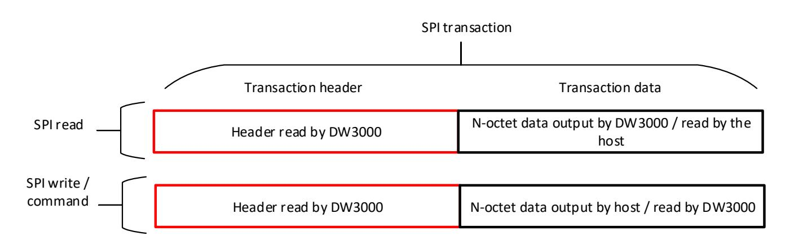
Physically the SPI interface is full duplex in that every transaction shifts bits both into and out of the DW3000. Logically however each transaction is either reading data from the DW3000 or writing data to it. All SPI communication shown here is from the SPI-Master (host microprocessor) point of view. Thus an SPI read means reading data from DW3000 and an SPI write means writing data into DW3000. As shown in Figure 1, for a read transaction all octets beyond the transaction header are ignored by the DW3000, and for a write transaction all octets output by the DW3000 should be ignored by the host system. The SPI transaction header selects the SPI transaction format, shown i n Figure 2:
Note: The octets are physically presented on the SPI interface data lines with the high-order bit sent first in time (MSB first). The first bit in the transaction sequence determines the direction of the communication, which is 0 for the SPI read and 1 for the SPI write operation.
| SPI transaction type | Description |
|---|---|
| Fast command transaction | Write a single octet command specified by the "Fast Command" field |
| Short addressed transaction | Read or write any of the 32 register file (IDs) in the range 0x00 to 0x1f as |
| specified by the 5-bit base address field. | |
| Full addressed transaction | Read or write any of the 32 register files, with a sub-address (an octet |
| offset index) in the range 0x00 to 0x7F as specified by the 7-bit sub | |
| address field | |
| Masked write transaction | A write only transaction allowing changes to sub-fields within any register |
| file with sub-address. This transaction includes an AND-ing mask to clear | |
| selected bits in the destination register and an OR-ing mask to set selected | |
| bits in the destination register. This command removes the need for the | |
| host to do a read-modify-write when it needs to set a sub-field in a | |
| register. | |
| Note: The masked write transaction should not be used on "write-1-to | |
| clear" event status bits. |
SPI transactions are enveloped by the assertion of the active low chip select line, SPICSn. The high-to-low assertion (low) of SPICSn initialises the SPI transaction handler so that the DW3000 interprets the next octet(s) as a new transaction header. The low-to-high de-assertion of SPICSn ends the SPI transaction.
The SPI accessible parameters of the DW3000 are organised into 32 separate register files which are further detailed in sectio n 8 – The DW3000 register set . Every SPI read or write transaction header includes a 5-bit register file ID – 5-bit base address – as shown in Figure 2, that identifies the register file is being accessed by the transaction. Sub-addressing within the selected register file allows efficient access to all the parameters within the DW3000. Depending on the sub-addressing being used, the transaction header is either one or two octets long. These three types of transaction are described in the sub-sections below.
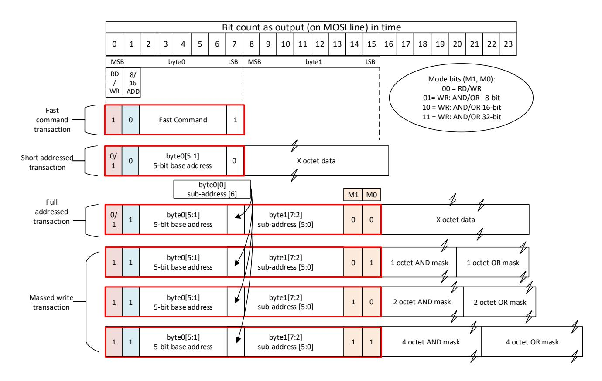
Figure 3 shows the fields within the one octet transaction header of a fast command SPI transaction. The 5 bit fast command hex code is encapsulated by control bits which specify this SPI header as fast command type. In Figure 3 the fast command is a start transmission command ( CMD_TX , hex code 0x1),
| Bit count | ||||||||||
|---|---|---|---|---|---|---|---|---|---|---|
| 0 | 1 |
2
3 4 5 6 |
||||||||
|
CMD
TX = 0x1 _ |
||||||||||
| 1 | 0 | 0 | 0 | 0 | 0 | 1 | 1 | |||
Figure 4 shows the fields within the one octet transaction header read/write command. The 5-bit register file ID is encapsulated by control bits which specify this header as a read/write transaction with a single octet header. This example is accessing th e DEV_ID register (0x00:00). Only the first octet read from the 32-bit DEV_ID register is shown with value of 0x12. Note this value may be different depending on the IC version see § 8.2.2.1 – Sub-register 0x00:00 – Device Identifier.
| Bit count | |||||||||||||||
|---|---|---|---|---|---|---|---|---|---|---|---|---|---|---|---|
| 0 | 1 | 2 | 3 | 4 | 5 | 6 | 7 | 0 | 1 | 2 | 3 | 4 | 5 | 6 | 7 |
| REG = 0x0 | |||||||||||||||
| 0 | 0 | 0 | 0 | 0 | 0 | 0 | 0 | 0 | 0 | 0 | 1 |
read/write data
0 |
0 | 1 | 0 |
Figure 4: Reading first octet from DEV_ID register of the IC
Figure 5 shows the fields within the two-octet transaction header of an extended address write SPI transaction. The 5-bit base address (0x2) and 7-bit sub address (0x1C) are encapsulated by control bits which specify this SPI header as an extended address write type. Figure 5 shows the octets sent to the device to write 2 bytes to register STS_IV (reg ID 0x2 sub address 0x1C). As this is a write type the mode bits (M1 and M0) are set to 0.
| Bit count | |||||||||||||||||||||||||||||||
|---|---|---|---|---|---|---|---|---|---|---|---|---|---|---|---|---|---|---|---|---|---|---|---|---|---|---|---|---|---|---|---|
| 0 | 1 | 2 | 3 | 4 | 5 | 6 | 7 | 0 | 1 | 2 | 3 | 4 | 5 | 6 | 7 | 0 | 1 | 2 | 3 | 4 | 5 | 6 | 7 | 0 | 1 | 2 | 3 | 4 | 5 | 6 | 7 |
|
REG = 0x2
SUB ADD = 0x1C byte0 = 0x39 byte1 = 0x45 M1 M0 |
|||||||||||||||||||||||||||||||
| 1 | 1 | 0 | 0 | 0 | 1 | 0 | 0 | 0 | 1 | 1 | 1 | 0 | 0 | 0 | 0 | 0 | 0 | 1 | 1 | 1 | 0 | 0 | 1 | 0 | 1 | 0 | 0 | 0 | 1 | 0 | 1 |
The SPI CRC mode when enabled provides the ability for SPI transactions to have the added protection of a Cyclic Redundancy Check sequence. This mode of operation is disabled by default, but may be enabled (and disabled) via the SPI_CRCEN bit in the SYS_CFG register.
Note: The SPI interface is a local digital interface which should never experience error, so the enabling of SPI CRC checking is generally unwarranted. While SPI CRC checking has a penalty in terms of the added software overhead of the host microprocessor having to calculate a CRC for every SPI write and read transaction, it may be useful for extra reliability reasons, for example where the design has long SPI lines with a possibility of interference, or in the case of design debugging where SPI integrity has not been proven.
When SPI CRC mode is enabled, the DW3000 behaves as follows:
For SPI writes from the host to the DW3000 when SPI CRC mode is enabled, the IC assumes that each SPI transaction ends with an 8-bit CRC calculated over all the preceding bytes written during the SPI transaction, i.e. from the falling edge of SPICSn. When SPICSn is de-asserted the final CRC byte of the SPI transaction is checked by the IC against a CRC it has generated for the transaction. If the CRC from the host does not match a CRC the IC generates internally, then this is considered to be an error, and the error is signalled to the host via the SPICRCE event bit in the system event status register, SYS_STATUS. This event flag may be used to generate an interrupt if the event is unmasked via the SPICRCE_EN bit in the SYS_ENABLE register.
Note: The write command will complete irrespective of the CRC error check status, which means that the data may be written to the wrong register location, and/or the data may be written incorrectly. The 8-bit CRC itself is not written to the addressed location,
The recommend recovery from a write CRC error is to reset the DW3000 completely, reinitialising and reconfiguring it into the desired operating mode for the application.
For host SPI reads of DW3000 registers when SPI CRC mode is enabled, the IC calculates an 8-bit CRC over the whole the SPI transaction, i.e. from the falling edge of SPICSn at the start of reading to its de-assertion at the end of the read. The CRC thus covers the 1 to 3 header bytes written by the host to initiate the read, and all the subsequent bytes output as the host continues the read transaction. The resultant CRC value is placed into th e SPI_RD_CRC register in Sub-register 0x00:18 – SPI CRC read status.
A host wishing to validate the CRC of an SPI read transaction, must calculate its own CRC value across the header bytes it writes and all the data bytes it subsequently reads for the transaction, and then must read the IC calculated CRC from the SPI_RD_CRC register, and compare it to the host calculated CRC. If these don't match then the host has detected an error in the SPI read.
In the event of an SPI read error, the read can just be repeated, except in the unlikely case that the error changed the read into a write. In that case a write CRC error will be triggered and this can be handled as before by resetting the DW3000 and reinitialising/reconfiguring it into the desired operating mode.
The CRC is 8-bits long, based on the CRC-8-ATM which has generator polynomial:
and has a typical implementation as shown in Figure 6, where the circle operator is an exclusive-OR.
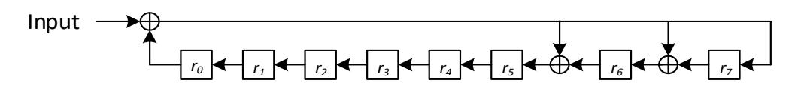
Figure 6: SPI CRC polynomial implementation
In the DW3000 the shift register ( r 0 to r7 ) is initialised, at the start of each read or write SPI, with the value specified in th e SPICRCINIT register, which by default is all zeros.
Note: The source code of the DW3000 device driver and API [3] includes functions to generate and check the SPI CRC along with a simple example that demonstrates their use. The maximum SPI rate supported by DW3000 when the SPI CRC mode is enable is 20 MHz.
The DW3000 can be configured to assert its IRQ pin on the occurrence of one or more status events. The assertion of the IRQ pin can be used to interrupt the host controller and redirect program flow to handle the event.
The polarity of the IRQ pin may be configured via the HIRQ_POL bit in the Sub-register 0x0F:24 – Digital diagnostics test mode control. By default, on power up the IRQ polarity is active high. This is the recommended polarity to ensure lowest power operation of the DW3000 in SLEEP and DEEPSLEEP device states. This pin will float in SLEEP and DEEPSLEEP states and may cause spurious interrupts unless pulled low.
The occurrence of a status event in SYS_STATUS register may assert the IRQ pin depending on the setting of the corresponding bit in the SYS_ENABLE register.
By default, on power-up, the SPIRDY interrupt generating event enable SPIRDY_EN is set to 1 so that the interrupt enabled.
The DW3000 provides a number of GPIO pins as listed in the DW3000 Datasheet [5]. These can be individually configured at the user's discretion to be inputs or outputs. The state of any GPIO configured as an input can be read by the host controller over the SPI interface. When configured as an output the host controller can set the state of the GPIO to high or low. Some of the GPIO lines have multiple functions as listed in the DW3000 Datasheet.
The configuration and operation of the GPIO pins is controlled via GPIO_CTRL register. By default, on powerup, all GPIOs are configured as inputs.
This pin is used for external clock synchronisation purposes. See section 7.1 – External Synchronisation for further details.
The DW3000 has a number of different operational states. These are listed and described in Table 4 below and the transitions between them are illustrated i n Figure 7.
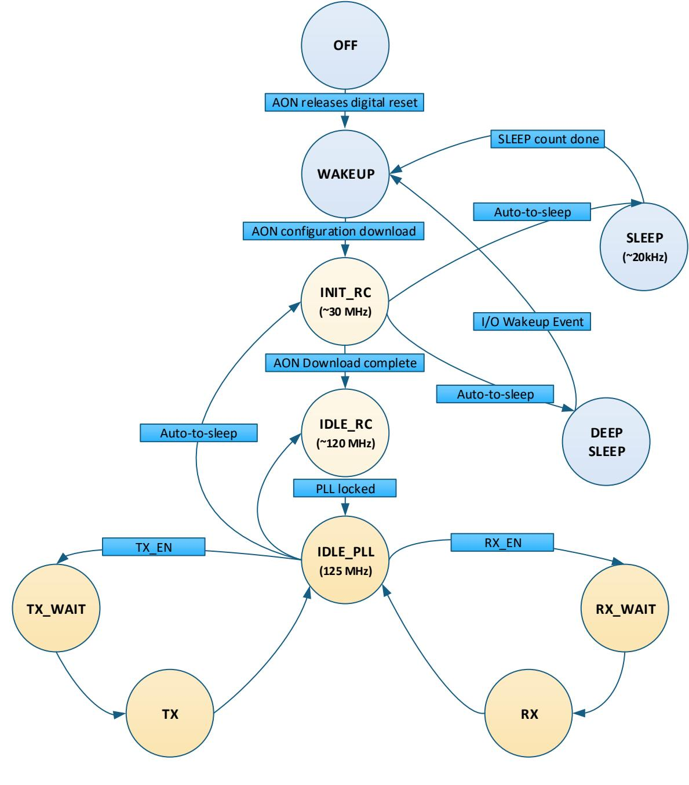
| State Name | State Description | |||||
|---|---|---|---|---|---|---|
| OFF |
In the OFF state the DW3000 is completely powered off, with no voltages applied to
any of its input pins. Power consumption = 0 µA. No I/O pins should be driven or power will leak through the I/O cells. |
|||||
| WAKE_UP |
During the WAKE_UP state the AON sequencer starts up all of the primary power and
clock blocks in order to achieve host comms in the INIT_RC state. The device will automatically transition from the WAKE_UP state to INIT_RC state. |
|||||
| INIT_RC |
Lowest power state with SPI access, but limited to 7 MHz. System is clocked off a
divide-by-four of the FAST_RC clock, i.e., the IC runs at approximately 30 MHz. |
|||||
| IDLE_RC |
Lowest power state allowing full speed SPI access. The FAST_RC oscillator is used as
the system clock source, i.e., the IC runs at approximately 120 MHz. |
|||||
| IDLE_PLL/IDLE |
In the IDLE_PLL state the DW3000 internal clock generator PLL is locked running at its
nominal 125 MHz rate and ready for use but it is gated off to most circuitry to minimize power consumption. In the IDLE_PLL state SPI communications can operate at up to 38 MHz, the maximum SPICLK frequency. In the IDLE_PLL state the analog receive and transmit circuits are powered down. The external host can control the DW3000 to initiate a transmission or reception and thus cause the DW3000 to progress into TX or RX state respectively. If a delayed TX or RX operation is initiated (see section 3.3 – Delayed transmission and 4.3 - Delayed receive) then the DW3000 will enter the TX_WAIT or RX_WAIT (until the delayed time has elapsed) and then enter TX or RX state. |
|||||
| SLEEP |
In the SLEEP state the IC consumes < 1 µA from the external power supply inputs. All
internal LDOs are turned off. In the SLEEP state the DW3000 internal low power oscillator is running and is used to clock the sleep counter whose expiry is programmed to "wake up" the DW3000 and progress into the WAKE_UP state. While the IC is in the SLEEP state, the external system should avoid applying power to GPIO, SPICLK or SPIMISO pins as this will cause an increase in the leakage current. While device is in the SLEEP state the SPI communication is not possible. Note: prior to entering SLEEP state AINIT2IDLE configuration bit in SEQ_CTRL register should be cleared. This will ensure that the device will remain in IDLE_RC state after wake up and the host can then load LDOTUNE_CAL values from OTP prior to changing into IDLE_PLL state. |
|||||
| State Name | State Description |
|---|---|
|
With the exception of the OFF state, the DEEPSLEEP state is the lowest power state of
the device. In this state the IC consumes < 250 nA from the external power supply inputs. |
|
|
In DEEPSLEEP all internal circuitry is powered down with the exception of the always
on memory which can be used to hold the device configuration for restoration on wake up |
|
|
Once in DEEPSLEEP, the DW3000 remains in this state until the occurrence of a wake
up event. This can be either: |
|
|
1.
the SPICSn line pulled low or 2. the WAKEUP line driven high |
|
| DEEPSLEEP | for the duration quoted in the DW3000 Datasheet [5] (nominally 500 μs). |
|
Once the DW3000 has detected a wake up event it progresses into the WAKE_UP
state. While the IC is in DEEPSLEEP state, the external system should avoid applying power to GPIO, SPICLK or SPIMISO pins as this will cause an increase in leakage current. |
|
|
Note: Asserting the RSTn pin (hardware reset) will also take the device out of
DEEPSLEEP, however device will be fully reset in that case. |
|
| While device is in the DEEPSLEEP state the SPI communication is not possible. | |
|
See Note: above (in SLEEP state) on clearing of AINIT2IDLE prior to entering
DEEPSLEEP state. |
|
| TX_WAIT |
This state is very like the IDLE_PLL state except the IC is implementing a delay prior to
transmission, typically aiming to transmit the RMARKER at a specified time. At the apprioiate moment the TX analog blocks are turned on and the device transitions into the TX. |
| RX_WAIT |
This state is very like the IDLE_PLL state except the IC is implementing a delay prior to
turning on the receiver. At the apprioiate time the RX analog blocks are turned on and the device transitions into the RX state. |
|
In the TX the DW3000 actively transmits a packet (generally containing the contents
of the transmit buffer) on the configured RF channel with the configured transmit parameters (PRF, data rate, preamble code etc.) |
|
| TX state |
Once the transmission is complete the DW3000, will go back to the IDLE_PLL state,
following which it may enter RX state (e.g. if using wait for response command) or go to a low-power state depending on the programmed configuration. If the ATX2SLP bit is set (in SEQ_CTRL) the DW3000 will enter the SLEEP or DEEPSLEEP state automatically, see "Auto-to-sleep" path in Figure 7 (as long as no host interrupts are pending). |
| State Name | State Description |
|---|---|
|
In the RX state, the receiver is active, either hunting for preamble or (once it has
detected preamble) actively receiving preamble searching for the start of frame delimiter (SFD), and subsequently receiving the rest of the packet. In the RX state, the RF synthesizer and all RX blocks are active. |
|
| RX state |
After an event that ends the reception, (either a good frame/packet reception, or some
error or timeout event that aborts reception) the DW3000 will return to the IDLE_PLL state unless ARX2SLP bit is set (in SEQ_CTRL) in which case the IC will enter the SLEEP or DEEPSLEEP state automatically, see "Auto-to-sleep" path in Figure 7 (as long as no host interrupts are pending). |
|
Note that it is not possible to be in the RX and TX states simultaneously – the DW3000
is a half-duplex transceiver device. |
The chipping rate specified for the HRP UWB PHY by the IEEE 802.15.4 standard [1] is 499.2 MHz, and all IC system clocks are referenced to this frequency. Where the system clock frequency is quoted as 125 MHz, this is an approximation to the actual 124.8 MHz system clock frequency (crystal 38.4 MHz × 13 ÷ 4). Similarly, where the system clock period is quoted as 8 ns, this is an approximation to the actual period of 1/(124.8×10 6 ) seconds.
The 1 GHz PLL clock, where referenced, is an approximation to its actual frequency of 998.4 MHz.
A 63.8976 GHz sampling clock is associated with ranging for the IEEE802.15.4 standar d [1], where a 15.65 picosecond time period is referred to, it is an approximation to the period of this clock.
The PRF values of 16 MHz and 64 MHz quoted in this document are approximations to the values dictated by the IEEE802.15.4 standard [1]. PRF mean values are slightly higher fo r SHR compared to the PHR and data parts of the packet. Please refer t o [1] for full details of peak and mea n PRFs .
Where a data rate of 6.8 Mb/s is referred to, this is equivalent to the 6.81 Mb/s data rate in [1]. Note that the data rates quoted are (rounded) nominal values based on the data symbol rate multiplied by the Reed-Solomon (RS) coding rate, 0.87 which is 330/378 because the RS coding adds 48 parity bits for every 330 bits data (or part thereof). Please refer t o [1] for more details.
When the external power source is applied to the DW3000 for the first time (cold power up), the internal Power On Reset (POR) circuit compares the externally applied supply voltage (VDD1) to an internal power-on threshold (approximately 1.5 V), and once this threshold is passed the AON block is released from reset and the external device enable pin EXTON is asserted. This is shown in Figure 8.
Then the VDD2a and VDD3 supplies are monitored and once they are above the required voltage as specified in the Datasheet (2.2 V and 1.4 V respectively), the fast RC oscillator (FAST_RC) and crystal (XTAL Oscillator) will come on within 500 µs and 1 ms respectively. However if time for VDD2a or VDD3 exceeds 10 ms then the device will need to be reset once these supplies are up. Please refer to the Datasheet [5] for more details.
The DW3000 digital core will be held in reset until the crystal oscillator is stable. Once the digital reset is deasserted the digital core wakes up and enters the INIT_RC state, (see Figure 7 an d Figure 8) . Then once the configurations stored in AON and OTP have been restored (into the configuration registers) the device will enter the IDLE_RC state IDLE_RC . Then the host can set the AINIT2IDLE configuration bit i n SEQ_CTRL and the IC will enable the CLKPLL and wait for it to lock before entering the IDLE_PLL state.
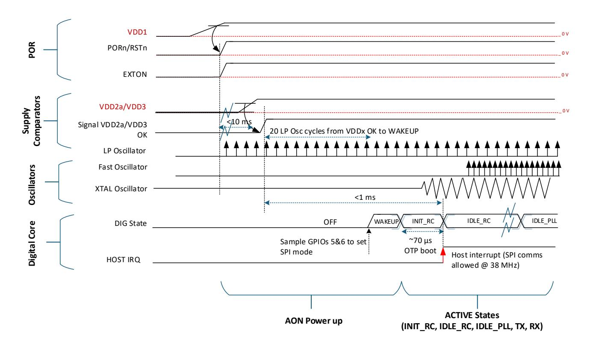
Figure 8: Timing diagram for cold start POR
In the very low power DEEPSLEEP state, the IC is almost completely powered down except for a small amount of "always-on" memory necessary to maintain IC configurations. This is the lowest power mode of the IC where the power drain is approximately 200 nA. To wake the IC from DEEPSLEEP state requires an external agent to assert the WAKE_UP input line or the external host microprocessor to initiate an SPI transaction to assert the SPICSn input.
The DW3000 also includes a low power SLEEP state where the IC can wake itself from sleeping as a result of the elapsing of a sleep timer (see 8.2.11.6.1 for sleep timer configuration) that is running from a lowpowered oscillator internal to the DW3000 IC. In this SLEEP state the power drain is approximately 1 µA. The IC will wake from the SLEEP state when the sleep timer elapses, or the WAKE_UP or SPICSn inputs may be used to wake the device before the timer elapses.
The frequency of the low power oscillator is dependent on process variations within the IC, but is typically around 20 kHz. There are facilities within the IC to measure the frequency of this LP oscillator and also to trim it.
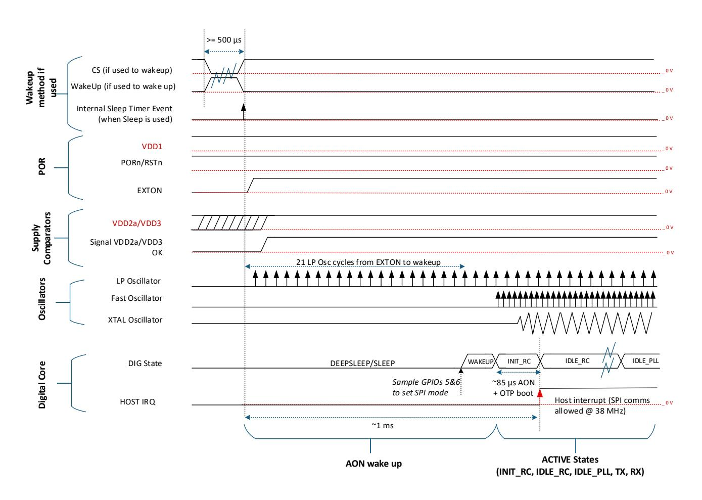
Figure 9: Timing diagram for warm start (@ VDD = 3V)
Waking from SLEEP and DEEPSLEEP states can happen in following ways:
• Driving the WAKEUP pin high for approximately 500 μs, (assuming WAKE_WUP configuration bit is set in AON_CFG) .
• Driving the SPICSn pin low for approximately 500 μs, (assuming th e WAKE_CSN configuration bit is set i n AON_CFG) . This can be achieved by doing a dummy SPI read of sufficient length.
Note: When using the SPICSn pin to wake up the device it is important that the SPIMOSI line is held low for the duration of the SPICSn to ensure that a spurious write operation does not occur.
In addition return from SLEEP also occurs when
• The internal sleep timer counter expires, (assuming the WAKE_CNT configuration bit is set in AON_CFG along with an appropriate SLEEP_TIM value).
In all three wake up cases the device is returned to the IDLE_PLL state if the AINIT2IDLE configuration bit in SEQ_CTRL register was set when the device configuration was uploaded prior to entering sleep state, otherwise the device will stay in IDLE_RC . Additional state transitions can be automatically enacted thereafter depending on configurations.
Asserting the RSTn pin (hardware reset) will also take the IC out of SLEEP or DEEPSLEEP states, however device will be fully reset in that case.
Prior to entering the SLEEP or DEEPSLEEP states the main DW3000 configuration register values are saved (copied) into the Always-On (AON) memory, and upon waking, prior to exiting the INIT_RC state the saved values are restored from the AON memory.
Power is maintained to the AON memory at all times, even in SLEEP and DEEPSLEEP states. The copying of configuration data (saving or restoring) and boot up time of the OTP takes ~85 µs to complete (when restoring from SLEEP and DEEPSLEEP states, se e Figure 9). Restoration of configurations during the WAKE_UP state is only done if the ONW_AON_DLD configuration bit is set in AON_DIG_CFG.
Note: The host should wait for the restoration of configurations to be completed before using SPI to avoid internal IC conflicts that may lead to the corruption of the configuration values. The preffered option is to wait for the assertion of the SPIRDY interrupt.
| Configuration Register | Configuration Register |
|---|---|
| AON_DIG_CFG [23:0] | GPIO_MODE [31:0] |
| XTAL [7:0] | DTUNE0 [15:0] |
| PLL_CAL [7:0] | RX_SFD_TOC [15:0] |
| PANADR [31:0] | PRE_TOC [15:0] |
| SYS_CFG [31:0] | DTUNE3 [31:0] |
| FF_CFG [15:0] | |
| TX_FCTRL [47:0] | PLL_CFG [15:0] |
| DREF_TIME [31:0] | CIA_CONF [31:0] |
| RX_FWTO [23:0] | FP_CONF [31:0] |
| SYS_ENABLE [47:0] | IP_CONF [31:0] |
| TX_ANTD [15:0] | STS_CONF_0 [31:0] |
| ACK_RESP_T [31:0] | STS_CONF_1 [31:0] |
| TX_POWER [31:0] | SEQ_CTRL [31:0] |
| CHAN_CTRL [15:0] | TXFSEQ [31:0] |
| AES_IV0 [31:0] | LED_CTRL [15:0] |
| AES_IV1 [31:0] | RX_SNIFF [31:0] |
| AES_IV2 [31:0] | DGC_CFG [15:0] |
| AES_IV3 [31:0] | RF_SWITCH [31:0] |
| DMA_CFG [31:0] | GPIO_PULL_EN [15:0] |
| AES_KEY [127:0] | CIA_ADJUST [15:0] |
| STS_CFG [15:0] | |
| STS_KEY [127:0] | |
| STS_IV [127:0] |
| Table 5: Configurations maintained in the AON memory array |
|---|
| Configuration Register | |||||||
|---|---|---|---|---|---|---|---|
| GPIO_MODE [31:0] | |||||||
| DTUNE0 [15:0] | |||||||
| RX_SFD_TOC [15:0] | |||||||
| PRE_TOC [15:0] | |||||||
| DTUNE3 [31:0] | |||||||
| PLL_CFG [15:0] | |||||||
| CIA_CONF [31:0] | |||||||
| FP_CONF [31:0] | |||||||
| IP_CONF [31:0] | |||||||
| STS_CONF_0 [31:0] | |||||||
| STS_CONF_1 [31:0] | |||||||
| SEQ_CTRL [31:0] | |||||||
| TXFSEQ [31:0] | |||||||
| LED_CTRL [15:0] | |||||||
| RX_SNIFF [31:0] | |||||||
| DGC_CFG [15:0] | |||||||
| RF_SWITCH [31:0] | |||||||
| GPIO_PULL_EN [15:0] | |||||||
| CIA_ADJUST [15:0] | |||||||
When waking from SLEEP or DEEPSLEEP it is necessary to load the LDOTUNE_CAL value that is programmed into OTP during IC production test calibration.Default configuration on power up and after a reset
DW3000 is a highly configurable transceiver with many features. The register default (reset) values have been selected with the intention of minimising the amount of user configuration required. The default configuration is summarised in Table 6.
| Parameter | Default Value | ||||||
|---|---|---|---|---|---|---|---|
| Channel | 5 (CF is 6489.6 MHz) | ||||||
| Data Rate | 6.8 Mb/s | ||||||
| PHR Rate | 850 kb/s | ||||||
| PRF | 64 MHz | ||||||
| Preamble Length | 64 symbols | ||||||
| Preamble Code | 9 | ||||||
|
Scrambled Timestamp
Sequence (STS) |
off | ||||||
| STS Sequence Length | n/a | ||||||
| SFD | IEEE802.15.4z [2] length 8 | ||||||
Channel numbers and preamble codes are as specified in the standard, IEEE802.15.4 standar d [1]. Some further details are given below on the specifics of the default device configuration. For full details please refer to the register map where the default value of each register is given, § 8 – The DW3000 register set .
Note: the above default configuration needs to be modified in oder for the DW3000 to correctly interoperate with the DW1000 on CH5.
Much of the system configuration is configured in the SYS_CFG register, please see section Sub-register 0x00:10 – System configuration for a full description of the register contents and defaults.
By default, interrupt polarity is active high and all interrupts are disabled, see HIRQ_POL in th e DIAG_TMC register for interrupt polarity and the SYS_ENABLE and SYS_STATUS registers for interrupt configuration and information, see sections Sub-register 0x00:3C – System event enable mask and Sub-register 0x00:44 – System event status .
GPIOs are all set to mode 0 (as defined in the GPIO_MODE register), their default function is shown i n Table 7.
| GPIO Pin | Default Function |
|---|---|
| GPIO0/RXOKLED | GPIO0 |
| GPIO1/SFDLED | GPIO1 |
| GPIO2/RXLED | GPIO2 |
| GPIO3/TXLED | GPIO3 |
| GPIO4/EXTPA | GPIO4 |
| GPIO5/EXTTXE/SPIPOL | GPIO5 |
| GPIO6/EXTRXE/SPIPHA | GPIO6 |
| SYNC/GPIO7 | SYNC |
| IRQ/GPIO8 | IRQ |
Frame wait timeout (see SYS_CFG register bi t RXWTOE and Sub-register 0x00:34 – Receive frame wait timeout period ) and preamble detection timeout (see Sub-register 0x06:04 – Preamble detection timeout count) are off, whilst SFD detection timeout (see Sub-register 0x06:02 – SFD detection timout count) is on.
Othe r SYS_CFG register settings such as automatic receiver re-enable (RXAUTR) and MAC functions such as frame filtering (FFEN) , double buffering (DIS_DRXB) and automatic acknowledgement (AUTO_ACK) are all off by default. Automatic CRC generation in the MAC frame data is on (DIS_FCS_TX) .
External synchronisation and the use of external power amplifiers are deactivated by default, see sections 7.1 – External Synchronisation and 7.2 – External power amplification .
Channel 5, preamble code 9 and 64 MHz PRF are set by default in th e CHAN_CTRL register, see Sub-register 0x01:14 – Channel control for more information.
The transmit data rate is set to 6.8 Mb/s in the TX_FCTRL register, see TXBR field in Sub-register 0x00:24 – Transmit frame control . The receive data rate is never set it can be decoded from the PHR bits.
Transmit RF channel configurations are set for channel 5 by default – see Sub-register 0x07:1C – RF TX control register 2. The transmit preamble symbol repetition length is 64 symbols, see Sub-register 0x00:24 – Transmit frame control, TXPSR field for configuration details.
Receiver RF channel configurations are set for channel 5 by default, to match the transmitter.
Digital receiver tuning registers are configured by default for 64 MHz PRF, 6.8 Mb/s data rate and a preamble symbol repetition of length 64. See Sub-register 0x06:00 – Digital RX tuning register for programming details.
The CIARUNE bit (CIA run enable) is enabled by default, which means that th e CIA algorithm will execute on every packet reception, which in turn will calculate accurate time-of-arrival. If the running the CIA is not required then th e CIARUNE control in Sub-register 0x11:08 – Sequencing control can be turned off (set to zero). This may be useful in a data communications only application, to save power and time.
The IEEE802.15.4 standar d [1] has 16 defined channel/bands for the HRP UWB PHY. The DW3000 supports the subset of these listed i n Table 8 below. Depending on the channel and the pulse repetition frequency (PRF) the IEEE802.15.4 standard [1] HRP UWB PHY defines a choice of two or four preamble codes. The standard defined preamble code options are also listed i n Table 8. The combination of channel number and preamble code is what the standard terms a complex channel .
|
Channel
number |
Centre
frequency (MHz) |
Bandwidth
(MHz) |
Preamble Codes
(16 MHz PRF) |
Preamble Codes
(64 MHz PRF) |
|||
|---|---|---|---|---|---|---|---|
| 5 | 6489.6 | 499.2 | 3, 4 | 9, 10, 11, 12 | |||
| 9 | 7987.2 | 499.2 | 3, 4 | 9, 10, 11, 12 | |||
The preamble codes specified by the standard for use on a particular channel were chosen to have a low cross correlation factor with each other with the intention that the complex channels could to operate independently from each other as separate networks. In practice, as there is still some cross correlation, there will be some break-through between different codes especially in conditions of close proximity with long preambles.
The IEEE802.15.4 standar d [1] includes a feature called dynamic preamble select (DPS) , where devices switch to using one of th e DPS specific preamble codes for the ranging exchange, and perhaps a different one for each direction of communication. The idea is to make it more difficult to eavesdrop or spoof, by randomly changing the DPS preamble codes in a mutually agreed sequence only known to the valid participants. This is supported by the DW3000 where at 64 MHz PRF the preamble codes additionally available for DPS are: 13, 14, 15, 16, 21, 22, 23 and 24.
The UWB specified in the IEEE802.15.4 standar d [1] is sometimes called impulse radio UWB because it is based on high speed pulses of RF energy. During the PHR and Data parts of the packet, information bits are signalled by the position of the burst, in a modulation scheme termed burst position modulation (BPM).
Each data bit passes through a convolution encoder to generate a "parity" bit used to set the phase of the burst as either positive or negative, this component of the modulation is termed binary phase-shift keying (BPSK). Figure 10 shows how the convolutional encoder contributes to this BPM/BPSK modulation. A coherent receiver (i.e. one tracking carrier timing and phase) such as the one in the DW3000 can determine this burst phase and use it in a Viterbi decoder to get an additional 3 dB of coding gain, thereby extending the operational range of the modulation.
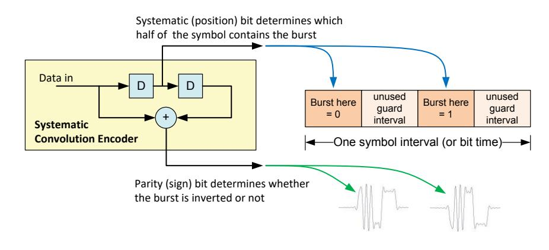
Figure 10: BPM/BPSK data and PHR modulation
In addition the quarter symbol interval is sub-divided into 2, 4, or 8 sub-intervals and a pseudo random sequence used to determine both the burst shape and which of the sub-intervals are actually used for the burst transmission. This gives more immunity to interference and whitens the output spectrum allowing a higher signal power to be used in the transmitter.
Forward error correction (FEC) is also included in the PHR and Data parts of the packet. The 19-bit PHR includes a 6-bit single-error-correct double-error-detect (SECDED) code and the data part of the packet has a Reed Solomon (RS) code applied. Both SECDED and RS codes are termed "systematic" meaning that the data can be recovered without using the codes (and of course not benefitting from them in that case), e.g. by a non-coherent receiver. The 850 kb/s and 6.8 Mb/s user data rates quoted, include allowance for the 0.87 average RS coding rate. The PHR is not RS coded so for example at the 850 kb/s nominal rate the PHR is actually sent at 975 kb/s.
The Synchronisation Header (SHR) consists of the preamble sequence and the SFD (start of frame delimiter). In contrast to the BPM/BPSK modulation used for the PHR and data, the synchronisation header is made up of single pulses. The preamble symbol period is divided into approximately 500 "chip" time intervals, (496/508 depending on 16/64 MHz PRF 1 ), in which either a negative or a positive pulse may be sent, or no pulse. The "chip" interval is 499.2 MHz, a fundamental frequency within the UWB PHY, and so the resultant symbol times are thus 496 /499.2 µs for 16 MHz PRF, and 508 /499.2 µs for 64 MHz PRF, (see Table 9 below).
The sequence of pulses sent during the preamble symbol interval is determined by the preamble code. The standard defines 8 preamble codes of length-31 for use at 16 MHz PRF and 16 preamble codes of length-127 for use at 64 MHz PRF. The standard nominates particular codes for particular channels so that at 16 MHz PRF there are just two to choose from per channel, while at 64 MHz PRF there is a choice of four codes per channel. The length-31 codes are spread by inserting 15 zeros after each pulse to give the 496 chip times per symbol while the length-127 codes are spread by inserting 3 zeros after each pulse to give the 508 chip times per symbol. The preamble length and duration is defined by how many times (i.e. for how many
1 The DW3000 supports average pulse repetition frequencies of 16 MHz and 64 MHz
© Decawave Ltd 2019 Version 1.1 Page 29 of 255
symbols) the sequence is repeated. This is determined by the configuration of the number of preamble symbol repetitions (PSR).
| Mean PRF (MHz) | #Chips Per Symbol | Preamble Symbol Duration (ns) |
|---|---|---|
| 16 nominal | 496 | 993.59 |
| 64 nominal | 508 | 1017.63 |
The standard defines PSR settings of 16, 64, 1024 and 4096. The DW3000 supports these (although it will not receive packets with preamble length below 32 symbols) and in addition supports PSR settings of 128, 256, 512, 1536 and 2048.
The preamble sequence has a property of perfect periodic autocorrelation 2 which in essence allows a coherent receiver to determine the exact impulse response of the RF channel between transmitter and receiver. This brings two important benefits. Firstly, it allows the receiver make use of the received energy from multiple paths, turning multipath from an interference source into a positive affect extending operating range. Secondly, it lets the receiver resolve the channel in detail and determine the arrival time of the first (most direct) path, even when attenuated, which brings precision advantages for RTLS applications.
Note: The DW3000 includes a packet format specified by new IEEE802.15.4z amendment [2] which incorporates a cryptographically generated scrambled timestamp sequence (STS) that can be used to obtain an RX timestamp that has improved integrity in terms of its robust to accidental or deliberate interference, e.g. as a result of packet collisions, for more details of this please refer to sectio n 6 below. The SFD marks the end of the preamble and the precise start of the switch into the BPM/BPSK modulation of the PHR. The time-stamping of this event is deterministic in terms of symbol times and it is this in conjunction with determining the first arriving ray within that symbol time that allows the accurate timestamping needed for precision RTLS applications. The standard specifies the SFD, which consists of the preamble symbols either not sent, or sent as normal or sent inverted (i.e. positive and negative pulses reversed) in a defined pattern 8 symbol times long for 850 kb/s and 6.81 Mb/s data rates. The length-8 SFD sequence is: 0, +1, 0, -1, +1, 0, 0, -1. The IEEE802.15.4z amendment also specifies length-8 SDF without zeros, ( -1, -1, -1, +1, -1, -1, +1, -1), which gives improved performance in a coherent receiver such as the DW3000 that supports it.
The PHY header (PHR) is modulated using the BPM/BPSK modulation scheme defined in section 2.7 above, but it does not employ the Reed Solomon code used for data, instead is employs a 6-bit SECDED parity check sequence as part of its 19-bit length.
2 V. P. Ipatov, "Ternary sequences with ideal autocorrelation properties," Radio Eng. Electron. Phys., vol. 24, pp. 75–79, 1979
| Bit 0 | 1 | 2 | 3 | 4 | 5 | 6 | 7 | 8 | 9 | 10 | 11 | 12 | 13 | 14 | 15 | 16 | 17 | 18 |
|---|---|---|---|---|---|---|---|---|---|---|---|---|---|---|---|---|---|---|
| R1 | R0 | L6 | L5 | L4 | L3 | L2 | L1 | L0 | RNG | EXT | P1 | P0 | C5 | C4 | C3 | C2 | C1 | C0 |
| Data Rate | Frame Length |
Ra
fra ng me ing |
Ex
He te ad ns er ion |
Duration | Preamble | SECDED Check Bits | ||||||||||||
Figure 11 above shows the bits of the PHR. These are transmitted bit-0 first in time. The DW3000 fills in the Data Rate, Frame Length, Ranging frame, and Preamble Duration fields of the PHR based on the user configuration of the appropriate parameters in TX_FCTRL and generates th e SECDED sequence accordingly. The Header Extension bit of the PHR is always zero and is reserved by IEEE for future extensions.
Standard IEEE 802.15.4-2020 UWB packets can carry up to 127 bytes of payload, se e Figure 11: PHR bit assignment. The DW3000 also supports a mode of operation with frame lengths up to 1023 bytes. This mode of operation is enabled via the PHR_MODE selection bits of Sub-register 0x00:10 – System configuration , which changes the defifinition of the PHR bits. While this makes the PHR non-compliant with IEEE 802.15.4 this PHR format is actually defined as an option in the IEEE 802.15.8 standard.
In this mode the PHY header (PHR) is redefined to carry the 3 extra bits of frame length. In order to communicate extended length frames between two DW3000 devices both ends must be set to the long frame PHY header mode via the PHR_MODE selection bits of Sub-register 0x00:10 – System configuration . If the setting is only at one end of a link any attempt at communication will fail with PHR errors being reported. When this long frame mode is selected, the DW3000 will be unable to successfully communicate with any device operating with the IEEE 802.15.4 standard frame encoding, and because the SECDED error check sequence of the PHR in this long frame mode is inverted this will cause PHR error events in advance of any attempt to receive the payload.
Note that the probability of an error occurring within a frame increases as the frame length is increased, and as a result of this increasing the frame length may or may not improve system throughput depending on the error rate and the need to retransmit frames when there is an error.
In long frame mode only the high order bit of the TXPSR value from TX_FCTRL is sent in the PHR and reported in the RXPSR value in RX_FINFO.
The PHR encoding for the extended length frames is shown below i n Figure 15:
|
Bit
0 |
1 | 2 | 3 | 4 | 5 | 6 | 7 | 8 | 9 | 10 | 11 | 12 | 13 | 14 | 14 | 16 | 17 | 18 |
|---|---|---|---|---|---|---|---|---|---|---|---|---|---|---|---|---|---|---|
| R1 | R0 | L9 | L8 | L7 | L6 | L5 | L4 | L3 | L2 | L1 | L0 | P0 | S5 | S4 | S3 | S2 | S1 | S0 |
|
Data
Frame Length Rate |
Du
Pre rat am ion ble |
SECDED Check Bits | ||||||||||||||||
The Data Rate field has the same encoding as used for the IEEE802.15.4 standard PHR.
The frame length field L9-L0 is an unsigned 10-bit integer number that indicates the number of octets in the PSDU from the MAC sub-layer. Note that the high order bit of the length is transmitted first in time.
A single bit, P0, provides the Preamble Duration field, indicating the length of the SYNC portion of the SHR shown in Table 11.
| Table 10: Preamble duration field values in extended length frame PHR |
|---|
| P0 |
Preamble length for
BPM-BPSK modulation mode |
||||||
|---|---|---|---|---|---|---|---|
| 0 | 64 to 1024 symbols | ||||||
| 1 | 1536 to 4096 symbols | ||||||
The preamble duration field, TXPSR, may be used by a receiver to set the value of the preamble duration for an ACK frame to 64, 128, 256, 512, 1024, 1536, 2048 and 4096 symbols. Alternatively, the FINE_PLEN field may be used to set any multiple of 8 as a preamble length from 32 to 2048. The application may use the count of received preamble symbols, as reported i n IP_DIAG12 register, to additionally inform the choice of preamble length for any response frames.
The SECDED field, S5–S0, is a set of six parity check bits that are used to protect the PHR from errors caused by noise and channel impairments. The SECDED calculation is the same as that defined in IEEE802.15.4 standard [1] except the bits C5–C0 are inverted to get S5–S0 as follows:
S0 = NOT (C0), S1 = NOT (C1), S2 = NOT ( C2), S3 = NOT (C3), S4 = NOT (C4) and S5 = NOT (C5) This is as specified in the IEEE 802.15.8 standard for frames up to 1023 octets.
The transmission of packets is one of the basic functions of the DW3000 transceiver. The packets can be sent both with and without data payload. The DW3000 supports four packet formats, the IEEE802.15.4 standard [1] packet format, and three new IEEE802.15.4z amendment [2] defined formats where a scrambled timestamp sequence (STS) is introduced into the packet as shown in Figure 13. When the STS modes are enabled the DW3000 transmitter will insert the STS in the position shown, and the receiver will expect it to be present accordingly. The packet begins with a synchronisation header consisting of the preamble and the SFD (start of frame delimiter). The PHY header (PHR) defines the length (and data rate) of the data payload part of the packet. The STS when inserted allows for secure timestamping, and ranging, see § 6.
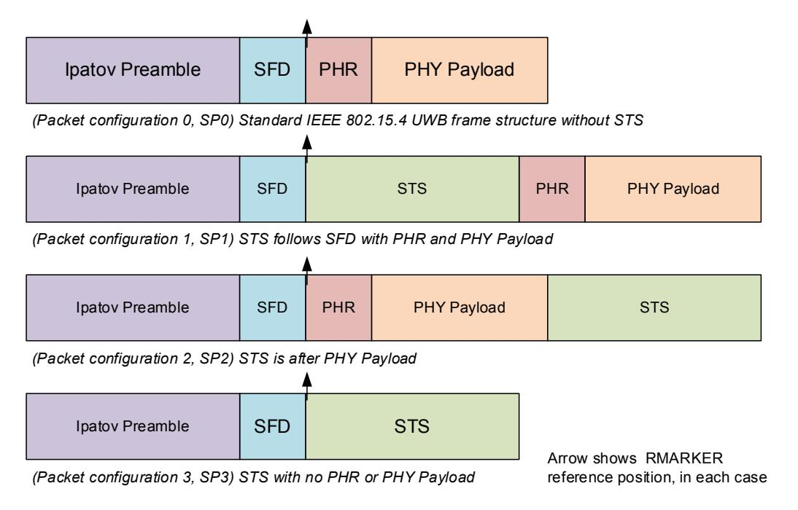
The DW3000 basic transmit sequence is as shown in Figure 14, beginning in the IDLE_PLL state awaiting instruction from the host controller.
In order to transmit, the host controller must write data for transmission to TX_BUFFER, and select the preamble length, frame length, data rate and PRF in the Transmit Frame Control and Channel Control registers, TX_FCTRL and CHAN_CTRL. The PRF will be set according to the chosen preamble code (TX_PCODE) . Assuming all other relevant configurations have already been made, the host controller initiates the transmission by issuing a TX command (e.g. CMD_TX ). Once transmission is initiated, the DW3000 sends the complete packet of preamble , SFD, PHR and the PHY Payload (MAC Frame). The STS will be included optionally depending on the configured packet format (se e Figure 13) . In the STS packet configuration 3 (SP3) the PHR and PHY Payload is omitted.
As an aid to MAC layer framing, the IC calculates the FCS (CRC) during the transmission of the (MAC) data from th e TX_BUFFER based on the frame length (TXFLEN) and automatically appends it.
The end of transmission is signalled to the host via the TXFRS event status bit in SYS_STATUS, and the DW3000 returns to IDLE_PLL mode to await new instructions.
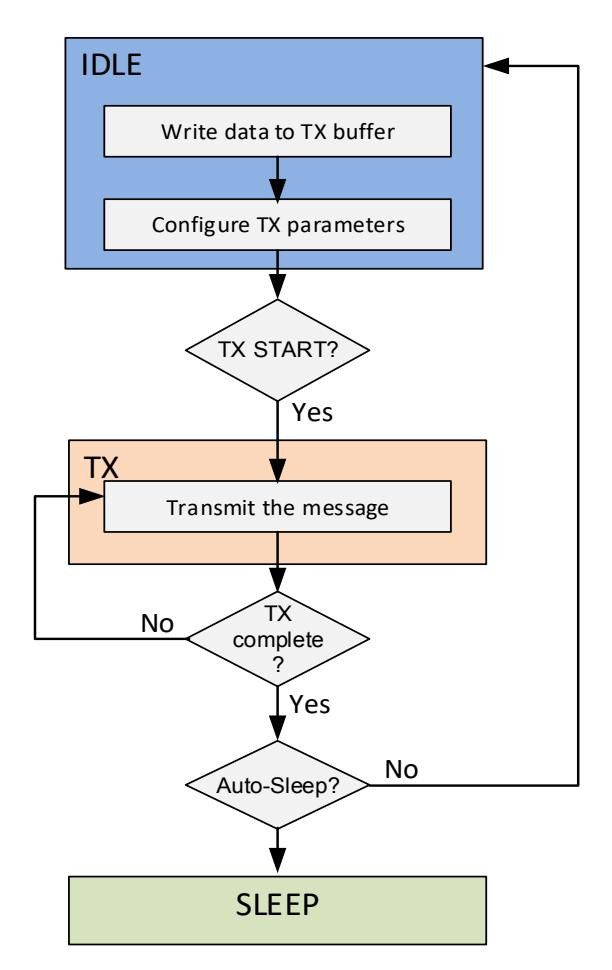
Figure 14: Basic transmit sequence
Further transmission features are described in the following sections:
During packet transmission the event nominated to time-stamp termed the RMARKER, where the RMARKER is defined in the IEEE standard to be the time when the beginning of the first symbol following th e SFD is at the local antenna, or more precisely the peak pulse location associated with the first chip following the SFD.
The DW3000 digital transmit circuitry takes note of the system clock counter as the RAW transmit timestamp at the point when it begins sending the first chip following th e SFD. It then adds to this the transmit antenna delay (configured in TX_ANTD) to get the antenna adjusted transmit time-stamp that it writes to th e TX_STAMP field of TX_TIME.
See also section 10.3 – IC calibration – antenna delay.
For delayed transmission, the transmit time is programmed into DX_TIME and then the delayed transmission is initiated by issuing the CMD_DTX command. Alternatively a delayed transmission can be achieved by programming a "reference time" into the DREF_TIME and an offset into th e DX_TIME, after which delayed transmission command , CMD_DTX_REF, is issued instead.
One of the design goals of delayed transmission was that the specified transmission time would be predictable and aligned with the transmit timestamp. This was achieved in that the transmission time specified is the time of transmission of the RMARKER (not including the TX antenna delay), that is the raw TX time, TX_RAWST before the antenna delay is added. This allows for the time of transmission of a message to be pre-calculated and embedded in the message being transmitted.
Note: The value programmed into DX_TIME (and in DREF_TIME) is in time units of 4 ns, or more precisely 2 ÷ (499.2×10 6 ). To calculate the time of transmission of th e RMARKER at the antenna, the low 9 bits of the delayed TX time should be zeroed before adding the TX antenna delay, and the high 32-bits of the 40-bit result written int o DX_TIME, (or a reference time programmed into DREF_TIME and an offset into the DX_TIME) . Note: the least significant bit of DX_TIME is ignored so its effective resolution of is really 4 ÷ (499.2×10 6 ) or approximately 8 ns.
In performing a delayed transmission, i.e., after the CMD_DTX is issued, the DW3000 calculates an internal start time for when to begin sending the preamble to make the RMARKER raw timestamp agree with the programmed transmit time. The DW3000 then remains in TX_WAIT state until the system time (SYS_TIME) reaches the correct point to turn on the transmitter and begin preamble.
One use of delayed transmission (and reception), is to control the response times in two-way ranging, (described in APPENDIX 1: Two-way ranging), and especially to allow the prediction and embedding of the TX timestamp (or response delay) into the transmitted message to reduce the number of messages necessary for a ToF measurement. Delayed transmission (and reception) also helps to minimise the response times to save power, however in working towards this the host microprocessor may sometimes be late invoking the delayed TX, i.e., where the system clock has passed the specified start time (i.e. internal start time mentioned above) and then the IC would have to complete almost a whole clock count period before the start time is reached. The HPDWARN event status flag in SYS_STATUS warns of this "lateness" condition so that during application development the delay may be chosen large enough to generally avoid this lateness. The HPDWARN status flag also serves to facilitate detection of this late invocation condition so that recovery measures may be taken should it ever occur in deployed product. For delayed transmission it is the internal start time mentioned above that is used when deciding whether to set the HPDWARN event for the delayed transmit. As long as the preamble start time is in the near future, the HPDWARN event flag will not be set. If a long delay was intended then HPDWARN flag can be ignored and the transmission will begin at the allotted time. If a long delay was not intended then the transmission can be stopped by issuing transceiver off command CMD_TXRXOFF .
Standard IEEE 802.15.4-2015 UWB packets can carry up to 127 bytes of payload. The DW3000 also supports a mode of operation with frame lengths up to 1023 bytes. This mode of operation is enabled via the PHR_MODE selection bits of Sub-register 0x00:10 – System configuration , which changes the defifinition of the PHR bits. While this makes the PHR non-compliant with IEEE 802.15.4 this PHR format is actually defined as an option in the IEEE 802.15.8 standard.
In this mode the PHY header (PHR) is redefined to carry the 3 extra bits of frame length. In order to communicate extended length frames between two DW3000 devices both ends must be set to the long frame PHY header mode via the PHR_MODE selection bits of Sub-register 0x00:10 – System configuration . If the setting is only at one end of a link any attempt at communication will fail with PHR errors being reported. When this long frame mode is selected, the DW3000 will be unable to successfully communicate with any device operating with the IEEE 802.15.4 standard frame encoding, and because the SECDED error check sequence of the PHR in this long frame mode is inverted this will cause PHR error events in advance of any attempt to receive the data payload.
Note that the probability of an error occurring within a frame increases as the frame length is increased, and as a result of this increasing the frame length may or may not improve system throughput depending on the error rate and the need to retransmit frames when there is an error.
In long frame mode only the high order bit of the TXPSR value from TX_FCTRL is sent in the PHR and reported in the RXPSR value in RX_FINFO.
|
Bit
0 |
1 | 2 | 3 | 4 | 5 | 6 | 7 | 8 | 9 | 10 | 11 | 12 | 13 | 14 | 14 | 16 | 17 | 18 |
|---|---|---|---|---|---|---|---|---|---|---|---|---|---|---|---|---|---|---|
| R1 | R0 | L9 | L8 | L7 | L6 | L5 | L4 | L3 | L2 | L1 | L0 | P0 | S5 | S4 | S3 | S2 | S1 | S0 |
|
Data
Frame Length Rate |
Du
Pre rat am ion ble |
SECDED Check Bits | ||||||||||||||||
The PHR encoding for the extended length frames is shown below i n Figure 15:
The Data Rate field has the same encoding as used for the IEEE802.15.4 standard [1] PHR.
The frame length field L9-L0 is an unsigned 10-bit integer number that indicates the number of octets in the PSDU from the MAC sub-layer. Note that the high order bit of the length is transmitted first in time.
A single bit, P0, provides the Preamble Duration field, indicating the length of the SYNC portion of the SHR shown in Table 11.
| P0 |
Preamble length for
BPM-BPSK modulation mode |
|---|---|
| 0 | 64 to 1024 symbols |
| 1 | 1536 to 4096 symbols |
The preamble duration field, TXPSR, may be used by a receiver to set the value of the preamble duration for an ACK frame to 64, 128, 256, 512, 1024, 1536, 2048 and 4096 symbols. Alternatively, the FINE_PLEN field may be used to set any multiple of 8 as a preamble length from 32 to 2048. The application may use the count of received preamble symbols, as reported i n IP_DIAG12 register, to additionally inform the choice of preamble length for any response frames.
The SECDED field, S5–S0, is a set of six parity check bits that are used to protect the PHR from errors caused by noise and channel impairments. The SECDED calculation is the same as that defined in IEEE802.15.4 standard [1] except the bits C5–C0 are inverted to get S5–S0 as follows:
S0 = NOT (C0), S1 = NOT (C1), S2 = NOT ( C2), S3 = NOT (C3), S4 = NOT (C4) and S5 = NOT (C5) This is as specified in the IEEE 802.15.8 standard for frames up to 1023 octets.
The reception of a packet is enabled by a host request enabling of the receiver. This can be done while the device is in either IDLE_RC or IDLE_PLL state. If the device was in IDLE_RC it will firstly clalibrate, enable PLL and switch to IDLE_PLL state and then goin into RX state. However, prior to the first RX enable following device power up, the receiver needs to be calibrated. This is done by performing RX calibration, for more details on this see the dwt_pgf_cal() API [3] an d RX_CAL register. The RX calibration is automatically done on wakeup as long a s ONW_PGFCAL bit is set. It is also recommended that the receiver is re-calibrated if the operating temperature changes by 20 °C.
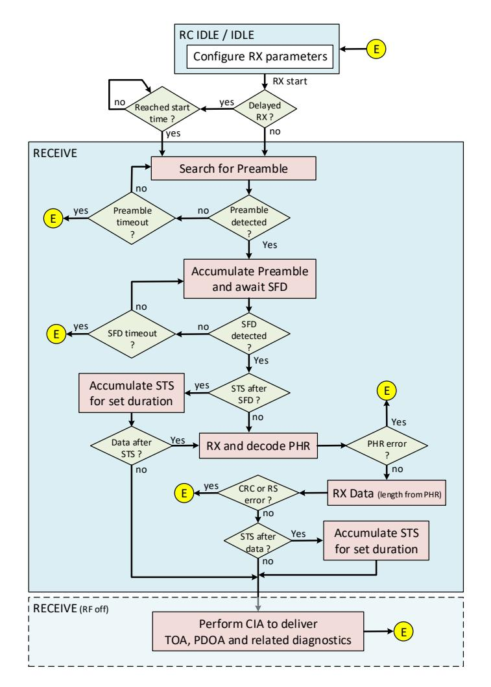
Figure 16: Receive sequence
To enable the receiver, the host issues an RX start command (see section on Fast Commands) . The receiver will start by searching for preamble continually until preamble has been detected or acquired, then a demodulation will be attempted. A preamble detection timeout may be set to allow the receiver to stop searching for preamble after a desired period (which is programmable i n PRE_TOC) . A receive sequence is shown in Figure 16.
The preamble sequence is detected by cross-correlating in preamble acquisition chunks (PACs ) which are a number of preamble symbols long. The size of chunk used is selected by the PAC configuration in DTUNE0. The PAC size should be selected depending on the expected preamble size. A larger PAC size gives better performance when the preamble is long enough to allow it, but if the PAC is too large for the preamble length the receiver performance will be impaired, or fail to work at the extremes – (e.g. a PAC of 32 will never receive packets with just 32 preamble symbols). Table 12 gives the recommended PAC size configuration to use in the receiver depending on the preamble length being used in the transmitter.
|
Expected preamble
length of packets being received |
Data Rate |
Recommended
PAC size |
|||
|---|---|---|---|---|---|
| 32 | 6.81 Mb/s | 4 | |||
| ≥ 64 | 6.81 Mb/s | 8 | |||
| ≥ 128 | 850 kb/s | 16 | |||
Aborting reception with use of preamble detection timeout (PRE_TOC) is very useful following sending a message where a response is being awaited. Here if the preamble is not detected then the awaited response is not coming. The preamble detection time-out can be used to abandon the reception at the earliest possible time, saving power.
Once the preamble sequence is detected, the receiver begins accumulating correlated preamble symbols and building a channel impulse response (CIR) , while in parallel looking for th e SFD sequence (a particular sequence of preamble symbols, see § 2.8 – Synchronisation header modulation scheme for details).
The detection of SFD is a key event in the reception of a packet, because it marks th e RMARKER, which is time-stamped (see section 4.1.7 – RX message timestamp ), and it marks the change from preamble demodulation to the BPM /BPSK demodulation of th e PHR and data or STS demodulation if enabled.
It is possible to abort reception if the SFD is not detected within a certain time after preamble is detected. This functionality is configured via DRX_SFDTOC. This SFD detection timeout guards against false detection of preamble (which has a finite chance of happening) that could otherwise lead to a prolonged period receiving nothing. By default, the SFD detection timeout is 65 symbol times (to match the default preamble length of 64 symbols and a PAC size of 8). It is not recommended to disable the SFD detection timeout.
The SFD sequence is either 8 or 16 symbols long for the supported data rates of 6.8 Mb/s or 850 kb/s. The type of the SFD sequence used is defined by SFD_TYPE configuration bits i n CHAN_CTRL register, and are described in Table 22.
If the STS is enabled, see Figure 13, the receiver will construct another CIR from that. The time-of-arrival (ToA) can also be derived from this CIR estimate.
The STS itself consists of a series of equally spaced pulses whose polarity is derived from an AES128 based cryptographically secure pseudo random number generator as specified in the IEEE802.15.4z amendment.
This can help when constructing a secure ranging environment (see 6 Secure ranging / timestamping) and it also improves immunity to packet collisions on the air.
The main role of the PHY Header (PHR) is to convey the length of the data portion of the packet, and to indicate the data rate being employed for data demodulation. See paragraph 2.9 - PHY header and paragrap h 2.10 for details of the PHY header. For data rates of 850 kb/s and 6.8 Mb/s th e PHR is modulated / demodulated as per the 850 kb/s data rate (note that because Reed Solomon encoding is not applied to the PHR, its bit rate is approximately 1 Mb/s). If th e PHR is indicating 850 kb/s then the data demodulation continues at this rate, but if th e PHR is indicating 6.8 Mb/s then the demodulation changes to this rate at the end of the PHR as data demodulation begins.
It is also possible to configure the PHR rate to be the same as the data rate, i.e. to use 6.8 Mbit/s with PHR_6M8 configuration bit i n SYS_CFG, 8.2.2.4.
Section 2.7 – Data modulation scheme describes the modulation scheme. In the receiver a Viterbi decoder is used to recover the data bits (this is also used for PHR reception) which are then passed through the Reed Solomon decoder to apply, if it can, any further corrections. Every octet thus received is passed through a CRC checker that checks the frame against the transmitte d FCS.
As the data octets are received they may also be parsed by the frame filtering function if enabled, see section 5.4 – Frame filtering for more details.
Successful reception of a frame is signalled to the host via th e RXFR an d RXFCG event status bits in SYS_STATUS. Other status bits in this register may be used to flag reception of other parts of the frame or, events indicating failure, i.e. RXPTO (Preamble detection Timeout), RXSTO (SFD timeout) , RXPHE (PHY Header Error), RXFSL (Reed Solomon error), RXFTO (Frame wait timeout), etc.
| Features related to reception | Section |
|---|---|
| Receive message time-stamping | 4.1.7 – RX message timestamp. |
| Delayed reception | 4.3 - Delayed receive |
| Receiving long frames | 02.10 – Extended PHY header |
The IEEE802.15.4 standar d [1] nominates the time when the RMARKER arrives at the antenna as the significant event that is time-stamped, also shown i n Figure 13.
The DW3000 digital receiver circuitry takes a coarse timestamp of the symbol in which th e RMARKER event occurs and adds in various correction factors to give a resultant adjusted time stamp value, which is the time at which the RMARKER arrived at the antenna. This includes subtracting the receive antenna delay as configured in the RXANTD register (i n CIA_CONF) and adding the correction factor determined by the first path (leading edge) detection algorithm embedded in the DW3000. The resulting fully adjusted RX timestamp is written into RX_STAMP, IP_TOA an d STS_TOA registers .
See also section 10.3 – IC calibration – antenna delay , and section 6 – Secure ranging / timestamping .
The two-antenna port variants of DW3000 chip can measure the phase of incoming signal. This information can be used to help determine the direction of arrival and location of the transmission when combined with knowledge of the antenna response. More details of how this is performed will be given in an associated application note. This section will focus on the information provided by the device itself.
Depending on the variant of th e device there will be one or two antenna ports. Devices with two antenna ports are referred to as PDoA parts while the others are non-PDoA parts (see Table 1) . The two variants have different capabilities when it comes to Phase Difference of Arrival (PDoA) support.
For the "PDoA" parts, if the packet contains an STS then, depending on the configured mode, the device can compute the PDoA. There are two methods for computing the PDoA: PDoA Mode 1 and PDoA Mode 3.
PDoA Mode 1 functions with any packet containing an STS but is less accurate than PDoA Mode 3. On another side PDoA Mode 3 requires the STS length (in units of 512 chips, ~1 μs) to be an integer multiple of 128 (128, 256, 512). It is more accurate than Mode 1 but the packets will be longer (se e PDOA_MODE in SYS_CFG register on how to configure the required mode).
In either of the PDoA modes the chip will also compute the Time Difference Of Arrival (TDoA) between the two channel estimates that are used to determine the PDoA. If this TDoA is large, e.g. greater than 1 ns, then the PDoA should be considered to be untrustworthy. This is probably due to harsh channel conditions resulting in an ambiguous first ray estimate.
In delayed receive operation the receiver turn-on time is programmed into DX_TIME and then the delayed receiving is initiated by issuing CMD_DRX command. . Otherwise a delayed reception can be achieved by programming a "reference time" into the DREF_TIME and an offset into th e DX_TIME, after which delayed reception command, CMD_DRX_REF, is issued instead.
The DW3000 remains in IDLE_PLL state until the system time (SYS_TIME) reaches the value programmed in DX_TIME (or time programmed into DREF_TIME plus an offset into th e DX_TIME) and then the IC receiver is turned on. This point marks the start time for any programmed timeouts that apply to the reception
process, i.e. the preamble detection timeout (which is set and enabled b y PRE_TOC) and the frame wait timeout (which is enabled by the RXWTOE configuration bit in Sub-register 0x00:10 – System configuration , and whose period is programmed in RX_FWTO) .
The benefit of delayed receive is that the receiver can be turned on at just the right moment to receive an expected response, especially when that response is coming from a DW3000 employing delayed transmit to send the response message at a precise time. This saves power because the IDLE_PLL state power consumption while counting down to the time to perform the RX enable is significantly less than the RX state power consumption while waiting and searching for the preamble of a packet reception.
One use of delayed receive, and especially delayed transmission, is in two-way ranging, (described i n APPENDIX 1: Two-way ranging), to control the response times. On the receive side turning on the receiver just in time to receive the response message helps save power since the IC will remain in IDLE_PLL state until it is time to turn on the receiver. Minimising the response time and time spent in IDLE_PLL state also saves power. It is possible for the host microprocessor to be late invoking the delayed TX or RX, so that the system clock is beyond the specified start time and then the IC would have to complete almost a whole clock count period before the specified start time is reached. The HPDWARN event status flag in SYS_STATUS warns of this "lateness" condition so that during development a delay may be chosen large enough to generally avoid this lateness. The HPDWARN status flag also serves to facilitate detection of this late invocation condition so that recovery measures may be taken should it ever occur in deployed product.
The DW3000 has a pair of receive buffers (RX_BUFFER_0 an d RX_BUFFER_1) offering the capability to receive into one of the pair while the host system is reading previously received data from the other buffer of the pair. For example, this is useful in a TDoA RTLS anchor node application where it is desired to have the receiver turned on for as much time as possible to avoid missing any tag blink messages. A number of ancillary registers (timestamps, quality indicators and status bits) are also doubly-buffered. The registers that are part of this "RX double-buffered swinging-set" (SET_1 and SET_2) and are listed in Table 44. To enable logging of data to these diagnostic sets , RDB_DMODE must be set to at least 1 to log minimal set of registers.
Note that double buffering can also be used with th e SP3 packets, configured via the CP_SPC field in Sub register 0x00:10 – System configuration , where even though the packet contains no payload, the receive timestamp and other diagnostic information is doubly buffered.
By default the DW3000 operates in a single buffered mode that is appropriate for many applications. Double-buffered receiving is enabled by setting th e DIS_DRXB bit to zero, (in Sub-register 0x00:10 – System configuration ).
The DW3000 is operated in double buffered mode without possibility of the automatic re-enabling of the receiver, in which case the host needs to manually re-enable the receiver. However the receiver can be enabled in advance of processing the previously received frame. This operation reduces the amount of time for which the receiver is actively listening for frames on the air, but prevents both buffers being full (at the
same time) and prevents overflows. This simplifies the double-buffer operation, see sections 4.4.2 and 4.4.3 and, with a combination with a high-speed SPI enables reception of back-to-back frames.
In non-double buffer mode the DW3000 will write the received frame data into RX_BUFFER_0. When the double buffer mode is enabled the DW3000 will alternate writing frames t o RX_BUFFER_0 and RX_BUFFER_1. The associated RX_FINFO and diagnostic data is stored in two register sets : SET_1 and SET_2 as listed in Table 44. The RDB_STATUS register informs the host which register set is ready and available. For example, whe n RX_BUFFER_0 frame reception is complete the IC will set the RXFR0 with RXFCG0 in RDB_STATUS register interrupting the host and the IC will move on to receive into the other buffer of the double-buffered swinging-set. Once the host has finished accessing a register set is should issue toggle buffer command, CMD_DB_TOGGLE , to let the IC know that the particular buffer is "free" again and that it can be used for the next received frame. The host should also clear th e RDB_STATUS register bits relating to the processed buffer. Figure 17 below is a flow chart showing the operation of double buffering in the receiver.
Reception of a frame with good CRC will set the relevan t RDB_STATUS register bits. The host will need to respond to the RX error events as usual (by reading the SYS_STATUS register and clearing any events) and reenable the receiver.
As in the DW3000 the double buffered mode is used without the automatic re-enabling of the receiver, in which case the overrun should never happen. The host needs manually re-enables the receiver, it should process the previously received frame before enabling receiver following the reception of the current frame.
In case of the overrun condition, it will be cleared as soon as the host issues the CMD_DB_TOGGLE command. Following which the host should clear the RXOVRR status bit. Receiver overrun events are also counted in Sub-register 0x0F:0E – RX overrun error counter, assuming that counting is enabled by the EVC_EN bit in Sub-register 0x0F:00 – Event counter control .
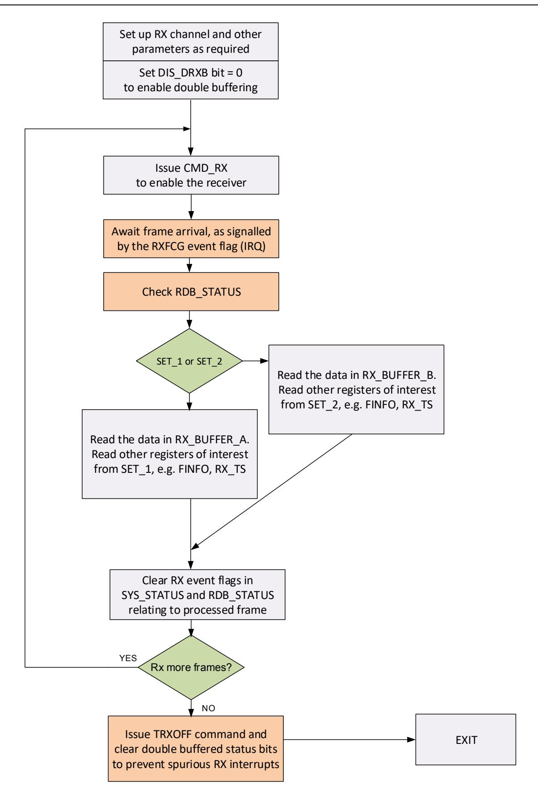
Low-Power SNIFF mode is a lower power preamble hunt mode, also known as pulsed preamble detection mode (PPDM), where the receiver (RF and digital) is sequenced on and off rather than being on all the time. These on and off times are configurable in 8.2.15.6 Sub-register 0x11:1A – SNIFF mode and have default values of zero, disabling the feature. Using SNIFF mode causes a reduction in sensitivity depending on the ratio and durations of the on and off periods.
In SNIFF mode the DW3000 alternates between the RX state (on) and the IDLE_PLL (off) stat e Figure 18 shows a simplified view of the state transitions during SNIFF mode.
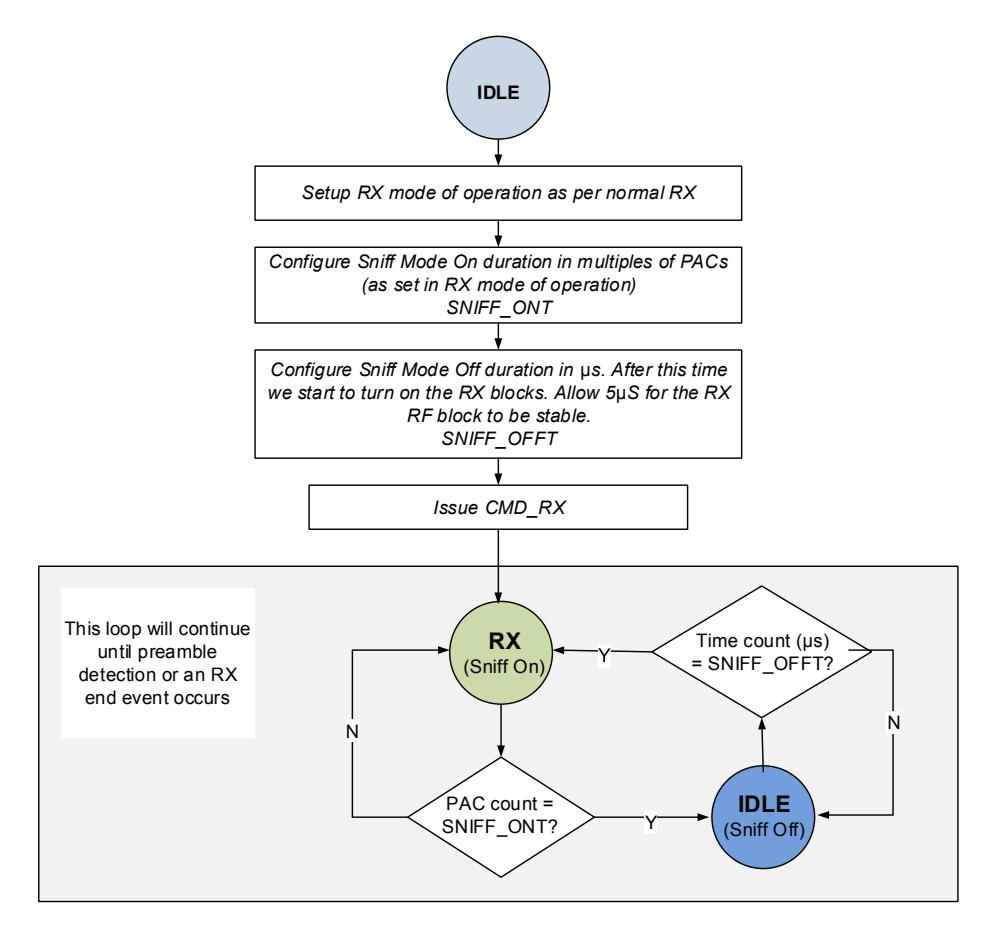
Figure 18: State transitions during SNIFF mode
In SNIFF mode the DW3000 alternates between the RX (on) and the IDLE_PLL (off) states. To enable SNIFF mode two parameters SNIFF_ON (sniff on time) an d SNIFF_OFF (the off time) need to be configured in Sub register 0x11:1A – SNIFF mode. The on duration is programmed in units of PAC, (these are described in section 4.1.1 - Preamble detection) , and must be set to at a minimum value of 2 for functional preamble detection. Th e SNIFF_ON counter automatically adds 1 PAC unit to the total PAC count so the programmed value should always be 1 less than the desired total. The off duration is programmed in units of 1 µs. When both on and off durations are programmed with non-zero values SNIFF will be operational from the next RX enable.
As an example if the PAC size is 8 symbols, (this is approximately 8 µs), and we want to have a 50:50 on-off duty cycle, then we could set SNIFF_ON to its minimum of 2 PAC intervals (by programming the counter with a value of 1) and the SNIFF_OFF to a value of 16 µs.
Figure 19 below shows the power profile associated wit h SNIFF mode where the IC wakes up from SLEEP and progress into the repeated IDLE_PLL - RX - IDLE_PLL - RX … duty-cycle of the pulsed preamble detection mode. A timeout ends this and the DW3000 is returned to SLEEP .
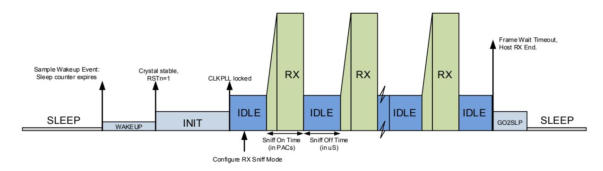
Figure 19 Power profile for SNIFF where a packet is not received
Figure 20 below, shows a power profile fo r SNIFF mode, similar to figure 19 except in this case preamble is detected on the second period of RX sampling, and the DW3000 completes the reception of the packet.
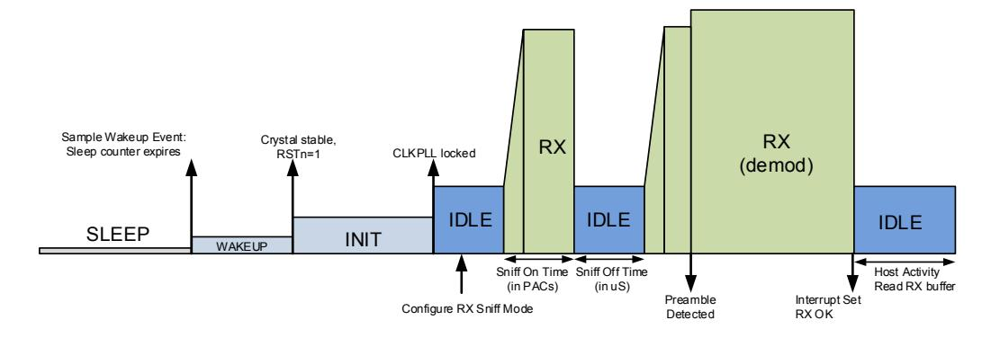
The DW3000 includes the following diagnostic aids: -
• The ability to drive LEDs to show TX and RX activity, which may be useful during product development and in non-battery powered devices. The LED driving feature is an option on GPIO lines, and is configurable via Register file: 0x05 – GPIO control and status. Please refer to the register description for details of the supported functionality.
Access to accumulator – of use during product development diagnostics. This is provided via:
• Register file: 0x15 – Accumulator CIR memory. Please refer to its description for details.
• RX packet quality indications – of use for both product development diagnostics and for working diagnostics, e.g. for network management or for deciding on confidence level for an RTLS or ranging measurement. These are available through the diagnostics registers of Register files: 0x0C, 0x0D, 0x0E – CIA Interface. Please refer to section 4.7 – Assessing the quality of reception and the RX timestamp for details.
The DW3000 receiver is capable of receiving messages under many different conditions. In some circumstances it can be useful to assess the quality of the received signals and any timestamp data based on them.
The following details the elements of receive status reported by the DW3000 that may be used to assess the quality of a received message and any related timestamp.
Note: These items use diagnostics provided by the channel impulse analyser (CIA) algorithm, which operates on the accumulated correlation of the repeated symbols preamble sequence and/or the accumulated correlation of the scrambled timestamp sequence (STS) used for secure timestamping, see § 6 – Secure ranging / timestamping . The timestamps based on preamble and STS sequences can be assessed following these rules:
An estimate of the power in the first path signal may be calculated (in dBm). Depending on the receiver configuration two different formulae are used to do this.
If the RX_TUNE_EN bit is set in DGC_CFG register, described in 8.2.4.1 (DGC):
First Path Power Level =
If the RX_TUNE_EN bit is not set in DGC_CFG register, described i n 8.2.4.1 (No DGC):
First Path Power Level =
Where:
F 1 = the First Path Amplitude (point 1) magnitude value (it has 2 fractional bits),
F 2 = the First Path Amplitude (point 2) magnitude value (it has 2 fractional bits),
F 3 = the First Path Amplitude (point 3) magnitude value (it has 2 fractional bits),
N = the number of preamble symbols accumulated, or accumulated STS length
The values for F1, F2, F3 and N can be read from the register file described i n 8.2.13. F1, F2 and F3 can be read from IP_DIAG_2, IP_DIAG_3, IP_DIAG_4, o r STS_DIAG_2, STS_DIAG_3, STS_DIAG_4, or STS1_DIAG_2, STS1_DIAG_3, STS1_DIAG_4, and N can be read from: IP_DIAG_12 , STS_DIAG_12 or STS1_DIAG_12, depending on th e CIR used. D is read from DGC_DECISION described in DGC_DBG register, see section 8.2.4.2.
Note: These readings will not be available if the CIA is configured to compute minimal diagnostics, see MINDIAG bit in CIA_CONF register.
It is possible to calculate an estimate of the receive power level (in dBm). Depending on the receiver configuration two different formulae are used to do this.
If the RX_TUNE_EN bit is set in DGC_CFG register, described in 8.2.4.1 (DGC):
If the RX_TUNE_EN bit is not set in DGC_CFG register, described i n 8.2.4.1 (no DGC):
Where:
C = the Channel Impulse Response Power value,
The values for C and N can be read from the register file described in 8.2.13. C can be found in : IP_DIAG_1, STS_DIAG_1, or STS1_DIAG_1, and N can be read from: IP_DIAG_12 , STS_DIAG_12 or STS1_DIAG_12, depending on th e CIR used. D is read from DGC_DECISION described in DGC_DBG register, see section 8.2.4.2.
Figure 21 shows the typical relationship between the actual receive power and the power estimated by this technique.
Note: Received signal power is sometimes referred by the term received signal strength indication (RSSI)
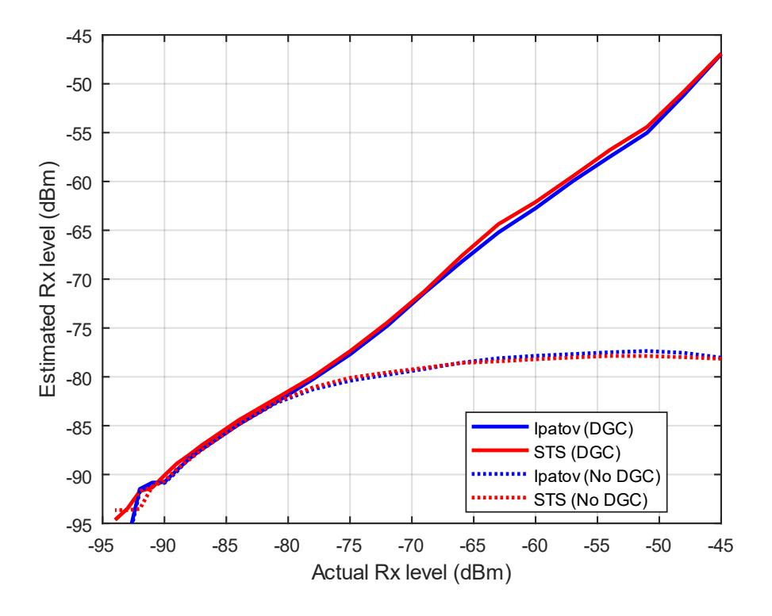
Figure 21: Estimated RX level versus actual RX level
The DW3000 has an incorporated MAC features on a transmitter and a receiver side to free the host processor from unnecessary interrupts. This helps to increase the overall performance of the system built with DW3000. The sections below describe the features for media access control (MAC) that have been implemented in the DW3000.
The DW3000 transmits data from the TX_BUFFER in a frame with data length as specified in the TXFLEN field of the TX_FCTRL, inserting the 2-octe t FCS as the last two octets of the data payload. The DW3000 will not do any other MAC level transmit processing. It is up to the host system software to prepare the correctly formatted frame conforming to the IEEE802.15.4 standard [1] MAC if this is required.
On the receive side, the DW3000 will validate the FCS of the received frame, and can parse frames complying with IEEE802.15.4 standar d [1] to validate and accept only those as configured by the frame filtering configuration bits in the FF_CFG register (as described in sectio n 5.4 below). The DW3000 can also optionally respond to the acknowledgement request bit set in the frame control field, of correctly addressed Data Frames or MAC Command frames, by sending an IEEE802.15.4 standar d [1] acknowledgement frame (as described in section 5.5 below). Note: This only applies to the immediate acknowledgment (Imm-Ack) used to acknowledge Data frames or MAC command frames with the Frame Version field set to 0b00 or 0b01.
The DW3000 will deliver the received data frame in th e RX_BUFFER_0 with its data length reported by the RXFLEN field of the RX_FINFO, and other than the RX activities mentioned in the paragraph above the DW3000 will not do any additional MAC level receive processing. It is up to the host system software to correctly parse the received frame according to the IEEE802.15.4 standar d [1] MAC definition and take whatever additional action is prescribed by the standard, if this is required.
The MAC message occupies the PHY Payload portion of the UWB packet as shown in Figure 13. This may be up to 127 octets in length according to the standard, and up to 1023 octets when employing the DW3000's long frame mode, see section 3.4 – Extended length data frames . The general structure of a MAC message consists of a header that identifies the frame, followed by a variable length (possibly zero) payload typically from the upper layers but sometimes (as in the case of MAC command frames) generated within the MAC itself, and finally ended by the MAC footer which is th e FCS (Frame Checking Sequence ) CRC used to detect transmission errors. Figure 22 shows the components of the MAC message frame in more detail, indicating the number of octets in each component.
The MAC header is parsed by the DW3000 as part of the frame filtering function to determine if the destination address matches the IC's address information programmed in Sub-register 0x00:04 – Extended Unique Identifier and Sub-register 0x00:0C – PAN Identifier and Short Address (or if the frame is a broadcast message). This parsing of receive frame is based on the contents of the Frame Control field (at the start of the MAC header).
| PHY Payload | ||||||||
|---|---|---|---|---|---|---|---|---|
| MAC Header (MHR) | MAC Payload |
MAC Footer
(MFR) |
||||||
|
Frame
Control |
Sequence
Number |
Destination
PAN Identifier |
Destination
Address |
Source PAN
Identifier |
Source
Address |
Aux Security
Header |
Frame Payload | FCS |
|
2
octets |
1
octet |
0 or 2
octets |
0, 2 or 8
octets |
0 or 2
octets |
0, 2 or 8
octets |
0, 5, 6 10 or 14
octets |
Variable number of
octets |
2
octets |
The DW3000 includes a CRC generation function capable of automatically calculating and appending the 16 bi t CRC frame check sequence (FCS) at the end of each transmitted frame.
The DW3000 also includes a CRC checking function capable of automatically calculating the 16-bi t CRC frame check sequence (FCS) during frame reception and comparing this calculate d CRC with the final two octets of the received frame to check that the calculate d CRC matches wit h CRC transmitted by the frame's originator. A mismatch between received and calculated CRC typically indicates that the received frame contains errors (generally handled by discarding the received frame). At the end of the frame reception as reported via the RXFR event status bit, the result of th e CRC comparison is reported by eithe r RXFCG or the RXFCE status bit being set, i.e. depending on whether or not th e CRCs matched. These three status bits are SYS_STATUS.
Where a CRC is not required it is possible to disable the CRC transmission by employing the setting DIS_FCS_TX (disable FCS transmission) bit in SYS_CFG. This might be done when using a different MAC layer protocol.
Frame filtering is a feature of the DW3000 IC that can parse the received data of frame types defined in the IEEE802.15.4 standar d [1], (and also listed i n Table 13 below) identifying the frame type and its destination address fields, match these against the IC's own address information, and only accept frames that pass the filtering rules.
|
Frame Type Field
(Frame Control bits 2 to 0) |
Frame | |
|---|---|---|
| 0, 0, 0 | Beacon | |
| 0, 0, 1 | Data | |
| 0, 1, 0 | Acknowledgement | |
| 0, 1, 1 | MAC command | |
| 1, 0, 0 | Reserved | |
| 1, 0, 1 | Multipurpose | |
| 1, 1, 0 | Fragment or Frak | |
| 1, 1, 1 | Extended |
|---|
The frame filtering functionality allows the IC to be placed into receive mode and only interrupt the host processor when a frame arrives that passes the frame filtering criteria. When frame filtering is disabled all frames with good CRC are accepted, typically to interrupt the host with event status indicating a frame has been received with good CRC (i.e. the RXFR an d RXFCG event status bits are set i n SYS_STATUS) . When frame filtering is enabled the frame filtering rules have to be passed before these event status (interrupt) bits are set. See section 4.1 PHY reception for general details of reception.
Frame filtering is enabled by the FFEN configuration bit in SYS_CFG register. The frame filter is further configured by the various configuration bits in th e FF_CFG register. This register contains ten additional configuration bits (FFAB, FFAD, FFAA, FFAM, FFAR, FFAMP, FFAF, FFAE, FFBC and FFIB) for fine filtering control of the frame types.
If frame filtering is enabled frames will be accepted or rejected based on the following rules:
The frame filtering does not take any notice of the Security Enabled field, in the frame control, so it is up to the host software to decode any security information and accept/reject the frame is it sees fit.
The decisions on frame rejection/acceptance with respect to illegal frame control octets is made after the first two octets of data are decoded, and at the end of reception of the address fields (as specified by the frame control octets) for the relevant addressing rules. When a frame is rejected, the reception is aborted immediately and the rejection is reported by the AFFREJ event bit i n SYS_STATUS register.
While frame filtering can save some work on the part of the host system, prolonged listening with the DW3000 receiver on is a relatively power-hungry activity best employed only on equipment with a mains powered source.
All the configuration bits related to frame filtering are found in FF_CFG register.
Once the FFAA configuration bit is set, all acknowledgement frames are accepted, and the IC does not make any distinction between the 5-octet Imm-Ack (with frame version of 0 or 1) or the more complex Enh-Ack (with frame version of 2). It is up to the host software expecting an Enh-Ack to parse the received frame to identify the Enh-Ack and validate its addressing and other fields accordingly.
When enhanced beacon frames are used, they will be accepted even if the beacon's source PANID does not match the one programmed in the device.
NOTE: For Multipurpose frames the IEEE standard [1] says that Frame version field values other than 0x00 are reserved. The DW3000 does not correctly check the Frame version field of received Multipurpose frames. The host software MAC should validate the version of any Multipurpose frames received and handle the frame accordingly.
The automatic acknowledgement functionality of the DW3000 allows the IC to automatically send an acknowledgement frame when a frame is received and validated that includes an acknowledgement request. The automatic acknowledgement functionality only operates when frame filtering is enabled and automatic acknowledgement is enabled.
In order for automatic acknowledgement to operate:
When these conditions are met the DW3000 will at the end of the reception automatically transition into transmit mode to send the 5-octet immediate acknowledgment (Imm-Ack) frame as defined by IEEE802.15.4 standard [1].
The enhanced acknowledgment (Enh-Ack) when called for by Data or a MAC command frames with the Frame Version field set to 0b02, is not automatically generated. The host software is responsible for decoding/desecuring these frame version 2 frames, interpreting any Information Elements (IEs), and generating the Enh-Ack enhanced with any IEs necessary and securing it before transmission. The AAT bit will not be set.
The IEEE802.15.4 standar d [1] specifies a 12 symbol +/- 0.5 symbols turnaround time for ACK transmission. In the DW3000 this period is configurable via the ACK_TIM parameter in ACK_RESP_T. It should also be noted that running th e CIA analysis will delay ACK response. To speed up ACK transmission FAST_AAT bit can be set or where the RX timestamp is not required, the CIA analysis may be disabled by clearing both CIA_IPATOV and CIA_STS configuration bits in Sub-register 0x00:10 – System configuration
The standard IEEE802.15.4 standard [1] MAC includes a frame pending bit in the frame control at the start of each frame. This bit can be set to indicate more data is coming or in the case of acknowledging a Data Request MAC command frame to indicate that the responding node has data to send to the node soliciting the ACK. Please refer to the standar d [1] for details of this. The DW3000 will automatically determine whether to set the frame pending bit in the automatically-generated ACK frames based on:
The AAT status bit (SYS_STATUS) indicates that an acknowledgement has been requested. When the FAST_AAT bit is disabled the AAT bit is set at the same time as the RXFCG status event (indicating a good CRC at the end of frame reception). However if FAST_AAT bit is enabled th e AAT bit is set at the same time as the RXFR status event.
If automatic acknowledgement is enabled then the AAT bit can be used during receive interrupt processing to detect that acknowledgement is in progress and thus avoid taking any action until the transmission of the acknowledgement is completed, and signalled by the TXFRS (Transmit Frame Sent) event.
Note: If automatic acknowledgement is not enabled, then the AAT status bit should be ignored.
The DW3000 has the ability to automatically turn on its receiver after a transmission has completed in order to receive a response. This may also include an optional delay configuration between the end of the transmission and the enabling of the receiver. This is controlled by any of the TX and wait-4-response commands (TXW4R, TXW4RCCA, TXW4RDLY, TXW4RDLYREF, TXW4RDLYTS, and TXW4RDLYRS) and the W4R_TIM parameter in the Sub-register 0x01:08 – Acknowledgement time and response time.
Note: If the response that is received is a correctly addressed data (or MAC command) frame requesting an acknowledgement, and assuming frame filtering and automatic acknowledgement are enabled, then the DW3000 will transmit the ACK before it transitions into IDLE_PLL state.
For Wireless Sensor Networks application, many of the MAC protocols rely on Clear Channel Assessment (CCA) to avoid collisions with other packets in the air. This consists in sampling the air for a short period to see if the medium is idle before transmitting. For most radios this involves looking for the RF carrier, but for UWB where this is not possible, one approach is to look for preamble to avoid conflicting transmissions, since any sending of preamble during data will typically not disturb those receivers who are demodulating in data mode.
DW3000 has a simple Clear Channel Assessment (CCA) mechanism feature that can be employed before a packet transmission. It works by sample the air for a small amount of time (as configured b y PRE_TOC) to see if preamble can be detected, then if preamble is not seen the transmission is initiated, otherwise a failed transmission is reported with CCA_FAIL event and the host can then defer the transmission typically for a random back-off period after which transmission is again attempted with CCA.
DW3000 will return to IDLE_PLL for the back-off period and do not receive the packet whose preamble was detected, since the MAC (and upper layer) wants to transmit and not receive at this time.
To transmit a packet with CCA check CMD_CCA_TX command is used. If the device has detected a clear channel, the packet will be sent and TXFRS event reported. Although the detection of clear channel is as a result of preamble timeout counter expiring, the RXPTO event will not be raised in this case.
Although the CCA can be used to avoid collisions with other packets on the air, the mechanism is only looking for preamble thus will not detect PHR or data phases of the packet.
This CCA mechanism may have little benefit, but costs energy drain by turning on the receiver for a period before every transmission. The aloha CCA mechanism of simply sending may be more efficient, since even in collision cases message delivery can succeed. It is recommended that careful analysis and experimentation be undertaken for the target use cases to decide on this point.
IEEE802.15.4 standar d [1] supports the following security services: data confidentiality, data authenticity and replay protection. DW3000 has an advanced encryption standard (AES) engine that can perform cryptographic transformation on received frames or prior to transmission of frames. For this purpose the AES engine can use a TX Buffer, Rx Buffer or a separate scratch buffer as shown in Figure 23.
The AES engine performs encryption/decryption and authentication of data and can either perform the operation within the same buffer or transfer the data (during the process) from one buffer to another (e.g. from RX to TX, or from scratch buffer to TX o r STS_KEY register).
The AES engine can also decrypt key data (i.e. an encrypte d STS_KEY) into the STS_KEY register. This means that the host can write encrypte d STS_KEY over SPI into scratch RAM memory and then run the DW3000 AES engine to decryp this into the STS_KEY register prior to use of the secure ranging modes (se e6 Secure ranging / timestamping) .
The AES-DMA engine is fully configurable by the host from a source/destination/sub-address/burst-size point of view. The completion of the AES operation (AES_DONE event) as well as error conditions such as an AES decrypt tag error or DMA error (AES_ERR event) are signalled in the system status register (SYS_STATUS) . There is also an AES status register (AES_STS) which gives more details about the performed AES operation.
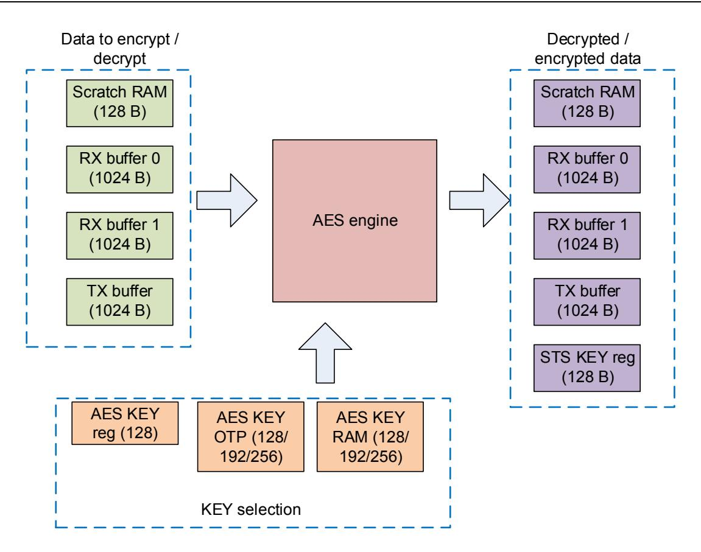
Figure 23: AES engine source/destination buffers
Before the encryption or decryption of the data, the AES engine needs to be configured with:
The following steps are taken to transmit an encrypted data (assuming above configuration steps are already done):
The following steps are taken to decrypt received encrypted data (assuming above configuration steps are already done):
These are the steps to encrypt TX data prior to transmission:
These are the steps to decrypt RX data following a packet reception:
the same RX buffer. This allows the encrypted data in the buffer to be overwritten by the decrypted (plaintext) data.
These are the steps to decrypt encrypted STS KEY (transferred over SPI into the scratch buffer) into the STS_KEY register e.g. prior to transmission or reception of packets with STS:
Consider a following example. A Secure Element host (SE) which derives STS KEY (prior to encryption) as: sts_key[16] = { 0xaa , 0xbb, 0xcc, 0xdd, 0x11, 0x22, 0x33, 0x44 …. 0x55, 0x66, 0x77, 0x88}, i.e. the 128-bit STS_KEY = 0x aa bbcc.....667788.
The SE encrypts this STS_KEY (with STS KEY encryption KEY (STS_KEK)) and writes it into the device (scratch buffer), then the device needs to decrypt it with a matching STS_KEK from e.g. OTP and write the decrypted STS KEY into STS KEY registers (STS_KEY) .
The DMA engine inside AES block can be configured as either big endian (CP_END_SEL = 0) or little endian (CP_END_SEL = 1), se e DMA_CFG register. When big endian is used, the MSB of the STS KEY is in the lowest address otherwise the MSB is the highest address.
Considering, as an example, if sts_enc = { 0xaa , 0xbb, 0xcc, 0xdd, 0x11, 0x22, 0x33, 0x44 …. 0x55, 0x66, 0x77, 0x88}, 0xaa is sent first to AES engine. Thus the data is with big endian format and is decrypted into STS_KEY register as shown i n Table 14 ( 0xaa is in the lowest address location):
| Address | Value | ||
|---|---|---|---|
| 02:0C | 0xaa | 02:14 | 0x00 |
| 02:0D | 0xbb | 02:15 | 0xee |
| 02:0E | 0xcc | 02:16 | 0xff |
|
02:0F
0xdd |
02:17 | 0x00 | |
| 02:10 | 0x11 | 02:18 | 0x55 |
| 02:11 | 0x22 | 02:19 | 0x66 |
| 02:12 | 0x33 | 02:1A | 0x77 |
| 02:13 | 0x44 | 02:1B | 0x88 |
For the little endian format, the STS KEY data will look like, as shown i n Table 15 ( 0xdd is in the lowest address location):
| Address | Value | Address | Value |
|---|---|---|---|
| 02:0C | 0xdd | 02:14 | 0x00 |
| 02:0D | 0xcc | 02:15 | 0xff |
| 02:0E | 0xbb | 02:16 | 0xee |
| 02:0F | 0xaa | 02:17 | 0x00 |
| 02:10 | 0x44 | 02:18 | 0x88 |
| 02:11 | 0x33 | 02:19 | 0x77 |
| 02:12 | 0x22 | 02:1A | 0x66 |
| 02:13 | 0x11 | 02:1B | 0x55 |
But what wis actually required is that the STS KEY data looks like, as shown in Table 16:
| Address | Value | Address | Value |
|---|---|---|---|
| 02:0C | 0x88 | 02:14 | 0x44 |
| 02:0D | 0x77 | 02:15 | 0x33 |
| 02:0E | 0x66 | 02:16 | 0x22 |
| 02:0F | 0x55 | 02:17 | 0x11 |
| 02:10 | 0x00 | 02:18 | 0xdd |
| 02:11 | 0xff | 02:19 | 0xcc |
| 02:12 | 0xee | 02:1A | 0xbb |
|---|---|---|---|
| 02:13 | 0x00 | 02:1B | 0xaa |
Thus the SE must re-arrange the data before encryption, the bytes (of the derived STS KEY) need to be swapped: byte[15]=byte[0]; byte[14]=byte[1] etc... prior to encryption with STS KEK.
When specifying a source and destination buffer address (and offset within the buffer) the buffer size should be sufficient for the DMA transfer. If the size is smaller than the transfer, the DMA transfer error (AES_ERR) may not be correctly flagged by the device. In some circumstances the internal AES block can lock up and the only way to recover is to perform a reset of the device (soft or hard)).
To avoid such errors it is require to always ensure that the buffers and sizes of transfers should be properly configured, i.e.:
Header length + Payload length + MIC length < Total buffer size.
One of the main features of the DW3000 (differentiating it from the DW1000) is its secure timestamping ability.
The timestamping ability of the DW1000 is based on accumulated correlation of the repeated symbols of the 802.15.4 standard preamble sequence. Please refer to the IEEE 802.15.4 standar d [1], for more details of the packet format. When th e SFD is detected a coarse receive timestamp is taken and then the accumulator state, which essentially provides the radio channel impulse response , CIR, is used to find the first arriving ray of RF energy and adjust the RX timestamp to give the sub-nanosecond precision achieved by the IC.
Since the CIR accumulation is based on a repeated symbol of a known sequence of pulses defined by preamble code, it is possible for an attacker to send this same symbol (set of pulses) with a time offset which makes it appear like an earlier arriving ray in the CIR, and thus confuse the IC into reporting an earlier arrival time for the message. This could, for instance, foreshorten a ranging result, thus fooling an access system into thinking the user is closer than he actually is.
To remove the possibility of such an attack the DW3000 has the ability to include a scrambled sequence in the packet, which can be used to obtain an RX timestamp that cannot be attacked in this way. This scrambled timestamp sequence (STS) is generated in accordance with the IEEE 802.15.4z amendment [2] , and consists of a sequence of randomised pulses generated by an AES-128 CPRNG (cryptographic pseudorandom number generator) block in counter mode. This is also termed a deterministic random bit generator (DRBG). Only valid transmitters and receivers know the correct seed (i.e., key and data) to generate the sequence for transmission and for reception to cross correlate and accumulate to produce a CIR estimate from which to determine the RX timestamp.
When the STS modes are enabled the DW3000 transmitter will insert the STS in the position shown in Figure 13, and the receiver will expect it to be present accordingly. The STS is generated by the AES-128 block output and is determined by a seed consisting of a 128-bit key, and a 128-bit nonce (a number that should only be used once). The nonce is updated during the STS generation by incrementing the counter once for every 128 pulses produced. When transmitting and receiving devices are using aligned seeds (i.e., same key and nonce) with the counter values aligned, the receiver generates a secure version of the CIR by correlating with the matching scrambled pulse sequence. The resultant timestamp is thus secure against attack.
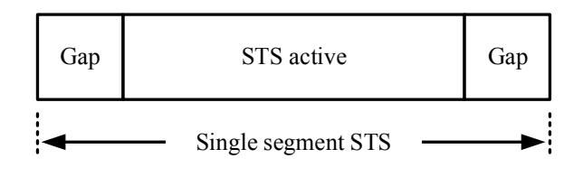
As shown in Figure 24, the STS consists of an active segment bracketed at either end by a gap (of 512 chips or approx. 1 μs). The length of the STS (active segment) is specified in units of 512 chips (~1 μs). In BPRF mode, where the STS pulse spacing is 8 chips, the mandatory STS length of 64 units has an active segment of 4096 pulses. For convenience we sometimes call this 512-chip (~1 μs) period an STS symbol .
To contrast the three STS packet configuration options:
Note: This mode can potentially be attacked. The mechanism has the attacker corrupting the true PHR to signal a longer data payload than the true payload, adding data payload after the true payload making sure that the CRC of the longer frame is correct, while also recording the true STS of the valid transmitter and playing it at the end of the longer payload but altering its alignment so that it appears to arrive earlier in time resulting in a shorter time-of-flight estimate than would otherwise be the case. This attack can be easily thwarted by: (a) ensuring that the true message length always known, i.e. the length is either a constant or is included securely encrypted in the frame data payload, and then (b) having the receiver discard and ignore frames of the wrong length. Simply encrypting the data payload should also be sufficient to thwart this attack, because, since the attacker does not know the encryption key, it will be unable to generate a valid MIC (message integrity check code) for the longer data payload, and then the receiver's incoming security processing should simply discard and ignore the invalid frame.
• STS Packet Configuration mode 3 has STS directly after th e SFD (similar to configuration mode 1), however in this mode the UWB packet ends with STS and there is no PHR or PHY payload (MAC frame) following. This could save time and energy (as compared to configuration modes 1 and 2).
The STS packet configuration is configured via th e CP_SPC field in Sub-register 0x00:10 – System configuration .
The STS length is configured via the CPS_LEN field in th e STS_CFG register. The STS length is programmable in steps of 8 units (i.e., each step is ~8 µs, or 8 x 512 chips). The minimum length supported is 32 and the maximum supported length is 2048. The IEEE 802.15.4z mandates only a single length of 64 x 512 chips, (or 64 x 64 pulses @ 64 MHz PRF), which is approximately 64 µs duration. As noted the equivalent PRF during STS is 64 MHz.
The 128-bit STS key is programmed into STS_KEY, while the 128-bit initial value for the nonce is loaded into the device via STS_IV.
When the DW3000 is enabled to transmit or receive a packet incorporating an STS, the AES-128 block generates a randomised set of pulses of positive and negative polarity, the CPRGN is shown in Figure 25 below, advancing the counter by one step for every 128 pulses generated. The counter would thus advance by 32 for each completed transmission, or reception, of the IEEE 802.15.4z mandated 64 x 64 pulse BPRF mode STS.
To achieve secure ranging/timestamping both parties of a two-way ranging exchange should be configured the same way, i.e. to use the same STS length and the same key and nonce values for the generation of their STS sequences.
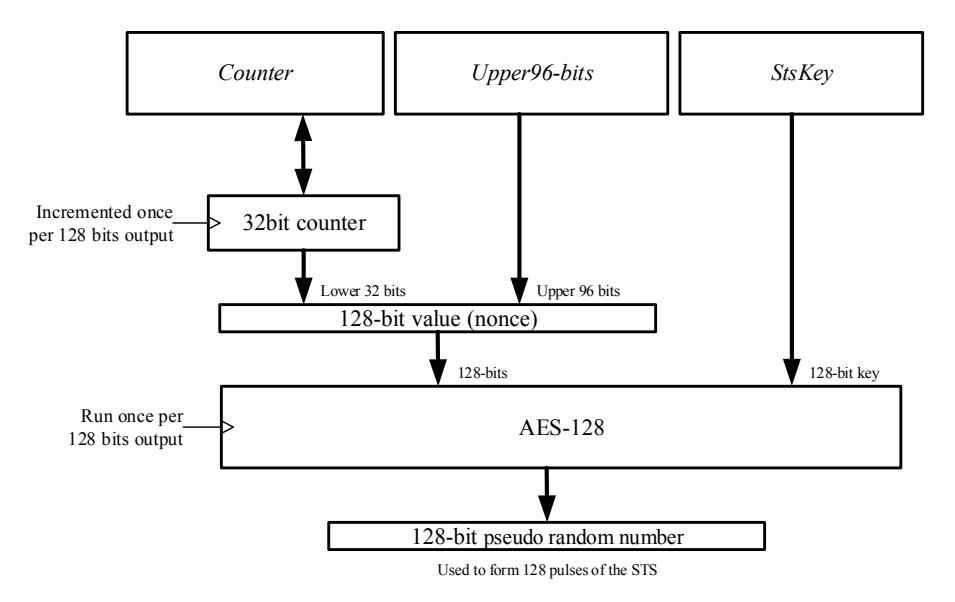
Figure 25: AES in counter mode based CPRNG
Since the counter automatically advances as the STS is generated in the transmitter and receiver, the counter state in two units can remain aligned as messages are sent and received in a typical two-way ranging exchange. Where alignment is lost, or to maintain alignment in multi-node systems the counter state should be reprogrammed by the setting the new value into the STS_IV register. Optionally, the counter state could be sent from one device to another to update the STS_IV register. Clearly any communication of the seed (key and/or IV) would have to be done securely to avoid them becoming known to an attacker. Note also that during transmission and reception of the STS the state of the counter may be in flux as it generates the scrambled sequence, so before any reading or writing of the STS_IV register, it is recommended that the DW3000 is not active with any transmission and reception activities.
When STS is included in the packet there are two separate accumulations of CIR in the receiver. The first accumulation occurs during the preamble reception and the second occurs during the STS reception. Both these CIR may be read through Register file: 0x15 – Accumulator CIR memory. Access to th e CIR data is not needed for ranging measurements, however this ACC_MEM may be of interest to the system design engineers to visualise the radio channel for diagnostic purposes.
The accurate receive timestamp for a received packet is computed by finding the first arriving path or ray within the accumulated CIR, which is the function of the leading edge algorithm, also called the channel
impulse analyser (CIA) algorithm. This algorithm processes the CIR (in the accumulator) to find the leading edge and estimate the RX timestamp for a received packet. Th e CIA may be applied t o CIR resulting from preamble and/or STS sequences. Th e CIA is configured and controlled through the Sub-registers in CP_CONF0, CP_CONF1, IP_CONF0 and IP_CONF1.
Assuming it is enabled, once both the preamble and STS CIRs have been received, the CIA begins running on the preamble first followed by the analysis of the STS CIR. The CIA delivers the receive timestamp for a received packet through the RX_STAMP field in Sub-register 0x00:64 – Receive time stamp. To ensure the integrity of the receive timestamp based on th e STS, the user must check that the CP_TOAST quality status indicator (in CP_TS) is not indicating any issues with the STS CIR analysis.
NB: The host should not attempt to read ACC_MEM until the CIA has finished its processing, (as signalled by the CIADONE event status flag), since this may give rise to a conflict with the CIA accesses to the CIR memory which may interfere with the generation of a good RX timestamp result.
Note : It is also very important to assess that quality of the STS accumulation before accepting that a receive timestamp CP_TOA value is sufficiently good enough to be trusted in a two-way ranging exchange. This is a unitless value that summarizes the results of the STS quality algorithm that is monitoring the reception of the STS. For high signal levels this measurement should be very high but its value will reduce as the signal level reduces. A n ACC_QUAL value (in STS_STS) that is <60% of the STS length indicates that the reception of the STS was too poor for the first path analysis to obtain a reliable ToA and so the received timestamp based on STS should not be trusted.
For example for a preamble sequence using 64 MHz PRF (i.e. TX_PCODE is in range 9-12) and an STS length of 128 (i.e. CPS_LEN is set to 15), the STS based receive timestamp (CP_TOA) value should only be trusted when the STS accumulation quality (CPS_ACCQUAL) value is greater than ≥ 77 (i.e. 60 % of 128).
As mentioned above STS uses a continually varying sequence. This means that a colliding packet will not line up with the desired signal. As a result, the ToA will be unaffected. If security is not a concern, then overhead of key management and counter control is undesirable. For this reason, the DW3000 includes a special STS mode that uses a code optimized for ToA performance. This is known as the Super Deterministic Code (SDC). If SDC is enabled (by CP_SDC bit), then the STS will be populated with the SDC code. Since it is a time varying sequence optimized for ToA performance it will better tolerate packet collisions without requiring any key management.
It is important to remember that the SDC mode does not provide security but will increase confidence in the ToA when the on-air packet density is high. For this reason, we would recommend that an SDC based STS is used when security is not a requirement.
This feature is used to synchronise DW3000 with external clocks, events or with other DW3000's. For example, it allows for TDoA RTLS systems employing wired clock synchronisation of the anchor nodes.
The DW3000 external synchronisation feature allows the following functions:
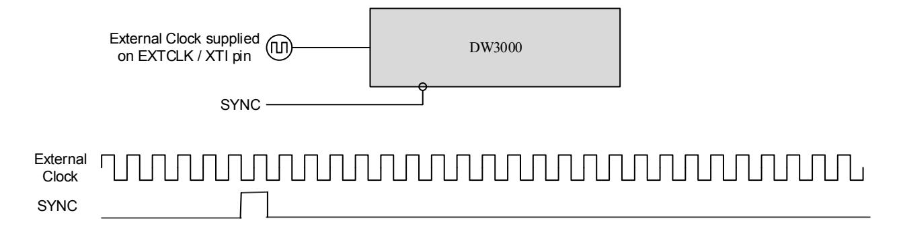
The SYNC input pin must be source synchronous with an external 38.4 MHz frequency reference clock supplied on the EXTCLK pin. The SYNC input pin is sampled on the rising edge of EXTCLK. Refer to the DW3000 Datasheet for setup and hold times of the SYNC pin. The SYNC input provides a common reference point in time to synchronise the DW3000 with the accuracy necessary to achieve high resolution location estimation.
One Shot Timebase Reset (OSTR) mode allows a reset to be applied to the timebase counter used for timestamping in DW3000 at a deterministic and predictable time relative to a synchronisation event. Any given device will reset the counter at a repeatable time to within 300ps (typically less than 100ps) variation. Process variation between parts introduces a deterministic error that can be calibrated out as part of the necessary calibration process to compensate for cable transmission delays in a wired synchronization system. When several DW3000s are driven by the same reference clock and an external SYNC signal, their internal timebases can be synchronised very accurately (allowing for the deterministic delays associated with the distribution network for the reference clock and SYNC signal).
To configure DW3000 for OSTR mode, the OSTR_M bit in th e EC_CTRL register is set and th e OSTS_WAIT value is set to the desired delay value. When a counter running on the 38.4 MHz external clock and initiated
on the rising edge of the SYNC signal equals th e OSTS_WAIT programmed value, the DW3000 timebase counter will be reset. See Register file: 0x04 – External sync control and RX calibration for register details.
At the time the SYNC signal is asserted, the clock PLL dividers generating the DW3000 124.8 MHz system clock are reset to ensure that a deterministic phase relationship exists between the system clock and the asynchronous 38.4 MHz external clock. For this reason, the OSTS_WAIT value programmed will dictate the phase relationship and should be chosen to give the desired phase relationship, as given b y OSTS_WAIT modulo 4. An OSTS_WAIT value of 33 decimal is recommended, but if a different value is chosen it should be chosen so that OSTS_WAIT modulo 4 is equal to 1, i.e. 29, 37, and so on.
In some geographic regions for certain situations (e.g. for emergency first responder use in ETSI UWB regulations for EU) it is permitted to send at +20 dB above the normal UWB regulation levels. To achieve this with the DW3000 it is necessary to employ external amplification of the transmitted signal. The DW3000 provides signals (using the GPIO lines in a special mode) to control the turn-on of an external power amplifier and to control an external analog switching of the transmitter and receiver signal paths appropriately. This mode of operation utilises the DW3000 pin s EXTPA, EXTTXE and EXTRXE as configured via the fields of the GPIO_MODE register.
Care should be taken when using this feature to ensure that necessary regulatory requirements have been fulfilled.
There is a separate application note giving details of the external power amplification. This includes the circuit diagram, details of configuration and various design considerations that apply. Please consult with Decawave's applications support team for details.
The DW3000 has a small amount of one-time-programmable (OTP) memory intended for device specific configuration or calibration data. Some areas of the OTP memory are used to save device calibration values determined during DW3000 testing, while othe r OTP memory locations are intended to be set by the customer during module manufacture and test.
For example, an OTP memory area is reserved for customers to programme the EUI that is loaded into EUI_64 as the IC comes out of reset (see EUI_64 for details of the EUI functionality).
This section lists the OTP memory areas defining their functionality and describes the algorithm for programming values into th e OTP memory, and how to read values from the OTP memory. Access to OTP memory is achieved using Register file: 0x0B – OTP memory interface.
The OTP memory locations are as defined in Table 17. Th e OTP memory locations are each 32-bits wide, OTP addresses are word addresses so each increment of address specifies a different 32-bit word.
| Address |
Size
(Used |
Byte [3] | Byte [2] | Byte [1] | Byte [0] |
Programmed
By |
|---|---|---|---|---|---|---|
| Bytes) | ||||||
| 0x00 | 4 | |||||
| 0x01 | 4 | 64 bit EUID | Customer | |||
| 0x02 | 4 | Alternative 64bit EUID (Selected via reg/SR register) | ||||
| 0x03 | 4 | Customer | ||||
| 0x04 | 4 | |||||
| 0x05 | 4 | LDOTUNE_CAL | Prod Test | |||
| 0x06 | 4 | {"0001,0000,0001", "CHIP ID 5 nibbles (20 bits)"} | Prod Test | |||
| 0x07 | 4 | {"0001" , "LOT ID – 7 nibbles (28bits)"} | Prod Test | |||
| 0x08 | 4 | - | Vbat @ 3.0 V | Vbat @ | Vbat @ 1.62 V | |
| [23:16] | 3.62 V [15:8] | [7:0] | Prod Test | |||
| 0x09 | 2 |
Temp @ 22 °C
+/- 2 °C [7:0] |
Prod Test | |||
| 0x0A | 0 | BIASTUNE_CAL | Prod Test | |||
| 0x0B | 4 | Antenna Delay – RFLoop | ||||
| 0x0C | 4 | AoA Iso CH9 | AoA Iso CH9 | AoA Iso CH5 | AoA Iso CH5 | Prod Test |
| RF2->RF1 | RF1->RF2 | RF2 -> RF1 | RF1->RF2 | Prod Test | ||
| 0x0D | 0 | W.S. Lot ID [3] | W.S. Lot ID | W.S. Lot ID | W.S. Lot ID [0] | |
| [2] | [1] | Prod Test | ||||
| 0x0E | 0 | W.S. Lot ID | W.S. Lot ID [4] | |||
| 0x0F | 0 | W.S. Wafer | [5] | Prod Test | ||
| Number | W.S. Y Loc | W.S. X Loc | Prod Test | |||
| 0x10 | 4 | Customer | ||||
| 0x11 | 4 | Customer | ||||
| 0x12 | 4 | Customer | ||||
| 0x13 | 4 | Customer | ||||
| 0x14 | 4 | Customer | ||||
| 0x15 | 4 | Customer | ||||
| 0x16 | 4 | Customer | ||||
| 0x17 | 4 | Customer | ||||
| 0x18 | 4 | Customer | ||||
| 0x19 | 4 | Customer | ||||
| 0x1A | 4 | Customer | ||||
| 0x1B | 4 | Customer | ||||
| 0x1C | 4 | Customer | ||||
| 0x1D | 4 | Customer | ||||
| 0x1E | 2 | XTAL_Trim[6:0] | Customer | |||
| 0x1F | OTP Revision | Customer | ||||
| 0x20 | 4 | RX_TUNE_CAL: DGC_CFG0 | Prod Test | |||
| 0x21 | 4 | RX_TUNE_CAL: DGC_CFG1 | Prod Test | |||
| 0x22 | 4 | RX_TUNE_CAL: DGC_CFG2 | Prod Test | |||
| 0x23 | 4 | RX_TUNE_CAL: DGC_CFG3 | Prod Test | |||
| 0x24 | 4 | RX_TUNE_CAL: DGC_CFG4 | Prod Test |
| 0x25 | 4 | RX_TUNE_CAL: DGC_CFG5 | Prod Test |
| 0x26 | 4 | RX_TUNE_CAL: DGC_CFG6 | Prod Test |
| 0x27 | 4 | RX_TUNE_CAL: DGC_LUT_0 – CH5 | Prod Test |
| 0x28 | 4 | RX_TUNE_CAL: DGC_LUT_1 – CH5 | Prod Test |
| 0x29 | 4 | RX_TUNE_CAL: DGC_LUT_2 – CH5 | Prod Test |
| 0x2A | 4 | RX_TUNE_CAL: DGC_LUT_3 – CH5 | Prod Test |
| 0x2B | 4 | RX_TUNE_CAL: DGC_LUT_4 – CH5 | Prod Test |
| 0x2C | 4 | RX_TUNE_CAL: DGC_LUT_5 – CH5 | Prod Test |
| 0x2D | 4 | RX_TUNE_CAL: DGC_LUT_6 – CH5 | Prod Test |
| 0x2E | 4 | RX_TUNE_CAL: DGC_LUT_0 – CH9 | Prod Test |
| 0x2F | 4 | RX_TUNE_CAL: DGC_LUT_1 – CH9 | Prod Test |
| 0x30 | 4 | RX_TUNE_CAL: DGC_LUT_2 – CH9 | Prod Test |
| 0x31 | 4 | RX_TUNE_CAL: DGC_LUT_3 – CH9 | Prod Test |
| 0x32 | 4 | RX_TUNE_CAL: DGC_LUT_4 – CH9 | Prod Test |
| 0x33 | 4 | RX_TUNE_CAL: DGC_LUT_5 – CH9 | Prod Test |
| 0x34 | 4 | RX_TUNE_CAL: DGC_LUT_6 – CH9 | Prod Test |
| 0x35 | 4 | PLL_LOCK_CODE | Prod Test |
| 0x36 – | UNALLOCATED | ||
| 0x5F | Customer | ||
| 0x60 | 1 | QSR Register (Special function register) | Reserved |
| 0x61 | 4 | Q_RR | |
| Register [7:0] | Reserved | ||
| 0x62 – | 4 | UNALLOCATED | Customer |
|
0x77
0x78 |
4 | AES_KEY[127:96] (big endian order) | |
| 0x79 | 4 | AES_KEY[95:64] (big endian order) | Customer |
| Customer | |||
| 0x7A | 4 | AES_KEY[63:32] (big endian order) | Customer |
| 0x7B | 4 | AES_KEY[31:0] (big endian order) | Customer |
| 0x7C | 4 | AES_KEY[255:224] (big endian order) | Customer |
| 0x7D | 4 | AES_KEY[223:192] (big endian order) | Customer |
| 0x7E | 4 | AES_KEY[191:160] (big endian order) | Customer |
| 0x7F | 4 | AES_KEY[159:128] (big endian order) | Customer |
The QSR ("Special function register") is a 32-bit segment of OTP that is directly readable via the register interface upon power up. To program the SR register follow the normal OTP programming method but set the OTP address to 0x60. As this is part of OTP boot sequence the new value will be present in the QSR register following the next boot up sequence.
The various tune values (LDOTUNE_CAL, BIASTUNE_CAL etc.) can be automatically loaded from OTP into the respective registers. This will ensure the device is using optimal calibration and tuning parameters for given configurations. The automatic loading (kicking) of these values is described insection 8.2.12.3 Sub-register 0x0B:08 – OTP configuration.
It is left up to the customer, but in Decawave's evaluation kits which have been calibrated, the XTAL_Trim and OTP Revision values are programmed into OTP memory addresses 0x1e and 0x1f. Then in the dwt_initialise() AP I [3] the XTAL trim value is copied to XTAL_TRIM.
The programming of the OTP requires a sequence of steps please see API functions [3].
The reading of an OTP memory address consists of a number of steps. Please see the API function [3]: dwt_otpread(uint16 address, uint32 *array, uint8 length) of how to read OTP memory.
The DW3000 is equipped with a low speed 8-bit SAR A/D convertor which can be configured to sample values from an internal IC temperature sensor and from a battery voltage monitor on the VDD1 power supply input. These readings can be manually run under host control or they can be configured to be run automatically each time the DW3000 enters the WAKE_UP state. This automatic mode allows the temperature and voltage to be read while the device is in a low power state, which allows to read the temperature without internal heat up and the unloaded battery voltage. More details can be found in Register file: 0x08 – Transmitter calibration block section and the description of the ONW_RUN_SAR bit of Sub-register 0x0A:00 – AON on wake configuration.
The DW3000 incorporates a brownout detection feature to warn the system about the condition of the IC supply voltage dropping below a pre-set brownout threshold of approx. 1.5 volts, which will reset the IC. The role of the brownout detector is to detect drops in the supply during the higher current TX or RX modes. This should not happen in normal operation when there is sufficient power supply current and capacitance available, but could happen in a battery powered design with insufficient remaining charge or insufficient capacitance available to supply the current needs of the device. A brownout means that the IC circuits have insufficient supply for correct operation likely to result in poor performance or operational issues.
The elements involved in the brownout detection feature are:
Enabling the voltage comparator will set the VWARN event flag bit in SYS_STATUS register. This initial VWARN event should be ignored and the event flag should be cleared (by writing 1 to VWARN) . Subsequent VWARN events will signal drop in the supply voltage.
The DW3000 is controlled by an associated host microcontroller system using the SPI interface to access a series of registers within the device. The DW3000 register set includes configuration registers, status registers, control registers, data buffer registers, and diagnostic registers. Section 8.1 – Register map overview gives an overview of the register layout and then section 8.2 – Detailed register description describes each individual parameter in detail. There is also a set of single octet commands to initiate certain IC activities (e.g. TX, RX, etc) which are described in secion 9 – Fast Commands . The SPI transaction formats are described in section 2.3 – The SPI interface .
The register map overview is given in Table 18. This lists the registers in address order, by register file ID and it gives a brief high level description of the register. Section 8.2 gives a detailed description of each register.
Note: When writing to any of the DW3000 registers care must be taken not to write beyond the documented length of the selected register and not to write to any of the reserved register locations. Doing so may cause the device to malfunction.
| ID | Mnemonic | Description |
|---|---|---|
| 0x00 | GEN_CFG_AES | This is the main register bank and |
| – | Advanced Encryption Standard | |
| 0x01 | configuration set of registers | |
| 0x02 | STS_CFG | Scrambled timestamp sequence |
| configuration | ||
| 0x03 | RX_TUNE | RX tuning register |
| 0x04 | EXT_SYNC | External synchronisation control |
| 0x05 | GPIO_CTRL | GPIO control registers |
| 0x06 | DRX | Digital receiver tuning and configuration |
| 0x07 | RF_CONF | Analog RF configuration |
| 0x08 | RF_CAL | Transmitter calibration block |
| 0x09 | FS_CTRL | Frequency synthesiser control block |
| 0x0A | AON | Always-On register set |
| 0x0B | OTP_IF | One Time Programmable memory interface |
| 0x0C | CIA | Channel Impulse Analysis control and |
| – | diagnostic block | |
| 0x0E | ||
| 0x0F | DIG_DIAG | Digital diagnostics |
| 0x11 | PMSC | Power Management System Control block |
| 0x12 | RX_BUFFER_0 | Receive data buffer |
| 0x13 | RX_BUFFER_1 | Second receive data buffer |
| 0x14 | TX_BUFFER | Transmit data buffer |
| ID | Mnemonic | Description |
|---|---|---|
| 0x15 | ACC_MEM | Read access to Channel Impulse Response |
| data | ||
| 0x16 | SCRATCH_RAM | Scratch RAM |
| 0x17 | AES RAM | AES key RAM |
| 0x18 | SET_1, SET_2 | Double buffer diagnostic sets |
| 0x1D | INDIRECT_PTR_A | Indirect pointer A buffer |
| 0x1E | INDIRECT_PTR_B | Indirect pointer B buffer |
| 0x1F | IN_PTR_CFG | Indirect pointer access configuration, and |
| "fast" status register |
Sectio n 8.1 gives an overview of the DW3000 register set presenting all top level register file addresses in Table 18. This section describes in detail the contents and functionality of these register files and their subregisters in separate sub sections. In each case the row fro m Table 18 is reproduced with a hexadecimal register ID, its length, type, mnemonic and one line description as follows:
| ID |
Length
(octets) |
Type | Mnemonic | Description |
|---|---|---|---|---|
This is followed by a description of the parameters within that register file. All parameters are presented with format REG:RR:SS, where RR is register file ID (5-bits) and SS (7-bits) is the sub address. Where a register is made up of individual bits or bit-fields these are identified with mnemonic and default values as follows:
| REG:RR:SS – Mnemonic – one line description | ||||||||||
|---|---|---|---|---|---|---|---|---|---|---|
|
31 30 29 28 27 26 25 24 23 22 21 20 19 18 17 16 15 14 13 12 11 10
9 8 7 6 5 4 3 2 1 |
0 | |||||||||
|
|
||||||||||
|
|
||||||||||
Then the fields or bits identified are described individually in detail.
Because many parameters are 4-octets long, the default presentation of the register values is as a 32-bit value. This may be sub-divided into fields of various bit widths down to single bit values. It should be noted that when reading these values via the SPI interface the octets are output least significant octet first. Also of note is that the indexed addressing modes allow individual octets to be accessed – a technique that may be employed to reduce SPI traffic when only part of a register needs to be read or written to.
Note : unused or reserved registers return 0xDEADDEAD when read. Unused or reserved bits/ bit fields within registers return the appropriate bits / bit fields from 0xDEADDEAD.
Each register file is described below:
| ID |
Length
(octets) |
Type | Mnemonic | Description |
|---|---|---|---|---|
| 0x00 – | 121 | - | GEN_CFG_AES | This is the part of the main register bank and Advanced |
| 0x01 | Encryption Standard configuration |
Register map register files 0x00 and 0x01 are concerned with the use of the various device configurations and AES block configuration. It contains a number of sub-registers. An overview of these is given by Table 19. Each of these sub-registers is separately described in the sub-sections below.
| Register | OFFSET | ||
|---|---|---|---|
| file ID | in | Mnemonic | Description |
| Register | |||
| 0x00 | 0x00 | DEV_ID | Device Identifier |
| 0x00 | 0x04 | EUI_64 | Extended Unique Identifier |
| 0x00 | 0x0C | PANADR | PAN Identifier and Short Address |
| 0x00 | 0x10 | SYS_CFG | System Configuration |
| 0x00 | 0x14 | FF_CFG | Frame Filter Configuration |
| 0x00 | 0x18 | SPI_RD_CRC | SPI CRC read status |
| 0x00 | 0x1C | SYS_TIME | System Time Counter |
| 0x00 | 0x24 | TX_FCTRL | Transmit Frame Control |
| 0x00 | 0x2C | DX_TIME | Delayed Send or Receive time |
| 0x00 | 0x30 | DREF_TIME | Delayed Send or Receive Reference time |
| 0x00 | 0x34 | RX_FWTO | Receive Frame Wait Timeout period |
| 0x00 | 0x38 | SYS_CTRL | System Control |
| 0x00 | 0x3C | SYS_ENABLE | System Event Enable Mask |
| 0x00 | 0x44 | SYS_STATUS | System Event Status Register |
| 0x00 | 0x4C | RX_FINFO | RX Frame Information |
| 0x00 | 0x64 | RX_TIME | Receive Time Stamp |
| 0x00 | 0x74 | TX_TIME | Transmit Time Stamp |
| 0x01 | 0x00 | TX_RAWST | Unadjusted/raw TX timestamp |
| 0x01 | 0x04 | TX_ANTD | 16-bit Delay from Transmit to Antenna |
| 0x01 | 0x08 | ACK_RESP_T | Acknowledgement Time and Response Time |
| 0x01 | 0x0C | TX_POWER | TX Power Control |
| 0x01 | 0x14 | CHAN_CTRL | Channel Control Register |
| 0x01 | 0x18 | LE_PEND_01 | Low Energy device address 0 and 1 |
| 0x01 | 0x1C | LE_PEND_23 | Low Energy device address 2 and 3 |
| 0x01 | 0x20 | SPI_COLLISION | SPI Collision Status |
| Register | OFFSET | ||
|---|---|---|---|
| file ID | in | Mnemonic | Description |
| Register | |||
| 0x01 | 0x24 | RDB_STATUS | RX Double Buffer Status |
| 0x01 | 0x28 | RDB_DIAG | RX Double Buffer Diagnostic Configuration |
| 0x01 | 0x30 | AES_CFG | AES Configuration |
| 0x01 | 0x34 | AES_IV0 | The 3rd IV word for the AES GCM/CCM* core |
| 0x01 | 0x38 | AES_IV1 | The 2nd IV word for the AES GCM/CCM* core |
| 0x01 | 0x3C | AES_IV2 | The 1st IV word for the AES GCM/CCM* core |
| 0x01 | 0x40 | AES_IV3 | The 4th IV word for the AES GCM/CCM* core |
| 0x01 | 0x44 | DMA_CFG | The DMA Configuration Register |
| 0x01 | 0x4C | AES_START | Start AES operation |
| 0x01 | 0x50 | AES_STS | The AES Status |
| 0x01 | 0x54 | AES_KEY | The 128-bit KEY for the AES GCM/CCM* core |
| ID |
Length
(octets) |
Type | Mnemonic | Description |
|---|---|---|---|---|
| 00:00 | 4 | RO | DEV_ID |
Device Identifier – includes device type and revision
information |
Register file: 0x00-0x1 – General configuration registers, sub-register 0x00 is the device identifier. This is hard-coded into the silicon. The value in this register is read-only and cannot be overwritten by the host system. The device ID will be changed for any silicon updates. It is expected that the host system will validate that the device ID is the expected value, supported by its software, before proceeding to use the IC. The DEV_ID register contains the following sub-fields:
| REG:00:00 – DEV_ID – Device Identifier | |||||||||||||||||||||||||||||||
|---|---|---|---|---|---|---|---|---|---|---|---|---|---|---|---|---|---|---|---|---|---|---|---|---|---|---|---|---|---|---|---|
| 31 30 29 28 27 26 25 24 23 22 21 20 19 18 17 16 15 14 13 12 11 10 | 9 | 8 | 7 | 6 | 5 | 4 | 3 | 2 | 1 | 0 | |||||||||||||||||||||
| RIDTAG | MODEL | VER | REV | ||||||||||||||||||||||||||||
| 1 | 1 | 0 | 1 | 1 | 1 | 1 | 0 | 1 | 1 | 0 | 0 | 1 | 0 | 1 | 0 | 0 | 0 | 0 | 0 | 0 | 0 | 1 | 1 | 0 | 0 | 0 | 0 | 0 | 0 | 1 | 0 |
The fields of th e DEV_ID register identified above are individually described below:
| Field | Description of fields within Sub-register 0x00:00 – Device Identifier |
|---|---|
| REV | Revision: This number will be updated for minor corrections and changes in device's |
| operation | |
|
reg:00:00
bits:3–0 |
|
| VER | Version: This number will be updated if a new version is produced that has significant |
| differences from the previous version. There are currently two versions; 0xDECA0302 and | |
| reg:00:00 | 0xDECA0312, the non-PDoA and PDoA device respectively. |
|
bits:7–4
MODEL |
The MODEL identifies the device type. The DW3000 is device type 0x03. |
| reg:00:00 | |
| bits:15–8 |
| RIDTAG | Register Identification Tag. It is planned that this will remain constant for all Decawave |
|---|---|
| parts. The value is 0xDECA in hex. | |
| reg:00:00 | |
| bits:31–16 |
For the production DW3000 the Device ID is set to 0xDECA0312 or 0xDECA0302. The register descriptions in this user manual relate to that DW3000 device and are not valid for any earlier sample parts.
| ID |
Length
(octets) |
Type | Mnemonic | Description | ||||||
|---|---|---|---|---|---|---|---|---|---|---|
| 00:04 | 8 | RW | EUI_64 | Extended Unique Identifier – the 64-bit IEEE device address | ||||||
Register file: 0x00-0x1 – General configuration registers, sub-register 0x04 of register file 0x00 is the Extended Unique Identifier register. For IEEE802.15.4 standard [1] compliance every device should have a unique 64-bit device identifier. The high-order 24-bits of the EUI are a company identifier assigned by the IEEE Registration Authority, (se e http://standards.ieee.org/develop/regauth/oui/) , to the manufacturer. The low 40-bits of the EUI are the extension identifier uniquely chosen by the manufacturer for each device manufactured and never repeated. The resultant EUI is a globally unique identifier. It is expected that manufacturers who need to comply with this requirement will register with the IEEE Registration Authority and generate and maintain their own EUI extension identifier numbering space to ensure its uniqueness for every device made.
Manufacturers may store the EUI externally to the DW3000 or as an alternative the DW3000 has a one-timeprogrammable memory area that may be programmed with the EUI during product manufacturing. Please refer to section 7.3 – Using the on-chip OTP memory for details of programming values into OTP.
If needed the host can read the value from the OTP and program it into this EUI register.
Certain IEEE802.15.4 standar d [1] defined frames use a 64-bit source address. The software (MAC) generating such frames is expected to insert the EUI within the frame before the frame is written to the DW3000's transmit buffer.
The EUI register is used by the Receive Frame Filtering function, see sectio n 5.4 details. When frame filtering is operational the DW3000 decodes each received frame according to the IEEE802.15.4 standar d [1] MAC rules and any 64-bit destination address present must match the EUI register before the frame will be accepted.
The 8-octets of the Extended Unique Identifier may be accessed as a single 8-octet access to the EUI register file starting at index 0. The bytes of the EUI are output/input in the following order:
| REG:00:04 – EUI – Extended Unique Identifier | |||||||||||||||
|---|---|---|---|---|---|---|---|---|---|---|---|---|---|---|---|
| 7 | 6 | 5 | 4 | 3 | 2 | 1 | 0 |
Octet Index
Description |
|||||||
| 0xHH | 0 | Bits 7 to 0 of the extension identifier | |||||||||||||
| 0xHH | 1 | Bits 15 to 8 of the extension identifier | |||||||||||||
| 0xHH | 2 | Bits 23 to 16 of the extension identifier | |||||||||||||
|
0xHH
3 |
Bits 31 to 24 of the extension identifier | ||||||||||||||
| 0xHH | 4 | Bits 39 to 32 of the extension identifier |
|---|---|---|
| 0xNN | 5 | Bits 7 to 0 of the OUI (manufacturer company ID) |
| 0xNN | 6 | Bits 15 to 8 of the OUI (manufacturer company ID) |
| 0xNN | 7 | Bits 23 to 16 of the OUI (manufacturer company ID) |
The ordering of octets read from the Extended Unique Identifier register is designed to be directly compatible with the octet ordering of the 64-bit source address fields of IEEE802.15.4 standard [1] MAC frames easing the task of inserting it into a frame for transmission.
| ID |
Length
(octets) |
Type | Mnemonic | Description |
|---|---|---|---|---|
| 00:0C | 4 | RW | PANADR | PAN Identifier and Short Address |
Register file: 0x00-0x1 – General configuration registers, sub-register 0x0C of register file 0x00 contains two 16-bit parameters, the PAN Identifier and the Short Address . When the DW3000 is powered up or reset both the PAN Identifier and the Short Address in this register are reset to the value 0xFFFF. The host software (MAC) should program the appropriate values into this register if it wishes to use the DW3000's receive frame filtering or automatic acknowledgement generation functions.
In an IEEE802.15.4 standard [1] personal area network (PAN), the PAN coordinator node determines the PAN Identifier for the network, and assigns it and short 16-bit addresses to devices (nodes) associating with the PAN. The nodes in the PAN then should (at the MAC layer) use their assigned short address as the source address and include it along with the PAN Identifier in the frames they transmit. When a node receives a frame it should only process those with a destination address and PAN Identifier which matches their assigned node address and network ID.
When the receive frame filtering and automatic acknowledgement functionality is operational the DW3000 decodes each received frame according to the IEEE802.15.4 standard [1] MAC specification and when it determines that a 16-bit destination address is present in the frame, the DW3000 will compare the destination address with the short address value programmed in this register before accepting/acknowledging the frame, and will similarly only accept received frames when the PAN Identifier in the frame matches the PAN Identifier programmed in this register. See section s 5.4 an d 5.5 for details of the frame filtering and automatic acknowledgement functionality.
The PANADR register contains the following sub-fields:
| REG:00:0C –PANADR – PAN Identifier and Short Address | ||||||||||||||||||||||||||
|---|---|---|---|---|---|---|---|---|---|---|---|---|---|---|---|---|---|---|---|---|---|---|---|---|---|---|
| 31 30 29 28 27 26 25 24 23 22 21 20 19 18 17 16 15 14 13 12 11 10 | 9 | 8 | 7 | 6 | 5 | 4 | 3 | 2 | 1 | 0 | ||||||||||||||||
| PAN_ID | SHORTADDR | |||||||||||||||||||||||||
| 0xFFFF | 0xFFFF | |||||||||||||||||||||||||
The host software (MAC) only needs to program this register if it is using the DW3000's receive frame filtering and automatic acknowledgement generation functions. The sub-fields are:
| Field | Description of fields within Sub-register 0x00:0C – PAN Identifier and Short Address |
|---|---|
| SHORTADDR | Short Address. The host software needs to program this register if it is using the |
| DW3000's receive frame filtering functionality, with or without the automatic | |
|
reg:00:0C
bits:15–0 |
acknowledgement generation function. The short address is typically assigned to a node |
| by the coordinator function at MAC (or higher) layer as part of network association. The | |
| value may alternatively be pre-defined in a closed network where the network association | |
| phase is being skipped. | |
| PAN_ID | PAN Identifier. The host software needs to program this register if it is using the |
| DW3000's receive frame filtering functionality, with or without the automatic | |
|
reg:00:0C
bits:31–16 |
acknowledgement generation function. The PAN ID is typically assigned as part of |
| network association. A predefined PAN ID might be used in a closed network where the | |
| network association phase is being skipped. |
| ID |
Length
(octets) |
Type | Mnemonic | Description |
|---|---|---|---|---|
| 00:10 | 4 | RW | SYS_CFG | System configuration bitmap |
Register file: 0x00-0x1 – General configuration registers, sub-register 0x10 of register file 0x00 is the system configuration register. This is a bitmapped register. Each bit field is separately identified and described below. The SYS_CFG register contains the following bitmapped sub-fields:
| REG:00:10 – SYS_CFG – System configuration bit map | |||||||||||||||||||||||||||||||
|---|---|---|---|---|---|---|---|---|---|---|---|---|---|---|---|---|---|---|---|---|---|---|---|---|---|---|---|---|---|---|---|
| 31 30 29 28 27 26 25 24 23 22 21 20 19 18 17 16 15 14 13 12 11 10 | 9 | 8 | 7 | 6 | 5 | 4 | 3 | 2 | 1 | 0 | |||||||||||||||||||||
| - | - | - | - | - | - | - | - | - | - | - | - | - | FAST_AAT |
MODE
PDOA_ |
CP_SDC | - | CP_SPC |
_ACK
AUTO |
RXAUTR |
WTOE
RX |
CIA_STS | CIA_IPATOV | SPI_CRCEN |
M8
PHR_6 |
PHR_MODE | DIS_DRXB | DIS_FCE |
X
DIS_FCS_T |
FFEN | ||
| 0 | 0 | 0 | 0 | 0 | 0 | 0 | 0 | 0 | 0 | 0 | 0 | 0 | 1 | 0 | 0 | 0 | 1 | 0 | 0 | 0 | 1 | 1 | 0 | 0 | 0 | 1 | 0 | 0 | 0 |
The fields of th e SYS_CFG register identified above are individually described below:
| Field | Description of fields within Sub-register 0x00:10 – System configuration |
|---|---|
| FFEN | Frame Filtering Enable. This bit enables the frame filtering functionality in the DW3000 |
| receiver. The frame filtering is designed to follow the rules defined in the IEEE802.15.4 | |
|
reg:00:10
bit:0 |
standard [1]. When frame filtering is enabled receive frames must pass the frame |
| filtering rules before being considered as a good frame. This includes the destination | |
| address matching the PAN_ID and SHORTADDR as defined in Sub-register 0x00:0C – PAN | |
| Identifier and Short Address, or the long 64-bit defined by Sub-register 0x00:04 – | |
| Extended Unique Identifier. These addresses and the other frame filtering control bits of | |
| Sub-register 0x00:14 – Frame filter configuration should be configured correctly before | |
| enabling frame filtering with this FFEN bit. Section 5.4 describes frame filtering in more | |
| detail. |
| Field | Description of fields within Sub-register 0x00:10 – System configuration |
|---|---|
| DIS_FCS_TX | Disable auto-FCS Transmission. If this bit is not set then the DW3000 automatically |
| calculates and appends the two Frame-Check-Sequence bytes at the end of each | |
| reg:00:10 | transmitted frame (packet configurations 0, 1,and 2, see Figure 13: Packet formats). |
| bit:1 | Normally DIS_FCS_TX is not set and when transmission is started the DW3000 calculates |
| the FCS on the octets fetched from the TX buffer, and automatically appends the two | |
| byte FCS sequence at the end of the frame. The FCS sequence follows the IEEE802.15.4 | |
| standard [1] polynomial, x16 + x12 + x5 + 1, also known as CRC-16-CCITT or CRC-16 ITU-T. | |
| When DIS_FCS_TX is set the DW3000 will not append the FCS to the data frame but | |
| instead fetches the two bytes from the TX buffer. The frame length is determined by the | |
| TXFLEN field of Sub-register 0x00:24 – Transmit frame control. Thus, when DIS_FCS_TX is | |
| clear, TXFLEN -2 (frame length minus two) octets are fetched and sent from the TX | |
| buffer, and the final two octets sent are the automatically generated FCS bytes. And, | |
| when DIS_FCS_TX is set, TXFLEN (frame length) octets are sent from the TX buffer. | |
| DIS_FCS_TX may be of use if a non-standard IEEE802.15.4 [1] frame protocol is being | |
| employed, and can also be of use to induce a FCS error in the remote receiver during | |
| testing. | |
| DIS_FCE | Disable frame check error handling. This might be of use for protocols using a different |
| encoding scheme for error handling not based on one defined in IEEE802.15.4 standard | |
| reg:00:10 | [1], but for normal IEEE802.15.4 operation this bit should be set to zero. Setting this bit |
| bit:2 | to one makes the DW3000 treat the frame as valid, ignoring errors in the CRC frame |
| check sequence. | |
| DIS_DRXB | Disable Double RX Buffer. The DW3000 has a double buffered receiver allowing reception |
| of a new frame to proceed in one buffer while the host processor is in the process of | |
|
reg:00:10
bit:3 |
unloading the last frame received into the other buffer of the buffer pair. The double |
| buffering is enabled when DIS_DRXB is set to 0, and disabled when DIS_DRXB is set to 1. | |
| More details on the operation of double buffering are given in section 4.4. | |
| PHR_MODE | This configuration allows selection of PHR type to be one of two options. The default |
| setting gives IEEE 802.15.4 standard [1] PHR encoding and a maximum data payload of | |
|
reg:00:10
bit:4 |
127 octets. The other option enables the long frames mode which allows a data payload |
| of up to 1023 octets. In the latter mode the PHR encoding does not follow the IEEE | |
| 802.15.4 standard but instead matches an encoding defined in the IEEE 802.15.8 | |
| standard. For successful communications between two nodes both must be configured | |
| for the same PHR mode. Supported PHR_MODE configurations are: | |
| 0 – Standard Frame mode as per IEEE802.15.4 standard [1]. | |
| 1 – Long Frame mode encoding as per IEEE802.15.8 standard [4], 0-1023. | |
| PHR_6M8 | This configuration sets the PHR rate to match the data rate when 6.81 Mb/s data rate is |
| used. If this is set to 0, then the PHR will be sent at 850 kb/s. This bit is ignored if other | |
| reg:00:10 | data rate (i.e. 850 kb/s) is selected. |
| bit:5 | |
| SPI_CRCEN | Enable SPI CRC functionality. When this bit is set it enables a Cyclic Redundancy Check for |
| reg:00:10 | SPI read and write transactions, where SPI write access are assumed to have a CRC byte |
| bit:6 | appended that the IC automatically checks and flags any mismatch (error) in the |
| SPICRCERR, event status bit, and SPI read accesses have a CRC computed internally and | |
| available in the SPI_RD_CRC register. The host can then check it against the one it | |
| calculates for the read data. | |
| For more details please refer to see § 2.3.1.3 – SPI CRC mode |
| Field | Description of fields within Sub-register 0x00:10 – System configuration |
|---|---|
|
CIA_IPATOV
reg:00:10 bit:7 |
Select CIA processing of the preamble CIR. When CIA_IPATOV is 1 (default) it configures
the CIA algorithm to analyse the preamble CIR and compute an RX timestamp estimate from it. Upon receipt of a packet, the CIA will be automatically run, assuming CIARUNE in Sub-register 0x11:08 – Sequencing control is set to 1 (default). This CIA analysis is started upon SFD detection unless an STS is expected, see § 6 – Secure ranging / timestamping, in which case this processing is delayed until after the STS has been received. When CIA_IPATOV is 0, the CIA algorithm will not run on the preamble CIR. This might be done to save power or processing time when using the STS. If CIARUNE is 0, the CIA_RUN bit, in the DIAG_TMC register, may be used to run the CIA after the packet is received. |
|
The RX timestamp estimate resulting from running the CIA on the preamble CIR is written
to the IP_TOA field in Sub-register 0x0C:00 – Preamble receive time stamp and status, and also to the RX_STAMP field in Sub-register 0x00:64 – Receive time stamp but in packet configurations containing an STS, (and when CIA_STS is set), this RX_STAMP value in may be overwritten by the STS based RX timestamp estimate. |
|
|
CIA_STS
reg:00:10 bit:8 |
Select CIA processing of the STS CIR. For more details of this see § 6 – Secure ranging /
timestamping. This CIA_STS configuration bit applies when STS is included in the packet as configured via the CP_SPC configuration. In that case when CIA_STS is 1 (default) it configures the CIA algorithm to analyse the STS CIR and compute an RX timestamp estimate from it. Upon receipt of a packet, the CIA will be automatically run, assuming CIARUNE in Sub-register 0x11:08 – Sequencing control is set to 1 (default). This will occur after the STS part of the packet has been received and after the CIA has finished analysis of the preamble sequence based CIR if this is enabled by the CIA_IPATOV configuration bit above. When CIA_STS is 0, the CIA will not analyse the STS CIR. If CIARUNE is 0, the CIA_RUN bit, in DIAG_TMC register, may be used to run the CIA after the packet is received. |
|
The RX timestamp estimate resulting from running the CIA on the STS CIR is written to
the STS_TOA field in Sub-register 0x0C:08 – STS receive time stamp and status, and also to the RX_STAMP field in Sub-register 0x00:64 – Receive time stamp. |
|
|
RXWTOE
reg:00:10 bit:9 |
Receive Wait Timeout Enable. When set RX Enable will initialise an RX_FWTO down count
which will disable the receiver if no valid frame is received before the timeout occurs. The timeout period is set in Sub-register 0x00:34 – Receive frame wait timeout period. The occurrence of the timeout is signalled by the RXFTO event status bit in Sub-register 0x00:44 – System event status. |
| Field | Description of fields within Sub-register 0x00:10 – System configuration |
|---|---|
| RXAUTR | Receiver Auto-Re-enable. This bit is used to cause the receiver to re-enable |
| automatically. Its operation changes depending on whether the IC is operating in single | |
|
reg:00:10
bit:10 |
or double buffered modes. The default value is 0. With this setting, the IC will not |
| automatically re-enable the receiver but will stop receiving and return to idle mode | |
| whenever any receive events happen. This includes receiving a frame but also failing to | |
| receive a frame because of some error condition, for example an error in the PHY header | |
| (as reported by the RXPHE event status bit in Sub-register 0x00:44 – System event | |
| status). In such cases if the host wants to re-enable the receiver it must do it explicitly, | |
| using CMD_RX command. The operation when RXAUTR = 1 is as follows: | |
| (a) Double-buffered mode: Not supported, double buffer mode must be used with this | |
| set to 0. | |
| (b) Single-buffered mode: After a frame reception failure (except a frame wait timeout), | |
| the receiver will re-enable to re-attempt reception. | |
| For more information on reception see section 4 Message reception. | |
| AUTO_ACK | Automatic Acknowledgement Enable. Default value 0. This is the enable for the |
| automatic acknowledgement function. See section 5.5 Automatic acknowledgement for | |
|
reg:00:10
bit:11 |
details of this operation. |
| CP_SPC | STS packet configuration. This field applies to both transmitter and receiver. The IC |
| supports four different STS packet configuration formats (as shown in Figure 13): | |
|
reg:00:10
bits:13-12 |
0: SP0 – No STS in the packet |
| 1: SP1 – The STS is between the SDF and the PHR. | |
| 2: SP2 – The STS is after the data, (i.e. at the end of the packet). | |
| 3: SP3 – The STS is after the SDF but there is no PHR or data. | |
| For more details on the STS please refer to § 6 – Secure ranging / timestamping and also | |
| § 3.1 Basic transmission. | |
| N.B. When CP_SPC is 2, for correct operation it is required that the data length is non | |
| zero. This parameter must be set before CP_LOADIV is asserted. | |
| - | This bit is reserved. |
| reg:00:10 | |
| bit:14 | |
| CP_SDC | This bit, when set, configures the Super Deterministic Code (SDC) mode. If RX timestamp |
| security is not a concern, then overhead of key management and counter control is | |
|
reg:00:10
bit:15 |
undesirable. For this reason, the DW3000 includes a special STS mode that uses a code |
|
optimized for ToA performance. When this is set the STS KEY/IV values are ignored. The
STS generation is using a pre-programmed sequence in the transmitter and the receiver. |
|
| When this bit is clear, standard IEEE 802.15.4z counter mode is used. | |
| PDOA_MODE | PDoA mode is configured with this setting: |
| 0x0: this disables the PDoA operation in the DW3000 receiver | |
|
reg:00:10
bits:17-16 |
0x1: this configures the receiver for PDoA Mode 1 |
| 0x2: this configuration is reserved/not supported | |
| 0x3: this configures the receiver for PDoA Mode 3 | |
| These are further described in 4.2 TDoA and PDoA support | |
| FAST_AAT |
Enable fast RX to TX turn around mode. When this bit is set the receiver will not wait for
CIADONE before it signals end of reception (RXFR). The host can then start processing the |
| reg:00:10 | received frame. If AUTO_ACK has been configured the AAT bit will also be set to signal ACK |
| bit:18 | is being sent, assuming it has been requested and other frame filtering rules pass. |
| Field | Description of fields within Sub-register 0x00:10 – System configuration |
|---|---|
| - | These bits are reserved. |
| reg:00:10 | |
| bits:31-19 |
| ID |
Length
(octets) |
Type | Mnemonic | Description | ||||||
|---|---|---|---|---|---|---|---|---|---|---|
| 00:14 | 2 | RW | FF_CFG | Frame filter configuration bitmap | ||||||
Register file: 0x00-0x1 – General configuration registers, sub-register 0x14 of register file 0x00 is the IEEE802.15.4 standar d [1] MAC frame address filter configuration register. This is a bitmapped register. Each bit field is separately identified and described below. The FF_CFG register contains the following bitmapped sub-fields:
| REG:00:14 – FF_CFG – Frame Filter Configuration bit map | |||||||||||||||||||||||||||||
|---|---|---|---|---|---|---|---|---|---|---|---|---|---|---|---|---|---|---|---|---|---|---|---|---|---|---|---|---|---|
| 31 30 29 28 27 26 25 24 23 22 21 20 19 18 17 16 15 14 13 12 11 10 | 9 | 8 | 7 | 6 | 5 | 4 | 3 | 2 | 1 | 0 | |||||||||||||||||||
| LSADRAPE | SSADRAPE | LE3_PEND | LE2_PEND | LE1_PEND | LE0_PEND | FFIB | FFBC | FFAE | FFAF |
MULTI
FFA |
R
FFA |
M
FFA |
A
FFA |
FFAD | FFAB | ||||||||||||||
| 0 | 0 | 0 | 0 | 0 | 0 | 0 | 0 | 0 | 0 | 0 | 0 | 0 | 0 | 0 | 0 | ||||||||||||||
Definition of the bit fields within FF_CFG bitmap: -
| Field | Description of fields within Sub-register 0x00:14 – Frame filter configuration |
|---|---|
| FFAB | Frame Filtering Allow Beacon frame reception. IEEE802.15.4 standard [1]. Frames begin |
| reg:00:14 | with three bits, indicating the frame type, b3 to b0. For beacon frames these are binary |
| bit:0 | 000. When FFAB is set to 1 beacon frames will be accepted (assuming all other frame |
| filtering rules are passed) and when FFAB is clear beacon frames will be ignored. Section | |
| 5.4 describes frame filtering in detail. | |
| FFAD | Frame Filtering Allow Data frame reception. IEEE802.15.4 standard [1] frames begin with |
| three bits, indicating the frame type, b3 to b0. For data frames these are binary 001. | |
| reg:00:14 | When FFAD is set to 1 data frames will be accepted (assuming all other frame filtering |
| bit:1 | rules are passed) and when FFAD is clear data frames will be ignored. Section 5.4 |
| describes frame filtering in more detail. | |
| FFAA | Frame Filtering Allow Acknowledgment frame reception. IEEE802.15.4 standard [1] |
| frames begin with three bits, indicating the frame type, b3 to b0. For acknowledgment | |
| reg:00:14 | frames these are binary 010. When FFAA is set to 1 acknowledgment frames will be |
| bit:2 | accepted (assuming all other frame filtering rules are passed) and when FFAA is clear |
| acknowledgment frames will be ignored. Section 5.4 describes frame filtering in more | |
| detail. |
| Field | Description of fields within Sub-register 0x00:14 – Frame filter configuration |
|---|---|
| FFAM | Frame Filtering Allow MAC command frame reception. IEEE802.15.4 standard [1] frames |
| begin with three bits, indicating the frame type, b3 to b0. For MAC command frames | |
| reg:00:14 | these are binary 011. When FFAM is set to 1 MAC command frames will be accepted |
| bit:3 | (assuming all other frame filtering rules are passed) and when FFAM is clear MAC |
| command frames will be ignored. Section 5.4 describes frame filtering in more detail. | |
| FFAR | Frame Filtering Allow Reserved frame types. IEEE802.15.4 standard [1] frames begin with |
| three bits, indicating the frame type, b3 to b0. For reserved frames these are binary 100 | |
| reg:00:14 | and would normally be rejected. When FFAR is set to 1 these frames are accepted. Since |
| bit:4 | these frame types are unknown no further frame decoding is done (e.g. no address |
| matching etc.) and the software will thus be responsible for validating and interpreting | |
| these frames. Section 5.4 describes frame filtering in more detail. | |
| Note that the frame filter does decode the frame control fields to determine the | |
| minimum length of the expected frame and will reject the frame if it is too short, see | |
| section 5.4. | |
| FFAMULTI | Frame Filtering Allow Multipurpose frames. IEEE802.15.4 standard [1] frames begin with |
| three bits, indicating the frame type, b3 to b0. For the multipurpose frames these are | |
| reg:00:14 | binary 101. When FFAMULTI is set to 1 these frames are accepted. When FFAMULTI is set |
| bit:5 | to 0, they will be ignored. Section 5.4 describes frame filtering in more detail. |
| Note that the frame filter does decode the frame control fields to determine the | |
| minimum length of the expected frame and will reject the frame if it is too short, see | |
| section 5.4. | |
| FFAF | Frame Filtering Allow Fragmented/Frack frames. IEEE802.15.4 standard [1] frames begin |
| with three bits, indicating the frame type, b3 to b0. For the fragmented type these are | |
|
reg:00:14
bit:6 |
binary 110. When FFAF is set to 1 these frames are accepted. When FFAF is set to 0, they |
| will be ignored. Section 5.4 describes frame filtering in more detail. | |
| Note that the frame filter does decode the frame control fields to determine the | |
| minimum length of the expected frame and will reject the frame if it is too short, see | |
| section 5.4. | |
| FFAE | Frame Filtering Allow Extended frames. IEEE802.15.4 standard [1] frames begin with |
| three bits, indicating the frame type, b3 to b0. For the extended frames these are binary | |
|
reg:00:14
bit:7 |
111. When FFAE is set to 1 these frames are accepted. When FFAE is set to 0, they will be |
| ignored. Section 5.4 describes frame filtering in more detail. | |
| Note that the frame filter does decode the frame control fields to determine the | |
| minimum length of the expected frame and will reject the frame if it is too short, see | |
| section 5.4. | |
| FFBC | Frame Filtering Behave as PAN Coordinator. When this bit is set (to 1) the device behaves |
| reg:00:14 | as a PAN coordinator, which means that it will accept frames with only source addressing |
| bit:8 | fields and: |
|
a)
Source PAN ID must match PAN_ID set, for MAC and data frame types |
|
|
b)
Destination PAN ID must match PAN_ID set, for Multipurpose frame type |
|
| Section 5.4 describes frame filtering in more detail. | |
| FFIB | Frame Filtering allow MAC Implicit Broadcast. If this bit is not set (set to 0), then the |
| reg:00:14 | destination addressing (PAN ID and destination address fields, as appropriate, in the |
| bit:9 | received frame, if present) must either be set to broadcast (0xFFFF) or specific destination |
| address, otherwise the frame will be rejected. If this bit is set to 1, then frames without | |
| destination PAN ID and destination address are treated as though they are addressed to | |
| the broadcast PAN ID and broadcast short (16-bit) address. | |
| Section 5.4 describes frame filtering in more detail. |
| Field | Description of fields within Sub-register 0x00:14 – Frame filter configuration |
|---|---|
| LE0_PEND | Data pending for device at LE0 address |
| When this is set and the source address of a received MAC command Data Request frame | |
| reg:00:14 | matches the address set in LE_ADDR0 in LE_PEND_01 register, the automatically |
| bit:10 | transmitted ACK will have PEND bit set. |
| Note AUTO_ACK bit in SYS_CFG, and frame filtering rules (e.g. to allow MAC commands) | |
| in FF_CFG must also be configured. | |
| Section 5.4 describes frame filtering in more detail. | |
| LE1_PEND | Data pending for device at LE1 address |
| When this is set and the source address of a received MAC command Data Request frame | |
| reg:00:14 | matches the address set in LE_ADDR1 in LE_PEND_01 register, the automatically |
| bit:11 | transmitted ACK will have PEND bit set. |
| Note AUTO_ACK bit in SYS_CFG, and frame filtering rules (e.g. to allow MAC commands) | |
| in FF_CFG must also be configured. | |
| Section 5.4 describes frame filtering in more detail. | |
| LE2_PEND | Data pending for device at LE2 address |
| When this is set and the source address of a received MAC command Data Request frame | |
|
reg:00:14
bit:12 |
matches the address set in LE_ADDR2 in LE_PEND_23 register, the automatically |
| transmitted ACK will have PEND bit set. | |
| Note AUTO_ACK bit in SYS_CFG, and frame filtering rules (e.g. to allow MAC commands) | |
| in FF_CFG must also be configured. | |
| Section 5.4 describes frame filtering in more detail. | |
| LE3_PEND | Data pending for device at LE3 address |
| When this is set and the source address of a received MAC command Data Request frame | |
|
reg:00:14
bit:13 |
matches the address set in LE_ADDR3 in LE_PEND_23 register, the automatically |
| transmitted ACK will have PEND bit set. | |
| Note AUTO_ACK bit in SYS_CFG, and frame filtering rules (e.g. to allow MAC commands) | |
| in FF_CFG must also be configured. | |
| Section 5.4 describes frame filtering in more detail. | |
| SSADRAPE | Short Source Address Data Request ACK with PEND Enable. |
| reg:00:14 | Setting this bit to 1 means that auto-ACK that is sent as a reply to any MAC command |
| bit:14 | Data Request coming from any node with a short (16-bit) source address will have the |
| PEND bit set. | |
| Setting this bit to 0, means that an auto-ACK to a MAC command from a node with short | |
| source address will have the PEND bit set if and only if the address matches one of the | |
| four 16-bit addresses programmed in LE_PEND_01 and LE_PEND_23 registers and a | |
| matching bit in LE0_PEND, LE1_PEND, LE2_PEND and LE3_PEND. | |
| Note AUTO_ACK bit in SYS_CFG, and frame filtering rules (e.g. to allow MAC commands) | |
| in FF_CFG must also be configured. | |
| Section 5.4 describes frame filtering in more detail. | |
| LSADRAPE | Long Source Address Data Request ACK with PEND Enable |
| reg:00:14 | Setting this bit to 1 means that auto-ACK that is sent as a reply to any MAC command |
| bit:15 | Data Request coming from any node with a long (64-bit) source address will have the |
| PEND bit set. | |
| Setting this bit to 0, means that an auto-ACK to a MAC command from a node with long | |
| source address will not have the PEND bit set. | |
| Note AUTO_ACK bit in SYS_CFG, and frame filtering rules (e.g. to allow MAC commands) | |
| in FF_CFG must also be configured. | |
| Section 5.4 describes frame filtering in more detail. |
| ID |
Length
(octets) |
Type | Mnemonic | Description | ||||||
|---|---|---|---|---|---|---|---|---|---|---|
| 00:18 | 1 | RO | SPI_RD_CRC | SPI CRC read status | ||||||
Register file: 0x00-0x1 – General configuration registers, sub-register 0x18 of register file 0x00 is the status register for the SPI read CRC value of the SPI CRC function. This is the CRC value resulting from each SPI read when SPI CRC mode is enabled via the SPI_CRCEN bit in Sub-register 0x00:10 – System configuration . For more details of SPI CRC operation please refer to § 2.3.1.3 – SPI CRC mode .
| ID |
Length
(octets) |
Type | Mnemonic | Description |
|---|---|---|---|---|
| 00:1C | 4 | RO | SYS_TIME | System time counter (32-bit) |
Register file: 0x00-0x1 – General configuration registers, sub-register 0x1C of register file 0x00 is the System Time Counter register. The device's system time and time stamps are designed to be based on the time units which are nominally at 64 GHz, or more precisely 499.2 MHz × 128 = 63.8976 GHz.
The SYS_TIME register only counts in the IDLE_PLL , RX and TX states (were the digital PLL enabled), and it only contains the 32 most significant bits of the device's system time. In all other states the system time counter is disabled and this register is not updated. When it is active the SYS_TIME register is incremented at a rate of 125 MHz and in units of 2. The least significant bit o f SYS_TIME is always zero. The internal device's counter wrap period is 2 40 ÷ (128×499.2 MHz) = 17.2074 seconds.
Note: once this register is read the system time value is latched and any subsequent read will return the same value. To clear the current value in the register an SPI write transaction is necessary, the following read of the SYS_TIME register will return a new value.
| ID |
Length
(octets) |
Type | Mnemonic | Description |
|---|---|---|---|---|
| 00:24 | 6 | RW | TX_FCTRL | Transmit frame control |
Register file: 0x00-0x1 – General configuration registers, sub-register 0x24 of register file 0x00, the transmit frame control register, contains a number of TX control fields. Each field is separately identified and described below. (For a general discussion of transmission please refer to section 3 Message transmission)
| REG:00:24 – TX_FCTRL – Transmit frame control (Octets 0 to 3, 32-bits) | |||||||||||||||||||||||||||||||
|---|---|---|---|---|---|---|---|---|---|---|---|---|---|---|---|---|---|---|---|---|---|---|---|---|---|---|---|---|---|---|---|
| 31 30 29 28 27 26 25 24 23 22 21 20 19 18 17 16 15 14 13 12 | 11 | 10 9 | 8 | 7 | 6 | 5 | 4 | 3 | 2 | 1 | 0 | ||||||||||||||||||||
|
-
TXB_OFFSET |
TXPSR | TR | TX | TXFLEN | |||||||||||||||||||||||||||
| BR | |||||||||||||||||||||||||||||||
| 0 | 0 | 0 | 0 | 0 | 0 | 0 | 0 | 0 | 0 | 0 | 0 | 0 | 0 | 0 | 0 | 0 | 0 | 0 | 1 | 1 | 1 | 0 | 0 | 0 | 0 | 0 | 0 | 1 | 1 | 0 | 0 |
| REG:00:28 – TX_FCTRL – Transmit frame control (Octets 4 to 5, 16-bits) | |||||||||||||||||
|---|---|---|---|---|---|---|---|---|---|---|---|---|---|---|---|---|---|
| 31 30 29 28 27 26 25 24 23 22 21 20 19 18 17 16 15 | 14 | 13 | 12 | 11 | 10 | 9 | 8 | 7 | 6 | 5 | 4 | 3 | 2 | 1 | 0 | ||
| FINE_PLEN | - | ||||||||||||||||
| 0 | 0 | 0 | 0 | 0 | 0 | 0 | 0 | 0 | 0 | 0 | 0 | 0 | 0 | 0 | 0 | ||
The fields of th e TX_FCTRL register identified above are individually described below:
| Field | Description of fields within Sub-register 0x00:24 – Transmit frame control |
|---|---|
|
TXFLEN
reg:00:24 bits:9–0 |
Transmit Frame Length. The DW3000 supports frame lengths up to 1023 bytes.
IEEE802.15.4 standard [1] frames can be up to 127 bytes long. The extended frame mode is enabled via the PHR_MODE selection bits of Sub-register 0x00:10 – System configuration, please refer to § 3.4 –Extended length data frames for more details of this IEEE802.15.8 standard [4] mode. The value specified by TXFLEN determines the length of the data portion of the transmitted frame. This length includes the two-octet CRC appended automatically at the end of the frame, unless DIS_FCS_TX (in Sub-register 0x00:10 – System configuration) is use to suppress the FCS. The frame length is also copied into the PHY Header so that the receiving device knows how much data to decode. |
|
TXBR
reg:00:24 bit:10 |
Transmit Bit Rate. This sets the bit rate for the data portion of the packet, if it is set to 0 the
data is sent at 850 kb/s and if set to 1 at 6.81 Mb/s. |
|
TR
reg:00:24 bit: 11 |
Transmit Ranging enable. This bit has no operational effect on the DW3000; however it is
copied into the ranging bit in the PHY header (PHR) of the transmitted packet, identifying it as a ranging frame. In some receiver implementations this may be used to enable hardware or software associated with time-stamping the frame. In the DW3000 receiver the time-stamping does not depend or use the ranging bit in the received PHR. |
| Field | Description of fields within Sub-register 0x00:24 – Transmit frame control | ||||||||||||
|---|---|---|---|---|---|---|---|---|---|---|---|---|---|
|
TXPSR
reg:00:24 bits:15-12 |
Transmit Preamble Symbol Repetitions (PSR). This sets the length of the transmitted
preamble sequence in symbols. Each preamble symbol is approximately 1 µs in duration3 .The two TXPSR bits are copied into the PHY Header. The receiving end is thus made aware of how much preamble was sent. This might inform its choice of preamble length in any reply message. There are four standard preamble lengths defined in the 802.15.4 UWB PHY – these are 16, 64, 1024 and 4096 symbols. The DW3000 has facility via this register setting to to send preambles of additional (non-standard) intermediary lengths. Table 20 below lists the selectable preamble lengths. Table 20: Preamble length selection |
||||||||||||
|
Bit 15
Bit 14 Bit 13 Bit 12 |
|||||||||||||
| TXPSR | Preamble Length | ||||||||||||
| 0 | 0 | 0 | 1 | 64 | |||||||||
| 0 | 0 | 1 | 0 | 1024 | |||||||||
|
0
0 1 1 4096 0 1 0 0 32 0 1 0 1 128 |
|||||||||||||
|
0
1 1 0 1536 |
|||||||||||||
|
1
0 0 1 256 |
|||||||||||||
| 1 | 0 | 1 | 0 | 2048 | |||||||||
| 1 | 1 | 0 | 1 | 512 | |||||||||
|
The bit numbers quoted above are the bit numbers in the TX_FCTRL register.
Note: The FINE_PLEN field below gives additional control of the preamble length (PSR). The choice of preamble length has a bearing on operating range and system performance. The TXPSR bit values not defined in the table above are reserved and should not be used. When auto ACK feature is used, see AUTO_ACK, the ACK frame will have its PSR set based on this field. |
|||||||||||||
| TXB_OFFSET | Transmit buffer index offset. This 10-bit field is used to specify an index in the transmit | ||||||||||||
|
reg:00:24
bits:25–16 |
buffer of the first octet to be transmitted. The TX frame begins with the octet at the
TXB_OFFSET index and continues for the number octets specified by the frame length (TXFLEN) less 2 for the CRC. Care should be taken that the TXB_OFFSET plus the frame |
||||||||||||
|
length does not extend past the end of the TX_BUFFER.
Note: Due to an errata in DW3000, when configuring the TXB_OFFSET index to greater than 127, a value of 128 needs to be added (this will be internally subtracted by the device). To allow the device to load this correct offset value internally the host needs to execute a register read of address 0x08:00 (Sub-register 0x08:00 – SAR control), after configuration of this TX_FCTRL register. This is automatically done in the published DW3000 dwt_writetxfctrl() API function [3]. |
|||||||||||||
3 The duration of preamble symbols is 993.59 ns with the 16 MHz PRF setting and 1017.63 ns with for 64 MHz PRF.
| Field | Description of fields within Sub-register 0x00:24 – Transmit frame control |
|---|---|
|
-
reg:00:24, 00:28 bits: various |
These bits are reserved. |
|
FINE_PLEN
reg:00:28 bits:15–8 |
Fine PSR control. This field may be used to get fine control of the length of the transmitted
preamble sequence, by specifying the number of preamble symbol repetitions in units of 8 symbols. When FINE_PLEN is zero the preamble length configured in the TXPSR field will be used. When FINE_PLEN is non-zero the preamble length is given by the expression: 8 x (FINE_PLEN + 1), i.e. a FINE_PLEN value of 4 gives a PSR of 40 symbols, and the maximum FINE_PLEN value 0xFF gives a PSR of 2048 symbols. This field allows for tuning the preamble length to trade off message on-air time (and resultant power consumption) versus operational performance to match particular use cases. |
| ID |
Length
(octets) |
Type | Mnemonic | Description |
|---|---|---|---|---|
| 00:2C | 4 | RW | DX_TIME | Delayed send or receive time (32-bit) |
Register file: 0x00-0x1 – General configuration registers and AES, sub-register 0x2C of register file 0x00, the Delayed Send or Receive Time, is used to specify a time in the future to either turn on the receiver to be ready to receive a packet, or to turn on the transmitter and send a packet. The units are one half of the 499.2 MHz fundamental frequency, (~ 4 ns). The least significant bit of this register is ignored, i.e. the smallest value that can be specified is 2, i.e. 8 ns. Delayed send can be initiated by any of the following commands: CMD_DTX , CMD_DTX_TS, CMD_DTX_RS, CMD_DTX_W4R, CMD_DTX_TS_W4R or CMD_DTX_RS_W4R similarly the delayed receive can be initiated by any of the following commands: CMD_DRX, CMD_DRX_TS o r CMD_DRX_RS. For more information see sections 3.3 Delayed transmission and 4.3 Delayed receive
| ID |
Length
(octets) |
Type | Mnemonic | Description |
|---|---|---|---|---|
| 00:30 | 4 | RW | DREF_TIME | Delayed send or receive reference time (32-bit) |
Register file: 0x00-0x1 – General configuration registers and AES, sub-register 0x30, the Delayed Send or Receive Reference Time, is used to specify a time (at which an an event happened, e.g. Beacon was sent) and any value in DX_TIME is added to this register before either the receiver or transmitter are turned on. The unit is one half of the 499.2 MHz fundamental frequency, (~ 4 ns). The least significant bit of this register is ignored, i.e. the smallest value that can be specified is 2, i.e. ~ 8 ns. Delayed send with respect to reference time is initiated by CMD_DTX_REF or CMD_DTX_REF_W4R. Delayed receive with respect to reference time is initiated by CMD_DRX_REF. For more information see section 3.3 Delayed transmission and 4.3 Delayed receive .
| ID |
Length
(octets) |
Type | Mnemonic | Description |
|---|---|---|---|---|
| 00:34 | 3 | RW | RX_FWTO | Receive frame wait timeout period |
Register file: 0x00-0x1 – General configuration registers, sub-register 0x34 of register file 0x00 is the receive frame wait timeout period. It is a 20-bit wide register with a unit of 512/499.2 MHZ (~ 1.0256 µs). The receive frame wait timeout function is provided to allow the host processor to enter a low power state awaiting a valid receive frame and be woken up by the DW3000 when either a frame is received or the programmed timeout has elapsed. While many host systems like microcontrollers have timers that might be used for this purpose, including this RX timeout functionality in the DW3000 allows additional flexibility to the system designer in selecting the microcontroller to optimise the solution. The frame wait timeout is enabled by the RXWTOE in Sub-register 0x00:10 – System configuration .
When the receiver is enabled (and begins hunting for the preamble sequence) an d RXWTOE is set, then the frame wait timeout counter starts counting the timeout period programmed. Thereafter, assuming no action is taken to change the operation, one of two things should happen:
The RX frame wait timeout period should only be programmed when the IC is in IDLE_PLL state, before the receiver is enabled. Programming the RXFTO at other times (e.g. in RX state) is not prevented but may result in unpredictable behaviour.
| ID |
Length
(octets) |
Type | Mnemonic | Description |
|---|---|---|---|---|
| 00:38 | 1 | RW | SYS_CTRL | System control |
Register file: 0x00-0x1 – General configuration registers, sub-register 0x38 of register file 0x00 is the system control register. This register is used when testing Continuous Frame test mode (se e TX_PSTM) , to start the transmissions. Bit 0 needs to be set to 1 to start the transmissions.
| ID |
Length
(octets) |
Type | Mnemonic | Description |
|---|---|---|---|---|
| 00:3C | 6 | RW | SYS_ENABLE | System event enable mask register |
Register file: 0x00-0x1 – General configuration registers, sub-register 0x3C of register file 0x00 is the system event mask register. These are aligned with the event status bits in the SYS_STATUS register. Whenever a bit in th e SYS_ENABLE is set (to 1) and the corresponding bit in the SYS_STATUS register is also set, then an interrupt will be generated asserting the hardware IRQ output line. The interrupt condition may be removed by clearing the corresponding bit in thi s SYS_ENABLE register (by setting it to 0) or by clearing the corresponding latched bit in the SYS_STATUS register (generally by writing a 1 to the bit – please refer to individual SYS_STATUS register bit definitions for details).
The SYS_ENABLE register contains the system event mask bits identified and described below:
| REG:00:3C – SYS_ENABLE – system event enable mask (octets 0 to 3) | |||||||||||||||||||||||||||||||
|---|---|---|---|---|---|---|---|---|---|---|---|---|---|---|---|---|---|---|---|---|---|---|---|---|---|---|---|---|---|---|---|
| 31 30 29 28 27 26 25 24 23 22 21 20 19 18 17 16 15 14 13 12 11 10 | 9 | 8 | 7 | 6 | 5 | 4 | 3 | 2 | 1 | 0 | |||||||||||||||||||||
| - | - | ARFE_EN | CPERR_EN |
WARN_EN
HPD |
XSTO_EN
R |
_HILO_EN
PLL |
RCINIT_EN | SPIRDY_EN | - | RXPTO_EN | RXOVRR_EN |
WARN_EN
V |
CIAERR_EN | RXFTO_EN | RXRFSL_EN | RXFCE_EN | RXFCG_EN | RXFR_EN | RXPHE_EN | RXPHD_EN | CIADONE_EN | RXSFDD_EN | RXPRD_EN | TXFRS_EN | TXPHS_EN | TXPRS_EN | TXFRB_EN | AAT_EN | SPICRCE_EN | CPLOCK_EN | - |
| 0 | 0 | 0 | 0 | 0 | 0 | 0 | 0 | 1 | 0 | 0 | 0 | 0 | 0 | 0 | 0 | 0 | 0 | 0 | 0 | 0 | 0 | 0 | 0 | 0 | 0 | 0 | 0 | 0 | 0 | 0 | 0 |
| REG:00:40 – SYS_ENABLE – system event enable mask (octets 4 and 5) | |||||||||||||
|---|---|---|---|---|---|---|---|---|---|---|---|---|---|
| 31 30 29 28 27 26 25 24 23 22 21 20 19 18 17 16 15 14 13 12 11 10 | 9 | 8 | 7 | 6 | 5 | 4 | 3 | 2 | 1 | 0 | |||
|
_FAIL_EN
CCA |
SPIERR_EN |
_UNF_EN
SPI |
_OVF_EN
SPI |
_ERR_EN
MD C |
_ERR_EN
AES |
AES_DONE_EN |
Q_EN
GPIOIR |
_DET_EN
VT |
- | - | RXPREJ_EN | - | |
| 0 | 1 | 1 | 1 | 1 | 0 | 0 | 0 | 0 | 0 | 0 | 0 | 0 |
The system event mask bits of the SYS_ENABLE register identified above are individually described below:
| Field | Description of fields within Sub-register 0x00:3C – System event enable mask |
|---|---|
|
–
reg:00:3C |
Bits marked with '-' are reserved. |
| CPLOCK_EN | Mask clock PLL lock event. When CPLOCK_EN is 0 the CPLOCK event status bit will not |
| reg:00:3C | generate an interrupt. When CPLOCK_EN is 1 and the CPLOCK event status bit is 1, the |
| bit:1 | hardware IRQ interrupt line will be asserted to generate an interrupt. |
| SPICRCE_EN | Mask SPI CRC Error event. When SPICRCE_EN is 0 the SPICRCE event status bit will not |
| reg:00:3C | generate an interrupt. When SPICRCE_EN is 1 and the SPICRCE event status bit is 1, the |
| bit:2 | hardware IRQ interrupt line will be asserted to generate an interrupt. |
| Field | Description of fields within Sub-register 0x00:3C – System event enable mask |
|---|---|
| AAT_EN | Mask automatic acknowledge trigger event. When AAT_EN is 0 the AAT event status |
| reg:00:3C | bit will not generate an interrupt. When AAT_EN is 1 and the AAT event status bit is 1, |
| bit:3 | the hardware IRQ interrupt line will be asserted to generate an interrupt. |
| AAT should be masked when the automatic acknowledge is not enabled so that | |
| spurious interrupts cannot affect system behaviour. | |
| TXFRB_EN | Mask transmit frame begins event. When TXFRB_EN is 0 the TXFRB event status bit will |
| reg:00:3C | not generate an interrupt. When TXFRB_EN is 1 and the TXFRB event status bit is 1, the |
| bit:4 | hardware IRQ interrupt line will be asserted to generate an interrupt. |
| TXPRS_EN | Mask transmit preamble sent event. When TXPRS_EN is 0 the TXPRS event status bit will |
| reg:00:3C | not generate an interrupt. When TXPRS_EN is 1 and the TXPRS event status bit is 1, the |
| bit:5 | hardware IRQ interrupt line will be asserted to generate an interrupt. |
| TXPHS_EN | Mask transmit PHY Header Sent event. When TXPHS_EN is 0 the TXPHS event status bit |
| will not generate an interrupt. When TXPHS_EN is 1 and the TXPHS event status bit is 1, | |
|
reg:00:3C
bit:6 |
the hardware IRQ interrupt line will be asserted to generate an interrupt. |
| TXFRS_EN | Mask transmit frame sent event. When TXFRS_EN is 0 the TXFRS event status bit will |
| not generate an interrupt. When TXFRS_EN is 1 and the TXFRS event status bit is 1, the | |
| reg:00:3C | hardware IRQ interrupt line will be asserted to generate an interrupt. |
|
bit:7
RXPRD_EN |
Mask receiver preamble detected event. When RXPRD_EN is 0 the RXPRD event status |
| bit will not generate an interrupt. When RXPRD_EN is 1 and the RXPRD event status bit | |
| reg:00:3C | is 1, the hardware IRQ interrupt line will be asserted to generate an interrupt. |
| bit:8 | |
| RXSFDD_EN | Mask receiver SFD detected event. When RXSFDD_EN is 0 the RXSFDD event status bit |
| reg:00:3C | will not generate an interrupt. When RXSFDD_EN is 1 and the RXSFDD event status bit |
| bit:9 | is 1, the hardware IRQ interrupt line will be asserted to generate an interrupt. |
| CIADONE_EN | Mask CIA processing done event. When CIADONE_EN is 0 the CIADONE event status bit |
| reg:00:3C | will not generate an interrupt. When CIADONE_EN is 1 and the CIADONE event status |
| bit:10 | bit is 1, the hardware IRQ interrupt line will be asserted to generate an interrupt. |
| RXPHD_EN | Mask receiver PHY header detect event. When RXPHD_EN is 0 the RXPHD event status |
| reg:00:3C | bit will not generate an interrupt. When RXPHD_EN is 1 and the RXPHD event status bit |
| bit:11 | is 1, the hardware IRQ interrupt line will be asserted to generate an interrupt. |
| RXPHE_EN | Mask receiver PHY header error event. When RXPHE_EN is 0 the RXPHE event status bit |
| will not generate an interrupt. When RXPHE_EN is 1 and the RXPHE event status bit is 1, | |
|
reg:00:3C
bit:12 |
the hardware IRQ interrupt line will be asserted to generate an interrupt. |
| RXFR_EN | Mask receiver data frame ready event. When RXFR_EN is 0 the RXFR event status bit |
| will not generate an interrupt. When RXFR_EN is 1 and the RXFR event status bit is 1, | |
|
reg:00:3C
bit:13 |
the hardware IRQ interrupt line will be asserted to generate an interrupt. |
| RXFCG_EN | Mask receiver FCS good event. When RXFCG_EN is 0 the RXFCG event status bit will not |
| generate an interrupt. When RXFCG_EN is 1 and the RXFCG event status bit is 1, the | |
| reg:00:3C | hardware IRQ interrupt line will be asserted to generate an interrupt. |
| bit:14 | |
| RXFCE_EN |
Mask receiver FCS error event. When RXFCE_EN is 0 the RXFCE event status bit will not
generate an interrupt. When RXFCE_EN is 1 and the RXFCE event status bit is 1, the |
| reg:00:3C | hardware IRQ interrupt line will be asserted to generate an interrupt. |
| bit:15 | |
| RXRFSL_EN | Mask receiver Reed Solomon Frame Sync Loss event. When RXRFSL_EN is 0 the RXFSL |
| reg:00:3C | event status bit will not generate an interrupt. When RXRFSL_EN is 1 and the RXFSL |
| bit:16 | event status bit is 1, the hardware IRQ interrupt line will be asserted to generate an |
| interrupt. |
| Field | Description of fields within Sub-register 0x00:3C – System event enable mask |
|---|---|
| RXFTO_EN | Mask Receive Frame Wait Timeout event. When RXFTO_EN is 0 the RXFTO event status |
| bit will not generate an interrupt. When RXFTO_EN is 1 and the RXFTO event status bit | |
|
reg:00:3C
bit:17 |
is 1, the hardware IRQ interrupt line will be asserted to generate an interrupt. |
| CIAERR_EN | Mask leading edge detection processing error event. When CIAERR_EN is 0 the CIAERR |
| event status bit will not generate an interrupt. When CIAERR_EN is 1 and the CIAERR | |
| reg:00:3C | event status bit is 1, the hardware IRQ interrupt line will be asserted to generate an |
| bit:18 | interrupt. |
| VWARN_EN | Mask Voltage warning event. When VWARN_EN is 0 the VWARN event status bit will |
| not generate an interrupt. When VWARN_EN is 1 and the VWARN event status bit is 1, | |
|
reg:00:3C
rxoverbit:19 |
the hardware IRQ interrupt line will be asserted to generate an interrupt. |
| RXOVRR_EN | Receiver overrun. When RXOVRR_EN is 0 the RXOVRR event status bit will not generate |
| an interrupt. When RXOVRR_EN is 1 and the RXOVRR event status bit is 1, the hardware | |
| reg:00:3C | IRQ interrupt line will be asserted to generate an interrupt |
|
bit:20
RXPTO_EN |
Mask Preamble detection timeout event. When RXPTO_EN is 0 the RXPTO event status |
| bit will not generate an interrupt. When RXPTO_EN is 1 and the RXPTO event status bit | |
| reg:00:3C | is 1, the hardware IRQ interrupt line will be asserted to generate an interrupt. |
| bit:21 | Note: Perfroming a soft reset (SOFTRESET) may cause a glitch on the interrupt line when |
| this event is configured to generate interrupt. The interrupt will be triggered, but when | |
| the host goes to read the status register (SYS_STATUS) it will be in the reset state as the | |
| device has reset. | |
| reserved | |
|
reg:00:3C
bit:22 |
|
| SPIRDY_EN | Mask SPI ready event. When SPIRDY_EN is 0 the SPIRDY event status bit will not |
| generate an interrupt. When SPIRDY_EN is 1 and the SPIRDY event status bit is 1, the | |
| reg:00:3C | hardware IRQ interrupt line will be asserted to generate an interrupt. Figure 8 shows |
| bit:23 | the host interrupt that is generated from the SPIRDY event. |
| RCINIT_EN | Mask IDLE RC event. When RCINIT_EN is 0 the RCINIT event status bit will not generate |
| an interrupt. When RCINIT_EN is 1 and the RCINIT event status bit is 1, the hardware | |
|
reg:00:3C
bit:24 |
IRQ interrupt line will be asserted to generate an interrupt. The RCINIT event will be |
| generated when device enters IDLE_RC state as shown in Figure 8. | |
| PLL_HILO_EN | Mask PLL Losing Lock warning event. When PLL_HILO_EN is 0 the PLL_HILO event status |
| bit will not generate an interrupt. When PLL_HILO_EN is 1 and the PLL_HILO event | |
|
reg:00:3C
bit:25 |
status bit is 1, the hardware IRQ interrupt line will be asserted to generate an interrupt. |
| RXSTO_EN | Mask Receive SFD timeout event. When RXSTO_EN is 0 the RXSTO event status bit will |
| not generate an interrupt. When RXSTO_EN is 1 and the RXSTO event status bit is 1, the | |
|
reg:00:3C
bit:26 |
hardware IRQ interrupt line will be asserted to generate an interrupt. |
| HPDWARN_EN | Mask Half Period Delay Warning event. When HPDWARN_EN is 0 the HPDWARN event |
| status bit will not generate an interrupt. When HPDWARN_EN is 1 and the HPDWARN | |
| reg:00:3C | event status bit is 1, the hardware IRQ interrupt line will be asserted to generate an |
| bit:27 | interrupt. |
| CPERR_EN | Mask Scramble Timestamp Sequence (STS) error event. When CPERR_EN is 0 the CPERR |
| event status bit will not generate an interrupt. When CPERR_EN is 1 and the CPERR | |
|
reg:00:3C
bit:28 |
event status bit is 1, the hardware IRQ interrupt line will be asserted to generate an |
| interrupt. | |
| ARFE_EN | Mask Automatic Frame Filtering rejection event. When ARFE_EN is 0 the ARFE event |
| status bit will not generate an interrupt. When ARFE_EN is 1 and the ARFE event status | |
|
reg:00:3C
bit:29 |
bit is 1, the hardware IRQ interrupt line will be asserted to generate an interrupt. |
|
Field
Description of fields within Sub-register 0x00:3C – System event enable mask RXPREJ_EN Mask Receiver Preamble Rejection event. When RXPREJ_EN is 0 the RXPREJ event status bit will not generate an interrupt. When RXPREJ_EN is 1 and the RXPREJ event reg:00:40 status bit is 1, the hardware IRQ interrupt line will be asserted to generate an interrupt. bit:1 VT_DET_EN Mask Voltage/Temperature variation dtection interrupt event. When VT_DET_EN is 0 the VT_DET event status bit will not generate an interrupt. When VT_DET_EN is 1 and reg:00:40 the VT_DET event status bit is 1, the hardware IRQ interrupt line will be asserted to bit:4 generate an interrupt. GPIOIRQ_EN Mask GPIO interrupt event. When GPIOIRQ_ENGPIOIRQ_EN is 0 the GPIOIRQ event status bit will not generate an interrupt. When GPIOIRQ_EN is 1 and the GPIOIRQ event reg:00:40 status bit is 1, the hardware IRQ interrupt line will be asserted to generate an interrupt. bit:5 AES_DONE_EN Mask AES done interrupt event. When AES_DONE_EN is 0 the AES_DONE event status bit will not generate an interrupt. When AES_DONE_EN is 1 and the AES_DONE event reg:00:40 status bit is 1, the hardware IRQ interrupt line will be asserted to generate an interrupt. bit:6 AES_ERR_EN Mask AES error interrupt event. When AES_ERR is 0 the AES_ERR event status bit will not generate an interrupt. When AES_ERR is 1 and the AES_ERR event status bit is 1, reg:00:40 the hardware IRQ interrupt line will be asserted to generate can interrupt. bit:7 CDM_ERR_EN Mask CMD error interrupt event. When CMD_ERR_EN is 0 the CMD_ERR event status bit will not generate an interrupt. When CMD_ERR_EN is 1 and the CMD_ERR event reg:00:40 status bit is 1, the hardware IRQ interrupt line will be asserted to generate an interrupt. bit:8 SPI_OVF_EN Mask SPI overflow interrupt event. When SPI_OVF_EN is 0 the SPIOVF event status bit will not generate an interrupt. When SPI_OVF_EN is 1 and the SPIOVF event status bit is reg:00:40 1, the hardware IRQ interrupt line will be asserted to generate an interrupt. bit:9 SPI_UNF_EN Mask SPI underflow interrupt event. When SPI_UNF_EN is 0 the SPIUNF event status bit will not generate an interrupt. When SPI_UNF_EN is 1 and the SPIUNF event status bit reg:00:40 is 1, the hardware IRQ interrupt line will be asserted to generate an interrupt. bit:10 SPI_ERR_EN Mask SPI error interrupt event. When SPIERR is 0 the SPIERR event status bit will not generate an interrupt. When SPIERR is 1 and the SPIERR event status bit is 1, the reg:00:40 hardware IRQ interrupt line will be asserted to generate an interrupt. bit:11 CCA_FAIL_EN Mask CCA fail interrupt event. When CCA_FAIL_EN is 0 the CCA_FAIL event status bit will not generate an interrupt. When CCA_FAIL_EN is 1 and the CCA_FAIL event status reg:00:40 bit is 1, the hardware IRQ interrupt line will be asserted to generate an interrupt. bit:12 |
|
|---|---|
| ID |
Length
(octets) |
Type | Mnemonic | Description |
|---|---|---|---|---|
| 00:44 | 6 | SRW | SYS_STATUS | System event status register |
Register file: 0x00-0x1 – General configuration registers, sub-register 0x44 of register file 0x00 is the system event status register, SYS_STATUS. It contains status bits that indicate the occurrence of different system events or status changes. It is possible to enable particular events as interrupt sources, by employing the SYS_ENABLE, Sub-register 0x00:3C – System event enable mask, so that the setting of the event status bit will generate an interrupt, asserting the hardware IRQ output line. This can be used, for example, to allow the host processor to enter a low-power state during packet transmission or reception awaiting an interrupt to wake upon the completion of the TX or RX activity.
Reading the SYS_STATUS register returns the state of the status bits. Generally these event status bits are latched so that the event is captured. Such latched bits need to be explicitly cleared by writing '1' to the bit position (writing '0' has no effect).
The SYS_STATUS register contains the system event status bits identified and described below:
| REG:00:44 – SYS_STATUS – System status register (octets 0 to 3) | |||||||||||||||||||||||||||||||
|---|---|---|---|---|---|---|---|---|---|---|---|---|---|---|---|---|---|---|---|---|---|---|---|---|---|---|---|---|---|---|---|
| 31 30 29 28 27 26 25 24 23 22 21 20 19 18 17 16 15 14 13 12 11 10 | 9 | 8 | 7 | 6 | 5 | 4 | 3 | 2 | 1 | 0 | |||||||||||||||||||||
| - | - | ARFE | CPERR |
WARN
HPD |
RXSTO | PLLHILO |
CINIT
R |
SPIRDY | - | RXPTO | RXOVRR |
WARN
V |
CIAERR | RXFTO | RXFSL | RXFCE | RXFCG | RXFR | RXPHE | RXPHD | CIADONE | RXSFDD | RXPRD | TXFRS | TXPHS | TXPRS | TXFRB | AAT | SPICRCE | CPLOCK | IRQS |
| 0 | 0 | 0 | 0 | 0 | 0 | 0 | 0 | 0 | 0 | 0 | 0 | 0 | 0 | 0 | 0 | 0 | 0 | 0 | 0 | 0 | 0 | 0 | 0 | 0 | 0 | 0 | 0 | 0 | 0 | 0 | 0 |
| REG:00:48 – SYS_STATUS – System status register (octets 4 and 5) | |||||||||||||||||||
|---|---|---|---|---|---|---|---|---|---|---|---|---|---|---|---|---|---|---|---|
| 31 30 29 28 27 26 25 24 23 22 21 20 19 18 17 16 15 14 13 12 11 10 | 9 | 8 | 7 | 6 | 5 | 4 | 3 | 2 | 1 | 0 | |||||||||
|
_FAIL
CCA |
SPIERR |
_UNF
SPI |
_OVF
SPI |
_ERR
MD C |
_ERR
AES |
_DONE
AES |
GPIOIRQ |
_DET
VT |
- | - | RXPREJ | - | |||||||
| 0 | 0 | 0 | 0 | 0 | 0 | 0 | 0 | 0 | 0 | 0 | 0 | 0 |
The system event status bits of the SYS_STATUS register identified above are individually described below:
| Field | Description of fields within Sub-register 0x00:44 – System event status |
|---|---|
|
–
reg:00:44 bit:various |
Bits marked '-' are reserved and should not be changed. |
|
IRQS
reg:00:44 bit:0 |
Interrupt Request Status. This is a READ ONLY status flag – it cannot be cleared or
overwritten. Whenever a status bit in Sub-register 0x00:44 – System event status is activated (i.e. has a value of 1) and the corresponding bit in Sub-register 0x00:3C – System event enable mask is enabled (i.e. has a value of 1 also) then the IRQ interrupt request line will be driven to its active ON level. If there are no active mask enabled status bits then the IRQ interrupt request line will be set to its inactive OFF level. This IRQS flag reflects the overall status of interrupts. If there are any unmasked interrupt sources active then the IRQS bit will be 1 (and IRQ interrupt request line will be at its active ON level) the otherwise IRQS will be zero (and IRQ interrupt request line at its OFF level). The polarity of the IRQ interrupt request line is controllable via the HIRQ_POL |
| configuration bit in Sub-register 0x0F:24 – Digital diagnostics test mode control. | |
| CPLOCK | Clock PLL Lock. The CPLOCK event status bit indicates that the digital clock PLL has |
|
reg:00:44
bit:1 |
locked. This may be used as an interrupt to indicate that the DW3000 clock is operating
at full speed, after which the SPI can be run at its maximum rate also. The CPLOCK bit is cleared by writing a 1 to it. |
| Field | Description of fields within Sub-register 0x00:44 – System event status |
|---|---|
| SPICRCE | SPI CRC Error. When SPI CRC mode (see 2.3.1.3 – SPI CRC mode) is enabled (by the |
| SPI_CRCEN bit in SYS_CFG register), the SPICRCE event status bit indicates that a CRC | |
| reg:00:44 | error has been detected during an SPI write. Once set the SPICRCE bit remains set until it |
| bit:2 | is cleared by writing a 1 to it. When SPI CRC mode is disabled the SPICRCE bit is always |
| set. SPI Write CRC Error events are counted in Sub-register 0x0F:1A – SPI write CRC error | |
| counter, when counting is enabled by the EVC_EN bit in Sub-register 0x0F:00 – Event | |
| counter control. | |
| AAT | Automatic Acknowledge Trigger. This status event status bit is set when frame filtering is |
| reg:00:44 | enabled and a data frame (or MAC command frame) is received (correctly addressed and |
| bit:3 | with a good CRC) with the acknowledgement request bit set in its frame control field. |
| If the automatic acknowledgement is enabled (by the AUTO_ACK bit in Sub-register | |
| 0x00:10 – System configuration) then the AAT bit can be used during receive interrupt | |
| processing to detect that acknowledgement is in progress and thus avoid taking any | |
| action until the transmission of the acknowledgement is completed – an event that might | |
| be detected by awaiting the TXFRS (Transmit Frame Sent) status interrupt. | |
| If automatic acknowledgement is not enabled, then the AAT status bit must be ignored. | |
| The AAT bit is cleared by writing a 1 to it. | |
| TXFRB | Transmit Frame Begins. This event status bit is set at the start of a transmission as the |
| transmitter begins to send preamble. The TXFRB bit is cleared by writing a 1 to it. | |
| reg:00:44 | |
| bit:4 | |
| TXPRS | Transmit Preamble Sent. This event status bit is set at the end of preamble when SFD |
| reg:00:44 | sending begins. The TXPRS bit is cleared by writing a 1 to it. |
| bit:5 | |
| TXPHS | Transmit PHY Header Sent. This event status bit is set when the PHR has been |
| reg:00:44 | transmitted. This marks the start of sending the data part of the packet (assuming the |
| bit:6 | frame length is non-zero) at the configured transmit data rate. The TXPHS bit is cleared |
| by writing a 1 to it. | |
| TXFRS | Transmit Frame Sent. This event status bit is set at the end of sending the data part of |
| reg:00:44 | the frame. It is expected that this will be used as the main "Transmit Done" (interrupt) |
| bit:7 | event signalling the completion of frame transmission. (In the case where frame length is |
| zero the TXFRS bit is set soon after the TXPHS event flag). The TXFRS bit is cleared by | |
| RXPRD |
writing a 1 to it.
Receiver Preamble Detected status. This event status bit is set to indicate that the |
| receiver has detected (and confirmed) the presence of the preamble sequence. | |
| reg:00:44 | Preamble reception continues after RXPRD has been set until the SFD is detected as |
| bit:8 | signalled by the RXSFDD event status bit or an SFD timeout occurs as signalled by the |
| RXSTO event status bit. Section 4 – Message reception gives details of the reception | |
| process. The RXPRD bit is cleared by writing a 1 to it. | |
| RXSFDD | Receiver SFD Detected. This event status bit is set to indicate that the receiver has |
| detected the SFD sequence and is moving on to decode the PHR. Section 4 – Message | |
| reg:00:44 | reception gives details of the reception process. The RXSFDD bit is cleared by writing a 1 |
| bit:9 | to it. |
| Field | Description of fields within Sub-register 0x00:44 – System event status |
|---|---|
| CIADONE | CIA processing done. This event status bit is set to indicate the completion by the CIA |
| algorithm of the leading edge detection and its other adjustments of the receive | |
|
reg:00:44
bit:10 |
timestamp information. The resultant adjusted message RX timestamp is then available |
| in Sub-register 0x00:64 – Receive time stamp. To accurately determine this timestamp the | |
| DW3000 employs the CIA algorithm to adjust the RMARKER receive time. Among other | |
| functions this performs a leading edge detection search on the channel impulse response | |
| and subtracts the receive antenna delay as programmed in the RXANTD field of Sub | |
| register 0x0E:00 – RX antenna delay and CIA diagnostic enable. Where the CIA is | |
| configured to operate on the STS which occurs later in the packet, the CIADONE event | |
| status flag bit is not set until CIA algorithm has completed its processing. For more | |
| information on the CIA and the process of time-stamping see section 4.1.7 – RX message | |
| timestamp. The CIADONE event status flag bit is cleared by writing a 1 to it. | |
| RXPHD | Receiver PHY Header Detect. This event status bit is set to indicate that the receiver has |
| completed the decoding of the PHR. Section 4 – Message reception gives details of the | |
| reg:00:44 | reception process. The RXPHD bit is cleared by writing a 1 to it. |
|
bit:11
RXPHE |
Receiver PHY Header Error. This event status bit is set to indicate that the receiver has |
| found a non-correctable error in the PHR. The PHR includes a SECDED error check | |
| reg:00:44 | sequence (see section 2.9) that can correct a single bit error and detect a double bit |
| bit:12 | error. The double error is not correctable and its detection is the event that the RXPHE |
| event status flag is notifying. Generally this error means that correct frame reception is | |
| not possible, and this event will abort reception. Section 4 – Message reception gives | |
| details of the reception process. The RXPHE bit is cleared by writing a 1 to it. PHY Header | |
| Error events are counted in Sub-register 0x0F:04 – PHR error counter, as long as counting | |
| is enabled by the EVC_EN bit in Sub-register 0x0F:00 – Event counter control. | |
| RXFR | Receiver Data Frame Ready. This event status bit is set to indicate that the completion of |
| the reception process. Section 4 – Message reception gives details of the reception | |
|
reg:00:44
bit:13 |
process. It is expected that this will be used as the main "Receive" (interrupt) event |
| signalling the completion of a frame reception, and, that the receive event processing | |
| routine will examine the RXFCG and RXFCE to determine whether the frame has been | |
| received without error (or not), and also to check the CIADONE event status flag to | |
| validate the receive timestamp information. | |
| In order to ensure that the receive timestamp information is valid before any receive | |
| interrupt processing takes place, the setting of RXFR is delayed until the CIA adjustments | |
| of the timestamp have completed, at which time the CIADONE event status bit will be set | |
| (or possibly CIAERR). The RXFR event status flag bit is cleared by writing a 1 to it. | |
| Note: when configured to use packet format configuration 3 (see Figure 13) then this | |
| event should be used as the main "Receive" (interrupt). The RXFCG and RXFCE events | |
| should not be used in packet format configuration 3. | |
| RXFCG | Receiver FCS Good. This event status bit reflects the result of the frame CRC checking. It |
| reg:00:44 | is set (or not) at the end of frame reception coincidentally with the setting of the RXFR |
| bit:14 | event status flag. |
| When RXFCG is set to 1 it indicates that the CRC check result generated on the received | |
| data matches with the 2-octet FCS sequence at the end of the frame. RXFR with RXFCG | |
| then indicates the correct reception a valid frame. The RXFCG bit is cleared by writing a | |
| 1 to it. | |
| Note: This event should not be used in packet format configuration 3. |
| Field | Description of fields within Sub-register 0x00:44 – System event status |
|---|---|
| RXFCE | Receiver FCS Error. This event status bit also reflects the result of the frame CRC |
| checking. It is valid at the end of frame reception coincidentally with the setting of the | |
|
reg:00:44
bit:15 |
RXFR event status flag. |
| When RXFCE is set to 1 it indicates that the CRC check result generated on the received | |
| data FAILED to match with the 2-octet FCS sequence at the end of the frame. The RXFCE | |
| bit can be cleared by writing a 1 to it. RXFCE events are also counted in Sub-register | |
| 0x0F:0A – FCS error counter, as long as counting is enabled by the EVC_EN bit in Sub | |
| register 0x0F:00 – Event counter control. | |
| Note: This event should not be used in packet format configuration 3. | |
| RXFSL | Receiver Reed Solomon Frame Sync Loss. The RXFSL event status bit is set to indicate |
| that the receiver has found a non-correctable error during the Reed Solomon decoding of | |
|
reg:00:44
bit:16 |
the data portion of the packet. Generally this means that correct frame reception is not |
| possible, and this event will abort frame reception. Section 4 – Message reception gives | |
| details of the reception process. The RXFSL bit can be cleared by writing a 1 to it. Reed | |
| Solomon Frame Sync Loss Error events are also counted in Sub-register 0x0F:06 – RSD | |
| error counter, as long as counting is enabled by the EVC_EN bit in Sub-register 0x0F:00 – | |
| Event counter control. | |
| RXFTO | Receive Frame Wait Timeout. This event status bit is set to indicate that a receive frame |
| wait timeout has occurred. The receive frame wait timeout is enabled by the RXWTOE bit | |
| reg:00:44 | in Sub-register 0x00:10 – System configuration, with the timeout being set by Sub-register |
| bit:17 | 0x00:34 – Receive frame wait timeout period. The receive frame wait timeout starts |
| running when the receiver is enabled and stops running either when a valid frame is | |
| received or when the timeout occurs and is signalled by this RXFTO event status flag bit. | |
| The RXFTO bit can be cleared by writing a 1 to it. Receive frame wait timeout events are | |
| also counted in Sub-register 0x0F:14 – RX frame wait timeout event counter, as long as | |
| counting is enabled by the EVC_EN bit in Sub-register 0x0F:00 – Event counter control. | |
| CIAERR | Channel Impulse Response Alalyser processing error. The main function of the CIA |
| algorithm is a search in the channel impulse response to find the first arriving ray of the | |
| reg:00:44 | RMARKER. This search should be bounded and finish in a reasonably short time, CIA |
| bit:18 | includes a failsafe mechanism of a watchdog timer that is initialized at the start of each |
| CIR search when the CIA begins the processing a received CIR, for either the preamble or | |
| STS sequences. This watchdog can be disabled by clearing the CIA_WDEN bit CIA_WDEN | |
| in DIAG_TMC register which is set by default. We do not expect DW3000 users to ever | |
| see this event, however if the watchdog timer expires before the CIA has completed its | |
| RX timestamp adjustments then the error is reported through the CIAERR event status | |
| flag. The CIAERR bit can be cleared by writing a 1 to it. | |
| VWARN | Low voltage warning. This event indicates that the IC has detected that that the voltage |
| reg:00:44 | has dropped below the warning threshold of 1.5 V. The role of the low voltage detector is |
| bit:19 | to detect drops in the supply during the higher current TX or RX modes where it could cause |
| performance issues. Low voltage events are not expected in normal operation when there | |
| is sufficient power supply current and capacitance available. The VWARN event flag stays | |
| set until it is cleared by writing a 1 to it, or the IC is reset. Low voltage events are counted | |
| in Sub-register 0x0F:2A – Low voltage warning error counter, assuming that counting is | |
| enabled by the EVC_EN bit in Sub-register 0x0F:00 – Event counter control |
| Field | Description of fields within Sub-register 0x00:44 – System event status |
|---|---|
| RXOVRR | Receiver Overrun. This event status bit only applies when double RX buffering is enabled |
| (by clearing the DIS_DRXB bit in Sub-register 0x00:10 – System configuration). The RXOVRR | |
| reg:00:44 | event flag is set to indicate that an overrun error has occurred in the receiver. See section |
| bit:20 | 4.4.3 – Overrun for more details of double buffering and the use of this RXOVRR error flag. |
| The RXOVRR event status bit stays set until it is cleared by writing a 1 to it, or the IC is reset. | |
| Receiver Overrun events are also counted in Sub-register 0x0F:0E – RX overrun error | |
| counter, assuming that counting is enabled by the EVC_EN bit in Sub-register 0x0F:00 – | |
| Event counter control | |
| RXPTO | Preamble detection timeout. This event status bit is set when the preamble detection |
| reg:00:44 | timeout occurs. The preamble detection timer is started when the receiver is enabled and |
| bit:21 | begins preamble hunt. This may begin immediately in the case of issuing an CMD_RX |
|
command or after a delay in the case of issuing a CMD_DRX, CMD_DRX_TS
or |
|
| CMD_DRX_RS command. The preamble detection timeout value is programmed in Sub | |
| register 0x06:04 – Preamble detection timeout count. The RXPTO bit can be cleared by | |
| writing a 1 to it. | |
| The preamble detection timeout may be useful to save power by turning off the receiver if | |
| an expected response packet does not begin. If a response message is expected with a | |
| certain fixed timing and preamble is not detected at the appropriate time then this is likely | |
| to mean that the response will not come. Reception can thus be aborted early, saving | |
| power. | |
| Note: Perfroming a soft reset (SOFTRESET) may cause a glitch on the interrupt line when | |
| this event is configured to generate interrupt. The interrupt will be triggered, but when the | |
| host goes to read the status register (SYS_STATUS) it will be in the reset state as the device | |
| has reset | |
| - | reserved |
|
reg:00:44
bit:22 |
|
| SPIRDY | SPI ready for host access. This event status bit is set to indicate that the DW3000 has |
| completed the activities associated with power on and has transitioned from OFF or | |
| reg:00:44 | awaking from SLEEP (or DEEPSLEEP) and is now in the IDLE_RC state. For more details on |
| bit:23 | DW3000 states see section 2.4 and 2.5 where Figure 8 shows the host interrupt that is |
| generated from the SPIRDY event. The SPIRDY bit is cleared by writing a 1 to it. | |
| RCINIT | RC INIT. This event status bit is set to indicate that the DW3000 has completed the |
| reg:00:44 | activities associated with power on and has transitioned from OFF or awaking from SLEEP |
| bit:24 | (or DEEPSLEEP) and is now in the INIT_RC state. For more details on DW3000 states see |
| section 2.4. The RCINIT bit is cleared by writing a 1 to it. | |
| PLL_HILO | Clock PLL Losing Lock. This event status bit is set to indicate that the system's digital |
| reg:00:44 | clock PLL is having locking issues. This should not happen in healthy devices operating in |
| bit:25 | their normal range. Its occurrence may indicate a bad configuration, a faulty part or a |
| problem in the power or clock inputs to the device. If this bit is set it may be advisable to | |
| turn off the transmitter to avoid sending spurious signals. The PLL_HILO bit is cleared by | |
| writing a 1 to it. |
| Field | Description of fields within Sub-register 0x00:44 – System event status | |||||||||||
|---|---|---|---|---|---|---|---|---|---|---|---|---|
| RXSTO | Receive SFD timeout. This event status bit is set when the SFD detection timeout occurs. | |||||||||||
| The SFD detection timeout starts running as soon as preamble is detected. If the SFD | ||||||||||||
|
reg:00:44
bit:26 |
sequence is not detected before the timeout period expires then the timeout will act to | |||||||||||
| abort the reception currently in progress. The period of the SFD detection timeout is in | ||||||||||||
| Sub-register 0x06:02 – SFD detection timout count. By default this has a value of 4096+64 | ||||||||||||
| representing the longest possible preamble and SFD. Where it is known that a shorter | ||||||||||||
| preamble and SFD are being employed this value can be reduced. The RXSTO event | ||||||||||||
| status bit can be cleared by writing a 1 to it. SFD timeout events are also counted in Sub | ||||||||||||
| register 0x0F:10 – SFD timeout error counter, assuming that counting is enabled by the | ||||||||||||
| EVC_EN bit in Sub-register 0x0F:00 – Event counter control. | ||||||||||||
| HPDWARN | Half Period Delay Warning. This event status bit relates to the use of delayed transmit | |||||||||||
| and delayed receive functionality. It indicates the delay is more than half a period of the | ||||||||||||
| reg:00:44 | system clock. | |||||||||||
| bit:27 | ||||||||||||
| For delayed send/receive the send/receive time is programmed into Sub-register 0x00:2C | ||||||||||||
| – Delayed send or receive time and then the delayed sending/receiving is initiated by the | ||||||||||||
| following commands: CMD_DTX , CMD_DTX_TS, CMD_DTX_RS, CMD_DTX_W4R, | ||||||||||||
|
CMD_DTX_TS_W4R, CMD_DTX_RS_W4R, CMD_DRX, CMD_DRX_TS or CMD_DRX_RS.
The delayed transmit and receive functionality is described in detail in sections 3.3 – |
||||||||||||
| Delayed transmission and 4.3 – Delayed receive | ||||||||||||
| The HPDWARN event status flag gets set if the time left to actually beginning | ||||||||||||
| transmission / reception is more than half a period of the system clock (SYS_TIME) away. | ||||||||||||
| Assuming that the intent was not to schedule transmission/reception at a time that is | ||||||||||||
| over 8 seconds in the future, the HPDWARN status flag can be polled after a delayed | ||||||||||||
|
transmission or reception is commanded, to check whether the delayed send/ receive
invocation was given in time (HPDWARN ==0) or not (HPDWARN == 1). |
||||||||||||
| Typically when the HPDWARN event is detected the host controller will abort the delayed | ||||||||||||
| TX/RX by issuing a transceiver off command (CMD_TRXOFF) and then take whatever | ||||||||||||
| remedial action is deemed appropriate for the application. | ||||||||||||
| The HPDWARN event status bit can be cleared by writing a 1 to it. | ||||||||||||
| HPDWARN events are counted in Sub-register 0x0F:18 – Half period warning counter, | ||||||||||||
| assuming counting is enabled by the EVC_EN bit in Sub-register 0x0F:00 – Event counter | ||||||||||||
| control. | ||||||||||||
| CPERR | Scramble Timestamp Sequence (STS) error. The CPERR event status flag will get set if the | |||||||||||
| reg:00:44 | STS_TOAST bits are non-zero. | |||||||||||
| bit:28 | The CPERR events are counted in EVC_CPQE field in Sub-register 0x0F:28 – STS quality | |||||||||||
| error counter. The CPERR status bit can be cleared by writing a 1 to it. | ||||||||||||
| ARFE | Automatic Frame Filtering rejection. The ARFE event status flag bit is set to indicate | |||||||||||
| reg:00:44 | when a frame has been rejected in receiver due to it not passing through the frame | |||||||||||
| bit:29 | filtering. See section 5.4 – Frame filtering for details of the operation of frame filtering. | |||||||||||
| The ARFE event status bit can be cleared by writing a 1 to it. Frame Filtering rejection | ||||||||||||
| events are also counted in Sub-register 0x0F:0C – Frame filter rejection counter, assuming | ||||||||||||
| counting is enabled by the EVC_EN bit in Sub-register 0x0F:00 – Event counter control. | ||||||||||||
| Field | Description of fields within Sub-register 0x00:44 – System event status | |||||||||
|---|---|---|---|---|---|---|---|---|---|---|
| - | reserved | |||||||||
| reg:00:48 | ||||||||||
| bit:0, 2, 3 | ||||||||||
| RXPREJ | Receiver Preamble Rejection. This is a low-level event status flag, which is probably not | |||||||||
| of interest to the host system. It was used during the IC implementation as part of | ||||||||||
|
reg:00:48
bit:1 |
tuning the preamble detection algorithm. In the DW3000, preamble detection a two | |||||||||
| stage process where preamble is initially seen and then has to be confirmed as continuing | ||||||||||
| for a number of symbols before the RXSFDD event status bit actually gets set. If the | ||||||||||
| preamble is not confirmed then the RXSFDD event status bit will not be set, but instead | ||||||||||
| this RXPREJ status will be set. The RXPREJ event status bit can be cleared by writing a 1 to | ||||||||||
| it. | ||||||||||
| VT_DET | Voltage or temperature variation detected. | |||||||||
| reg:00:48 | ||||||||||
| bit:4 | ||||||||||
| GPIOIRQ | GPIO interrupt. The GPIOIRQ event status bit is set when an interrupt condition occurs in | |||||||||
| reg:00:48 | the GPIO block. Various configurations are possible to enable interrupts coming from | |||||||||
| bit:5 | GPIO input lines. The GPIO block may need to be interrogated to determine the source of | |||||||||
| the interrupt if more than one input line is configured to interrupt. The GPIOIRQ bit is | ||||||||||
|
cleared by writing a 1 to it. For details of GPIO programming see Register file: 0x05 –
GPIO control and status. |
||||||||||
| AES_DONE | AES-DMA operation complete. The AES_DONE bit is cleared by writing a 1 to it. | |||||||||
|
reg:00:48
bit:6 |
||||||||||
| AES_ERR | AES-DMA error, indicates an AES authentication error or DMA transfer error or memory | |||||||||
| reg:00:48 | address conflict. The AES_ERR bit is cleared by writing a 1 to it. | |||||||||
| bit:7 | ||||||||||
| CMD_ERR | Command error. Indicates that a fast command was programmed, given that will be | |||||||||
| reg:00:48 | ignored. This can happen when the host issues two commands in quick succession, if the | |||||||||
| bit:8 | device receives the second of the two while the first has not completed, the device will | |||||||||
| ignore the second command and raise this event. | ||||||||||
| Section 9 Fast Commands describes the available commands. | ||||||||||
| SPI_OVF | SPI overflow error. Occurs is written into the RX FIFO at too fast a rate and the FIFO | |||||||||
| reg:00:48 | overflows possibly due to an SCLK frequency that is set much too fast. | |||||||||
| bit:9 | ||||||||||
| SPI_UNF | SPI underflow error. Occurs when the data to be read is not available in the TX FIFO | |||||||||
| reg:00:48 | possibly due to clocks not being turned on or a very high SCLK frequency. | |||||||||
| bit:10 | ||||||||||
| SPIERR | SPI collision error. If there is a case of a failed SPI transaction caused by internal contention | |||||||||
| reg:00:48 | the DW3000 will indicate this by the SPIERR event. This SPI_COLLISION status indicates | |||||||||
| bit:11 | which internal DW3000 block has conflicted with the host SPI access, and that last host SPI | |||||||||
| transaction has not successfully completed. | ||||||||||
| CCA_FAIL | This event will be set as a result of failure of CMD_CCA_TX to transmit a packet. When | |||||||||
| CMD_CCA_TX is invoked the device initially enters preamble hunt, and if no preamble is | ||||||||||
| reg:00:48 | found within the time specified by PRE_TOC, the device will proceed to transmit the | |||||||||
| bit:12 | packet. However, if the preamble is detected, then the device will go back to IDLE and | |||||||||
| report CCA_FAIL event. The CCA_FAIL bit is cleared by writing a 1 to it. | ||||||||||
| ID |
Length
(octets) |
Type | Mnemonic | Description |
|---|---|---|---|---|
| 00:4C | 4 | ROD | RX_FINFO | RX frame information |
Register file: 0x00-0x1 – General configuration registers, sub-register 0x4C of register file 0x00 gives information on the received frame. It is updated after the reception of a good PHR, i.e. PHR where the SECDED has not flagged a non-correctable error (see section 2.9) .
Thi s RX_FINFO register contains a number of fields, separately identified and described below:
| REG:00:4C – RX_FINFO – RX frame information | ||||||||||||||||||
|---|---|---|---|---|---|---|---|---|---|---|---|---|---|---|---|---|---|---|
| 31 30 29 28 27 26 25 24 23 22 21 20 19 18 17 16 15 14 13 12 11 10 | 9 | 8 | 7 | 6 | 5 | 4 | 3 | 2 | 1 | 0 | ||||||||
| RXPACC | RXPSR | RXPRF | RNG | - | RXBR | RXNSPL | - | RXFLEN | ||||||||||
| 0 | 0 | 0 | 0 | 0 | 0 | 0 |
0
0 |
|||||||||||
| Field | Description of fields within Sub-register 0x00:4C – RX frame information |
|---|---|
| RXFLEN | Receive Frame Length. This value is copied from the PHR of the received frame when a |
|
reg:00:4C
bits:9–0 |
good PHR is detected (when the RXPHD status bit is set). The frame length from the PHR is
used in the receiver to know how much data to receive and decode, and where to find the FCS (CRC) to validate the received data. The frame length also tells the host system how much data to read from the receive buffer ( RX_BUFFER_0 or RX_BUFFER_1) This field is 10- bits wide to accommodate both the extended frame mode of operation (up to 1023 bytes, IEEE802.15.8 standard [4]) and the IEEE802.15.4 standard [1] frames which can be up to 127 bytes long. The PHR mode of operation is enabled via the PHR_MODE selection bits of Sub register 0x00:10 – System configuration. See also section 3.4 – Extended length data frames. |
| - | This bit is reserved. |
| reg:10:00 | |
| bit:10 |
| Field | Description of fields within Sub-register 0x00:4C – RX frame information | ||||||||||||||
|---|---|---|---|---|---|---|---|---|---|---|---|---|---|---|---|
| RXNSPL | Receive non-standard preamble length. The DW3000 is able to send non-standard preamble | ||||||||||||||
| lengths to allow system designers more choice in optimising performance. The RXNSPL field | |||||||||||||||
| reg:00:4C | operate in conjunction with the RXPSR field to report the received preamble length. The | ||||||||||||||
| bits:12,11 | RXPSR field reports the preamble length as signalled in the PHR (see 2.9 for details). The | ||||||||||||||
| receiver determines additional information about the transmitted preamble length from the | |||||||||||||||
| count of preamble accumulation, as reported by the RXPACC field, and uses this to set the | |||||||||||||||
| RXNSPL value. | |||||||||||||||
| Table 21 below lists the preamble lengths that can be reported by considering RXNSPL and | |||||||||||||||
| the RXPSR fields together: | |||||||||||||||
| Table 21: preamble length reporting | |||||||||||||||
| Bit 19 | Bit 18 | Bit 12 | Bit 11 | ||||||||||||
| RXPSR | RXNSPL | RX Preamble Length | |||||||||||||
| 0 | 1 | 0 | 0 | 64 | |||||||||||
| 0 | 1 | 0 | 1 | 128 | |||||||||||
| 0 | 1 | 1 | 0 | 256 | |||||||||||
| 0 | 1 | 1 | 1 | 512 | |||||||||||
| 1 | 0 | 0 | 0 | 1024 | |||||||||||
| 1 | 0 | 0 | 1 | 1536 | |||||||||||
|
1
0 1 0 2048 |
|||||||||||||||
|
1
1 0 0 4096 |
|||||||||||||||
| The bit numbers quoted above are the bit numbers in the RX_FINFO register. | |||||||||||||||
| Where preamble length is not predetermined and hard coded in the application, the | |||||||||||||||
| received preamble length information may be used to select the preamble length for any | |||||||||||||||
| response message, by copying RXNSPL and RXPSR fields into the TXPSR configuration | |||||||||||||||
| respectively (TXPSR = RXNSPL << 2 + RXNSPL). | |||||||||||||||
| This value is updated when a good PHR is detected (when the RXPHD status bit is set). | |||||||||||||||
| RXBR | Receive Bit Rate report. This field reports the received bit rate. This information is signalled | ||||||||||||||
| reg:00:4C | in the received packet's PHR (see 2.9 for details): 0 = 850 kb/s, and 1 = 6.8Mb/s | ||||||||||||||
| bit:13 | This value is updated when a good PHR is detected (when the RXPHD status bit is set). | ||||||||||||||
| - | This bit is reserved. | ||||||||||||||
| reg:00:4C | |||||||||||||||
|
bit:14
RNG |
Receiver Ranging. This reflects the ranging bit in the received PHY header identifying the | ||||||||||||||
| frame as a ranging frame. | |||||||||||||||
| reg:00:4C | This value is updated when a good PHR is detected (when the RXPHD status bit is set). | ||||||||||||||
| bit:15 | |||||||||||||||
| RXPRF | RX Pulse Repetition Rate report. This field reports the PRF being employed in the receiver. | ||||||||||||||
| reg:00:4C | This is determined by the RX_PCODE programmed in CHAN_CTRL register. The values are: 01 | ||||||||||||||
| bits:17,16 | = 16 MHz, 10 = 64 MHz | ||||||||||||||
| Field | Description of fields within Sub-register 0x00:4C – RX frame information |
|---|---|
| RXPSR | RX Preamble Repetition. This field reports the received packet's preamble length as signalled |
| in the PHR (see 2.9 for details). The values of these two bits are defined by the standard as: | |
|
reg:00:4C
bits:19,18 |
00 = 16 symbols, 01 = 64 symbols, 10= 1024 symbols, and, 11= 4096 symbols |
|
In addition to these standard preamble lengths, the DW3000 also supports the transmission
of non-standard preamble lengths. These non-standard lengths cannot be signalled in the PHR; instead the DW3000 gives an estimate of the preamble length based on the RXPSR from |
|
|
the PHR and the RXPACC value. The estimate is reported using RXPSR and RXNSPL fields
together as per Table 21 above. |
|
| This value is updated when a good PHR is detected (when the RXPHD status bit is set). | |
| RXPACC | Preamble Accumulation Count. This reports the number of symbols of preamble and SFD |
| that are accumulated. The value is updated/available after a good PHR is detected (when the | |
|
reg:00:4C
bits:31–20 |
RXPHD status bit is set). |
| RXPACC will usually be slightly smaller than the transmitted preamble length because | |
| detecting the presence of the preamble consumes several symbols (a PAC size) and they do | |
| not contribute to the CIR estimate. | |
|
Note: This value is similar but not the same as the IP_NACC from the CIA interface. IP_NACC
allows for the effect of negative and zero symbols in the SFD to produce an effective accumulated symbol count and it should be used when determining RSSI. |
| ID |
Length
(octets) |
Type | Mnemonic | Description |
|---|---|---|---|---|
| 00:64 | 16 | ROD | RX_TIME | Receive time stamp |
Register file: 0x00-0x1 – General configuration registers, sub-register 0x64 of register file 0x00 reports the receive time stamp. The IEEE802.15.4 standard [1] defines a point during a packet reception which is timestamped (shown in Figure 13) , this point is called th e RMARKER. DW3000 takes a coarse timestamp of the symbol in which the RMARKER event occurs and to this adds various correction factors to give a resultant time stamp value. Please refer to section 4.1.7 – RX message timestamp for more details of the corrections applied.
NOTE: these registers 0x64->0x73 cannot be read in a single SPI transaction. A single SPI read from address 0x64 of 16 bytes will not return correct data.
The RX_TIME register contains the following sub-fields:
| REG:00:64 – RX_TIME – Receive time stamp (Octets 0 to 3, 32-bits) | |||||||||||||||||||||||||||||||
|---|---|---|---|---|---|---|---|---|---|---|---|---|---|---|---|---|---|---|---|---|---|---|---|---|---|---|---|---|---|---|---|
| 31 30 29 28 27 26 25 24 23 22 21 20 19 18 17 16 15 14 13 12 11 10 | 9 | 8 | 7 | 6 | 5 | 4 | 3 | 2 | 1 | 0 | |||||||||||||||||||||
| RX_STAMP (low 32 bits of 40-bit value) | |||||||||||||||||||||||||||||||
| 0 | 0 | 0 | 0 | 0 | 0 | 0 | 0 | 0 | 0 | 0 | 0 | 0 | 0 | 0 | 0 | 0 | 0 | 0 | 0 | 0 | 0 | 0 | 0 | 0 | 0 | 0 | 0 | 0 | 0 | 0 | 0 |
RX_STAMP (high 8 bits of 40) 0 0 0 0 0 0 0 0
| REG:00:70 – RX_TIME – Receive time stamp (Octets 8 to 11, 32-bits) | |||||||||||||||||||||||||||||||
|---|---|---|---|---|---|---|---|---|---|---|---|---|---|---|---|---|---|---|---|---|---|---|---|---|---|---|---|---|---|---|---|
| 31 30 29 28 27 26 25 24 23 22 21 20 19 18 17 16 15 14 13 12 11 10 | 9 | 8 | 7 | 6 | 5 | 4 | 3 | 2 | 1 | 0 | |||||||||||||||||||||
| RX_RAWST | |||||||||||||||||||||||||||||||
| 0 | 0 | 0 | 0 | 0 | 0 | 0 | 0 | 0 | 0 | 0 | 0 | 0 | 0 | 0 | 0 | 0 | 0 | 0 | 0 | 0 | 0 | 0 | 0 | 0 | 0 | 0 | 0 | 0 | 0 | 0 | 0 |
The sub-fields o f RX_TIME register are described below:
| Field | Description of fields within Sub-register 0x00:64 – Receive time stamp |
|---|---|
| RX_STAMP | This 40-bit (5-octet) field reports the fully adjusted time of reception. Please refer to section |
| 4.1.7 – RX message timestamp for more details of the adjustments applied. The units of the | |
| reg:00:64 | low order bit are approximately 15.65 picoseconds. The actual unit may be calculated as 1/ |
| bits:39–0 |
(128*499.2×106
) seconds. The value is available here when the leading edge determination |
| and timestamp adjustments are completed (when the CIADONE event status flag bit is set). | |
| Note: The RX timestamp estimate resulting from running the CIA on the preamble CIR is | |
| written here and also to the IP_TOA field in Sub-register 0x0C:00 – Preamble receive time | |
| stamp and status, subsequently if STS is enabled the RX_STAMP value here may be over | |
| written by the STS based RX timestamp estimate, which is also written to the STS_TOA field | |
| in Sub-register 0x0C:08 – STS receive time stamp and status. Please refer to § 6 – Secure | |
| ranging / timestamping for details of the operation of the STS for secure ranging operations. | |
| - | These bits are reserved. |
|
reg:00:68
bits:31-8 |
|
| RX_RAWST | This 32-bit (4-octet) field reports the Raw Timestamp for the packet. This is the value of the |
| system clock (125 MHz) captured at start of the PHR (the high 32-bits). The precision here is | |
| reg:00:70 | approximately 125 MHz (8 ns), i.e. the least significant bit is zero. |
| bits:31–0 |
| ID |
Length
(octets) |
Type | Mnemonic | Description |
|---|---|---|---|---|
| 00:74 | 5 | RO | TX_TIME | Transmit time stamp |
Register file: 0x00-0x1 – General configuration registers, sub-register 0x74 of register file 0x00 reports the transmit time stamp information. The IEEE802.15.4 standard [1] defines a point during a packet transmission which is timestamped (shown in Figure 13) , this point is called the RMARKER. The DW3000 takes a timestamp of the symbol in which the RMARKER event occurs and to this adds the antenna delay to give a resultant time stamp value, of when the RMARKER is launched from the antenna.
Thi s TX_TIME register contains the following sub-fields:
| REG:00:74 – TX_TIME – Transmit time stamp (Octets 0 to 3, 32-bits) | |||||||||||||||||||||||||||||||
|---|---|---|---|---|---|---|---|---|---|---|---|---|---|---|---|---|---|---|---|---|---|---|---|---|---|---|---|---|---|---|---|
| 31 30 29 28 27 26 25 24 23 22 21 20 19 18 17 16 15 14 13 12 11 10 | 9 | 8 | 7 | 6 | 5 | 4 | 3 | 2 | 1 | 0 | |||||||||||||||||||||
| TX_STAMP (low 32 bits of 40-bit value) | |||||||||||||||||||||||||||||||
| 0 | 0 | 0 | 0 | 0 | 0 | 0 | 0 | 0 | 0 | 0 | 0 | 0 | 0 | 0 | 0 | 0 | 0 | 0 | 0 | 0 | 0 | 0 | 0 | 0 | 0 | 0 | 0 | 0 | 0 | 0 | 0 |
| REG:00:78 – TX_TIME – Transmit time stamp (Octet 4, 8-bits) | ||||||||||||||||||||
|---|---|---|---|---|---|---|---|---|---|---|---|---|---|---|---|---|---|---|---|---|
| 31 30 29 28 27 26 25 24 23 22 21 20 19 18 17 16 15 14 13 12 11 10 | 9 | 8 | 7 | 6 | 5 | 4 | 3 | 2 | 1 | 0 | ||||||||||
| TX_STAMP (high 8 bits of 40) | ||||||||||||||||||||
| - | 0 | 0 | 0 | 0 | 0 | 0 | 0 | 0 |
The sub fields of TX_TIME register are laid out above. It is possible to read a variable number of bytes any byte index. The individual sub-fields are described below:
| Field | Description of fields within Sub-register 0x00:74 – Transmit time stamp |
|---|---|
| TX_STAMP | This 40-bit (5-octet) field reports the fully adjusted time of transmission. The unit of the |
|
reg:00:74
bits:39–0 |
least significant bit is approximately 15.65 picoseconds. The actual unit may be calculated as
1/ (128*499.2×106 ) seconds. The value is available here when the PHR transmission has completed. |
| ID |
Length
(octets) |
Type | Mnemonic | Description |
|---|---|---|---|---|
| 01:00 | 4 | RO | TX_RAWST | Transmit time stamp raw |
Register file: 0x00-0x1 – General configuration registers, sub-register 0x00 of register file 0x01 reports the raw transmit time stamp information. The IEEE802.15.4 standar d [1] defines a point during a packet reception which is timestamped (shown in Figure 13) , this point is called th e RMARKER. The DW3000 takes a timestamp of the symbol in which the RMARKER event occurs. This is a 32-bt register which contains 39-8 bits of the TX_TIME register prior to addition of antenna delay.
| ID |
Length
(octets) |
Type | Mnemonic | Description | |||||
|---|---|---|---|---|---|---|---|---|---|
| 01:04 | 2 | RW | TX_ANTD | 16-bit delay from transmiter to the antenna | |||||
Register file: 0x00-0x1 – General configuration registers, sub-register 0x04 of register file 0x01, the Transmitter Antenna Delay, is used to account for the delay between the internal digital timestamp of the RMARKER and the time the RMARKER is at the antenna. The value programmed here is automatically added to the raw timestam p TX_RAWST to get th e TX_STAMP reported in Sub-register 0x00:74 – Transmit time stamp . Refer to section 10.3 – IC calibration – antenna delay for details of calibration of antenna delay. The units here are the same as those used for system time and time stamps, i.e. 499.2 MHz × 128, so the least significant bit is about 15.65 picoseconds. The default antenna delay is 0x4015, which is approx. 256.74 ns.
| ID |
Length
(octets) |
Type | Mnemonic | Description |
|---|---|---|---|---|
| 01:08 | 4 | RW | ACK_RESP_T | Acknowledgement delay time and response time |
Register file: 0x00-0x1 – General configuration registers, sub-register 0x08 of register file 0x01 is a configuration register used for specifying turn-around times for DW3000 to use when automatically switching between TX mode and RX modes. The ACK_RESP_T register contains the following bitmapped subfields:
| REG:01:08 – ACK_RESP – Acknowledgement time and response time | |||||||||||||||||||||||||||||||
|---|---|---|---|---|---|---|---|---|---|---|---|---|---|---|---|---|---|---|---|---|---|---|---|---|---|---|---|---|---|---|---|
| 31 30 29 28 27 26 25 24 23 22 21 20 19 18 17 16 15 14 13 12 11 10 | 9 | 8 | 7 | 6 | 5 | 4 | 3 | 2 | 1 | 0 | |||||||||||||||||||||
| ACK_TIM | - | - | - | - | W4R_TIM | ||||||||||||||||||||||||||
| 0 | 0 | 0 | 0 | 0 | 0 | ||||||||||||||||||||||||||
| Field | Description of fields within Sub-register 0x01:08 – Acknowledgement time and response |
|---|---|
| time | |
| W4R_TIM | Wait-for-Response turn-around Time. This 20-bit field is used to configure the turn-around |
| time between TX complete and RX enable when the wait for response function is being used. | |
| reg:01:08 | This function is enabled by any of the TX and wait-4-response commands (TXW4R, TXW4RCCA, |
| bits:19–0 | TXW4RDLY, TXW4RDLYREF, TXW4RDLYTS, and TXW4RDLYRS). The time specified by this |
|
W4R_TIM parameter is in units of approximately 1 µs, or 128 system clock cycles.
This |
|
| configuration may be used to save power by delaying the turn-on of the receiver, to align with | |
| the response time of the remote system, rather than turning on the receiver immediately after | |
| transmission completes. For more details see section 5.6 – Transmit and automatically wait | |
| for response. |
| Field | Description of fields within Sub-register 0x01:08 – Acknowledgement time and response | |||||||||||
|---|---|---|---|---|---|---|---|---|---|---|---|---|
| time | ||||||||||||
| ACK_TIM | Auto-Acknowledgement turn-around Time. This 8-bit field is used to configure the turn | |||||||||||
| around time between the correct receipt of a data frame (or a MAC command frame) and | ||||||||||||
| reg:01:08 | the transmission by the DW3000 of the acknowledgement frame. The time here is specified | |||||||||||
| bits:31–24 | in units of preamble symbols. (This resultant time is slightly different depending on whether | |||||||||||
| the PRF is 16 or 64 MHz, see Table 9 for details the preamble symbol lengths).This timer only | ||||||||||||
| applies if auto-acknowledgement is in use and then only acts when the frame is correctly | ||||||||||||
| received, passing through the RX frame filtering rules, and when the ACK bit in the frame's | ||||||||||||
| MAC header is set to request acknowledgement. Please refer to section 5.5 – Automatic | ||||||||||||
| acknowledgement Automatic for details of the Acknowledgement function. To ensure that | ||||||||||||
| the receiver is ready for the first preamble symbol, and assuming that the remote DW3000 | ||||||||||||
| has a its W4R_TIM parameter set to 0, the recommended minimum ACK_TIM settings are as | ||||||||||||
| follows: | ||||||||||||
| Data Rate | Recommend min. | |||||||||||
| ACK_TIM | ||||||||||||
| 850 kb/s | 2 | |||||||||||
| 6.8 Mb/s | 3 | |||||||||||
| This is most important at the 6.8 Mb/s data rate, where preamble sequences are generally | ||||||||||||
| short, and losing even a few preamble symbols could potentially compromise ACK reception. | ||||||||||||
| Where the W4R_TIM parameter is larger than zero, the ACK_TIM setting should be increased | ||||||||||||
| also to ensure that none of the packet is sent before the remote receiver is listening. | ||||||||||||
| Note: When the CIA algorithm is being run, the frame reception RXFR (and RXFCG) event | ||||||||||||
| status flags are delayed until the CIA algorithm completes. This is done to ensure that the | ||||||||||||
| receive timestamp information is valid when the interrupt is asserted. This delay is incurred | ||||||||||||
| by the Auto-Acknowledgement function, since it is initiated by the frame reception RXFR | ||||||||||||
|
event also. The CIA processing delay is around 70 µs for a non-PDoA STS mode (35 µs each
for preamble and STS CIR analysis). Any programmed ACK_TIM will act in addition to this, |
||||||||||||
| i.e. the delay timer will only start running when the RXFR event is asserted. Clearly, where a | ||||||||||||
| remote device is waiting for the ACK response it will need to take this extra delay into | ||||||||||||
| account in its turnaround receiver enablement and any timeouts it may be implementing. | ||||||||||||
| To speed up Auto-Acknowledgement transmission, FAST_AAT bit can be set or where the RX | ||||||||||||
|
timestamp is not required, the CIA analysis may be disabled by clearing both CIA_IPATOV
and CIA_STS configuration bits in Sub-register 0x00:10 – System configuration. |
||||||||||||
| - | Bits marked '-' are reserved and should always be written as zero. | |||||||||||
| ID |
Length
(octets) |
Type | Mnemonic | Description |
|---|---|---|---|---|
| 01:0C | 4 | RW | TX_POWER | TX power control |
Register file: 0x00-0x1 – General configuration registers, sub-register 0x0C of register file 0x01 is used for configuration and control of the transmitter output power.
The transmitter output power can be adjusted using this Sub-register 0x01:0C – Transmit power control . Register, which contains the four octets each of which specifies a separate transmit power setting. Each power control octet, specifies the power as a combination of a coarse gain parameter and a fine gain parameter.
| REG:01:0C – TW_POWER – TX power control register (octets 0 to 3) | |||||||||||||||||||||||||||||||
|---|---|---|---|---|---|---|---|---|---|---|---|---|---|---|---|---|---|---|---|---|---|---|---|---|---|---|---|---|---|---|---|
| 31 30 29 28 27 26 25 24 23 22 21 20 19 18 17 16 15 14 13 12 11 10 | 9 | 8 | 7 | 6 | 5 | 4 | 3 | 2 | 1 | 0 | |||||||||||||||||||||
| STS_PWR | SHR_PWR | PHR_PWR | DATA_PWR | ||||||||||||||||||||||||||||
|
FINE
COARSE |
FINE
COARSE |
FINE
COARSE |
FINE
COARSE |
||||||||||||||||||||||||||||
| 0x82 | 0x82 | 0x82 | 0x82 | ||||||||||||||||||||||||||||
The individual sub-fields o f TX_POWER register are described below:
| Field | Description of fields within Sub-register 0x01:0C – Transmit power control |
|---|---|
| DATA_PWR | This octet is used to control the TX power applied during the transmission of the Data (PHY |
| Payload) part of the TX packet (see Figure 13). | |
|
reg:01:0C
bits:7–0 |
|
| The gain control range consists of 64 fine control steps (bits 7-2) and 4 coarse control steps | |
| (bits 1-0). The fine control steps provide approximately 25 dB of control, while the coarse | |
| steps provide an additional 7 dB of control. | |
| For the best current consumption performance, the coarse steps should be minimised for | |
| the desired output power. | |
| PHR_PWR | This octet is used to control the TX power applied during the transmission of the PHY header |
| (PHR) part of the TX packet (see Figure 13). When PHR is configured to be sent at higher | |
| reg:01:0C | datarate (see PHR_6M8) then the power setting in this octet should match the DATA_PWR |
| bits:15–8 | above. |
| The gain control is as specified in DATA_PWR above. | |
| Note: | |
| The BPRF PHR is peak-power-limited. To optimise the output TX power profile, it is | |
| recommended to reduce the PHR_PWR setting in comparison to the DATA_PWR, SHR_PWR | |
| and STS_PWR settings. | |
| For example, if the DATA_PWR is set to 0xFF, it is recommended to set PHR_PWR to 0xFC. | |
| SHR_PWR | This octet is used to control the TX power applied during the transmission of the |
| synchronisation header (SHR), which consists of the preamble and SFD, (see Figure 13). | |
| reg:01:0C | |
| bits:23–16 | The gain control is as specified in DATA_PWR above. |
| STS_PWR | This octet is used to control the TX power applied during the STS part of the TX packet (see |
| Figure 13). | |
|
reg:01:08
bits:31–24 |
|
| The gain control is as specified in DATA_PWR above. |
Note: For optimum performance, manufacturers have to calibrate the TX power of each unit/DW3000 IC board/module to account for IC to IC variations and different IC to antenna losses. Usually the TX power is set to the maximum allowed by spectral emission regulations (-41.3 dBm/MHz) and such that no other outof-band limits are exceeded.
The register default values may be too high for the use case. In order to comply with regional spectrum regulations the resultant output power spectrum should be checked.
DW3000 provides functionality to exercise power control over various parts of the transmit packet individually. Please refer to section 3 Message transmission, for details of packet structure. If a packet is short, it is possible to boost the power for the packet while staying within the regulatory limits. Each part of the packet may be controlled separately so that the power can be boosted without violating the regulatory limits for peak power. However, in general, the power settings for all parts of the packet should be programmed to the same value.
Figure 27 below, shows typical TX power variation over coarse and fine gain steps, for the two channels.
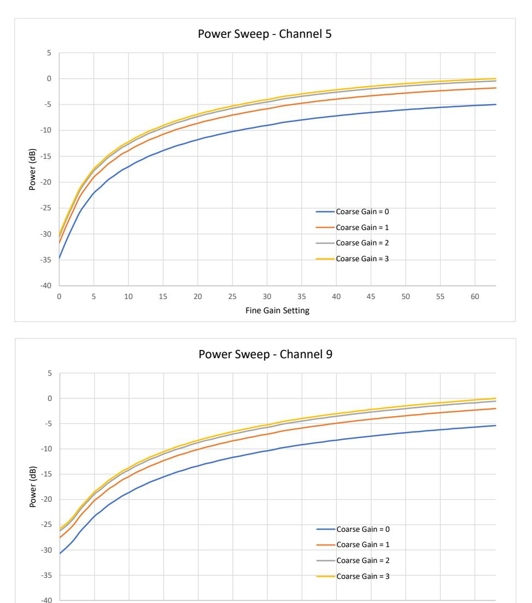
Figure 27: Typical TX power variation with coarse and fine gain
0 5 10 15 20 25 30 35 40 45 50 55 60
Fine Gain Setting
Channel 9: the maximum coarse gain setting is 2, and the setting 3 should not be used.
Channel 5: the recommended coarse gain setting is 2. There is only a marginal increase in TX power using coarse gain setting of 3, but there is a relatively large increase in current when it is applied. For further details see the Datasheet [5].
| ID |
Length
(octets) |
Type | Mnemonic | Description |
|---|---|---|---|---|
| 01:14 | 2 | RW | CHAN_CTRL | Channel control register |
Register file: 0x00-0x1 – General configuration registers, sub-register 0x14 of register file 0x01 is the channel control register. This is used to select transmit and receive channels, and configure preamble codes and some related parameters.
The fields of th e CHAN_CTRL register are defined as follows:
| REG:01:14 – CHAN_CTRL – Channel control register | ||||||||||||||||
|---|---|---|---|---|---|---|---|---|---|---|---|---|---|---|---|---|
| 31 30 29 28 27 26 25 24 23 22 21 20 19 18 17 16 15 14 13 12 11 10 | 9 | 8 | 7 | 6 | 5 | 4 | 3 | 2 | 1 | 0 | ||||||
| - | - | - | RX_PCODE | TX_PCODE | SFD | _TYPE | RF_CHAN | |||||||||
| 0 | 0 | 0 | 0 | 0 | 0 | 0 | 0 | 0 | 0 | 0 | 0 | 0 | 1 | 1 | 0 |
| Field | Description of fields within Sub-register 0x01:14 – Channel control | |||||||||
|---|---|---|---|---|---|---|---|---|---|---|
|
RF_CHAN
reg:01:14 bit:0 |
This selects the transmit and receive channel. Supported channels are 5, and 9. Setting bit 0
to 0 selects channel 5 and to 1 selects channel 9. For the complete configuration of TX and RX block for each channel following registers also need to be configured: Full selection of TX channel requires that the following parameters are also set appropriately: • Sub-register 0x07:1A – RF • Sub-register 0x07:1C – RF TX control register 2 • Sub-register 0x09:00 – PLL configuration |
|||||||||
|
For correct operation of the DW3000 and compliance to the IEEE802.15.4 standard [1], the
preamble code should be set according to the operating channel. For details of centre frequencies and preamble codes for the supported channels, please refer to section 2.6 – UWB channels and preamble codes. |
||||||||||
| SFD_TYPE | Thise bits select the SFD type. Four different SFD types are supported. These are listed in the | |||||||||
| Table 22. | ||||||||||
|
reg:01:14
bit:2-1 |
Table 22: SFD types | |||||||||
| SFD_TYPE (bits 2:1) | Sequence | Description | ||||||||
|
00
0+0-+00- IEEE 802.15.4 short 8-symbol SFD 01 ----+-00 Decawave-defined 8-symbols SFD |
||||||||||
|
10
----+-+--++--+00 Decawave-defined 16-symbols SFD |
||||||||||
| 11 | ---+--+- | IEEE 802.15.4z defined 8-symbol SFD | ||||||||
| Field | Description of fields within Sub-register 0x01:14 – Channel control |
|---|---|
| TX_PCODE | This field selects the preamble code used in the transmitter. The valid codes are 1 to 29. The |
| reg:01:14 | user should select the preamble code from those recommended for the selected channel and |
| bits:7–3 | the PRF they wish to use. The selection of the preamble code will set the PRF, selecting 1-8 |
| will set 16 MHz PRF, selecting 9-24 will set 64 MHz PRF. Section 2.6 – UWB channels and | |
| preamble codes details the preamble codes allowed in the supported channels. | |
| RX_PCODE | This field selects the preamble code used in the receiver. The valid codes are 1 to 29. The user |
| should select the preamble code from those recommended for the selected channel and the | |
|
reg:01:14
bits:12–8 |
PRF they wish to use. The selection of the preamble code will set the PRF, selecting 1-8 will |
| set 16 MHz PRF, selecting 9-24 will set 64 MHz PRF. Section 2.6 – UWB channels and preamble | |
| codes details the preamble codes allowed in the supported channels. | |
| - | Bits marked '-' are reserved. |
| reg:01:14 | |
| bits:15–13 |
| ID |
Length
(octets) |
Type | Mnemonic | Description |
|---|---|---|---|---|
| 01:18 | 4 | RW | LE_PEND_01 | Low Energy device address 0 and 1 |
Register file: 0x00-0x1 – General configuration registers, sub-register 0x18 of register file 0x01 is a register used for specifying the 16-bit addresses of LE devices for which there is data and PEND bit should be set in the ACK frame (as a response to a MAC Data Request command from that node). See also section 5.5.2 Frame pending bit. The LE_PEND_01 register contains the following bitmapped sub-fields:
| REG:01:18 – LE_PEND_01 – LE PEND address | |||||||||||||||||||||||||||
|---|---|---|---|---|---|---|---|---|---|---|---|---|---|---|---|---|---|---|---|---|---|---|---|---|---|---|---|
| 9 | 8 | 7 | 6 | 5 | 4 | 3 | 2 | 1 | 0 | ||||||||||||||||||
|
31 30 29 28 27 26 25 24 23 22 21 20 19 18 17 16 15 14 13 12 11 10
LE_ADDR1 |
LE_ADDR0 | ||||||||||||||||||||||||||
| 0 | 0 | 0 | 0 | 0 | 0 | 0 | 0 | ||||||||||||||||||||
| Field | Description of fields within Sub-register 0x01:18 – LE PEND address 0 and 1 |
|---|---|
|
LE_ADDR0
reg:01:18 |
Low Energy device 16-bit address. Host may program a 16-bit address of a node for which
it has pending data. Then when that node sends a MAC Data Request command, the device will reply with an ACK with PEND bit set. The host can then send data to that device in the |
| bits:15–0 |
following message. LE0_PEND bit must also be set.
Note AUTO_ACK bit in SYS_CFG, and frame filtering rules (e.g. to allow MAC commands) in FF_CFG must also be configured. Section 5.4 describes frame filtering in more detail. |
| Field | Description of fields within Sub-register 0x01:18 – LE PEND address 0 and 1 | |||||||
|---|---|---|---|---|---|---|---|---|
| LE_ADDR1 | Low Energy device 16-bit address. Host may program a 16-bit address of a node for which | |||||||
| it has pending data. Then when that node sends a MAC Data Request command, the device | ||||||||
| reg:01:18 | will reply with an ACK with PEND bit set. The host can then send data to that device in the | |||||||
| bits:31–16 | following message. LE1_PEND bit must also be set. | |||||||
| Note AUTO_ACK bit in SYS_CFG, and frame filtering rules (e.g. to allow MAC commands) | ||||||||
| in FF_CFG must also be configured. | ||||||||
| Section 5.4 describes frame filtering in more detail | ||||||||
| ID |
Length
(octets) |
Type | Mnemonic | Description |
|---|---|---|---|---|
| 01:1C | 4 | RW | LE_PEND_23 | Low Energy device address 2 and 3 |
Register file: 0x00-0x1 – General configuration registers, sub-register 0x1C of register file 0x01 is a register used for specifying the 16-bit addresses of LE devices for which there is data and PEND bit should be set in the ACK frame (as a response to a MAC Data Request command from that node). See also section 5.5.2 Frame pending bit. The LE_PEND_23 register contains the following bitmapped sub-fields:
| REG:01:1C – LE_PEND_23 – LE PEND address | ||||||||||||||||||||||||||||||||
|---|---|---|---|---|---|---|---|---|---|---|---|---|---|---|---|---|---|---|---|---|---|---|---|---|---|---|---|---|---|---|---|---|
| 31 30 29 28 27 26 25 24 23 22 21 20 19 18 17 16 15 14 13 12 11 10 | 9 | 8 | 7 | 6 | 5 | 4 | 3 | 2 | 1 | 0 | ||||||||||||||||||||||
| LE_ADDR3 | LE_ADDR2 | |||||||||||||||||||||||||||||||
| 0 | 0 | 0 | 0 | 0 | 0 | 0 | 0 | |||||||||||||||||||||||||
| Field | Description of fields within Sub-register 0x01:1C – LE PEND address 2 and 3 |
|---|---|
| LE_ADDR2 | Low Energy device 16-bit address. Host may program a 16-bit address of a node for which |
| it has pending data. Then when that node sends a MAC Data Request command, the device | |
|
reg:01:1C
bits:15–0 |
will reply with an ACK with PEND bit set. The host can then send data to that device in the |
| following message. LE2_PEND bit must also be set. | |
| Note AUTO_ACK bit in SYS_CFG, and frame filtering rules (e.g. to allow MAC commands) | |
| in FF_CFG must also be configured. | |
| Section 5.4 describes frame filtering in more detail. | |
| LE_ADDR3 | Low Energy device 16-bit address. Host may program a 16-bit address of a node for which |
| it has pending data. Then when that node sends a MAC Data Request command, the device | |
| reg:01:1C | will reply with an ACK with PEND bit set. The host can then send data to that device in the |
| bits:31–16 | following message. LE3_PEND bit must also be set. |
| Note AUTO_ACK bit in SYS_CFG, and frame filtering rules (e.g. to allow MAC commands) | |
| in FF_CFG must also be configured. | |
| Section 5.4 describes frame filtering in more detail. |
| ID |
Length
(octets) |
Type | Mnemonic | Description |
|---|---|---|---|---|
| 01:20 | 1 | RW | SPI_COLLISION | SPI collision status |
Register file: 0x00-0x1 – General configuration registers, sub-register 0x20 of register file 0x01 is a status register used for specifying which DW3000 internal block caused the SPI collision error event. The SPI_COLLISION register contains the following bitmapped sub-fields:
| REG:01:20 – SPI_COLLISION – SPI collision status | |||||||||
|---|---|---|---|---|---|---|---|---|---|
|
31 30 29 28 27 26 25 24 23 22 21 20 19 18 17 16 15 14 13 12 11 10
9 8 |
7 | 6 | 5 |
4
3 |
2 |
1
0 |
|||
| - | - | - | SPI_COLLISION | ||||||
| 0 | 0 | 0 |
0
0 |
0 |
0
0 |
||||
The individual sub-fields are described below:
| Field | Description of fields within Sub-register 0x01:20 – SPI collision status | |||||
|---|---|---|---|---|---|---|
| SPI_COLLISION | SPI collision status. If there is a case of a failed SPI transaction caused by internal | |||||
| contention the DW3000 will indicate this by the SPIERR event. This SPI_COLLISION status | ||||||
| reg:01:20 | indicates which internal DW3000 block has conflicted with the host SPI access: | |||||
| bits:4–0 | 0x10 = AON, | |||||
| 0x08 = CIA while accessing ROM, | ||||||
| 0x04 = CIA while accessing RAM, | ||||||
| 0x02 = digital receiver, | ||||||
| 0x01 = digital transmitter. | ||||||
| - | Bits marked '-' are reserved. | |||||
| reg:01:20 | ||||||
| bits:7–5 | ||||||
| ID |
Length
(octets) |
Type | Mnemonic | Description |
|---|---|---|---|---|
| 01:24 | 1 | RW | RDB_STATUS | RX double buffer status |
Register file: 0x00-0x1 – General configuration registers, sub-register 0x24 of register file 0x01 is a status register used for indicating the events following a reception of a frame when operating in double buffer mode. It contains a sub section of status bits which happen as a result of frame reception. More details on the operation of double buffering are given in sectio n 4.4 Double receive buffer. Th e RDB_STATUS register contains the following bitmapped sub-fields:
| REG:01:24 – RDB_STATUS – RX double buffer status | |||||||||
|---|---|---|---|---|---|---|---|---|---|
|
31 30 29 28 27 26 25 24 23 22 21 20 19 18 17 16 15 14 13 12 11 10
9 8 |
7 | 6 | 5 | 4 |
3
2 |
1 | 0 | ||
| CP_ERR1 | CIADONE1 | RXFR1 | RXFCG1 | CP_ERR0 |
CIADONE0
RXFR0 |
RXFCG0 | |||
| 0 | 0 | 0 | 0 |
0
0 |
0 | 0 | |||
The individual RDB_STATUS register sub-fields are described below:
| Field | Description of fields within Sub-register 0x01:24 – RX double buffer status |
|---|---|
| RXFCG0 | Receiver FCS Good. This event status bit reflects the result of the frame CRC checking. When |
| the frame has been received in RX_BUFFER_0 when operating in double buffer mode (see | |
| reg:01:24 | section 4.4 Double receive buffer). |
| bit:0 | When RXFCG0 is set to 1 it indicates that the CRC check result generated on the received data |
| matches with the 2-octet FCS sequence at the end of the frame. RXFR0 with RXFCG0 then | |
| indicates the correct reception a valid frame in RX_BUFFER_0. The RXFCG0 status bit can be | |
| cleared by writing a 1 to it. | |
| RXFR0 | Receiver Data Frame Ready. This event status bit is set to indicate that the completion of |
| the frame reception process of a frame in RX_BUFFER_0 when operating in double buffer | |
|
reg:01:24
bit:1 |
mode (see section 4.4 Double receive buffer). It is expected that this will be used as the main |
| "Receive" (interrupt) event signalling the completion of a frame reception in double buffer | |
| mode, and, that the receive event processing routine will examine the RXFCG0 and | |
| determine whether the frame has been received correctly, and also to check the CIADONE0 | |
| event status flag to validate the receive timestamp information. The RXFR0 status bit can be | |
| cleared by writing a 1 to it. | |
| CIADONE0 | CIA processing done on the CIR relating to a message in RX_BUFFER_0 when operating in |
| reg:01:24 | double buffer mode (see section 4.4 Double receive buffer). This event status bit is set to |
| bit:2 | indicate the completion by the CIA algorithm of the leading edge detection and its other |
|
adjustments of the receive timestamp information.
The resultant adjusted message RX |
|
| timestamp is then available in SET_1 register. The CIADONE0 status bit can be cleared by | |
| CP_ERR0 |
writing a 1 to it.
Scramble Timestamp Sequence (STS) error. The CPERR event status flag will get set if the |
| STS_TOAST bits are non-zero on the frame that was received in RX_BUFFER_0. | |
| reg:01:24 | The CP_ERR0 status bit can be cleared by writing a 1 to it. |
| bit:3 | |
| RXFCG1 | Receiver FCS Good. This event status bit reflects the result of the frame CRC checking. When |
| the frame has been received in RX_BUFFER_1 when operating in double buffer mode (see | |
| reg:01:24 | section 4.4 Double receive buffer). |
| bits:4 | When RXFCG1 is set to 1 it indicates that the CRC check result generated on the received data |
| matches with the 2-octet FCS sequence at the end of the frame. RXFR1 with RXFCG1 then | |
| indicates the correct reception a valid frame in RX_BUFFER_1. The RXFCG1 status bit can be | |
| cleared by writing a 1 to it. |
| Field | Description of fields within Sub-register 0x01:24 – RX double buffer status |
|---|---|
| RXFR1 | Receiver Data Frame Ready. This event status bit is set to indicate that the completion of the |
| frame reception process of a frame in RX_BUFFER_1 when operating in double buffer mode | |
| reg:01:24 | (see section 4.4 Double receive buffer). It is expected that this will be used as the main |
| bit:5 | "Receive" (interrupt) event signalling the completion of a frame reception in double buffer |
| mode, and, that the receive event processing routine will examine the RXFCG1 and determine | |
| whether the frame has been received correctly, and also to check the CIADONE1 event status | |
| flag to validate the receive timestamp information. The RXFR1 status bit can be cleared by | |
| writing a 1 to it. | |
| CIADONE1 | CIA processing done on the CIR relating to a message in RX_BUFFER_1 when operating in |
| double buffer mode (see section 4.4 Double receive buffer). This event status bit is set to | |
| reg:01:24 | indicate the completion by the CIA algorithm of the leading edge detection and its other |
| bit:6 |
adjustments of the receive timestamp information.
The resultant adjusted message RX |
| timestamp is then available in SET_2 register. The CIADONE1 status bit can be cleared by | |
| writing a 1 to it. | |
| CP_ERR1 | Scramble Timestamp Sequence (STS) error. The CPERR event status flag will get set if the |
| STS_TOAST bits are non-zero on the frame that was received in RX_BUFFER_1. | |
|
reg:01:24
bit:7 |
The CP_ERR1 status bit can be cleared by writing a 1 to it. |
| ID |
Length
(octets) |
Type | Mnemonic | Description |
|---|---|---|---|---|
| 01:28 | 1 | RW | RDB_DIAG | RX double buffer diagnostic configuration |
Register file: 0x00-0x1 – General configuration registers, sub-register 0x28 of register file 0x01 is a configuration register used for specifying the level of diagnostic data available after each receive event when operating in double buffer mode. More details on the operation of double buffering are given in sectio n 4.4 Double receive buffer. Th e RDB_DIAG register contains the following bitmapped sub-fields:
| REG:01:28 – RDB_DIAG – RX double buffer diagnostic configuration | ||||||||||
|---|---|---|---|---|---|---|---|---|---|---|
|
31 30 29 28 27 26 25 24 23 22 21 20 19 18 17 16 15 14 13 12 11 10
9 8 |
7 | 6 | 5 | 4 | 3 | 2 | 1 | 0 | ||
| - | - | - | - | - |
MODE
RDB_D |
|||||
| 0 | 0 | 0 | 0 | 0 | 0 | 0 | 0 | |||
The individual RDB_DIAG register sub-fields are described below:
| Field |
Description of fields within Sub-register 0x01:28 – RX double buffer diagnostic
configuration |
||||
|---|---|---|---|---|---|
|
RDB_DMODE
reg:01:28 bits:2-0 |
RX double buffer diagnostic mode. The are 3 levels of diagnostic data that can be logged
while RX double buffer mode is enabled: 0x1 – Minimal set (logs 7 registers as shown in Table 44) 0x2 – Medium set (logs 13 registers as shown in Table 44) and 0x4 – Full set. (logs all registers as shown in Table 44) More details on the operation of double buffering are given in section 4.4 Double receive buffer. Note: The registers saved into the double buffer sets (SET_1 and SET_2) will depend on the CIA diagnostic level as set by MINDIAG. |
||||
|
-
reg:01:28 bits:7–3 |
Bits marked '-' are reserved. | ||||
| ID |
Length
(octets) |
Type | Mnemonic | Description |
|---|---|---|---|---|
| 01:30 | 2 | RW | AES_CFG | AES configuration |
Register file: 0x00-0x1 – General configuration registers, sub-register 0x30 of register file 0x01 is a configuration register used for the configuration of the DW3000 AES block. The AES_CFG register contains the following bitmapped sub-fields:
| REG:01:30 – AES_CFG – AES configuration | ||||||||||||||||
|---|---|---|---|---|---|---|---|---|---|---|---|---|---|---|---|---|
| 31 30 29 28 27 26 25 24 23 22 21 20 19 18 17 16 15 14 13 12 11 10 | 9 | 8 | 7 | 6 | 5 | 4 | 3 | 2 | 1 | 0 | ||||||
| - | - | - |
_OTP
KEY |
_SEL
CORE |
_SIZE
TAG |
_SRC
KEY |
_LOAD
KEY |
_ADDR
KEY |
_SIZE
KEY |
MODE | ||||||
| 0 | 0 | 0 | 0 | 0 | 0 | 0 | 0 | 0 | 0 | 0 | 0 | 0 | 0 | 0 | 0 | |
The individual AES_CFG register sub-fields are described below:
| Field | Description of fields within Sub-register 0x01:30 – AES configuration |
|---|---|
| MODE | Mode of operation of AES core |
| 0: Encrypt – instructs the AES core to perform encryption on the input data | |
|
reg:01:30
bit:0 |
1: Decrypt– instructs the AES core to perform decryption on the input data |
| KEY_SIZE | AES Key Size, configures the size of the KEY to be used by the AES engine. |
| 0x0: 128 bits | |
|
reg:01:30
bits:2-1 |
0x1: 192 bits |
| 0x2: 256 bits | |
| 0x3 Unused and should not be configured |
| Field | Description of fields within Sub-register 0x01:30 – AES configuration |
|---|---|
| KEY_ADDR | Address offset of AES KEY when using one of the AES KEY from the AES RAM (8 x 128 bits) |
|
reg:01:30
bits:5-3 |
|
| KEY_LOAD | Load the AES KEY from AES KEY source (e.g. AES_KEY) into the AES core engine. This is done at |
| the start of a session and all packets in the same session use the same pre-loaded key. | |
| reg:01:30 | When using CCM mode, AES key should be loaded each time prior to starting of AES engine. |
| bit:6 | This key update is needed even if the key remains the same. |
| KEY_SRC | AES key source: This bit selects if the AES KEY to be used for AES operation is the one stored |
| in AES_KEY register (when this bit is set to 0) or (when this bit is set to 1) one of the KEYs | |
|
reg:01:30
bit:7 |
stored in OTP memory or in AES RAM, as specified by the KEYOTP bit. |
| TAG_SIZE | Size of AES tag field. This is also known as the message integrity code size field. The AES tag |
| field can be configured to be one of the following: | |
| reg:01:30 | 0x0: 0 bytes |
| bits:10-8 | 0x1: 4 bytes |
| 0x2: 6 bytes | |
| 0x3: 8 bytes | |
| 0x4: 10 bytes | |
| 0x5: 12 bytes | |
| 0x6: 14 bytes | |
| 0x7: 16 bytes | |
| CORE_SEL | AES Core select. DW3000 supports two AES engine cores: GCM and CCM*. This bit selects |
| which AES core is used, when set to 0, the GCM is used; when set to 1 CCM* is used. | |
| reg:01:30 | |
|
bit:11
KEY_OTP |
AES key Memory source. When this bit is set to 0, the AES KEY used for the AES operation is |
| taken from RAM (can be one of the 8 AES KEYs as specified by the KEYADDR) or when set to 1 | |
| reg:01:30 | the AES KEY will be the one stored in the OTP (see 7.3.1 OTP memory map). Note KEYSRC |
| bit:12 | needs to also be set to 1. |
| - | Bits marked '-' are reserved. |
| reg:01:30 | |
| bits:15–13 |
| ID |
Length
(octets) |
Type |
Mnemoni
c |
Description |
|---|---|---|---|---|
| 01:34 | 4 | RW | AES_IV0 |
st IV 32-bit word for AES GCM core
The 1 mode, or when AES-CCM* core is used, the 4-bytes of the 13 byte nonce (e.g. iv[12]) should be written into this register: i.e. iv[10], iv[9], iv[8], iv[7], where iv[10] is the least significant byte. |
Register file: 0x00-0x1 – General configuration registers, sub-register 0x34 of register file 0x01, this is the 1st IV 32-bit word for AES GCM core mode, or when AES-CCM* core is used, the 4-bytes of the 13 byte nonce (e.g. iv[12]) should be written into this register: i.e. iv[10], iv[9], iv[8], iv[7], where iv[10] is the least significant byte.
| ID |
Length
(octets) |
Type |
Mnemoni
c |
Description |
|---|---|---|---|---|
| 01:38 | 4 | RW | AES_IV1 |
nd IV 32-bit word for AES GCM core mode, or
The 2 when AES-CCM* core is used, the 4-bytes of the 13 byte nonce (e.g. iv[12]) should be written into this register: i.e. iv[6], iv[5], iv[4], iv[3], where iv[6] is the least significant byte |
Register file: 0x00-0x1 – General configuration registers, sub-register 0x38 of register file 0x01, this is the 2nd IV 32-bit word for AES GCM core mode, or when AES-CCM* core is used, the 4-bytes of the 13 byte nonce (e.g. iv[12]) should be written into this register: i.e. iv[6], iv[5], iv[4], iv[3], where iv[6] is the least significant byte.
| ID |
Length
(octets) |
Type | Mnemonic | Description |
|---|---|---|---|---|
| 01:3C | The 3rd IV 32-bit word for AES GCM core | |||
| AES_IV2 | mode, or when AES-CCM* core is used, the 4- | |||
| bytes of the 13 byte nonce (e.g. iv[12]) | ||||
| 4 | RW | should be written into this register: i.e. iv[2], | ||
| iv[1], iv[0], don't care, where iv[2] is the least | ||||
| significant byte |
Register file: 0x00-0x1 – General configuration registers, sub-register 0x3C of register file 0x01 this is the 3rd IV 32-bit word for AES GCM core mode, or when AES-CCM* core is used, the 4-bytes of the 13 byte nonce (e.g. iv[12]) should be written into this register: i.e. iv[2], iv[1], iv[0], don't care, where iv[2] is the least significant byte.
| ID |
Length
(octets) |
Type | Mnemonic | Description |
|---|---|---|---|---|
| 01:40 | When AES-CCM* core is used, the payload | |||
| 2 | RW | AES_IV3 | length needs to be programmed here. | |
| This is not used in the AES GCM core mode. |
Register file: 0x00-0x1 – General configuration registers, sub-register 0x40 of register file 0x01, is a 16-bit register which needs to contain the length of the payload which the AES engine is going to decrypt/encrypt. This register is not used in the AES GCM core mode.
| ID |
Length
(octets) |
Type | Mnemonic | Description |
|---|---|---|---|---|
| 01:42 | 2 | RW | AES_IV4 |
The two bytes of the 13 byte nonce (e.g.
iv[12]) should be written into this register: i.e. iv[12], iv[11], where iv[12] is the least significant byte. This is not used in the AES GCM core mode. |
Register file: 0x00-0x1 – General configuration registers, sub-register 0x42 of register file 0x01, is a 16-bit register which contains two bytes of the 13 byte nonce (e.g. iv[12]): i.e. iv[12], iv[11], where iv[12] is the least significant byte. This register is not used in the AES GCM core mode.
| ID |
Length
(octets) |
Type | Mnemonic | Description |
|---|---|---|---|---|
| 01:44 | 8 | RW | DMA_CFG | The DMA configuration register |
Register file: 0x00-0x1 – General configuration registers, sub-register 0x44 of register file 0x01, this is the configuration register for the AES-DMA engine. The AES-DMA Engine performs encryption/authentication of packets and transfers data from/to the RAMs/buffers.
The DMA_CFG register contains the following bitmapped sub-fields:
| REG:01:44 – DMA_CFG – DMA configuration (octets 0 to 3) | |||||||||||||||||||||||||||||||
|---|---|---|---|---|---|---|---|---|---|---|---|---|---|---|---|---|---|---|---|---|---|---|---|---|---|---|---|---|---|---|---|
| 31 30 29 28 27 26 25 24 23 22 21 20 19 18 17 16 15 14 13 12 11 10 | 9 | 8 | 7 | 6 | 5 | 4 | 3 | 2 | 1 | 0 | |||||||||||||||||||||
| - | - | - | - | - |
_SEL
_END CP |
DST_ADDR | DST_PORT | SRC_ADDR | SRC_PORT | ||||||||||||||||||||||
| 0 | 0 | 0 | 0 | 0 | 0 | 0 | 0 | 0 | 0 | 0 | 0 | 0 | 0 | 0 | 0 | 0 | 0 | 0 | 0 | 0 | 0 | 0 | 0 | 0 | 0 | 0 | 0 | 0 | 0 | 0 | 0 |
| REG:01:48 – DMA_CFG – DMA configuration (octets 4 to 7) | |||||||||||||||||||||||||||||||
| 31 30 29 28 27 26 25 24 23 22 21 20 19 18 17 16 15 14 13 12 11 10 | 9 | 8 | 7 | 6 | 5 | 4 | 3 | 2 | 1 | 0 | |||||||||||||||||||||
| - | - | - | - | - | - | - | PYLD_SIZE | HDR_SIZE | |||||||||||||||||||||||
| 0 | 0 | 0 | 0 | 0 | 0 | 0 | 0 | 0 | 0 | 0 | 0 | 0 | 0 | 0 | 0 | 0 | 0 | 0 | 0 | 0 | 0 | 0 | 0 | ||||||||
The individual DMA_CFG register sub-fields are described below:
| Field | Description of fields within Sub-register 0x01:44 – DMA configuration |
|---|---|
| SRC_PORT | Source memory port for DMA transfer |
| 0x0: AES scratch RAM | |
| reg:01:44 | 0x1: RX buffer 0 |
| bits:2-0 | 0x2: RX buffer 1 |
| 0x3: TX buffer | |
| 0x4-0x7: Unused | |
| SRC_ADDR | Address offset within source memory for DMA |
| transfer (0 – 1024 bytes) | |
|
reg:01:44
bits:12-3 |
|
| DST_PORT | Destination memory port for DMA transfer |
| 0x0: AES scratch RAM. | |
| reg:01:44 | 0x1: RX buffer 0 |
| bits:15-13 | 0x2: RX buffer 1 |
| 0x3: TX buffer | |
| 0x4: STS key register | |
| 0x5-0x7: Unused | |
| DST_ADDR | Address offset within destination memory for DMA |
| transfer (0 – 1024 bytes) | |
| reg:01:44 | |
|
bits:25-16
CP_END_SEL |
Select the endianess of the CP seed port. |
| 0 = BigEndian. | |
| reg:01:44 | 1= Little Endian |
| bit:26 | |
| - | Bits marked '-' are reserved. |
|
reg:01:44
bits:31–26 |
|
| HDR_SIZE | Size of header field in the packet to be transferred via the DMA (0 to 127 bytes) |
| reg:01:48 | Note, the payload length does not include MIC (TAG_SIZE) and FCS lengths. Thus if RX or TX |
| bits:6-0 | frame length is 100 bytes and header length is 10 bytes, MIC is 16 bytes and FCS is 2 bytes |
| then payload length is 100-10-16-2 = 72 bytes. | |
| PYLD_SIZE | Size of payload field in the packet to be transferred via the DMA (0 to 1023 bytes) |
| reg:01:48 | Note, the payload length does not include MIC (TAG_SIZE) and FCS lengths. Thus if RX or TX |
| bits:16:7 | frame length is 100 bytes and header length is 10 bytes, MIC is 16 bytes and FCS is 2 bytes |
| then payload length is 100-10-16-2 = 72 bytes. | |
| - | Bits marked '-' are reserved. |
| reg:01:48 | |
| bits:23–17 |
| ID |
Length
(octets) |
Type | Mnemonic | Description |
|---|---|---|---|---|
| 01:4C | 1 | RW | AES_START | Start AES operation |
Register file: 0x00-0x1 – General configuration registers, sub-register 0x4C of register file 0x01, this is the AES core operation register. The AES_START register contains the following bitmapped sub-fields:
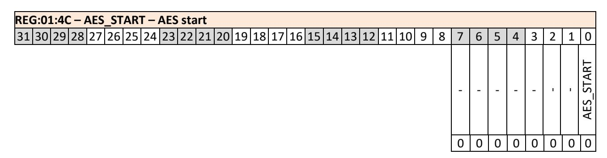
The individual AES_START register sub-fields are described below:
| Field | Description of fields within Sub-register 0x01:4C – AES start | |||||
|---|---|---|---|---|---|---|
| AES_START | Start AES operation. Set this bit to start AES operation, the bit will be cleared by AES core once | |||||
| operation starts. | ||||||
| reg:01:4C | ||||||
| bit:0 | ||||||
| - | Bits marked '-' are reserved. | |||||
| reg:01:4C | ||||||
| bits:7–1 | ||||||
| ID |
Length
(octets) |
Type |
Mnemonic
Description |
|
|---|---|---|---|---|
| 01:50 | 4 | RW | AES_STS | The AES Status |
Register file: 0x00-0x1 – General configuration registers, sub-register 0x50 of register file 0x01, this is the AES core status register. The AES_STS register contains the following bitmapped sub-fields:
| REG:01:50 – AES_STS – AES status | ||||||||
|---|---|---|---|---|---|---|---|---|
|
31 30 29 28 27 26 25 24 23 22 21 20 19 18 17 16 15 14 13 12 11 10
9 8 |
7 | 6 | 5 | 4 | 3 | 2 | 1 | 0 |
| - | - |
_FULL
M RA |
MPTY
_E M RA |
_CONF
M ME |
TRANS_ERR |
_ERR
AUTH |
AES_DONE | |
| 0 | 0 | 0 | 1 | 0 | 0 | 0 | 0 | |
The individual AES_STS register sub-fields are described below:
| Field | Description of fields within Sub-register 0x01:50 – AES status |
| AES_DONE | AES operation complete. Write 1 to clear. |
| reg:01:50 | |
| bit:0 | |
| AUTH_ERR | AES authentication error. Write 1 to clear. |
| 0: The tag/MIC that was supplied with the encrypted data has been validated correctly. | |
| reg:01:50 | 1: The tag/MIC that was supplied with the encrypted data has not been validated correctly, |
| bit:1 | therefore the protected (frame) content should not be trusted. |
| TRANS_ERR | Indicates error with DMA transfer to memory. Write 1 to clear. |
| This will occur when writing more data to a buffer than the buffer can hold. Size of data is | |
| reg:01:50 | |
| bit:2 | too big for the destination buffer. |
| MEM_CONF | Indicates access conflict between multiple masters (SPI host, CIA engine and AES-DMA |
| engine) trying to access same memory. Write 1 to clear. | |
| reg:01:50 | |
| bit:3 | |
| RAM_EMPTY | Indicates AES scratch RAM is empty. Write 1 to clear. |
| reg:01:50 | |
| bit:4 | |
| RAM_FULL | Indicates AES scratch RAM is full. Write 1 to clear. |
| reg:01:50 | |
| bit:5 | |
| - | Bits marked '-' are reserved. |
| reg:01:50 | |
| bits:7–6 |
| ID |
Length
(octets) |
Type | Mnemonic | Description |
|---|---|---|---|---|
| 01:54 | 16 | RW | AES_KEY | The 128-bit KEY for the AES GCM/CCM* core |
Register file: 0x00-0x1 – General configuration registers, sub-register 0x54 of register file 0x01, this is the 128-bit key (four 32-bit words) for the AES GCM/CCM* core.
| ID |
Length
(octets) |
Type | Mnemonic | Description | |
|---|---|---|---|---|---|
| 0x02 | 55 | - | STS_CONFIG | Scrambled Timestamp Sequence configuration and status | |
| registers | |||||
Register map register file 0x02 is concerned with the use of the DW3000 STS block. It contains a number of sub-registers. An overview of these is given by Table 23. Each of these sub-registers is separately described in the sub-sections below.
| OFFSET in Register 0x02 | Mnemonic | Description | |||
|---|---|---|---|---|---|
| 0x00 | STS_CFG | STS configuration | |||
| 0x04 | STS_CTRL | STS control | |||
| 0x08 | STS_STS | STS status | |||
| 0x0C | STS_KEY | STS 128-bit KEY | |||
| 0x1C | STS_IV | STS 128-bit IV | |||
| ID |
Length
(octets) |
Type | Mnemonic | Description |
|---|---|---|---|---|
| 0x02:00 | 2 | RW | STS_CFG | The STS configuration |
Register file: 0x02 – STS configuration and status , sub-register 0x00, this contains the configuration settings for STS generation. Th e STS_CFG register contains the following bitmapped sub-fields:
| REG:02:04 – STS_CFG – STS configuration | ||||||||||||||||
|---|---|---|---|---|---|---|---|---|---|---|---|---|---|---|---|---|
| 31 30 29 28 27 26 25 24 23 22 21 20 19 18 17 16 15 14 13 12 11 10 | 9 | 8 | 7 | 6 | 5 | 4 | 3 | 2 | 1 | 0 | ||||||
| - | - | - | - | - | - | - | - | CPS_LEN | ||||||||
| 0 | 0 | 0 | 1 | 0 | 0 | 0 | 0 | 0 | 0 | 0 | 0 | 0 | 1 | 1 | 1 | |
The individual STS_CFG register sub-fields are described below:
| Field | Description of fields within Sub-register 0x02:00 – STS configuration |
|---|---|
| CPS_LEN | STS length. This 8-bit field specifies the length of the STS in blocks of 8. The default CPS_LEN |
| value of 7 selects a STS length of ~64 μs (or 64 x 512 chips). A value of 3 gives the minimum | |
| reg:02:00 | supported STS length of 32. The maximum CPS_LEN value 255 results in an STS length of |
| bit:7-0 | ~2048 μs (i.e. 2048 x 512 chips). |
| - | Bits marked '-' are reserved. |
| reg:02:04 | N.B.: Any change in these bits field may cause the DW3000 to malfunction. |
| bits:7–2 |
| ID |
Length
(octets) |
Type | Mnemonic | Description |
|---|
| 02:04 | 1 | RW | STS_CTRL | The STS control |
Register file: 0x02 – STS configuration and status , sub-register 0x04, this contains the control bits of STS generation. The STS_CTRL register contains the following bitmapped sub-fields:
| REG:02:04 – STS_CTRL – STS control | |||||||||||
|---|---|---|---|---|---|---|---|---|---|---|---|
|
31 30 29 28 27 26 25 24 23 22 21 20 19 18 17 16 15 14 13 12 11 10
9 8 |
7 | 6 | 5 | 4 | 3 | 2 | 1 | 0 | |||
| - | - | - | - | - | - | RST_LAST |
_IV
LOAD |
||||
| 0 | 0 | 0 | 0 | 0 | 0 | 0 | 0 | ||||
The individual STS_CTRL register sub-fields are described below:
| Field | Description of fields within Sub-register 0x02:04 – STS control |
|---|---|
| LOAD_IV | Load STS_IV bit into the AES-128 block for the generation of STS. Writing 1 loads the bits. |
| Note: CP_SPC configuration must be set before asserting this bit. This bit has priority over | |
| reg:02:04 | RST_LAST below. |
| bit:0 | This is a self clearing bit. When a 1 is written to this bit it is cleared to 0 one clock cycle later. |
| RST_LAST | Start from last, when it is set to 1 the STS generation starts from the last count that was used |
| by the AES-128 block for the generation of the previous STS. | |
|
reg:02:04
bit:1 |
This is a self clearing bit. When a 1 is written to this bit it is cleared to 0 one clock cycle later. |
| - | Bits marked '-' are reserved. |
| reg:02:04 | |
| bits:7–2 |
| ID |
Length
(octets) |
Type | Mnemonic | Description |
|---|---|---|---|---|
| 02:08 | 2 | RW | STS_STS | The STS status |
Register file: 0x02 – STS configuration and status , sub-register 0x08, this contains the status of STS reception. Th e STS_STS register contains the following bitmapped sub-fields:
| REG:02:08 – STS_STS – STS status | ||||||||||||||||||||||||||||||
|---|---|---|---|---|---|---|---|---|---|---|---|---|---|---|---|---|---|---|---|---|---|---|---|---|---|---|---|---|---|---|
| 31 30 29 28 27 26 25 24 23 22 21 20 19 18 17 16 15 14 13 12 11 10 | 9 | 8 | 7 | 6 | 5 | 4 | 3 | 2 | 1 | 0 | ||||||||||||||||||||
| - | - | - | - | ACC_QUAL | ||||||||||||||||||||||||||
| 0 | 0 | 0 | 0 | 0 | 0 | 0 | 0 | 0 | 0 | 0 | 0 | 0 | 0 | 0 | 0 | |||||||||||||||
The individual STS_STS register sub-fields are described below:
| Field | Description of fields within Sub-register 0x02:08 – STS status |
| ACC_QUAL | STS accumulation quality. This 12-bit field reports a quality measure of the accumulation of |
| the STS. It is very important to assess ACC_QUAL before accepting that a receive timestamp | |
|
reg:02:08
bits:11-0 |
STS_TOA value has not been corrupted and is sufficiently good to be trusted in a two-way |
| ranging exchange. | |
| Please refer to in § 6 – Secure ranging / timestamping for more details on using this value. | |
| - | Bits marked '-' are reserved. |
| reg:02:08 | |
| bits:15–12 |
| ID |
Length
(octets) |
Type | Mnemonic | Description |
|---|---|---|---|---|
| 02:0C | 16 | RW | STS_KEY | The 128-bit KEY for the STS |
Register file: 0x02 – STS configuration and status , sub-register 0x0C, this is the 128-bit key (four 32-bit words) used by the AES-128 block for the generation of the scrambled timestamp sequence (STS) . (The lower order octets are at lower offset addresses). Please refer to in § 6 – Secure ranging / timestamping for more details on this process. The default value is 0x738123B B5E5A4ED 8DF43A20 C9A375FA.
| ID |
Length
(octets) |
Type | Mnemonic | Description |
|---|---|---|---|---|
| 02:1C | 16 | RW | STS_IV | The 128-bit IV for the STS |
Register file: 0x02 – STS configuration and status , sub-register 0x1C, this is the 128-bit IV (four 32-bit words) used by the AES-128 block for the generation of the scrambled timestamp sequence (STS) . (The lower order octets are at lower offset addresses). Please refer to in § 6 – Secure ranging / timestamping for more details on this process. Default value is 0x1.
Note: Sub-register 0x0F:48 – Counter debug contains the current value of the low 32-bits of the STS_IV.
| ID |
Length
(octets) |
Type | Mnemonic | Description |
|---|---|---|---|---|
| 0x03 | RW | RX_TUNE | Receiver tuning parameters |
Register map register file 0x03 is for control and configuration of the DW3000 receiver. The following tuning parameters should be configured depending on the channel used. They optimise the receiver performance, when 64 MHz PRF has been configured. Other sub-registers in this Register file are reserved and should not be modified.
| OFFSET in Register | Mnemonic | |||||||
|---|---|---|---|---|---|---|---|---|
| 0x03 | Channel 5 value | Channel 9 value | ||||||
| 0x1C | DGC_CFG0 | 0x10000240 | 0x10000240 | |||||
| 0x20 | DGC_CFG1 | 0x1b6da489 | 0x1b6da489 | |||||
| 0x38 | DGC_LUT_0 | 0x0001C0FD | 0x0002A8FE | |||||
| 0x3C | DGC_LUT_1 | 0x0001C43E | 0x0002AC36 | |||||
| 0x40 | DGC_LUT_2 | 0x0001C6BE | 0x0002A5FE | |||||
| 0x44 | DGC_LUT_3 | 0x0001C77E | 0x0002AF3E | |||||
| 0x48 | DGC_LUT_4 | 0x0001CF36 | 0x0002AF7d | |||||
| 0x4C | DGC_LUT_5 | 0x0001CFB5 | 0x0002AFB5 | |||||
| 0x50 | DGC_LUT_6 | 0x0001CFF5 | 0x0002AFB5 | |||||
Note : When 16 MHz PRF is used, then the RX_TUNE_EN bit (bit 0 in register DGC_CFG) needs to be cleared.
| ID |
Length
(octets) |
Type | Mnemonic | Description |
|---|---|---|---|---|
| 03:18 | 2 | RW | DGC_CFG | The RX tuning configuration register |
Register file: 0x03 – Receiver tuning parameters, sub-register 0x18, this is a RX tune configuration register, it contains the following bitmapped sub-fields:
| REG:03:18 – DGC_CFG – RX tune configuration | ||||||||||||||||||||||
|---|---|---|---|---|---|---|---|---|---|---|---|---|---|---|---|---|---|---|---|---|---|---|
| 31 30 29 28 27 26 25 24 23 22 21 20 19 18 17 16 15 14 13 12 11 10 | 9 | 8 | 7 | 6 | 5 | 4 | 3 | 2 | 1 | 0 | ||||||||||||
| - | THR_64 | RX_TUNE_EN | ||||||||||||||||||||
| 1 | 1 | 1 | 1 | 0 | 0 | 0 | 0 | 1 | 1 | 1 | 1 | 0 | 1 | 0 | 1 |
The individual DGC_CFG register sub-fields are described below:
| Field | Description of fields within Sub-register 0x03:18 – RX tune configuration |
|---|---|
| RX_TUNE_EN |
RX tuning enable bit. This bit should be set to 1 when 64 MHz PRF is used, and set to 0
otherwise. |
| reg:03:18 | |
| bit:0 | |
| THR_64 | RX tuning threshold configuration for 64 MHz PRF. This should be changed from the |
| default value of 0x38 to 0x32, to give a more optimised receiver performance. | |
| reg:03:18 | |
| bits:14-9 |
| Field | Description of fields within Sub-register 0x03:18 – RX tune configuration |
|---|---|
| - | Bits marked '-' are reserved. |
| reg:03:18 | |
| bits: various |
| ID |
Length
(octets) |
Type | Mnemonic | Description | |||||
|---|---|---|---|---|---|---|---|---|---|
| 03:60 | 4 | RW | DGC_DBG | Reports DGC information | |||||
Register file: 0x03 – Receiver tuning parameters, sub-register 0x60, this is a DGC reporting register, it contains the following bitmapped sub-fields:
| REG:03:60 – DGC_DBG – DGC_report | ||||||||||||||||||||||||||||||
|---|---|---|---|---|---|---|---|---|---|---|---|---|---|---|---|---|---|---|---|---|---|---|---|---|---|---|---|---|---|---|
| 31 30 29 28 27 26 25 24 23 22 21 20 19 18 17 16 15 14 13 12 11 10 | 9 | 8 | 7 | 6 | 5 | 4 | 3 | 2 | 1 | 0 | ||||||||||||||||||||
| DGC_DECISION | - | - | - | - | - | - | - | - | - | - | - | - | - | - | - | - | - | - | - | - | - | - | - | - | - | - | - | - | ||
The individual DGC_DBG register sub-fields are described below:
| Field | Description of fields within Sub-register 0x03:60 – DGC report |
|---|---|
| DGC_DECISION | DGC decision index. |
| reg:03:60 | |
| bits:30-28 | |
| - | Bits marked '-' are reserved. |
| reg:03:18 | |
| bits: various |
| ID |
Length
(octets) |
Type | Mnemonic | Description |
|---|---|---|---|---|
| 0x04 | 12 | RW | EXT_SYNC | External synchronisation control and RX calibration |
Register map register file 0x04 is for control of the DW3000 synchronisation hardware, and RX calibration function.
There is a separate application note giving details of the external synchronisation. Please consult with Decawave applications support team for details. The capabilities of the DW3000 with respect to external synchronisation are described briefly in section 7.1- External Synchronisation .
| OFFSET in Register 0x04 | Mnemonic | Description |
|---|---|---|
| 0x00 | EC_CTRL | External clock synchronisation counter configuration |
| 0x0C | RX_CAL | RX calibration block configuration |
| 0x14 | RX_CAL_RESI | RX calibration block result |
| 0x1C | RX_CAL_RESQ | RX calibration block result |
| 0x20 | RX_CAL_STS | RX calibration block status |
| ID |
Length
(octets) |
Type | Mnemonic | Description |
|---|---|---|---|---|
| 04:00 | 4 | RW | EC_CTRL | External clock synchronisation counter configuration |
Register file: 0x04 – External sync control and RX calibration, sub-register 0x00 is the External clock synchronisation counter configuration register, EC_CTRL. The EC_CTRL register is used to configure the external synchronisation mode. The EC_CTRL register contains the following sub-fields:
| REG:04:00 –EC_CTRL– External clock synchronisation counter configuration | |||||||||||||||||||||||||||||||
|---|---|---|---|---|---|---|---|---|---|---|---|---|---|---|---|---|---|---|---|---|---|---|---|---|---|---|---|---|---|---|---|
| 31 30 29 28 27 26 25 24 23 22 21 20 19 18 17 16 15 14 13 12 11 10 | 9 | 8 | 7 | 6 | 5 | 4 | 3 | 2 | 1 | 0 | |||||||||||||||||||||
| - | - | - | - | - | - | - | - | - | - | - | - | - | - | - | - | - | - | - | - |
MODE
_ OSTR |
OSTS_WAIT | - | - | - | |||||||
| 0 | 0 | 0 | 0 | 0 | 0 | 0 | 0 | 0 | 0 | 0 | 0 | 0 | 0 | 0 | 0 | 0 | 0 | 0 | 0 | 0 | 0 | 0 | 0 | 0 | 0 | 0 | 0 | 0 | 1 | 0 | 0 |
The fields of th e EC_CTRL register identified above are individually described below:
| Field | Description of fields within Sub-register 0x04:00 External clock sync control |
|---|---|
| - | Bits marked '-' are reserved. |
| reg:04:00 | |
| bits:various | |
| OSTS_WAIT | Wait counter used for external timebase reset. See 7.1.1 – One Shot Timebase Reset (OSTR) |
| Mode. | |
| reg:04:00 | |
| bits:10:3 | |
| OSTR_MODE | External timebase reset mode enable bit. For details of use, please refer to section 7.1.1 – |
| One Shot Timebase Reset (OSTR) Mode. | |
| reg:04:00 | |
| bit:11 |
| ID |
Length
(octets) |
Type | Mnemonic | Description |
|---|---|---|---|---|
| 04:0C | 4 | RW | RX_CAL | RX calibration block configuration |
Register file: 0x04 – External sync control and RX calibration, sub-register 0x0C is RX calibration block configuration register, RX_CAL. The RX_CAL register is used to configure the RX calibration block prior to enabling the RX operation. The RX_CAL register contains the following sub-fields:
| REG:04:0C –RX_CAL– RX calibration block configuration | |||||||||||||||||||||||||||||||
|---|---|---|---|---|---|---|---|---|---|---|---|---|---|---|---|---|---|---|---|---|---|---|---|---|---|---|---|---|---|---|---|
| 31 30 29 28 27 26 25 24 23 22 21 20 19 18 17 16 15 14 13 12 11 10 | 9 | 8 | 7 | 6 | 5 | 4 | 3 | 2 | 1 | 0 | |||||||||||||||||||||
| - | - | - | - | - | - | - | - | - | - | - | - | COMP_DLY | - | - | - | - | - | - | - | - | - | - | - | CAL_EN | - | - |
MODE
CAL_ |
||||
| 0 | 0 | 0 | 0 | 0 | 0 | 0 | 0 | 0 | 0 | 0 | 0 | 0 | 0 | 0 | 0 | 0 | 0 | 0 | 0 | 0 | 0 | 0 | 0 | 0 | 0 | 0 | 0 | 0 | 0 | 0 | 0 |
The fields of th e RX_CAL register identified above are individually described below:
| Field | Description of fields within Sub-register 0x04:0C RX |
|---|---|
| - | Bits marked '-' are reserved. |
| reg:04:0C | |
| bits:various | |
| CAL_MODE | RX calibration mode: |
| 0 = normal mode, should be set to this for normal receiver operation | |
| reg:04:0C | 1 = calibration mode, needs to be set when RX calibration is perfomed |
| bits:1:0 | 2, 3 = reserved vaues |
| CAL_EN | RX calibration enable. |
| Set this to 1 to start RX calibration. The bit will self-clear when calibration is finished. The | |
|
reg:04:0C
bit:4 |
RX_CAL_STS will be set when calibration is complete. |
| COMP_DLY | RX calibration tuning value. The host should set this to 0x2, for optimal performance. Other |
| values should not be used. | |
| reg:04:0C | |
| bits:19:16 |
| ID |
Length
(octets) |
Type | Mnemonic | Description |
|---|---|---|---|---|
| 04:14 | 4 | RW | RX_CAL_RESI | RX calibration block result I |
Register file: 0x04 – External sync control and RX calibration, sub-register 0x14 is RX calibration block result register. This register reports the result once the RX calibration is complete. It is a 29-bit register. If a value of 0x1fffffff is read back then the calibration has failed and the host should not use receiver function. The device RX calibration should be repeated. If either RX_CAL_RESI or RX_CAL_RESQ report failure the RX cal should be repeated.
|
Length
ID (octets) |
Type | Mnemonic | Description | |
|---|---|---|---|---|
| 04:1C | 4 | RW | RX_CAL_RESQ | RX calibration block result Q |
Register file: 0x04 – External sync control and RX calibration, sub-register 0x1C is RX calibration block result register. This register reports the result once the RX calibration is complete. It is a 29-bit register. If a value of 0x1fffffff is read back then the calibration has failed and the host should not use receiver function. The device RX calibration should be repeated. If either RX_CAL_RESI or RX_CAL_RESQ report failure the RX cal should be repeated.
| ID |
Length
(octets) |
Type | Mnemonic | Description |
|---|---|---|---|---|
| 04:20 | 1 | RW | RX_CAL_STS | RX calibration block status |
Register file: 0x04 – External sync control and RX calibration, sub-register 0x20 is RX calibration block status register. This register reports the status once the RX calibration is complete. It is a single bit register. If bit 0 is set, the RX calibration is complete, host can write 1 to clear.
| ID |
Length
(octets) |
Type | Mnemonic | Description |
|---|---|---|---|---|
| 0x05 | 47 | - | GPIO_CTRL | General Purpose Input-Output control registers |
Register map register file 0x05 is concerned with the use of the GPIO. It contains a number of sub-registers. An overview of these is given by Table 25. Each of these sub-registers is separately described in the subsections below.
Note: the GPIO clocks need to be turned on, before enabling or disabling the GPIO mode or value. The GPIO clocks are enabled by setting GPIO_CLK_EN, GPIO_DCLK_EN an d GPIO_DRST_N in Sub-register 0x11:04 – Clock control
|
OFFSET in Register
0x05 |
Mnemonic | Description |
|---|---|---|
| 0x00 | GPIO_MODE | GPIO Mode Control Register |
| 0x04 | GPIO_PULL_EN | GPIO Drive Strength and Pull Control |
| 0x08 | GPIO_DIR | GPIO Direction Control Register |
| 0x0C | GPIO_OUT | GPIO Data Output Register |
| 0x10 | GPIO_IRQE | GPIO Interrupt Enable |
|
OFFSET in Register
0x05 |
Mnemonic | Description |
|---|---|---|
| 0x14 | GPIO_ISTS | GPIO Interrupt Status |
| 0x18 | GPIO_ISEN | GPIO Interrupt Sense Selection |
| 0x1C | GPIO_IMODE | GPIO Interrupt Mode (Level / Edge) |
| 0x20 | GPIO_IBES | GPIO Interrupt "Both Edge" Select |
| 0x24 | GPIO_ICLR | GPIO Interrupt Latch Clear |
| 0x28 | GPIO_IDBE | GPIO Interrupt De-bounce Enable |
| 0x2C | GPIO_RAW | GPIO Raw State |
| ID |
Length
(octets) |
Type | Mnemonic | Description | |||||
|---|---|---|---|---|---|---|---|---|---|
| 05:00 | 4 | RW | GPIO_MODE | GPIO mode control register | |||||
Register file: 0x05 – GPIO control and status, sub-register 0x00 is the GPIO Mode Control Register, GPIO_MODE. The GPIO_MODE register is used to select whether the GPIO is operating as a GPIO or has another special function. The GPIO_MODE register contains the following sub-fields:
| REG:05:00 – GPIO_MODE – GPIO mode control register | |||||||||||||||||||||||||||||||
|---|---|---|---|---|---|---|---|---|---|---|---|---|---|---|---|---|---|---|---|---|---|---|---|---|---|---|---|---|---|---|---|
| 31 30 29 28 27 26 25 24 23 22 21 20 19 18 17 16 15 14 13 12 11 10 | 9 | 8 | 7 | 6 | 5 | 4 | 3 | 2 | 1 | 0 | |||||||||||||||||||||
| - | - | - | - | - | MSGP8 | MSGP7 | MSGP6 | MSGP5 | MSGP4 | MSGP3 | MSGP2 | MSGP1 | MSGP0 | ||||||||||||||||||
| 0 | 0 | 0 | 0 | 0 | 0 | 0 | 0 | 0 | 0 | 0 | 0 | 0 | 0 | 0 | 0 | 0 | 0 | 0 | 0 | 0 | 0 | 0 | 0 | 0 | 0 | 0 | 0 | 0 | 0 | 0 | 0 |
The fields of th e GPIO_MODE register identified above are individually described below:
| Field | Description of fields within Sub-register 0x05:00 – GPIO mode control |
|---|---|
| MSGP0 | Mode Selection for GPIO0/RXOKLED. Allowed values are: |
| 000: The pin operates as GPIO0 – This is the default (reset) state. | |
| reg:05:00 | 001: The pin operates as the RXOKLED output. |
| bits:2-0 | 010: The pin operates as PDOA_SW_0, it will go high when device is in TX state. |
| 011 – 111: Reserved. Do not select this value. | |
| When operating as the RXOKLED driver, the output is asserted briefly when the receiver | |
| completes the reception of a frame with a good FCS/CRC. The on time for the RXOKLED | |
| depends on the blink time set in Sub-register 0x11:16 – LED control. | |
| Note: Lighting LEDs will drain power in battery-powered applications. |
| Field | Description of fields within Sub-register 0x05:00 – GPIO mode control |
|---|---|
| MSGP1 | Mode Selection for GPIO1/SFDLED. Allowed values are: |
| 000: The pin operates as GPIO1– This is the default (reset) state. | |
| reg:05:00 | 001: The pin operates as the SFDLED output. |
| bits:5-3 | 010: The pin operates as PDOA_SW_1, it will go high when device is in RX state. |
| 011 – 111: Reserved. Do not select this value. | |
| When operating as the driver, the output is asserted briefly when the receiver detects the SFD | |
| sequence in the RX packet. The on time is determined by the blink time configuration set in | |
| Sub-register 0x11:16 – LED control | |
| Note: Lighting LEDs will drain power in battery-powered applications. | |
| MSGP2 | Mode Selection for GPIO2/RXLED. Allowed values are: |
| 000: The pin operates as the GPIO2 output – This is the default (reset) state. | |
| reg:05:00 | 001: The pin operates as the RXLED output. |
| bits:8-6 | 010: The pin operates as PDOA_SW_2, it will go high when device is receiving or transmitting |
| from RF port 1. | |
| 011 – 111: Reserved. Do not select this value. | |
| When operating as the RXLED driver, the output is asserted when the receiver is on, and stays | |
| on for a brief period after the receiver is turned off. The minimum on time is determined by | |
| the blink time configurable in Sub-register 0x11:16 – LED control. | |
| Note: Lighting LEDs will drain power in battery-powered applications. | |
| MSGP3 | Mode Selection for GPIO3/TXLED. Allowed values are: |
| 000: The pin operates as GPIO3– This is the default (reset) state. | |
| reg:05:00 | 001: The pin operates as the TXLED output. |
| bits:11-9 | 010: The pin operates as PDOA_SW_3, it will go high when device is receiving or transmitting |
| from RF port 2 | |
| 011 – 111: Reserved. Do not select this value. | |
| When operating as the TXLED driver, the output is asserted briefly when the transmitter | |
| completes sending a packet. The blink time is configurable via Sub-register 0x11:16 – LED | |
| control. Note: Lighting LEDs will drain power in battery-powered applications. | |
| MSGP4 | Mode Selection for GPIO4/EXTPA. Allowed values are: |
| 000: The pin operates as GPIO4– This is the default (reset) state. | |
| reg:05:00 | 001: The pin is configured for use as EXTPA (External Power Amplifier). This pin can enable an |
| bits:14-12 | external Power Amplifier. |
| 010: IRQ | |
| 010 – 111: Reserved. Do not select this value. | |
| Refer to § 7.1 External Synchronisation for further information on the use of EXTPA. | |
| MSGP5 | Mode Selection for GPIO5/EXTTXE. Allowed values are: |
| 000: The pin operates as GPIO5 – This is the default (reset) state. | |
| reg:05:00 | 001: The pin is configured for use as EXTTXE (External Transmit Enable). This pin goes high |
| bits:17-15 | when the DW3000 is in transmit mode. |
| 010 – 111: Reserved. Do not select this value. | |
| Refer to § 7.1 External Synchronisation for further information on the use of EXTTXE. | |
| MSGP6 | Mode Selection forGPIO6/EXTRXE. Allowed values of MSGP6 are: |
| 000: The pin operates as GPIO6– This is the default (reset) state. | |
| reg:05:00 | 001: The pin is configured for use as EXTRXE (External Receiver Enable). This pin goes high |
| bits:20-18 | when the DW3000 is in receive mode. |
| 010 – 111: Reserved. Do not select this value. | |
| Refer to § 7.1 External Synchronisation for further information on the use of EXTRXE. |
| Field | Description of fields within Sub-register 0x05:00 – GPIO mode control |
|---|---|
| MSGP7 | Mode Selection for GPIO7. Values are: |
| 000: Default (reset) state: The pin operates as "SYNC" input, which is a reserved test function. | |
| reg:05:00 | 001: The pin operates as GPIO7. |
| bits:23-21 | 010 – 111: Reserved. Do not select this value. |
| MSGP8 | Mode Selection for IRQ/GPIO8. Allowed values are: |
| 000: The pin operates as the IRQ output – This is the default (reset) state. | |
| reg:05:00 | 001: The pin operates as GPIO8. |
| bits:26-24 | 010 – 111: Reserved. Do not select this value. |
| - | Bits marked '-' are reserved. |
| reg:05:00 | |
| bits:31–27 |
| ID |
Length
(octets) |
Type | Mnemonic | Description | |||||
|---|---|---|---|---|---|---|---|---|---|
| 05:04 |
2
RW GPIO_PULL_EN |
GPIO drive strength and pull control | |||||||
Register file: 0x05 – GPIO control and status, sub-register 0x04 can be used to lower the drive strength of the GPIOs. Setting to 0 will lower the drive strength.
The GPIO_PULL_EN register contains the following sub-fields:
| REG:05:04 – GPIO_PULL_EN – GPIO drive strength control | ||||||||||||||||
|---|---|---|---|---|---|---|---|---|---|---|---|---|---|---|---|---|
| 31 30 29 28 27 26 25 24 23 22 21 20 19 18 17 16 15 14 13 12 11 10 | 9 | 8 | 7 | 6 | 5 | 4 | 3 | 2 | 1 | 0 | ||||||
| - | - | - | - | - | - | - | GPEN 8 | GPEN 7 | GPEN 6 | GPEN 5 |
4
GPEN |
3
GPEN |
2
GPEN |
1
GPEN |
0
GPEN |
|
| 0 | 0 | 1 | 1 | 0 | 0 | 0 | 1 | 1 | 1 | 1 | 1 | 1 | 1 | 1 | 1 | |
| ID |
Length
(octets) |
Type | Mnemonic | Description |
|---|---|---|---|---|
| 05:08 | 2 | RW | GPIO_DIR | GPIO direction control register |
Register file: 0x05 – GPIO control and status, sub-register 0x08 is the GPIO Direction Control Register, GPIO_DIR. Th e GPIO_DIR register applies to the GPIO pins when they are selected to operate as GPIOs via the GPIO_MODE register. It contains a bit for each GPIO to individually configure that GPIO as an input or an output. A GDP direction bit value of 1 means the pin is an input. A GDP bit value of 0 means the pin is an output.
The GPIO_DIR register contains the following sub-fields:
| REG:05:08 – GPIO_DIR – GPIO direction control register | ||||||||||||||||
|---|---|---|---|---|---|---|---|---|---|---|---|---|---|---|---|---|
| 31 30 29 28 27 26 25 24 23 22 21 20 19 18 17 16 15 14 13 12 11 10 | 9 | 8 | 7 | 6 | 5 | 4 | 3 | 2 | 1 | 0 | ||||||
| - | - | - | - | - | - | - |
8
GDP |
7
GDP |
6
GDP |
GDP5 | GDP4 | GDP3 | GDP2 | GDP1 | GDP0 | |
| 0 | 0 | 0 | 0 | 0 | 0 | 0 | 1 | 1 | 1 | 1 | 1 | 1 | 1 | 1 | 1 |
The fields of th e GPIO_DIR register identified above are individually described below:
| Field | Description of fields within Sub-register 0x05:08 – GPIO direction |
|---|---|
| GDP0 | Direction Selection for GPIO0. Reading this bit shows the direction setting for GPIO0.Values: |
|
reg:05:08
bit:0 |
1 = input, 0 = output. |
| GDP1 | Direction Selection for GPIO1. (See GDP0). |
|
reg:05:08
bit:1 |
|
| GDP2 | Direction Selection for GPIO2. (See GDP0). |
|
reg:05:08
bit:2 |
|
| GDP3 | Direction Selection for GPIO3. (See GDP0). |
|
reg:05:08
bit:3 |
|
| GDP4 | Direction Selection for GPIO4. (See GDP0). |
|
reg:05:08
bit:4 |
|
| GDP5 | Direction Selection for GPIO5. (See GDP0). |
| reg:05:08 | |
|
bit:5
GDP6 |
Direction Selection for GPIO6. (See GDP0). |
| reg:05:08 | |
| bit:6 | |
|
GDP7
reg:05:08 |
Direction Selection for GPIO7. (See GDP0). |
| bit:7 | |
| GDP8 | Direction Selection for GPIO8. (See GDP0). |
| reg:05:08 | |
|
bit:8
- |
Bits marked '-' are reserved. |
| reg:05:08 | |
| bits:15–9 |
| ID |
Length
(octets) |
Type | Mnemonic | Description |
|---|---|---|---|---|
| 05:0C | 2 | RW | GPIO_OUT | GPIO data output configuration register |
Register file: 0x05 – GPIO control and status, sub-register 0x0C is the GPIO data output register. The GPIO_OUT register applies to the GPIO pins when they are selected to operate as GPIO outputs via the GPIO_MODE and GPIO_DIR registers. It contains a bit for each GPIO pin to individually select the data to output on the GPIO output pin. When reading from the GPIO_OUT register output value bits will show the
current output setting for the GPIO pins. Note, this does not mean this is being output since that depends also on the appropriate selection of the GPIO_MODE and GPIO_DIR registers.
The GPIO_OUT register contains the following sub-fields:
| REG:05:0C – GPIO_OUT – GPIO data output configuration | ||||||||||||||||||||||||||||||
|---|---|---|---|---|---|---|---|---|---|---|---|---|---|---|---|---|---|---|---|---|---|---|---|---|---|---|---|---|---|---|
| 31 30 29 28 27 26 25 24 23 22 21 20 19 18 17 16 15 14 13 12 11 10 | 9 | 8 | 7 | 6 | 5 | 4 | 3 | 2 | 1 | 0 | ||||||||||||||||||||
| - | - | - | - | - | - | - |
8
GOP |
GOP7 | GOP6 | GOP5 | GOP4 | GOP3 | GOP2 | GOP1 | GOP0 | |||||||||||||||
| 0 | 0 | 0 | 0 | 0 | 0 | 0 | 0 | 0 | 0 | 0 | 0 | 0 | 0 | 0 | 0 | |||||||||||||||
The fields of th e GPIO_OUT register identified above are individually described below:
| Field | Description of fields within Sub-register 0x05:0C – GPIO data output configuration |
|---|---|
|
GOP0
reg:05:0C bit:0 |
Output state setting for the GPIO0 output. Reading this bit shows the current setting for
GPIO0. Value: 1 = logic 1 voltage high output and, value 0 = logic 1 voltage low output. |
|
GOP1
reg:05:0C bit:1 |
Output state setting for GPIO1. (See GOP0). |
|
GOP2
reg:05:0C bit:2 |
Output state setting for GPIO2. (See GOP0). |
|
GOP3
reg:05:0C bit:3 |
Output state setting for GPIO3. (See GOP0). |
|
GOP4
reg:05:0C bit:4 |
Output state setting for GPIO4. (See GOP0). |
|
GOP5
reg:05:0C bit:5 |
Output state setting for GPIO5. (See GOP0). |
|
GOP6
reg:05:0C bit:6 |
Output state setting for GPIO6. (See GOP0). |
|
GOP7
reg:05:0C bit:7 |
Output state setting for GPIO7. (See GOP0). |
|
GOP8
reg:05:0C bit:8 |
Output state setting for GPIO8. (See GOP0). |
|
-
reg:05:08 bits:15–9 |
Bits marked '-' are reserved. |
| ID |
Length
(octets) |
Type | Mnemonic | Description |
|---|---|---|---|---|
| 05:10 | 2 | RW | GPIO_IRQE | GPIO interrupt enable |
Register file: 0x05 – GPIO control and status, sub-register 0x10 is the GPIO interrupt enable register. The GPIO_IRQE register allows a GPIO input pin to be selected as an interrupt source into the DW3000. Additional configuration registers GPIO_IMODE, GPIO_ISEN, GPIO_IBES and GPIO_IDBE allow the interrupt to be set as level sensitive with control of whether it is the low or high state that generates the interrupt, or as edge sensitive with control of the edge(s) that generates the interrupt, and includes a configurable debounce circuit that can be used to ignore transients on the input. Th e GPIO_IRQE register contains a bit for each GPIO pin to allow each to be individually selected as interrupt source. Setting the appropriate bit to 1 enables the corresponding GPIO input as an interrupt source, a value of 0 disables that interrupt. When a GPIO interrupt is triggered it is signalled to the host via the GPIOIRQ event status bit in Sub-register 0x00:44 – System event status . The bits of th e GPIO_IRQE register are as following:
| REG:05:10 – GPIO_IRQE – GPIO interrupt enable register | ||||||||||||||||
|---|---|---|---|---|---|---|---|---|---|---|---|---|---|---|---|---|
| 31 30 29 28 27 26 25 24 23 22 21 20 19 18 17 16 15 14 13 12 11 10 | 9 | 8 | 7 | 6 | 5 | 4 | 3 | 2 | 1 | 0 | ||||||
| - | - | - | - | - | - | - | GIRQE8 | GIRQE7 | GIRQE6 | GIRQE5 | GIRQ E4 | GIRQ E3 | GIRQE2 | GIRQE1 | GIRQE0 | |
| 0 | 0 | 0 | 0 | 0 | 0 | 0 | 0 | 0 | 0 | 0 | 0 | 0 | 0 | 0 | 0 | |
The bits identified above are individually described below:
| Field | Description of fields within Sub-register 0x05:10 – GPIO interrupt enable |
|---|---|
| GIRQE0 | GPIO IRQ Enable for GPIO0 input. Value 1 = enable GPIO input GPIO0 as an interrupt source. |
|
reg:05:10
bit:0 |
Value 0 = GPIO0 is not an interrupt source. |
| GIRQE1 | GPIO IRQ Enable for GPIO1 input. Value 1 = enable, 0 = disable. |
|
reg:05:10
bit:1 |
|
| GIRQE2 | GPIO IRQ Enable for GPIO2 input. Value 1 = enable, 0 = disable. |
|
reg:05:10
bit:2 |
|
| GIRQE3 | GPIO IRQ Enable for GPIO3 input. Value 1 = enable, 0 = disable. |
|
reg:05:10
bit:3 |
|
| GIRQE4 | GPIO IRQ Enable for GPIO4 input. Value 1 = enable, 0 = disable. |
|
reg:05:10
bit:4 |
|
| GIRQE5 | GPIO IRQ Enable for GPIO5 input. Value 1 = enable, 0 = disable. |
| reg:05:10 | |
| bit:5 | |
| GIRQE6 | GPIO IRQ Enable for GPIO6 input. Value 1 = enable, 0 = disable. |
|
reg:05:10
bit:6 |
|
| GIRQE7 | GPIO IRQ Enable for GPIO7 input. Value 1 = enable, 0 = disable. |
| reg:05:10 | |
| bit:7 | |
| GIRQE8 | GPIO IRQ Enable for GPIO8 input. Value 1 = enable, 0 = disable. |
|
reg:05:10
bit:8 |
|
| - | Bits marked '-' are reserved and should be written as zero. |
| reg:05:10 | |
| Bits:15–9 |
| ID |
Length
(octets) |
Type | Mnemonic | Description |
|---|---|---|---|---|
| 05:14 | 2 | RW | GPIO_ISTS | GPIO interrupt status |
Register file: 0x05 – GPIO control and status, sub-register 0x14 is the GPIO interrupt status register. The GPIO_ISTS register acts to set the state/event that gives rise to a GPI interrupt. Assuming that the GPIO is an input and that it is enabled as an interrupt via the GPIO_IRQE register, then th e GPIO_IMODE register together wit h GPIO_ISEN selects whether the interrupt is level or edge sensitive, and this GPIO_ISTS register selects which level or edge is the state/event that causes the interrupt. The GPIO_ISTS bits are as follows:
| REG:05:14 – GPIO_ISTS– GPIO interrupt status | ||||||||||||||||
|---|---|---|---|---|---|---|---|---|---|---|---|---|---|---|---|---|
| 31 30 29 28 27 26 25 24 23 22 21 20 19 18 17 16 15 14 13 12 11 10 | 9 | 8 | 7 | 6 | 5 | 4 | 3 | 2 | 1 | 0 | ||||||
| - | - | - | - | - | - | - |
8
GISTS |
7
GISTS |
6
GISTS |
GISTS5 |
4
GISTS |
GISTS3 | GISTS2 | GISTS1 |
0
GISTS |
|
| 0 | 0 | 0 | 0 | 0 | 0 | 0 | 0 | 0 | 0 | 0 | 0 | 0 | 0 | 0 | 0 | |
| The bits of the GPIO_ISTS register identified above are individually described below: | |||
|---|---|---|---|
| Field | Description of fields within Sub-register 0x05:14 – GPIO interrupt status |
|---|---|
|
GISTS0
reg:05:14 bit:0 |
Value 1 means GPIO0 gave rise to the GPIOIRQ SYS_STATUS event. |
|
GISTS1
reg:05:14 bit:1 |
Value 1 means GPIO1 gave rise to the GPIOIRQ SYS_STATUS event. |
|
GISTS2
reg:05:14 bit:2 |
Value 1 means GPIO2 gave rise to the GPIOIRQ SYS_STATUS event. |
|
GISTS3
reg:05:14 bit:3 |
Value 1 means GPIO3 gave rise to the GPIOIRQ SYS_STATUS event. |
|
GISTS4
reg:05:14 bit:4 |
Value 1 means GPIO4 gave rise to the GPIOIRQ SYS_STATUS event |
|
GISTS5
reg:05:14 bit:5 |
Value 1 means GPIO5 gave rise to the GPIOIRQ SYS_STATUS event. |
|
GISTS6
reg:05:14 bit:6 |
Value 1 means GPIO6 gave rise to the GPIOIRQ SYS_STATUS event. |
|
GISTS7
reg:05:14 bit:7 |
Value 1 means GPIO7 gave rise to the GPIOIRQ SYS_STATUS event. |
|
GISTS8
reg:05:14 bit:8 |
Value 1 means GPIO8 gave rise to the GPIOIRQ SYS_STATUS event. |
| Field | Description of fields within Sub-register 0x05:14 – GPIO interrupt status |
|---|---|
| - | Bits marked '-' are reserved and should be written as zero. |
| reg:05:14 | |
| bits:15–9 |
| ID |
Length
(octets) |
Type | Mnemonic | Description |
|---|---|---|---|---|
| 05:18 | 2 | RW | GPIO_ISEN | GPIO interrupt sense selection |
Register file: 0x05 – GPIO control and status, sub-register 0x18 is the GPIO interrupt sense selection register. The GPIO_ISEN register acts to set the state/event that gives rise to a GPI interrupt. Assuming that the GPIO is an input and that it is enabled as an interrupt via the GPIO_IRQE register, then the GPIO_IMODE register selects whether the interrupt is level or edge sensitive, and this register GPIO_ISENGPIO_ISEN selects which level or edge is the state/event that causes the interrupt. The GPIO_ISEN register contains a bit for each GPIO pin to allow each to be individually configured. The bits are as follows:
| REG:05:18 – GPIO_ISEN – GPIO interrupt sense selection register | |||||||||||||||||||||||||||||||
|---|---|---|---|---|---|---|---|---|---|---|---|---|---|---|---|---|---|---|---|---|---|---|---|---|---|---|---|---|---|---|---|
| 31 30 29 28 27 26 25 24 23 22 21 20 19 18 17 16 15 14 13 12 11 10 | 9 | 8 | 7 | 6 | 5 | 4 | 3 | 2 | 1 | 0 | |||||||||||||||||||||
| - | - | - | - | - | - | - | - | - | - | - | - | - | - | - | - | - | - | - | - | - | - | - | GISEN8 | GISEN7 | GISEN6 | GISEN5 | GISEN4 | GISEN3 | GISEN2 | GISEN1 | GISEN0 |
| 0 | 0 | 0 | 0 | 0 | 0 | 0 | 0 | 0 | 0 | 0 | 0 | 0 | 0 | 0 | 0 | 0 | 0 | 0 | 0 | 0 | 0 | 0 | 0 | 0 | 0 | 0 | 0 | 0 | 0 | 0 | 0 |
The bits of the GPIO_ISEN register identified above are individually described below:
| Field | Description of fields within Sub-register 0x05:18 – GPIO interrupt sense selection |
|---|---|
|
GISEN0
reg:05:18 bit:0 |
GPIO IRQ Sense selection GPIO0 input. Value 0 = Active high level sensitive interrupt or rising
edge triggered interrupt. Value 1 = Active low level sensitive interrupt or falling-edge triggered interrupt. |
|
GISEN1
reg:05:18 bit:1 |
GPIO IRQ sense for GPIO1 input. Value 0 = High or Rising-Edge, 1 = Low or falling-edge. |
|
GISEN2
reg:05:18 bit:2 |
GPIO IRQ sense for GPIO2 input. Value 0 = High or Rising-Edge, 1 = Low or falling-edge. |
|
GISEN3
reg:05:18 bit:3 |
GPIO IRQ sense for GPIO3 input. Value 0 = High or Rising-Edge, 1 = Low or falling-edge. |
|
GISEN4
reg:05:18 bit:4 |
GPIO IRQ sense for GPIO4 input. Value 0 = High or Rising-Edge, 1 = Low or falling-edge. |
|
GISEN5
reg:05:18 bit:5 |
GPIO IRQ sense for GPIO5 input. Value 0 = High or Rising-Edge, 1 = Low or falling-edge. |
| Field | Description of fields within Sub-register 0x05:18 – GPIO interrupt sense selection |
|---|---|
|
GISEN6
reg:05:18 bit:6 |
GPIO IRQ sense for GPIO6 input. Value 0 = High or Rising-Edge, 1 = Low or falling-edge. |
|
GISEN7
reg:05:18 bit:7 |
GPIO IRQ sense for GPIO7 input. Value 0 = High or Rising-Edge, 1 = Low or falling-edge. |
|
GISEN8
reg:05:18 bit:8 |
GPIO IRQ sense for GPIO8 input. Value 0 = High or Rising-Edge, 1 = Low or falling-edge. |
|
-
reg:05:18 bits:31–9 |
Bits marked '-' are reserved and should be written as zero. |
| ID |
Length
(octets) |
Type | Mnemonic | Description |
|---|---|---|---|---|
| 05:1C | 2 | RW | GPIO_IMODE | GPIO interrupt mode (level/edge) |
Register file: 0x05 – GPIO control and status, sub-register 0x1C is the GPIO interrupt mode selection register. Assuming that the GPIO is an input and enabled as an interrupt via the GPIO_IRQE register, then this GPIO_IMODE register acts to select whether the interrupt is level sensitive or edge triggered. The GPIO_IMODE register contains a bit for each GPIO pin to allow each to be individually configured. The bits are as follows:
| REG:05:1C – GPIO_IMODE – GPIO interrupt mode selection register | ||||||||||||||||
|---|---|---|---|---|---|---|---|---|---|---|---|---|---|---|---|---|
| 31 30 29 28 27 26 25 24 23 22 21 20 19 18 17 16 15 14 13 12 11 10 | 9 | 8 | 7 | 6 | 5 | 4 | 3 | 2 | 1 | 0 | ||||||
| - | - | - | - | - | - | - |
MOD8
GI |
MOD7
GI |
MOD6
GI |
MOD5
GI |
MOD4
GI |
MOD3
GI |
MOD2
GI |
MOD1
GI |
MOD0
GI |
|
| 0 | 0 | 0 | 0 | 0 | 0 | 0 | 0 | 0 | 0 | 0 | 0 | 0 | 0 | 0 | 0 |
The bits of the GPIO_IMODE register identified above are individually described below:
| Field | Description of fields within Sub-register 0x05:1C– GPIO interrupt mode |
|---|---|
| GIMOD0 | GPIO IRQ Mode selection for GPIO0 input. Value 0 = Level sensitive interrupt. Value 1 = Edge |
|
reg:05:1C
bit:0 |
triggered interrupt. |
|
GIMOD1
reg:05:1C bit:1 |
GPIO IRQ Mode selection for GPIO1 input. Value 0 = Level, 1 = Edge. |
|
GIMOD2
reg:05:1C bit:2 |
GPIO IRQ Mode selection for GPIO2 input. Value 0 = Level, 1 = Edge. |
|
GIMOD3
reg:05:1C bit:3 |
GPIO IRQ Mode selection for GPIO3 input. Value 0 = Level, 1 = Edge. |
| Field | Description of fields within Sub-register 0x05:1C– GPIO interrupt mode |
|---|---|
|
GIMOD4
reg:05:1C bit:4 |
GPIO IRQ Mode selection for GPIO4 input. Value 0 = Level, 1 = Edge. |
|
GIMOD5
reg:05:1C bit:5 |
GPIO IRQ Mode selection for GPIO5 input. Value 0 = Level, 1 = Edge. |
|
GIMOD6
reg:05:1C bit:6 |
GPIO IRQ Mode selection for GPIO6 input. Value 0 = Level, 1 = Edge. |
|
GIMOD7
reg:05:1C bit:7 |
GPIO IRQ Mode selection for GPIO7 input. Value 0 = Level, 1 = Edge. |
|
GIMOD8
reg:05:1C bit:8 |
GPIO IRQ Mode selection for GPIO8 input. Value 0 = Level, 1 = Edge. |
|
-
reg:05:1C bits:15–9 |
Bits marked '-' are reserved and should be written as zero. |
| ID |
Length
(octets) |
Type | Mnemonic | Description |
|---|---|---|---|---|
| 05:20 | 2 | RW | GPIO_IBES | GPIO interrupt "Both Edge" selection |
Register file: 0x05 – GPIO control and status, sub-register 0x20 is the GPIO interrupt "Both Edge" selection register. This only applies when edge sensitive interrupts are enabled in th e GPIO_IMODE register. In this case th e GPIO_ISEN register normally acts to select which edge triggers the interrupt. Thi s GPIO_IBES register overrides th e GPIO_ISEN register to select both edges as which edge triggers the interrupt. The GPIO_IBES register contains a bit for each GPIO pin to allow each to be individually configured. The bits are as follows:
| REG:05:20 – GPIO_IBES – GPIO interrupt "Both Edge" selection register | ||||||||||||||||
|---|---|---|---|---|---|---|---|---|---|---|---|---|---|---|---|---|
| 31 30 29 28 27 26 25 24 23 22 21 20 19 18 17 16 15 14 13 12 11 10 | 9 | 8 | 7 | 6 | 5 | 4 | 3 | 2 | 1 | 0 | ||||||
| - | - | - | - | - | - | - | GIBES8 | GIBES7 | GIBES6 | GIBES5 | GIBES4 | GIBES3 | GIBES2 | GIBES1 | GIBES0 | |
| 0 | 0 | 0 | 0 | 0 | 0 | 0 | 0 | 0 | 0 | 0 | 0 | 0 | 0 | 0 | 0 |
The bits of the GPIO_IBES register identified above are individually described below:
| Field | Description of fields within Sub-register 0x05:20 – GPIO interrupt "Both-Edge" selection |
|---|---|
| GIBES0 | GPIO IRQ "Both Edge" selection for GPIO0 input. Value 0 = GPIO_IMODE register selects the |
| reg:05:20 | edge. Value 1 = Both edges trigger the interrupt. |
| bit:0 | |
| GIBES1 | GPIO IRQ "Both Edge" selection for GPIO1 input. Value 0 = use GPIO_IMODE, 1 = Both Edges. |
| reg:05:20 | |
| bit:1 |
| Field | Description of fields within Sub-register 0x05:20 – GPIO interrupt "Both-Edge" selection |
|---|---|
|
GIBES2
reg:05:20 bit:2 |
GPIO IRQ "Both Edge" selection for GPIO2 input. Value 0 = use GPIO_IMODE, 1 = Both Edges. |
|
GIBES3
reg:05:20 bit:3 |
GPIO IRQ "Both Edge" selection for GPIO3 input. Value 0 = use GPIO_IMODE, 1 = Both Edges. |
|
GIBES4
reg:05:20 bit:4 |
GPIO IRQ "Both Edge" selection for GPIO4 input. Value 0 = use GPIO_IMODE, 1 = Both Edges. |
|
GIBES5
reg:05:20 bit:5 |
GPIO IRQ "Both Edge" selection for GPIO5 input. Value 0 = use GPIO_IMODE, 1 = Both Edges. |
|
GIBES6
reg:05:20 bit:6 |
GPIO IRQ "Both Edge" selection for GPIO6 input. Value 0 = use GPIO_IMODE, 1 = Both Edges. |
|
GIBES7
reg:05:20 bit:7 |
GPIO IRQ "Both Edge" selection for GPIO7 input. Value 0 = use GPIO_IMODE, 1 = Both Edges. |
|
GIBES8
reg:05:20 bit:8 |
GPIO IRQ "Both Edge" selection for GPIO8 input. Value 0 = use GPIO_IMODE, 1 = Both Edges. |
|
-
reg:05:20 bits:15–9 |
Bits marked '-' are reserved and should be written as zero. |
| ID |
Length
(octets) |
Type | Mnemonic | Description |
|---|---|---|---|---|
| 05:24 | 4 | RW | GPIO_ICLR | GPIO interrupt latch clear |
Register file: 0x05 – GPIO control and status, sub-register 0x24 is the GPIO interrupt clear register. When a GPIO interrupt occurs that meets the configured criteria (edge/level etc.) that event is latched in an internal interrupt latch. To clear the interrupt the host needs to write a 1 to the appropriate bit of this GPIO_ICLR register. There is no way to read the interrupt latch, which means that only one GPIO can be enabled to interrupt at a time, unless the host has some other external way to distinguish events. Although level sensitive interrupts are latched, if the active level persists, then clearing the latch will be ineffective, since the interrupt will occur again immediately. Th e GPIO_ICLR register contains a bit for each GPIO pin as follows:
| REG:05:24 – GPIO_ICLR – GPIO interrupt latch clear | ||||||||||||||||
|---|---|---|---|---|---|---|---|---|---|---|---|---|---|---|---|---|
| 31 30 29 28 27 26 25 24 23 22 21 20 19 18 17 16 15 14 13 12 11 10 | 9 | 8 | 7 | 6 | 5 | 4 | 3 | 2 | 1 | 0 | ||||||
| - | - | - | - | - | - | - | GICLR8 | GICLR7 | GICLR6 | GICLR5 | GICLR4 | GICLR3 | GICLR2 | GICLR1 | GICLR0 | |
| 0 | 0 | 0 | 0 | 0 | 0 | 0 | 0 | 0 | 0 | 0 | 0 | 0 | 0 | 0 | 0 |
| Field | Description of fields within Sub-register 0x05:24 – GPIO interrupt latch clear |
|---|---|
|
GICLR0
reg:05:24 bit:0 |
GPIO IRQ latch clear for GPIO0 input. Write 1 to clear the GPIO0 interrupt latch. Writing 0
has no effect. Reading returns zero. |
|
GICLR1
reg:05:24 bit:1 |
GPIO IRQ latch clear for GPIO1 input. Write 1 to clear the interrupt latch. |
|
GICLR2
reg:05:24 bit:2 |
GPIO IRQ latch clear for GPIO2 input. Write 1 to clear the interrupt latch. |
|
GICLR3
reg:05:24 bit:3 |
GPIO IRQ latch clear for GPIO3 input. Write 1 to clear the interrupt latch. |
|
GICLR4
reg:05:24 bit:4 |
GPIO IRQ latch clear for GPIO4 input. Write 1 to clear the interrupt latch. |
|
GICLR5
reg:05:24 bit:5 |
GPIO IRQ latch clear for GPIO5 input. Write 1 to clear the interrupt latch. |
|
GICLR6
reg:05:24 bit:6 |
GPIO IRQ latch clear for GPIO6 input. Write 1 to clear the interrupt latch. |
|
GICLR7
reg:05:24 bit:7 |
GPIO IRQ latch clear for GPIO7 input. Write 1 to clear the interrupt latch. |
|
GICLR8
reg:05:24 bit:8 |
GPIO IRQ latch clear for GPIO8 input. Write 1 to clear the interrupt latch. |
|
-
reg:05:24 bits:15–9 |
Bits marked '-' are reserved and should be written as zero. |
The bits of the GPIO_ICLR register identified above are individually described below:
| ID |
Length
(octets) |
Type | Mnemonic | Description |
|---|---|---|---|---|
| 05:28 | 4 | RW | GPIO_IDBE | GPIO interrupt de-bounce enable |
Register file: 0x05 – GPIO control and status, sub-register 0x28 is the GPIO interrupt de-bounce enable register. Th e GPIO_IDBE controls a filtering function that operates on the GPIO inputs prior to their presentation into the GPIO interrupt logic. This de-bounce filter circuit removes short transients by using the kilohertz clock (as enabled by the LP_CLK_EN bit in Sub-register 0x11:04 – Clock control ) to sample the input signal. See LP_CLK_DIV in Sub-register 0x11:08 – Sequencing control for a description of the kilohertz clock. The de-bounce filter is active when a state change of the GPIO input needs to persist for two cycles of this clock before it will be seen by the interrupt handling logic. The GPIO_IDBE register contains a bit for each GPIO pin as follows:
REG:05:28 – GPIO_IDBE – GPIO interrupt de-bounce enable 31 30 29 28 27 26 25 24 23 22 21 20 19 18 17 16 15 14 13 12 11 10 9 8 7 6 5 4 3 2 1 0
| - | - | - | - | - | - | - | GIDBE8 | GIDBE7 | GIDBE6 | GIDBE5 | GIDBE4 | GIDBE3 | GIDBE2 | GIDBE1 | GIDBE0 |
|---|---|---|---|---|---|---|---|---|---|---|---|---|---|---|---|
| 0 | 0 | 0 | 0 | 0 | 0 | 0 | 0 | 0 | 0 | 0 | 0 | 0 | 0 | 0 | 0 |
The bits of the GPIO_IDBE register identified above are individually described below:
| Field | Description of fields within Sub-register 0x05:28 – GPIO interrupt de-bounce enable |
|---|---|
|
GIDBE0
reg:05:28 bit:0 |
GPIO IRQ de-bounce enable for GPIO0. Value 1 = de-bounce enabled. Value 0 = de-bounce
disabled. |
|
GIDBE1
reg:05:28 bit:1 |
GPIO1 IRQ de-bounce configuration. Value 1 = de-bounce enabled, 0 = de-bounce disabled. |
|
GIDBE2
reg:05:28 bit:2 |
GPIO2 IRQ de-bounce configuration. Value 1 = de-bounce enabled, 0 = de-bounce disabled. |
|
GIDBE3
reg:05:28 bit:3 |
GPIO3 IRQ de-bounce configuration. Value 1 = de-bounce enabled, 0 = de-bounce disabled. |
|
GIDBE4
reg:05:28 bit:4 |
GPIO4 IRQ de-bounce configuration. Value 1 = de-bounce enabled, 0 = de-bounce disabled. |
|
GIDBE5
reg:05:28 bit:5 |
GPIO5 IRQ de-bounce configuration. Value 1 = de-bounce enabled, 0 = de-bounce disabled. |
|
GIDBE6
reg:05:28 bit:6 |
GPIO6 IRQ de-bounce configuration. Value 1 = de-bounce enabled, 0 = de-bounce disabled. |
|
GIDBE7
reg:05:28 bit:7 |
GPIO7 IRQ de-bounce configuration. Value 1 = de-bounce enabled, 0 = de-bounce disabled. |
|
GIDBE8
reg:05:28 bit:8 |
GPIO8 IRQ de-bounce configuration. Value 1 = de-bounce enabled, 0 = de-bounce disabled. |
|
-
reg:05:28 bits:15–9 |
Bits marked '-' are reserved and should be written as zero. |
| ID |
Length
(octets) |
Type | Mnemonic | Description |
|---|---|---|---|---|
| 05:2C | 2 | RO | GPIO_RAW | GPIO raw state |
Register file: 0x05 – GPIO control and status, sub-register 0x2C allows the raw state of the GPIO pin to be read. Th e GPIO_RAW register contains a bit for each GPIO pin as follows:
| REG:05:2C – GPIO_RAW – GPIO raw state | ||||||||||||||||||||
|---|---|---|---|---|---|---|---|---|---|---|---|---|---|---|---|---|---|---|---|---|
| 31 30 29 28 27 26 25 24 23 22 21 20 19 18 17 16 15 14 13 12 11 10 | 9 | 8 | 7 | 6 | 5 | 4 | 3 | 2 | 1 | 0 |
| - | - | - | - | - | - | - |
WP8
GRA |
WP7
GRA |
WP6
GRA |
WP5
GRA |
WP4
GRA |
WP3
GRA |
WP2
GRA |
WP1
GRA |
WP0
GRA |
|---|---|---|---|---|---|---|---|---|---|---|---|---|---|---|---|
| - | - | - | - | - | - | - | 0 | 0 | 0 | 0 | 0 | 0 | 0 | 0 | 0 |
The bits of the GPIO_RAW register identified above are individually described below:
| Field | Description of fields within Sub-register 0x05:2C – GPIO raw state |
|---|---|
|
GRAWP0
reg:05:2C bit:0 |
This bit reflects the raw state of GPIO0. It samples the input present on the GPIO, i.e. 0 or 1. |
|
GRAWP1
reg:05:2C bit:1 |
GPIO1 port raw state. |
|
GRAWP2
reg:05:2C bit:2 |
GPIO2 port raw state. |
|
GRAWP3
reg:05:2C bit:3 |
GPIO3 port raw state. |
|
GRAWP4
reg:05:2C bit:4 |
GPIO4 port raw state. |
|
GRAWP5
reg:05:2C bit:5 |
GPIO5 port raw state. |
|
GRAWP6
reg:05:2C bit:6 |
GPIO6 port raw state. |
|
GRAWP7
reg:05:2C bit:7 |
GPIO7 port raw state. |
|
GRAWP8
reg:05:2C bit:8 |
GPIO8 port raw state. |
|
-
reg:05:2C bits:15–9 |
Bits marked '-' are reserved and should be written as zero. |
| ID |
Length
(octets) |
Type | Mnemonic | Description |
|---|---|---|---|---|
| 0x06 | - | - | DRX_CONF | Digital receiver configuration |
Register map register file 0x06 is concerned with the low-level digital receiver configuration. It contains a number of sub-registers. An overview of these is given by Table 26. Each of these sub-registers is separately described in the sub-sections below.
|
OFFSET in Register
0x06 |
Mnemonic | Description |
|---|---|---|
| 0x00 | DTUNE0 | PAC configuration |
| 0x02 | RX_SFD_TOC | SFD timeout |
| 0x04 | PRE_TOC | Preamble detection timeout |
| 0x0C | DTUNE3 | Receiver tuning register |
| 0x14 | DTUNE_5 | Digital Tuning Reserved register |
| 0x29 | DRX_CAR_INT | Carrier recovery integrator register |
| ID |
Length
(octets) |
Type | Mnemonic | Description |
|---|---|---|---|---|
| 06:00 | 2 | RW | DTUNE0 | Digital tuning register 0 |
Register file: 0x06 – Digital receiver configuration, sub-register 0x00 is a tuning register. The value here needs to change depending on a number of parameters. Please take care not to write other values to this register as doing so may cause the DW3000 to malfunction.
| REG:06:00 – DTUNE0 – Digital tuning register 0 | ||||||||||||||||
|---|---|---|---|---|---|---|---|---|---|---|---|---|---|---|---|---|
| 31 30 29 28 27 26 25 24 23 22 21 20 19 18 17 16 15 14 13 12 11 10 | 9 | 8 | 7 | 6 | 5 | 4 | 3 | 2 | 1 | 0 | ||||||
| - | - | - | - | - | - | - | - | - | - | - | DT0B4 | - | - | PAC | ||
| 0 | 0 | 0 | 1 | 0 | 0 | 0 | 0 | 0 | 0 | 0 | 1 | 1 | 1 | 0 | 0 |
| Field | Description of fields within Sub-register 0x06:00 – Digital RX tuning register |
|---|---|
| PAC | Preamble Acquisition Chunk size.The PAC size should be selected depending on the |
|
reg:06:00
bits:1-0 |
expected preamble length in the receiver. For details of PAC size and its role please refer to |
| section 4 – To enable the receiver, the host issues an RX start command (see section on | |
| Fast Commands). The receiver will start by searching for preamble continually until | |
| preamble has been detected or acquired, then a demodulation will be attempted. A | |
| preamble detection timeout may be set to allow the receiver to stop searching for | |
| preamble after a desired period (which is programmable in PRE_TOC). A receive sequence | |
| is shown in Figure 16. | |
|
Preamble Table 12 gives the recommended PAC size configuration for each preamble
length. 0x00 – is used for a PAC of 8 0x01 – is used for a PAC of 16 0x02 – is used for a PAC of 32 0x03 – is used for a PAC of 4. |
|
| DT0B4 | Tuning bit 4 of digital tuning reg0. This bit should be cleared to zero for best performance. |
|
reg:06:00
bit:4 |
|
| - | Bits marked '-' are reserved and should not be modified. |
| reg:06:00 | |
| bits:15–2 |
The bits of the DTUNE0 register identified above are individually described below:
| ID |
Length
(octets) |
Type | Mnemonic | Description |
|---|---|---|---|---|
| 06:02 | 2 | RW | RX_SFD_TOC | SFD detection timeout count |
Register file: 0x06 – Digital receiver configuration, sub-register 0x02 is used to set the 16-bi t SFD detection timeout counter period, in units of preamble symbols. The SFD detection timeout starts running as soon as preamble is detected. If the SFD sequence is not detected before the timeout period expires then the timeout will act to abort the reception currently in progress, and set RXSTO event status bit. SFD timeout events are also counted in Sub-register 0x0F:10 – SFD timeout error counter , assuming that counting is enabled by the EVC_EN bit in Sub-register 0x0F:00 – Event counter control .
The purpose of th e SFD detection timeout is to recover from the occasional false preamble detection events that occur. By default this value is 65 symbols (64+8-8+1), which is set to match the default preamble, SFD length and PAC size. When it is known that a shorter or longer preamble is being used then the RX_SFD_TOC value can be reduced or increased appropriately. It is recommended to set it according to formula: preamble length + 1 – PAC size + SFD length. (The reduction of th e RX_SFD_TOC value by the PAC size is done because one PAC size of the preamble length will be lost as part of the preamble detection).
WARNING: Please do NOT set RX_SFD_TOC to zero (disablin g SFD detection timeout), because in the event of false preamble detection, the IC will remain in receive mode until commanded to do otherwise by the external microcontroller, which can lead to significant reduction in battery life.
| ID |
Length
(octets) |
Type | Mnemonic | Description | |
|---|---|---|---|---|---|
| 06:04 | 2 | RW | PRE_TOC | Preamble detection timeout count | |
Register file: 0x06 – Digital receiver configuration, sub-register 0x04 is used to set the 16-bit preamble detection timeout period, in units of PAC size symbols. The default/reset value is zero which disables the preamble detection timeout. The preamble detection timeout starts running as soon as the receiver is enabled to hunt for preamble. In the case of delayed receive (as commanded using th e CMD_DRX) the preamble detection timeout starts after the delay when the receiver actually turns on to hunt for preamble. If a preamble sequence in not detected before the timeout period expires then the timeout will act to abort the reception currently in progress, and set the RXPTO event status bit in Sub-register 0x00:44 – System event status .
In cases where a response is expected at a particular time, this timeout can be used to flag that the expected response is not starting on time and hence to turn off the receiver earlier than would otherwise be the case, (i.e. if just employing the frame wait timeout). This can give a good power saving, in situations of sending a message and awaiting a response that often does not come.
The PRE_TOC is programmed in units of PAC size, which can be 4, 8, 16 or 32 symbols. Table 9 gives the preamble symbol lengths. The PAC size is set in DTUNE0. As this is a 16-bit counter the maximum preamble detection timeout possible is 65535 × ( PAC size) , a period of over 250 ms for the smallest PAC size. A value of zero disables the preamble detection timeout.
Example: Supposing our preamble length is 1024 symbols and th e PAC size is set to 32 (in line with Table 12) and, we send a message and know that the response (if present) will come after exactly 30 ms (because the responder is using delayed send to begin the response exactly 30 ms after receiving our message). We can command a 30 ms delayed receive (timed from our message transmission time) and have PRE_TOC programmed to a value of 32, which is the preamble length (1024) divided by the PAC size (32).
| ID |
Length
(octets) |
Type | Mnemonic | Description | |
|---|---|---|---|---|---|
| 06:0C | 4 | RW | DTUNE3 | Digital receiver tuning register 3 | |
Register file: 0x06 – Digital receiver configuration, sub-register 0x0C is a 32-bit tuning register. The value here needs to change from the default 0xAF5F584C to 0xAF5F35CC for optimal receiver performance.
| ID |
Length
(octets) |
Type | Mnemonic | Description |
|---|---|---|---|---|
| 06:14 | 4 | RO | DTUNE_5 | Digital Tuning Reserved register |
Register file: 0x06 – Digital receiver configuration, sub-register 0x14 is a reserved register.
| ID |
Length
(octets) |
Type | Mnemonic | Description | |
|---|---|---|---|---|---|
| 06:29 | 3 | RO | DRX_CAR_INT | Carrier recovery integrator register | |
Register file: 0x06 – Digital receiver configuration, sub-register 0x29 is a read-only register estimate of the remote transmitter's frequency offset. This is generated during the reception of each packet as the receiver locks on and compensates for the frequency offset of the transmitting device to successfully receive a packet. This is a 21-bit signed number with the lower 17 bits (fractional part), and the upper 4 bits as the integer portion of the number. When a packet is successfully received, this register can be read and converted to the frequency error (in Hz) using the formula:
\nwhere
\n
\n
Foffset is the absolute frequency error in Hz. It can be converted to a clock offset (in ppm) by scaling by the carrier frequency as follows
where
The minus sign is produced by the process of measuring the clock offset.
For a particular channel, the formulas reduce to multiplying the content of the carrier integrator register with the appropriate constant from the table below:
© Decawave Ltd 2019 Version 1.1 Page 148 of 255
| Data Rate | Channel 5 | Channel 9 |
|---|---|---|
| 850 kb/s, 6.81 Mb/s | -0.5731e-3 | -0.1252e-3 |
NOTE: The carrier recovery algorithm continues to run during the reception of the whole packet so that, in processing a receive interrupt say, the DRX_CAR_INT register value reflects the value at the end of reception. An alternative value is given i n CIA_DIAG_0 register.
| ID |
Length
(octets) |
Type | Mnemonic | Description | |
|---|---|---|---|---|---|
| 0x07 | - | - | RF_CONF | Analog RF configuration | |
Register map register file 0x07 is concerned with the low-level configuration of the IC analog blocks. It contains a number of sub-registers. An overview of these is given by Table 28. Each of these sub-registers is separately described in the sub-sections below.
|
OFFSET
in Register 0x07 |
Mnemonic | Description |
|---|---|---|
| 0x00 | RF_ENABLE | RF enable |
| 0x04 | RF_CTRL_MASK | RF enable mask |
| 0x14 | RF_SWITCH | RF switch configuration |
| 0x1A | RF_TX_CTRL_1 | RF transmitter configuration |
| 0x1C | RF_TX_CTRL_2 | RF transmitter configuration |
| 0x28 | TX_TEST | Transmitter test configuration |
| 0x34 | SAR_TEST | Transmitter Calibration – SAR temperature |
| sensor read enable |
| ID |
Length
(octets) |
Type | Mnemonic | Description |
|---|---|---|---|---|
| 07:00 | 4 | RW | RF_ENABLE | RF control enable |
Register file: 0x07 – Analog RF configuration block, sub-register 0x00 is a 32-bit configuration register for the transceiver. This register can be used to enable TX RF blocks when exercising certain test modes (e.g. Continuous Wave mode). Table 29: RF_ENABLE and RF_CTRL_MASK values shows the value to program to
this register when we want to force the transmitter on even when a packet is not being transmitted. Please take care not to write other values to the reserved area of this register as doing so may cause the DW3000 to malfunction. Note: the same value should be written into RF_CTRL_MASK register.
| TX Channel |
32-bit value to program to
RF_ENABLE and RF_CTRL_MASK |
|
|---|---|---|
| 5 | 0x02003C00 | |
| 9 | 0x02001C00 | |
| ID |
Length
(octets) |
Type | Mnemonic | Description |
|---|---|---|---|---|
| 07:04 | 4 | RW | RF_CTRL_MASK | RF control mask |
Register file: 0x07 – Analog RF configuration block, sub-register 0x04 is a 32-bit configuration register for the transceiver. This register can be used to enable TX RF blocks when exercising certain test modes (e.g. Continuous Wave mode). Table 29: RF_ENABLE and RF_CTRL_MASK values shows the value to program to this register when we want to force the transmitter on even when a packet is not being transmitted. Please take care not to write other values to the reserved area of this register as doing so may cause the DW3000 to malfunction. Note: this register should match the value written int o RF_ENABLE register.
| ID |
Length
(octets) |
Type | Mnemonic | Description |
|---|---|---|---|---|
| 07:14 | 4 | RW | RF_SWITCH | TX RX switch control |
Register file: 0x07 – Analog RF configuration block, sub-register 0x14 is a 32-bit control register for the TXRX switch. Th e RF_SWITCH register contains the following bitmapped sub-fields:
| REG:07:14 – RF_SWITCH – TX RX switch control | |||||||||||||||||||||||||||||||
|---|---|---|---|---|---|---|---|---|---|---|---|---|---|---|---|---|---|---|---|---|---|---|---|---|---|---|---|---|---|---|---|
| 31 30 29 28 27 26 25 24 23 22 21 20 19 18 17 | 16 | 15 14 13 12 11 10 9 | 8 | 7 | 6 | 5 | 4 | 3 | 2 | 1 | 0 | ||||||||||||||||||||
| - | - | TRXS | WCTRL | - | - | - | - | - | - | - |
WEN
TRXS |
- |
WCTRL
ANTS |
- | - | - |
WEN
ANTS |
- | - | - | - | - | - |
WPDOAPORT
ANTS |
WNOTOGGLE
ANTS |
||||||
| 0 | 0 | 0 | 1 | 1 | 1 | 0 | 0 | 0 | 0 | 0 | 0 | 0 | 0 | 0 | 0 | 0 | 0 | 0 | 0 | 0 | 0 | 0 | 0 | 0 | 0 | 0 | 0 | 0 | 0 | 0 | 0 |
Definition of the bit fields within RF_SWITCH:
| Field | Description of fields within Sub-register 0x07:14 – RF switch control |
|---|---|
| ANTSWNOTOGGLE | When set to 1, the automatic toggling of the antenna switch is disabled when the |
|
reg:07:14
bit:0 |
device is operating in PDoA modes. Setting this bit to 0 will allow device to
automatically toggle the switch, this is the default operation. |
| ANTSWPDOAPORT | Specifies the starting port for reception when the device is operating in PDoA modes. |
|
reg:07:14
bit:1 |
If set to 0, which is the default operation, RF port 1 will be used as the starting port,
when set to 1, RF port 2 will be used as the starting port. |
| ANTSWEN |
Setting this to 1 will enable manual control of the antenna switch (various options
are detailed in ANTSWCTRL below),. This means that the switch needs to be toggled |
|
reg:07:14
bit:8 |
by the host software. When it is set to 0, which is the default operation,
the switch will be automatically controlled. |
| ANTSWCTRL | Manual control of antenna switch when ANTSWEN is set. This is the bitmask with the |
| reg:07:14 | following bit definitions: |
| bits:14:12 | 0x0 – disconnect from RF ports |
| 0x1 – configure switch for RF port 1 | |
| 0x2 – configure switch for RF port 2 | |
| All others – Reserved | |
| TRXSWEN | Setting this to 1 will enable manual control of the TX RX switch. When set to 0, the |
| reg:07:14 | switch is automatically controlled by the device. |
| bit:16 | |
| TRXSWCTRL |
TX/RX switch control when TRXSWEN bit is set. This is bitmask with following bit
definitions: |
| reg:07:14 | 0x01 – configure switch for TX |
| bits:29-24 | 0x2a – configure switch for RX channel 9 |
| 0x1c – configure switch for RX channel 5 | |
| All others – Reserved | |
| - | These fields are reserved. |
| reg:07:14 | |
| bits:various |
| ID |
Length
(octets) |
Type | Mnemonic | Description |
|---|---|---|---|---|
| 07:1A | 1 | RW | RF_TX_CTRL_1 | Analog TX control register |
Register file: 0x07 – Analog RF configuration block, sub-register 0x1A is an 8-bit control register for the transmitter. The value here needs to be set to 0x0E for the optimal performance.
| ID |
Length
(octets) |
Type | Mnemonic | Description |
|---|---|---|---|---|
| 07:1C | 4 | RW | RF_TX_CTRL_2 | Analog TX control register |
Register file: 0x07 – Analog RF configuration block, sub-register 0x1C is a 32-bit control register for the transmitter. The value here needs to be set depending on the TX channel selected by th e RF_CHAN configuration in Sub-register 0x01:14 – Channel control . The values required are given i n Table 30. Please take care not to write other values to this register as doing so may cause the DW3000 to malfunction.
| TX Channel |
32-bit value to program to
RF_TX_CTRL_2 |
|---|---|
| 5 | 0x1C071134 |
| 9 | 0x1C010034 |
| REG:07:1C –RF_TX_CTRL_2– Transmitter analog settings | ||||||||||||||||||||||||||||||||
|---|---|---|---|---|---|---|---|---|---|---|---|---|---|---|---|---|---|---|---|---|---|---|---|---|---|---|---|---|---|---|---|---|
| 31 30 29 28 27 26 25 24 23 22 21 20 19 18 17 16 15 14 13 12 11 10 9 | 8 | 7 | 6 | 5 | 4 | 3 | 2 | 1 | 0 | |||||||||||||||||||||||
| - | - | - | - | - | - | - | - | - | - | - | - | - | - | - | - | - | - | - | - | - | - | - | - | - | - | PG_DELAY | ||||||
| 0 | 0 | 0 | 1 | 1 | 1 | 0 | 0 | 0 | 0 | 0 | 0 | 0 | 1 | 1 | 1 | 0 | 0 | 1 | 1 | 0 | 0 | 1 | 1 | 0 | 0 | 0 | 1 | 1 | 1 | 1 | 0 | |
Definition of the bit fields within RF_TX_CTRL_2:
| Field | Description |
|---|---|
| PG_DELAY | the Pulse Generator Delay value. Sets the width of the transmitted pulses thereby setting |
|
reg:07:1C
bits:5:0 |
the transmit bandwidth . The value used here depends on the TX channel selected by the
RF_CHAN configuration in Sub-register 0x01:14 – Channel control. Recommended values are given in Table 31 below; note however that these values may need to be tuned for spectral regulation compliance depending on external circuitry. |
| Reserved | These fields are reserved. Program only as directed in Table 30. |
|
reg:07:1C
bits:various |
| TX Channel | 6-bit value to program into PG_DELAY |
|---|---|
| 5 | 0x34 |
| 9 | 0x34 |
| ID |
Length
(octets) |
Type | Mnemonic | Description |
|---|---|---|---|---|
| 07:28 | 1 | RW | TX_TEST | Transmitter test register |
Register file: 0x07 – Analog RF configuration block, sub-register 0x28, is used for configuring transmitter test modes. It contains the following bitmapped sub-fields:
| REG:07:28 – TX_TEST – Transmitter test register | ||||||||||||||||||||||||||||
|---|---|---|---|---|---|---|---|---|---|---|---|---|---|---|---|---|---|---|---|---|---|---|---|---|---|---|---|---|
| 31 30 29 28 27 26 25 24 23 22 21 20 19 18 17 16 15 14 13 12 11 10 | 9 | 8 | 7 | 6 | 5 | 4 | 3 | 2 | 1 | 0 | ||||||||||||||||||
| - | - | - | - | - | - | - | - | - | - | - | - | TX_ENTEST | ||||||||||||||||
| 0 | 0 | 0 | 0 | 0 | 0 | 0 | 0 | |||||||||||||||||||||
Definition of the bit fields within TX_TEST:
| Field | Description of fields within Sub-register 0x07:28 – TX test | |||||
|---|---|---|---|---|---|---|
| TX_ENTEST | Transmitter test enable. This is bitmask with following bit definitions: | |||||
| 0x01 – configure transmitter for continuous wave transmission mode 4 | ||||||
| reg:07:28 | 0x02 – configure transmitter for continuous wave transmission mode 3 | |||||
| bits:0-3 | 0x04 – configure transmitter for continuous wave transmission mode 2 | |||||
| 0x08 – configure transmitter for continuous wave transmission mode 1 | ||||||
| All others – Reserved | ||||||
| More information can be found in PG_TEST | ||||||
| - | Bits marked '-' in this register are reserved and should always be written as zero to avoid | |||||
| any malfunction of the DW3000. | ||||||
| reg:07:28 | ||||||
| bits:various | ||||||
| ID |
Length
(octets) |
Type | Mnemonic | Description |
|---|---|---|---|---|
| 07:34 | 1 | RW | SAR_TEST | SAR temperature sensor read enable |
Register file: 0x07 – Analog RF configuration block, sub-register 0x34, contains the following bitmapped subfields:
Definition of the bit fields within SAR_TEST:
| Field | Description of fields within Sub-register 0x07:34 – SAR temperature sensor read enable |
|---|---|
| SAR_RDEN | Writing 1 enables the SAR temperature sensor reading |
|
reg:07:34
bit:2 |
|
|
-
reg:07:34 bits:various |
Bits marked '-' in this register are reserved and should always be written as zero to avoid
any malfunction of the DW3000. |
| ID |
Length
(octets) |
Type | Mnemonic | Description |
|---|---|---|---|---|
| 07:40 | 8 | RW | LDO_TUNE | Internal LDO voltage tuning parameter |
Register file: 0x07 – Analog RF configuration block, sub-register 0x40 is the LDO voltage tuning register. Please take care not to write to this register unless you are loading the calibrated value from OTP.
| REG:07:40 – LDO_TUNE – LDO voltage tuning | |||||||||||||||||||||||||||||||
|---|---|---|---|---|---|---|---|---|---|---|---|---|---|---|---|---|---|---|---|---|---|---|---|---|---|---|---|---|---|---|---|
| 31 30 29 28 27 26 25 24 23 22 21 20 19 18 17 16 15 14 13 12 11 10 | 9 | 8 | 7 | 6 | 5 | 4 | 3 | 2 | 1 | 0 | |||||||||||||||||||||
| LDO_TUNE (low 40 bits) | |||||||||||||||||||||||||||||||
| 1 | 0 | 0 | 0 | 1 | 0 | 0 | 0 | 1 | 0 | 0 | 0 | 1 | 0 | 0 | 0 | 1 | 0 | 0 | 0 | 1 | 0 | 0 | 0 | 1 | 0 | 0 | 0 | 1 | 0 | 0 | 0 |
| REG:07:44 – LDO_TUNE – LDO voltage tuning | |||||||||||||||||||||||||||||||
|---|---|---|---|---|---|---|---|---|---|---|---|---|---|---|---|---|---|---|---|---|---|---|---|---|---|---|---|---|---|---|---|
| 31 30 29 28 27 26 25 24 23 22 21 20 19 18 17 16 15 14 13 12 11 10 | 9 | 8 | 7 | 6 | 5 | 4 | 3 | 2 | 1 | 0 | |||||||||||||||||||||
| - | - | - | - | LDO_TUNE (high 28 bits) | |||||||||||||||||||||||||||
| 0 | 0 | 0 | 0 | 1 | 0 | 0 | 0 | 1 | 0 | 0 | 0 | 1 | 0 | 0 | 0 | 1 | 0 | 0 | 0 | 1 | 0 | 0 | 0 | 1 | 0 | 0 | 0 | 1 | 0 | 0 | 0 |
Definition of the bit fields within LDO_TUNE:
| Field | Description of fields within Sub-register 0x07:40 – LDO voltage tune |
|---|---|
| LDO_TUNE | This register is used to control the output voltage levels of the on chip LDOs. For |
| production devices, on power-up this register is loaded with a trim value stored in OTP | |
| reg:07:40 | memory – see LDOTUNE_CAL in Table 17. This value can be automatically copied from |
| bits:60:0 | OTP into the register using LDO_KICK. Ensure that the LDOTUNE_CAL OTP value is |
| programmed before attempting to copy it over to this address – i.e. if OTP reads 0x0 then | |
| default should be used. |
Note: When programming OTP memory the LDO_TUNE bits [15-12] need to be set to 0xf.
| ID |
Length
(octets) |
Type | Mnemonic | Description |
|---|---|---|---|---|
| 07:48 | 4 | RW | LDO_CTRL | LDO control |
Register file: 0x07 – Analog RF configuration block, sub-register 0x48 is a 32-bit configuration register for the transceiver. This register can be used to enable LDO blocks when excercising certain test modes (e.g. Continuous Wave mode), please see DW3000 APIs for detail s [3]
| ID |
Length
(octets) |
Type | Mnemonic | Description | |||
|---|---|---|---|---|---|---|---|
| 07:51 | 1 | RW | LDO_RLOAD | LDO tuning register | |||
Register file: 0x07 – Analog RF configuration block, sub-register 0x51 is a 8-bit tuning register for the transceiver. This register should be set to 0x14 for optimal operation.
| ID |
Length
(octets) |
Type | Mnemonic | Description |
|---|---|---|---|---|
| 0x08 | - | - | TX_CAL | Transmitter calibration block |
Register file: 0x08 is the transmit calibration block concerned with ensuring the optimum configuration of the transmit signal. It contains a number of sub-registers. An overview of these is given by Table 32. Each of these sub-registers is separately described in the sub-sections below.
|
OFFSET in Register
0x08 |
Mnemonic | Description | |||
|---|---|---|---|---|---|
| 0x00 |
SAR_CTRL
Transmitter Calibration – SAR control |
||||
| 0x04 |
SAR_STATUS
Transmitter Calibration – SAR status |
||||
| 0x08 |
SAR_READING
Transmitter Calibration – Latest SAR readings |
||||
| 0x0C |
SAR_WAKE_RD
Transmitter Calibration – SAR readings at last wake-up |
||||
| 0x10 | PGC_CTRL | Transmitter Calibration – Pulse Generator control | |||
| 0x14 | PGC_STATUS | Transmitter Calibration – Pulse Generator status | |||
| 0x18 |
PG_TEST
Transmitter Calibration – Pulse Generator test |
||||
| 0x1C |
PG_CAL_TARGET
Transmitter Calibration – Pulse Generator count target value |
||||
| ID |
Length
(octets) |
Type | Mnemonic | Description |
|---|---|---|---|---|
| 08:00 | 1 | RW | SAR_CTRL | Transmitter Calibration – SAR control |
Register file: 0x08 – Transmitter calibration block , sub-register 0x00, contains the following bitmapped subfields:
| REG:08:00 – SAR_CTRL – Transmitter Calibration SAR control | ||||||||
|---|---|---|---|---|---|---|---|---|
|
31 30 29 28 27 26 25 24 23 22 21 20 19 18 17 16 15 14 13 12 11 10
9 8 |
7 | 6 | 5 | 4 | 3 | 2 | 1 | 0 |
|
-
- - - - - - - |
- | - | - | - | - | - | - | SAR_START |
| 0 | 0 | 0 | 0 | 0 | 0 | 0 | 0 |
| Field | Description of fields within Sub-register 0x08:00 – SAR control |
|---|---|
| SAR_START | Writing 1 sets SAR enable and writing 0 clears the enable. Once the enable is set, the host |
| should poll the SAR status (SAR_STATUS) which will be set to 1 once the SAR sampling | |
|
reg:08:00
bit:0 |
has completed. The temperature and voltage values can be read then. |
| - | Bits marked '-' in register SAR_CTRL are reserved and should always be written as zero to |
| avoid any malfunction of the DW3000. | |
| reg:08:00 | |
| bits:15–1 |
| ID |
Length
(octets) |
Type | Mnemonic | Description |
|---|---|---|---|---|
| 08:04 | 1 | RW | SAR_STATUS | Transmitter Calibration – SAR status |
Register file: 0x08 – Transmitter calibration block , sub-register 0x04, contains the following bitmapped subfields:
| REG:08:04 – TC_SARC – Transmitter Calibration SAR status | ||||||||||||||||
|---|---|---|---|---|---|---|---|---|---|---|---|---|---|---|---|---|
| 31 30 29 28 27 26 25 24 23 22 21 20 19 18 17 16 15 14 13 12 11 10 | 9 | 8 | 7 | 6 | 5 | 4 | 3 | 2 | 1 | 0 | ||||||
| - | - | - | - | - | - | - | - | - | - | - | - | - | - | - | SAR_DONE | |
| 0 | 0 | 0 | 0 | 0 | 0 | 0 | 0 | 0 | 0 | 0 | 0 | 0 | 0 | 0 | 0 |
Definition of the bit fields within SAR_STATUS:
| Field | Description of fields within Sub-register 0x08:04 – SAR status |
|---|---|
| SAR_DONE | The SAR status bit is zero when SAR is gathering data from the sensors, and will be set to |
| 1 when the data is ready to be read. | |
| reg:08:04 | |
| bit:0 | |
| - | Bits marked '-' in register SAR_STATUS are reserved and should always be written as zero |
| to avoid any malfunction of the DW3000. | |
| reg:08:04 | |
| bits:15–1 |
| ID |
Length
(octets) |
Type
Mnemonic |
Description | |
|---|---|---|---|---|
| 08:08 | 3 | RO | SAR_READING | Transmitter Calibration –Latest SAR readings |
Register file: 0x08 – Transmitter calibration block , sub-register 0x08, contains the following bitmapped subfields:
| REG:08:08 – SAR_READING – Transmitter Calibration latest SAR readings | |||||||||||||||||||||||||||
|---|---|---|---|---|---|---|---|---|---|---|---|---|---|---|---|---|---|---|---|---|---|---|---|---|---|---|---|
| 31 30 29 28 27 26 25 24 23 22 21 20 19 18 17 16 15 14 13 12 11 10 | 9 | 8 | 7 | 6 | 5 | 4 | 3 | 2 | 1 | 0 | |||||||||||||||||
| - | - | - | - | - | - | - | - | SAR_LTEMP | SAR_LVBAT | ||||||||||||||||||
| 0 | 0 | 0 | 0 | 0 | 0 | 0 | 0 | 0 | 0 | 0 | 0 | 0 | 0 | 0 | 0 | 0 | 0 | 0 | 0 | 0 | 0 | 0 | 0 | ||||
Definition of the bit fields within SAR_READING:
| Field | Description of fields within Sub-register 0x08:08 – Latest SAR readings |
|---|---|
| SAR_LVBAT | Latest SAR reading for Voltage level. The 8-bit value reported here is the voltage reading, |
| from the last time the SAR A/D was used to sample the battery voltage monitor output. | |
|
reg:08:08
bits:7–0 |
The LSB is approximately 6 mV. The value can be converted to an actual voltage by |
| employing the formula: | |
|
Voltage (volts) = ( (SAR_LVBAT – OTP_READ(Vmeas
@ 3.0 V) ) * 0.0251) + 3.0 |
|
| This uses the stored 3.0 V reading in the OTP that was recorded during production test. | |
| The effective range of measurement is 2.25 V to 3.76 V. For more details please refer to | |
| For more details please refer to section 7.4 – Measuring IC temperature and voltage. | |
| SAR_LTEMP |
Latest SAR reading for Temperature level.
The 8-bit value reported here is the |
| reg:08:08 | temperature reading from the SAR A/D sampling of the DW3000 internal temperature |
| bits:15–8 | sensor. The LSB is approximately 0.8 °C. The value can be converted to an actual voltage |
| by employing the formula: | |
|
Temperature (°C )= ( (SAR_LTEMP –
@ 22°C) OTP_READ(Vtemp ) x 1.05) + 22 |
|
| This uses the stored 22°C reading in the OTP that was recorded during production test. | |
| For additional details please refer to section 7.4 – Measuring IC temperature and voltage. | |
| In order to read temperature sensor, the SAR_TEST needs to be set. | |
| - | Bits marked '-' in register TC_SARL are reserved |
| reg:08:08 | |
| bits:23–16 |
| ID |
Length
(octets) |
Type | Mnemonic | Description |
|---|---|---|---|---|
| 08:0C | 2 | RO | SAR_WAKE_RD | Transmitter Calibration – SAR readings at last wake-up |
Register file: 0x08 – Transmitter calibration block , sub-register 0x06, is a 16-bit status register that contains the following bitmapped sub-fields:
| REG:08:0C – TC_SARW– Transmitter Calibration SAR readings at last wake-up | ||||||||||||||||
|---|---|---|---|---|---|---|---|---|---|---|---|---|---|---|---|---|
| 31 30 29 28 27 26 25 24 23 22 21 20 19 18 17 16 15 14 13 12 11 10 | 9 | 8 | 7 | 6 | 5 | 4 | 3 | 2 | 1 | 0 | ||||||
| SAR_WTEMP | SAR_WVBAT | |||||||||||||||
| 0 | 0 | 0 | 0 | 0 | 0 | 0 | 0 | 0 | 0 | 0 | 0 | 0 | 0 | 0 | 0 | |
Definition of the bit fields within SAR_WAKE_RD:
| Field | Description of fields within Sub-register 0x08:0C – Wake up SAR readings |
|---|---|
| SAR_WBAT | SAR reading of Voltage level taken at last wake up event. The 8-bit value reported here is |
| the voltage reading from the SAR A/D sampling of the battery voltage monitor output | |
| reg:08:0C | during wake up. For this to be valid the DW3000 has to have been reset or woken from |
| bits:7–0 | sleeping with the ONW_RUN_SAR bit enabled in the (saved) Sub-register 0x0A:00 – AON |
| on wake configuration. |
| Field | Description of fields within Sub-register 0x08:0C – Wake up SAR readings |
|---|---|
| SAR_WTEMP | RFU |
| NOTE: . To read device temperature SAR_READING register needs to be used. | |
| reg:08:0C | |
| bits:15– 8 |
| ID |
Length
(octets) |
Type | Mnemonic | Description |
|---|---|---|---|---|
| 08:10 | 2 | RW | PGC_CTRL | Transmitter Calibration – Pulse Generator control |
Register file: 0x08 – Transmitter calibration block , sub-register 0x10, is a 16-bit control register that controls the pulse generator calibration. There are two modes of operation:
When operating in PGC_CNT mode when the calibration is compete it will report new pulse generator count value based on the curren t PG_DELAY value. When operating in PGC_DLY mode and the calibration is complete, a new pulse generator delay will be generated based on the curren t PG_TARGET value.
The count value is then stored automatically into th e PGC_STATUS register. This delay count gives a consistent reflection of the bandwidth regardless of temperature.
PGC_CTRL register contains the following bitmapped sub-fields:
| REG:08:10 – TC_PG_CTRL – Transmitter Calibration – Pulse Generator control settings | ||||||||||||||||
|---|---|---|---|---|---|---|---|---|---|---|---|---|---|---|---|---|
| 31 30 29 28 27 26 25 24 23 22 21 20 19 18 17 16 15 14 13 12 11 10 | 9 | 8 | 7 | 6 | 5 | 4 | 3 | 2 | 1 | 0 | ||||||
| - | - | PG |
MEAS
C_T |
AUTO_CAL
_ C PG |
PG_START | |||||||||||
| 0 | 0 | 0 | 0 | 0 | 0 | 0 | 0 | 1 | 0 | 0 | 0 | 0 | 0 | 0 | 0 | |
| Field | Description of fields within Sub-register 0x08:10 – PG calibration control |
|---|---|
| PGC_START |
Start the pulse generator calibration. Note: This bit is self-clearing when calibration is
complete. |
| reg:08:10 | |
| bit:0 |
| Field | Description of fields within Sub-register 0x08:10 – PG calibration control |
|---|---|
| PGC_AUTO_CAL | Start the pulse generator auto-calibration. Note: This bit is self-clearing when |
|
reg:08:10
bit:1 |
calibration is complete. The desired PG_TARGET value should be programmed before
running auto-cal. Once auto-cal has compelted the new value of PG_DELAY will be written to TX_CTRL register. |
| PGC_TMEAS | Number of clock cycles over which to run the pulse generator calibration counter. |
|
reg:08:10
bit5:2 |
These are the 4 most significant bits of a 10 bit counter clocked by the system clock. |
| - | Bits marked '-' in register PGC_CTRL are reserved and should not be changed to avoid |
| reg:08:10 | any malfunction of the DW3000. |
| ID |
Length
(octets) |
Type | Mnemonic | Description |
|---|---|---|---|---|
| 08:14 | 2 | RO | PGC_STATUS | Transmitter Calibration – PG calibration status |
Register file: 0x08 – Transmitter calibration block , sub-register 0x09, is a 16-bit status register.
The reference value that is required for temperature bandwidth compensation is the contents of the PGC_STATUS register, PG_DELAY_CNT, which represents a counter incremented with every pulse generated by the DW3000 IC's internal pulse generator. Intuitively, this count value (referred to as PG_COUNT) will vary inversely with the PG_DELAY value – if the delay between pulses increases, the number of pulses within a given timeframe will decrease, and vice versa. PG_DELAY_CNT represents a counter that increments with every pulse generated by the DW3000 IC's internal pulse generator.
The PG_DELAY value will not give the same bandwidth for varying temperatures. Th e PG_COUNT value, however, will give a stable bandwidth across all temperatures. It is taken as a reference as the DW3000 has a pulse generator auto-calibration procedure; the procedure takes a PG_COUNT value and calculates the PG_DELAY value from this. This PG_DELAY value can then be programmed in to give the desired bandwidth.
That contains the following bitmapped sub-fields:
| REG:08:14 – PGC_STATUS – Transmitter Calibration – Pulse Generator status | ||||||||||||||||
|---|---|---|---|---|---|---|---|---|---|---|---|---|---|---|---|---|
| 31 30 29 28 27 26 25 24 23 22 21 20 19 18 17 16 15 14 13 12 11 10 | 9 | 8 | 7 | 6 | 5 | 4 | 3 | 2 | 1 | 0 | ||||||
| - | - | - | AUTOCAL_DONE | PG_DELAY_CNT | ||||||||||||
| 0 | 0 | 0 | 0 | 0 | 0 | 0 | 0 | 0 | 0 | 0 | 0 | 0 | 0 | 0 | 0 |
| Field | Description of fields within Sub-register 0x08:14 – PG calibration status |
|---|---|
| PG_DELAY_CNT | Pulse generator count value (PG_COUNT) calculated by the calibration routine which |
| reg:08:14 | gives the PG_DELAY. |
| bits:11-0 | |
| AUTOCAL_DONE | Auto-calibration of the PG_DELAY has completed. The new value of PG_DELAY has |
| been written to TX_CTRL register. | |
|
reg:08:14
bit:12 |
|
| - | Bits marked '-' in register PGC_STATUS are reserved and should not be changed to |
| reg:08:14 | avoid any malfunction of the DW3000. |
| ID |
Length
(octets) |
Type | Mnemonic | Description | |||||
|---|---|---|---|---|---|---|---|---|---|
| 08:18 | 2 | RW | PG_TEST | Transmitter Calibration – Pulse Generator test | |||||
Register file: 0x08 – Transmitter calibration block , sub-register 0x18 is an 16-bit configuration register for use in setting the transmitter into continuous wave (CW) mode. This CW mode is employed during the crystal trimming operation which may be done at module manufacturing stage as part of calibrating the crystal oscillator's operating frequency. At all other times, for normal operation, the value in this register should be left in its default power on value of 0x0000. Table 33 shows the values to write to this register in either mode.
| MODE |
16-bit value to program into
PG_TEST |
|---|---|
| Normal operation | 0x0000 |
| Continuous Wave (CW) Test Mode | 0x000F |
For more details of crystal trimming please refer to section 10.1 – IC calibration – crystal oscillator trim .
| ID |
Length
(octets) |
Type | Mnemonic | Description |
|---|---|---|---|---|
| 08:1C | 2 | RO | PG_CAL_TARGET | Transmitter Calibration – PG count target value |
Register file: 0x08 – Transmitter calibration block , sub-register 0x1C, is a 16-bit register that contains PG_TARGET value. Target value o f PG_COUNT at which point PG auto cal will complete. The device will return a count value as close as possible to the target. The register contains the following bitmapped subfields:
| Field | Description of fields within Sub-register 0x08:1C – PG count target value |
|---|---|
| PG_TARGET | Pulse generator target value of PG_COUNT at which point PG auto cal will complete. The |
| device will return a count value as close as possible to the target | |
| reg:08:1C | |
| bits:11–0 | |
| - | Bits marked '-' in register PG_CAL_TARGET are reserved and should not be changed to |
| reg:08:1C | avoid any malfunction of the DW3000. |
| ID |
Length
(octets) |
Type | Mnemonic | Description |
|---|---|---|---|---|
| 0x09 | - | - | FS_CTRL | Frequency synthesiser control block |
Register map register file 0x09 is the frequency synthesiser control block. Its main functionality is the generation of the carrier frequency necessary for the operating channel. It contains a number of subregisters. An overview of these is given by Table 34. Each of these sub-registers is separately described in the sub-sections below.
| OFFSET in Register 0x09 | Mnemonic | Description |
|---|---|---|
| 0x00 | PLL_CFG | PLL configuration |
| 0x04 | PLL_CC | PLL coarse code |
| 0x08 | PLL_CAL | PLL calibration configuration |
| 0x14 | XTAL | Crystal trim |
| ID |
Length
(octets) |
Type | Mnemonic | Description |
|---|---|---|---|---|
| 09:00 | 2 | RW | PLL_CFG | PLL configuration |
Register file: 0x09 – Frequency synthesiser control block, sub-register 0x00 is the PLL configuration register. This allows per channel configuration of the PLL.
| TX Channel |
Sub-register 0x09:00 – PLL
configuration values |
||||||
|---|---|---|---|---|---|---|---|
| 5 | 0x1F3C | ||||||
| 9 | 0x0F3C | ||||||
| ID |
Length
(octets) |
Type | Mnemonic | Description |
|---|---|---|---|---|
| 09:04 | 1 | RW | PLL_CC | PLL coarse code – starting code for calibration procedure |
Register file: 0x09 – Frequency synthesiser control block, sub-register 0x04 is the PLL configuration register. It sets the starting code for PLL calibration. If OTP address 0x35 ( PLL_LOCK_CODE ) has a non-zero value, it should be copied to this register, prior to PLL calibration, the USE_OLD bit should also be set.
| REG:09:04 – PLL_CC – PLL starting code | ||
|---|---|---|
|
31
30 29 28 27 26 25 22 24 23 |
21
20 19 18 17 16 15 14 13 12 11 10 9 8 |
7
6 5 4 3 2 1 0 |
| - | CH5_CODE | CH9_CODE |
|
0
0 0 0 0 0 0 0 0 0 1 1 1 1 |
0
0 0 0 1 0 1 1 |
The bits of the PLL_CC register identified above are individually described below:
| Field | Description of fields within Sub-register 0x09:04 – PLL coarse code |
|---|---|
| - | These bits are reserved. |
|
reg:09:04
bits: 31:22 |
|
| CH5_CODE | PLL calibration coarse code for channel 5. The default value is 0xF. |
|
reg:09:04
bit:21:8 |
Following PLL calibration, this value may be updated with a new code value. This value may
change per device. |
| CH9_CODE | PLL calibration coarse code for channel 9. The default code is 0xB. |
|
reg:09:4
bits:6–0 |
Following PLL calibration, this value may be updated with a new code value. This value may
change per device and/or over temperature. |
| ID |
Length
(octets) |
Type | Mnemonic | Description |
|---|---|---|---|---|
| 09:08 | 2 | RW | PLL_CAL | PLL calibration configuration |
Register file: 0x09 – Frequency synthesiser control block, sub-register 0x08 is the PLL calibration register.
| 15 | 14 | 13 | 12 | 11 | 10 | 9 | 8 | 7 | 6 | 5 | 4 | 3 | 2 | 1 | 0 |
| CAL_EN | PLL_CFG_LD | USE_OLD | |||||||||||||
| 0 | 0 | 0 | 1 | 1 | 0 | 0 | 0 | 1 |
The bits of the PLL_CAL register identified above are individually described below:
| Field | Description of fields within Sub-register 0x09:08 – PLL calibration |
|---|---|
| - | These bits are reserved. |
|
reg:09:08
bits:15:9 |
|
| CAL_EN | PLL calibration enable bit. This bit needs to be set if PLL needs to be recalibrated, e.g. on |
| reg:09:08 | channel 9 when temperature changes by 20° or if device is configured for one channel (e.g |
| bit:8 | 5) and then needs to be reconfigured to the other e.g. channel 9, but is not reset prior to re |
| configuration.This bit will self clear. | |
| PLL_CFG_LD | PLL calibration configuration value. The default is 0x31, a more optimal setting of 0x81 should |
| reg:09:8 | be used. |
| bits:7–2 | |
| USE_OLD | When this is set to 1 the device will use the coarse code value as set in PLL_CC register as |
| reg:09:8 | starting point for PLL calibration. |
| bit:1 |
| ID |
Length
(octets) |
Type | Mnemonic | Description |
|---|---|---|---|---|
| 09:14 | 1 | RW | XTAL | Frequency synthesiser – Crystal trim |
Register file: 0x09 – Frequency synthesiser control block, sub-register 0x14 is the crystal trim register. This allows a fine control over the crystal oscillator to tune the DW3000 operating frequencies quite precisely. For details of the use of this register please refer to section 10.1 – IC calibration – crystal oscillator trim .
| REG:09:14 – XTAL – Crystal trim setting | ||||||||
|---|---|---|---|---|---|---|---|---|
| 7 | 6 | 5 | 4 | 3 | 2 | 1 | 0 | |
| - | - | XTAL_TRIM | ||||||
| 0 | 0 | 0 | 0 | 0 | 0 | 0 | 0 | |
The bits of the XTAL register identified above are individually described below:
| Field | Description of fields within Sub-register 0x09:14 – Crystal trim register |
|---|---|
| - | These bits are reserved. |
|
reg:09:14
bits:7, 6 |
|
| XTAL_TRIM | Crystal Trim. Crystals may be trimmed using this register setting to tune out errors, see 10.1 |
| reg:09:14 | – IC calibration – crystal oscillator trim. |
| bits:5–0 |
| ID |
Length
(octets) |
Type | Mnemonic | Description | |
|---|---|---|---|---|---|
| 0x0A | 23 | - | AON | Always on system control interface block | |
Register map register file 0x0A is the Always-On system control block, (AON) .
The AON block contains a low-power configuration array that remains powered-up as long as power (from the battery, for example) is supplied to the DW3000 via the VDD1 pin. User configurations, from SPI accessible host interface registers, can be automatically saved in the AON memory when the DW3000 enters SLEEP or DEEPSLEEP states and automatically restored from the AON memory when the DW3000 wakes from sleeping. Additional discussion of these modes may be found in section 2.5.1 – SLEEP and DEEPSLEEP .
This Register file: 0x0A – Always-on system control interface, controls the functions that remain on when the IC enters its low-power SLEEP or DEEPSLEEP states, and configures the activities the DW3000 should take as the IC wakes from these sleep states. It contains a number of Sub-registers. An overview of these is given by Table 36. Each of these Sub-registers is separately described in the sub-sections below.
|
OFFSET in Register
0x0A |
Mnemonic | Description | |||
|---|---|---|---|---|---|
| 0x00 | AON_DIG_CFG | AON wake up configuration | |||
| register | |||||
| 0x04 | AON_CTRL | AON control register | |||
| 0x08 | AON_RDATA | AON direct access read data result | |||
| 0x0C | AON_ADDR | AON direct access address | |||
| 0x10 | AON_WDATA | AON direct access write data | |||
| 0x14 | AON_CFG | AON configuration register | |||
| ID |
Length
(octets) |
Type | Mnemonic | Description |
|---|---|---|---|---|
| 0A:00 | 3 | RW | AON_DIG_CFG | AON wake up configuration register |
Register file: 0x0A – Always-on system control interface, sub-register 0x00 is a 24-bit configuration register that is used to control what the DW3000 IC does as it wakes up from low-power SLEEP or DEEPSLEEP states. The AON_DIG_CFG register contains the following bitmapped sub-fields:
| REG:0A:00 – AON_DIG_CFG – AON wake-up configuration register | |||||||||||||||||||||||
|---|---|---|---|---|---|---|---|---|---|---|---|---|---|---|---|---|---|---|---|---|---|---|---|
| 31 30 29 28 27 26 25 24 23 22 21 20 19 18 17 16 15 14 13 12 11 10 | 9 | 8 | 7 | 6 | 5 | 4 | 3 | 2 | 1 | 0 | |||||||||||||
|
-
- |
- | - | - | - | - | - | - |
W_PGFCAL
ON |
- |
W_GO2RX
ON |
W_GO2IDLE
ON |
- | - | - | - | - |
RUN_SAR
W_ ON |
_DLD
W_AON ON |
|||||
|
0
0 |
0 | 0 | 0 | 0 | 0 | 1 | 0 | 0 | 0 | 0 | 0 | 0 | 0 | 0 | 0 | 0 | 0 | 0 | 0 | 0 | 0 | 0 | |
Definition of the bit fields within AON_DIG_CFG:
| Field | Description of fields within Sub-register 0x0A:00 – AON on wake configuration |
|---|---|
|
-
reg:0A:00 bits:[various] |
Bits marked '-' in register 0x0A:00 are reserved and should be left unchanged to
avoid any malfunction of the DW3000. |
|
ONW_AON_DLD
reg:0A:00 bit:0 |
On Wake-up download the AON array. On Wake-download configurations from the
AON memory into the host interface register set. When the ONW_AON_DLD bit is set to 1 the values of user configuration registers are restored to their pre-sleep configuration values. When the ONW_AON_DLD bit is 0 the values of user configuration registers revert to their power-on-reset value when the DW3000 wakes-up from SLEEP or DEEPSLEEP. |
|
ONW_RUN_SAR
reg:0A:00 bit:1 |
On Wake-up Run the (temperature and voltage) Analog-to-Digital Convertors. The
DW3000 is equipped with 8-bit A/D convertors to sample the IC temperature and its input battery voltage. Setting this bit will cause the automatic initiation of temperature and input battery voltage measurements when the DW3000 wakes from SLEEP or DEEPSLEEP states. As a result the temperature is measured before the IC heats up (and so may be a good measure of the ambient temperature around the IC), and, the battery voltage is measured before any significant current drain occurs (which may be useful in checking battery health). The resultant temperature and voltage values are available in Sub-register 0x08:0C – Wake up SAR readings. For more details of this functionality, please refer to section 7.4 – Measuring IC temperature and voltage. NOTE: For DW3000 only voltage can be read after wake up. The temperature needs to be read via SAR_READING register. |
|
ONW_GO2IDLE
reg:0A:00 bit:8 |
On Wake-up go to IDLE_PLL state. Following completion of wake up, the device will
automatically proceed to IDLE_PLL state from IDLE_RC. |
|
ONW_GO2RX
reg:0A:00 bit:9 |
On Wake-up go to
RX. Following the completion of wake up, the device will automatically proceed from IDLE_RC to IDLE_PLL state and then to RX. |
|
ONW_PGFCAL
reg:0A:00 bit:11 |
On Wake-up perform RX calibration, for more details see RX_CAL register.
If this is not set, then the host will need to manually perform RX calibration prior to enabling the receiver. |
| 8.2.11.2 |
Sub-register
0x0A:04 – AON control register |
|---|
| ID |
Length
(octets) |
Type | Mnemonic | Description |
|---|---|---|---|---|
| 0A:04 | 1 | RW | AON_CTRL | AON control register |
Register file: 0x0A – Always-on system control interface, sub-register 0x04 is an 8-bit control register. The bits in this register in general cause direct activity within the AON block with respect to the store d AON memory. The bits then act like commands that are processed by the DW3000 and the bits are automatically cleared as the activity is taken.
The AON_CTRL register contains the following control bits:
| REG:0A:04 – AON_CTRL – AON Control Register | |||||||||||||
|---|---|---|---|---|---|---|---|---|---|---|---|---|---|
|
31 30 29 28 27 26 25 24 23 22 21 20 19 18 17 16 15 14 13 12 11 10
9 8 |
7 | 6 | 5 | 4 | 3 | 2 | 1 | 0 | |||||
| DCA_ENAB | - |
WRITE_HI
DCA_ |
WRITE
DCA_ |
DCA_READ | CFG_UPLOAD | SAVE | RESTORE | ||||||
| 0 | 0 | 0 | 0 | 0 | 0 | 0 | 0 | ||||||
Definition of the bit fields within AON_CTRL:
| Field | Description of fields within Sub-register 0x0A:04 – AON control register |
|---|---|
|
RESTORE
reg:0A:04 bit:0 |
When this bit is set the DW3000 will copy the user configurations from the AON memory
to the host interface register set. The RESTORE bit will auto clear when this command is executed. |
|
SAVE
reg:0A:04 bit:1 |
When this bit is set the DW3000 will copy the user configurations from the host interface
register set into the AON memory. It will then proceed to upload the AON block configurations. The SAVE bit will auto clear when this command is executed. |
|
CFG_UPLOAD
reg:0A:04 bit:2 |
Upload the AON block configurations to the AON.
This control will copy the AON configurations of Sub-register 0x0A:14 – AON configuration register into the AON configuration registers. This may be done for instance to enter SLEEP state after correctly configuring it in those two registers, although SLEEP state may also be automatically entered under certain conditions by appropriate configurations within Sub-register 0x11:08 – Sequencing control. If the CFG_UPLOAD is being set for a purpose other than going to sleep then it needs to be explicitly cleared immediately after use as it is not self-clearing. Going to sleep will automatically clear this bit. |
|
DCA_READ
reg:0A:04 bit:3 |
Direct AON memory access read. When this bit is set, (and direct access is enabled via
the DCA_ENAB bit below), it commands a direct read of the low-power configuration array store memory. The address to read from is specified in Sub-register 0x0A:0C – AON memory address and the resultant read data is presented in Sub-register 0x0A:08 – AON read data. This access is needed to retrieve the result of a calibration measurement on the low-power oscillator, See DW3000 APIs for details [3]. |
| Field | Description of fields within Sub-register 0x0A:04 – AON control register |
|---|---|
| DCA_WRITE | Direct AON memory write access. When this bit is set, (and direct access is enabled via |
| the DCA_ENAB bit below), it commands a direct write of the low-power configuration | |
|
reg:0A:04
bit:4 |
array store memory. The address to write to is specified in Sub-register 0x0A:0C – AON |
| memory address and the data to write is presented in Sub-register 0x0A:10 – AON data | |
| to write. This access is needed to retrieve the result of a calibration measurement on the | |
| low-power oscillator, See DW3000 APIs for details [3]. | |
| DCA_WRITE_HI | Direct AON memory write access. This bit together with DCA_WRITE bit needs to be set |
| when using address > 0xFF, (and direct access is enabled via the DCA_ENAB bit below), it | |
|
reg:0A:04
bit:5 |
commands a direct write of the low-power configuration array store memory.
The |
| address to write to is specified in Sub-register 0x0A:0C – AON memory address and the | |
| data to write is presented in Sub-register 0x0A:10 – AON data to write. This access is | |
| needed to retrieve the result of a calibration measurement on the low-power oscillator, | |
| See DW3000 APIs for details [3]. | |
| – | Bits marked '-' in this register are reserved and should always be written as zero to avoid |
| reg:0A:04 | any malfunction of the DW3000. |
|
bit:6
DCA_ENAB |
Direct AON memory access enable bit.
This bit needs to be set to 1 to enable the |
| reg:0A:04 | DCA_READ above to operate. Note: DCA_ENAB must to be reset to 0 to allow the |
| bit:7 |
automatic saving/restoring of user configurations to/from the AON memory, as needed
for correct operation during entry and exit from SLEEP and DEEPSLEEP states. |
| ID |
Length
(octets) |
Type | Mnemonic | Description |
|---|---|---|---|---|
| 0A:08 | 1 | RW | AON_RDATA | AON direct access read data result |
Register file: 0x0A – Always-on system control interface, sub-register 0x08 is an 8-bit register used to return the result of a direct access read of a location in the AON memory array. The location to read from is specified by Sub-register 0x0A:0C – AON memory address and the read is initiated using th e DCA_READ control bit in Sub-register 0x0A:04 – AON control register .
Figure 28 shows the procedural flow for reading from specified address i n AON memory:
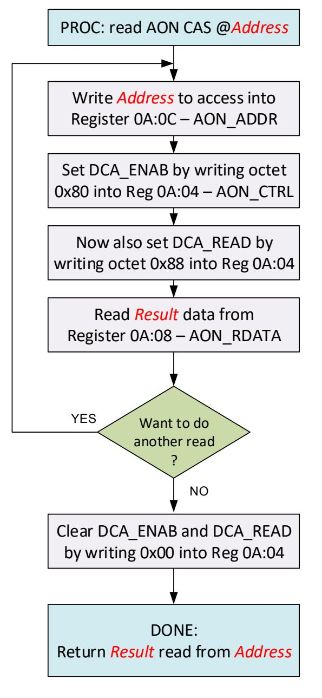
Figure 28: Flow chart for direct read of AON address
| ID |
Length
(octets) |
Type | Mnemonic | Description |
|---|---|---|---|---|
| 0A:0C | 2 | RW | AON_ADDR | AON direct access address |
Register file: 0x0A – Always-on system control interface, sub-register 0x0C is an 16-bit register used to specify the address (9-bits) for a direct access read of the AON memory array. The read is initiated using the DCA_READ control bit in Sub-register 0x0A:04 – AON control register and the read result is returned in Sub register 0x0A:08 – AON read data.
| ID |
Length
(octets) |
Type | Mnemonic | Description |
|---|---|---|---|---|
| 0A:10 | 1 | RW | AON_WDATA | AON direct access write data |
Register file: 0x0A – Always-on system control interface, sub-register 0x10 is is an 8-bit register used to provide the data for the direct write access of the AON memory array, to the address specified by Sub register 0x0A:0C – AON memory address. The write is initiated using th e DCA_WRITE control bit in Sub register 0x0A:04 – AON control register .
Figure 29 shows the procedural flow for writing to specified address in AON memory:
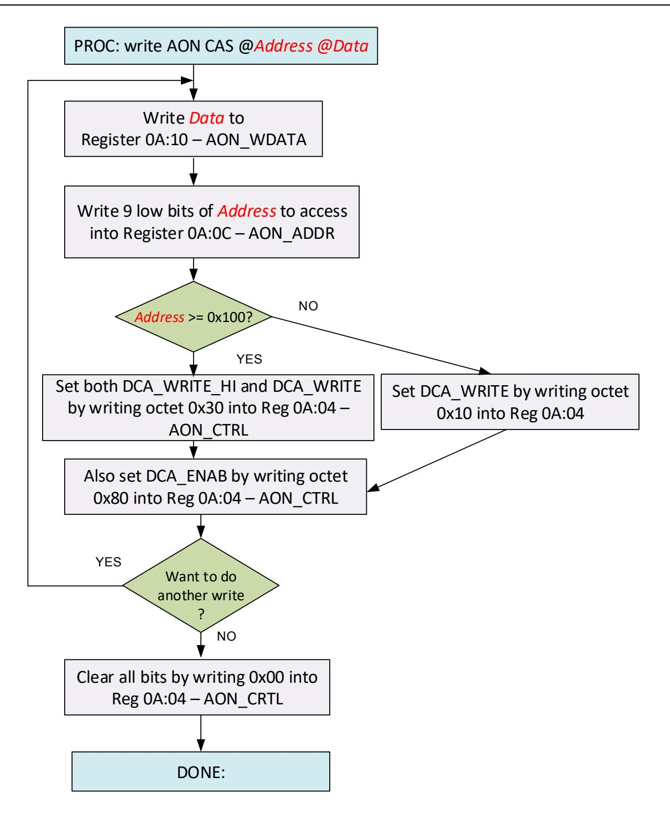
Figure 29: Flow chart for direct write o f AON address
| ID |
Length
(octets) |
Type | Mnemonic | Description |
|---|---|---|---|---|
| 0A:14 | 1 | RW | AON_CFG | AON configuration register |
Register file: 0x0A – Always-on system control interface, sub-register 0x14 is an 8-bit configuration register for the always on block. The fields of this register are interpreted inside the AON block, which can only happen after these are loaded into th e AON block via th e CFG_UPLOAD command in Sub-register 0x0A:04 – AON control register. The AON_CFG register contains the following fields:
| REG:0A:14 – AON_CFG – AON configuration register | ||||||||
|---|---|---|---|---|---|---|---|---|
|
31 30 29 28 27 26 25 24 23 22 21 20 19 18 17 16 15 14 13 12 11 10 9
8 |
7 | 6 | 5 | 4 | 3 | 2 | 1 | 0 |
| - | - | PRES_SLEEP |
WUP
WAKE_ |
WAKE_CSN | BROUT_EN | WAKE_CNT | SLEEP_EN | |
| 0 | 0 | 0 | 0 | 1 | 1 | 0 | 0 | |
The fields of th e AON_CFG register identified above are individually described below:
| Field | Description of fields within | ||||
|---|---|---|---|---|---|
| Sub-register 0x0A:14 – AON configuration | |||||
| SLEEP_EN | This is the sleep enable configuration bit. In order to put the DW3000 into the SLEEP or | ||||
|
reg:0A:14
bit:0 |
DEEPSLEEP state this bit needs to be set and then the configuration needs to be uploaded
to the AON using the CFG_UPLOAD bit in Sub-register 0x0A:04 – AON control register. The SLEEP or DEEPSLEEP state can also be entered via the ATX2SLP or ARX2SLP controls in Sub register 0x11:08 – Sequencing control, which will automatically do the configuration upload to the AON and set this SLEEP_EN control. If WAKE_CNT bit below is disabled then the |
||||
| device will enter DEEPSLEEP state otherwise it will enter SLEEP state. | |||||
|
WAKE_CNT
reg:0A:14 bit:1 |
Wake when sleep counter elapses. This configuration bit enables the sleep counter to bring
the DW3000 out of SLEEP into operational mode. By default the WAKE_CNT configuration is 0 disabling the sleep counter as a wake-up signal. Setting the WAKE_CNT configuration bit to 1 will mean that the sleep counter will wake the DW3000 form SLEEP. See Note below on wake up events. To configure the duration of the sleep counter see 8.2.11.6.1 below. |
||||
|
BROUT_EN
reg:0A:14 bit:2 |
Set to 1 to enable the BROWNOUT detector during SLEEP or DEEPSLEEP. This block will
consume ~6uA. See also VWARN event in the Sub-register 0x00:44 – System event status register. |
||||
|
WAKE_CSN
reg:0A:14 bit:3 |
Wake using SPI access. This configuration bit enables SPICSn to bring the DW3000 out of
SLEEP or DEEPSLEEP into operational mode. By default the WAKE_CSN configuration is 1 enabling the SPICSn input as a wake-up signal. Setting the WAKE_CSN configuration bit to 0 will mean that SPICSn cannot wake the DW3000 form SLEEP or DEEPSLEEP. See Note below on wake up events. |
||||
| Field | Description of fields within |
|---|---|
| Sub-register 0x0A:14 – AON configuration | |
| WAKE_WUP | Wake using WAKEUP pin. This configuration bit enables the WAKEUP line to bring the |
| DW3000 out of SLEEP or DEEPSLEEP states into operational mode. By default the | |
|
reg:0A:14
bit:4 |
WAKE_WUP configuration is 1 enabling the WAKEUP line as a wake-up signal. Setting the |
| WAKE_WUP configuration bit to 0 will mean that the WAKEUP line cannot wake the | |
| DW3000 from SLEEP or DEEPSLEEP. See Note below on wake up events. | |
| PRES_SLEEP | Preserve Sleep. This bit determines what the DW3000 does after a wake-up event, with |
| respect to the ARX2SLP and ATX2SLP sleep controls in Sub-register 0x11:08 – Sequencing | |
|
reg:0A:14
bit:5 |
control, and the SLEEP_EN control in |
| Sub-register 0x0A:14 – AON configuration. When the PRES_SLEEP bit is set to 1 these sleep | |
| controls are not cleared upon wake up, allowing the device to be more easily (or | |
| automatically) returned to sleep. |
There are three mechanisms to wake the DW3000:
If none of these wake up mechanisms are enabled and the DW3000 is put into DEEPSLEEP state then to take DW3000 out of sleep a reset needs to be performed with RSTn pin, or by removing power to the device.
The sleep counter time (SLEEP_TIM) is 16-bits wide, but represents the upper 16-bits of a 28-bit counter, i.e. the low order bit is equal to 4096 counts. For example, if the low power oscillator frequency is 20000 Hz then programming the SLEEP_TIM with a value of 24 would yield a sleep time of 24 × 4096 ÷ 20000, which is approximately 4.92 seconds.
The SLEEP_TIM is located in AON memory space at the address 0x102 (low 8-bits) and 0x103 (high 8-bits). To write data to this space se e 8.2.11.5.1 above.
Note: When programming sleep counter time, the host must delay enabling the sleep counter by at least 32 µs, following the programming of the timer duration for the newly programmed value to apply. Otherwise the counter will use the previously programmed value.
| ID |
Length
(octets) |
Type | Mnemonic | Description | |
|---|---|---|---|---|---|
| 0x0B | 23 | - | OTP_IF | One Time Programmable memory interface | |
Register map register file 0x0B is th e OTP memory interface. This allows read access to parameters stored in the OTP memory, and it is also the interface via which parameters are programmed into the OTP memory. The OTP memory interface contains a number of sub-registers. An overview of these sub-registers is given by Table 37, and each is then separately described in the sub-sections below.
Note: Programming OTP memory is a one-time only activity, any values programmed in error cannot be corrected. Also, please take care when programming OTP memory to only write to the designated areas – programming elsewhere may permanently damage the DW3000's ability to function normally. The OTP memory is programmed 32-bits at a time, e.g. programming of a single 8-bit, 16-bit or 24-bit word is not supported.
For more details of th e OTP memory please refer to section 7.3 – Using the on-chip OTP memory .
|
OFFSET in
Register 0x0B |
Mnemonic | Description |
|---|---|---|
| 0x00 | OTP_WDATA | OTP write data |
| 0x04 | OTP_ADDR | OTP address |
| 0x08 | OTP_CFG | OTP configuration |
| 0x0C | OTP_STAT | OTP status |
| 0x10 | OTP_RDATA | OTP read data |
| 0x14 | OTP_SRDATA | OTP Special Register (SR) read data |
| ID |
Length
(octets) |
Type | Mnemonic | Description |
|---|---|---|---|---|
| 0B:00 | 4 | RW | OTP_WDATA | OTP data to program to a particular address |
Register file: 0x0B – OTP memory interface, sub-register 0x00 is a 32-bit register. This register is used to configure the OTP memory block for memory writing operations and also to store the data value to be programmed into an OTP location. Writing to OTP memory is an involved procedure. For details of this please refer to section 7.3.2 – Programming a value into OTP memory.
| ID |
Length
(octets) |
Type | Mnemonic | Description |
|---|---|---|---|---|
| 0B:04 | 2 | RW | OTP_ADDR | OTP address to which to program the data |
Register file: 0x0B – OTP memory interface , sub-register 0x04 is a 16-bit register used to select the address within the OTP memory block that is being accessed (for read or write) this OTP memory interface. The OTP_ADDR register contains the following fields:
| REG:2D:04 – OTP_ADDR – OTP address | ||||||||||||||||
|---|---|---|---|---|---|---|---|---|---|---|---|---|---|---|---|---|
| 31 30 29 28 27 26 25 24 23 22 21 20 19 18 17 16 15 14 13 12 11 10 | 9 | 8 | 7 | 6 | 5 | 4 | 3 | 2 | 1 | 0 | ||||||
| - | - | - | - | - | OTP_ADDR | |||||||||||
| - | - | - | - | - | 0 | 0 | 0 | 0 | 0 | 0 | 0 | 0 | 0 | 0 | 0 | |
| Field | Description of fields within Sub-register 0x0B:04 – OTP programming address |
|---|---|
| OTP_ADDR | This 7-bit field specifies the address within OTP memory that will be accessed read or written. |
|
reg:0B:04
bits:10 –0 |
For details of the OTP memory map and the procedures to read and write OTP memory, please
refer to section 7.3 – Using the on-chip OTP memory. |
|
-
reg:0B:04 |
Reserved. The remainder of this register is reserved. |
| bits:15 –11 |
| ID |
Length
(octets) |
Type | Mnemonic | Description |
|---|---|---|---|---|
| 0B:08 | 2 | RW | OTP_CFG | OTP configuration register |
Register file: 0x0B – OTP memory interface , sub-register 0x08 is a 16-bit register used to select and load special receiver operational parameter sets. See 8.2.12.7 – Receiver operating parameter sets for details. The OTP_CFG register contains the following fields:
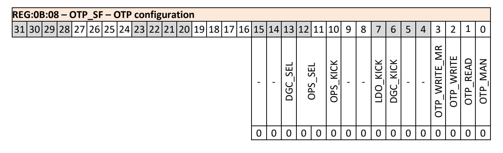
The fields of th e OTP_CFG register are described below:
| Field | Description of fields within Sub-register 0x0B:08 – OTP configuration |
|---|---|
| OTP_MAN | Enable manual control over OTP interface. See DW3000 APIs for details [3]. |
|
reg:0B:08
bit:0 |
See section 7.3 – Using the on-chip OTP memory. |
| OTP_READ | OTP read enable. See DW3000 APIs for details [3]. |
|
reg:0B:08
bit:1 |
See section 7.3 – Using the on-chip OTP memory. |
| OTP_WRITE | OTP write enable. See DW3000 APIs for details [3]. |
|
reg:0B:08
bit:2 |
See section 7.3 – Using the on-chip OTP memory. |
| Field | Description of fields within Sub-register 0x0B:08 – OTP configuration |
|---|---|
| OTP_WRITE_MR | OTP write mode. See DW3000 APIs for details [3]. |
|
reg:0B:08
bit:3 |
See section 7.3 – Using the on-chip OTP memory. |
| DGC_KICK | This bit when set initiates the loading of the RX_TUNE_CAL parameter from OTP address |
| 0x20 – 0x34 into the register RX_TUNE. Either channel 5 or channel 9 RX tune | |
|
reg:0B:08
bit:6 |
calibration data is loaded, depending on the configuration of DGC_SEL bit. |
| LDO_KICK | This bit when set initiates the loading of the LDOTUNE_CAL parameter from OTP |
| address 0x4 into the register Sub-register 0x07:40 – LDO voltage tune. See the section | |
|
reg:0B:08
bit:7 |
Waking from sleep for more details. |
| BIAS_KICK | This bit when set initiates the loading of the BIASTUNE_CAL parameter from OTP |
| address 0xA into the BIAS_CTRL register. See the section Waking from sleep for more | |
|
reg:0B:08
bit:8 |
details. |
| OPS_KICK | This bit when set initiates a load of the operating parameter set selected by the |
| OPS_SEL configuration below. | |
|
reg:0B:08
bit:10 |
|
| OPS_SEL | Operating parameter set selection. This selects the operating parameter set to load |
| when the OPS_KICK is invoked. Allowed values are: | |
| reg:0B:08 | |
| bits:12,11 | 00: Select parameter set 0 – Long. |
| 01: Select parameter set 1 – reserved. | |
| 10: Select Default parameter set (2 – Short). | |
| 11: Reserved. Do not select this value. | |
| See section 8.2.12.7 – Receiver operating parameter sets below for details of use of | |
| these operating parameter sets. | |
| DGC_SEL | RX_TUNE parameter set selection. This selects the RX_TUNE_CAL parameter set to |
| load when the DGC_KICK is invoked. If DGC_SEL bit is set to 0 channel 5 parameter set | |
|
reg:0B:08
bit:13 |
is selected otherwise, setting to 1 will select channel 9 parameter set. |
| - | Reserved. Bits marked '-' are reserved. |
|
reg:0B:08
bits:various |
N.B.: Any change in these bits may cause the DW3000 to malfunction. |
| ID |
Length
(octets) |
Type | Mnemonic | Description |
|---|---|---|---|---|
| 0B:0C | 1 | RW | OTP_STAT | OTP memory programming status register |
Register file: 0x0B – OTP memory interface , sub-register 0x0C is a 16-bit register used to give status information about the progress of the OTP programming activity. The OTP_STAT register contains the following fields:
REG:0B:0C – OTP_STAT – OTP status 31 30 29 28 27 26 25 24 23 22 21 20 19 18 17 16 15 14 13 12 11 10 9 8 7 6 5 4 3 2 1 0
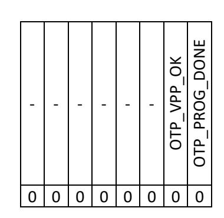
The fields of th e OTP_STAT register are described below:
| Field | Description of fields within Sub-register 0x0B:0C – OTP programming status | |||
|---|---|---|---|---|
| OTP_PROG_DONE | OTP Programming Done. This status bit indicates that the programming of the 32- | |||
| bit word from OTP_WDATA to the address specified by OTP_ADDR has completed. | ||||
| eg:0B:0C | Writing to OTP memory is an involved procedure. For details of this please refer to | |||
| bit:0 | section 7.3.2 – Programming a value into OTP memory. | |||
| OTP_VPP_OK | OTP Programming Voltage OK. This status bit indicates that the VPP level is | |||
| sufficient for programming the OTP memory. For details of OTP programming | ||||
| reg:0B:0C | please refer to section 7.3 – Using the on-chip OTP memory. | |||
| bit:1 | ||||
| - | Reserved. Bits marked '-' are reserved. | |||
| reg:0B:0C | ||||
| bits:various | ||||
| ID |
Length
(octets) |
Type | Mnemonic | Description |
|---|---|---|---|---|
| 0B:10 | 4 | R | OTP_RDATA | OTP data read from given address |
Register file: 0x0B – OTP memory interface , sub-register 0x10 is a 32-bit register. The data value read from an OTP location will appear here after invoking the OTP read function. For details of the OTP memory map and the procedures to read OTP memory, please refer to section 7.3 – Using the on-chip OTP memory .
| ID |
Length
(octets) |
Type | Mnemonic | Description |
|---|---|---|---|---|
| 0B:14 | 4 | RW | OTP_SRDATA | OTP Special Register (SR) read data |
Register file: 0x0B – OTP memory interface , sub-register 0x14 is a 32-bit register. The data value stored in the OTP SR (0x60) location will appear here after power up. For details of the OTP memory map and the procedures to read OTP memory, please refer to section 7.3 – Using the on-chip OTP memory .
The DW3000 receiver has the capability of operating with specific parameter sets that relate to how it acquires the preamble signal and decodes the data. Three distinct operating parameter sets are defined within the IC for selection by the host system designer depending on system characteristics. Table 38 below lists and defines these operating parameter sets indicating their recommended usages.
| Set | Description |
|---|---|
|
10 – Default /
Short |
This is the default operating parameter set. This parameter set is designed to give good
performance for very short preambles, i.e. the length 64 preamble It is however not optimum for long preambles. |
| 00 – Long |
This operating parameter set is designed to give good performance for long (>= 256)
preambles (size including the SFD and STS length). |
| 01 – reserved | reserved |
For most applications the default operating parameter set is the best choice.
| ID |
Length
(octets) |
Type | Mnemonic | Description |
|---|---|---|---|---|
| 0x0C – 0x0E | - | - | CIA_IF | Channel Impulse Response Analyser (CIA) Interface |
Register map register file 0x0C is th e CIA control and status interface. The Channel Impulse response Analyser (CIA) function is responsible for analysing the accumulator data, (available through Register file: 0x15 – Accumulator CIR memory) . Depending on the exact configuration, there are up to 3 channel impulse response (CIR) estimates in the accumulator memory. One based on the preamble code and two based on the STS sequence.
The CIA identifies the first path in any given CIR estimate. It can then use this to calculate the RX timestamp written to Sub-register 0x00:64 – Receive time stamp . Th e CIA interface contains a number of sub-registers. An overview of these sub-registers in this Register files: 0x0C, 0x0D, 0x0E – CIA Interface is given b y Table 39 and each is then separately described in the sub-sections below (0x0C and 0x0D are CIA outputs, while 0x0E is the CIA configuration control). The control and configuration of the STS is achieved via the sub-registers in CP_CFG an d SYS_CFG. Please also refer to § 6 – Secure ranging / timestamping for details of the operation of the STS for secure ranging operations.
| Register | OFFSET in | Mnemonic | Description |
|---|---|---|---|
| file | Register | ||
| 0x0C | 0x00 | IP_TS | Preamble sequence receive time stamp and status |
| 0x0C | 0x08 | STS_TS | STS receive time stamp and status |
| 0x0C | 0x10 | STS1_TS | 2nd STS receive time stamp and status |
| 0x0C | 0x18 | TDOA | The TDoA between the two CIRs |
| 0x0C | 0x1E | PDOA | The PDoA between the two CIRs |
| 0x0C | 0x20 | CIA_DIAG_0 | CIA Diagnostic 0 |
| 0x0C | 0x28 | IP_DIAG_0 | Preamble Diagnostic 0 – peak |
| 0x0C | 0x2C | IP_DIAG_1 | Preamble Diagnostic 1 – power indication |
| 0x0C | 0x30 | IP_DIAG_2 | Preamble Diagnostic 2 – magnitude @ FP + 1 |
| 0x0C | 0x34 | IP_DIAG_3 | Preamble Diagnostic 3 – magnitude @ FP + 2 |
| 0x0C | 0x38 | IP_DIAG_4 | Preamble Diagnostic 4 – magnitude @ FP + 3 |
| 0x0C | 0x48 | IP_DIAG_8 | Preamble Diagnostic 8 – first path |
| 0x0C | 0x58 | IP_DIAG_12 | Preamble Diagnostic 12 – symbols accumulated |
| 0x0C | 0x5C | STS_DIAG_0 | STS Diagnostic 0 – STS CIR peak |
| 0x0C | 0x60 | STS_DIAG_1 | STS 0 Diagnostic 1 – STS CIR power indication |
| 0x0C | 0x64 | STS_DIAG_2 | STS 0 Diagnostic 2 – STS CIR magnitude @ FP + 1 |
| 0x0C | 0x68 | STS_DIAG_3 | STS 0 Diagnostic 3 – STS CIR magnitude @ FP + 2 |
| 0x0D | 0x00 | STS_DIAG_4 | STS 0 Diagnostic 4 – STS CIR magnitude @ FP + 3 |
| 0x0D | 0x10 | STS_DIAG_8 | STS 0 Diagnostic 8 – STS CIR first path |
| 0x0D | 0x20 | STS_DIAG_12 | STS 0 Diagnostic 12 – STS CIR accumulated STS length |
| 0x0D | 0x38 | STS1_DIAG_0 | STS 1 Diagnostic 0 – STS CIR peak |
| 0x0D | 0x3C | STS1_DIAG_1 | STS 1 Diagnostic 1 – STS CIR power indication |
| 0x0D | 0x40 | STS1_DIAG_2 | STS 1 Diagnostic 2 – STS CIR magnitude @ FP + 1 |
| 0x0D | 0x44 | STS1_DIAG_3 | STS 1 Diagnostic 3 – STS CIR magnitude @ FP + 2 |
| 0x0D | 0x48 | STS1_DIAG_4 | STS 1 Diagnostic 4 – STS CIR magnitude @ FP + 3 |
| 0x0D | 0x58 | STS1_DIAG_8 | STS 1 Diagnostic 8 – STS CIR first path |
| 0x0D | 0x68 | STS1_DIAG_12 | STS 1 Diagnostic 11 – STS CIR accumulated STS length |
| 0x0E | 0x00 | CIA_CONF | CIA general configuration |
| 0x0E | 0x04 | FP_CONF | First path temp adjustment and thresholds |
| 0x0E | 0x0C | IP_CONF | Preamble Config 0 – CIA preamble configuration |
| 0x0E | 0x12 | STS_CONF_0 | STS Config 0 – CIA STS configuration |
| 0x0E | 0x16 | STS_CONF_1 | STS Config 1 – CIA STS configuration |
| 0x0E | 0x1A | CIA_ADJUST | User adjustment to the PDoA |
| ID |
Length
(octets) |
Type | Mnemonic | Description |
|---|---|---|---|---|
| 0C:00 | 8 | RO | IP_TS | Preamble receive time stamp and status |
Register files: 0x0C, 0x0D, 0x0E – CIA Interface, sub-register 0x00 of register file 0x0C is an 8-octet register reporting the 40-bit preamble Time of Arrival estimate along with status diagnostic octet relating to it.
| REG:0C:00 – IP_TS – Preamble receive time stamp and status (Octets 0 to 3, 32-bits) | |||||||||||||||||||||||||||||||
|---|---|---|---|---|---|---|---|---|---|---|---|---|---|---|---|---|---|---|---|---|---|---|---|---|---|---|---|---|---|---|---|
| 31 30 29 28 27 26 25 24 23 22 21 20 19 18 17 16 15 14 13 12 11 10 | 9 | 8 | 7 | 6 | 5 | 4 | 3 | 2 | 1 | 0 | |||||||||||||||||||||
| IP_TOA (low 32 bits of 40-bit value) | |||||||||||||||||||||||||||||||
| 0 | 0 | 0 | 0 | 0 | 0 | 0 | 0 | 0 | 0 | 0 | 0 | 0 | 0 | 0 | 0 | 0 | 0 | 0 | 0 | 0 | 0 | 0 | 0 | 0 | 0 | 0 | 0 | 0 | 0 | 0 | 0 |
| REG:0C:04 – IP_TS – Preamble receive time stamp and status (Octets 4 to 7, 32-bits) | |||||||||||||||||||||||||||||||
|---|---|---|---|---|---|---|---|---|---|---|---|---|---|---|---|---|---|---|---|---|---|---|---|---|---|---|---|---|---|---|---|
| 31 30 29 28 27 26 25 24 23 22 21 20 19 18 17 16 15 14 13 12 11 10 | 9 | 8 | 7 | 6 | 5 | 4 | 3 | 2 | 1 | 0 | |||||||||||||||||||||
| IP_TOAST | - | - | IP_POA | IP_TOA (high 8 bits of 40) | |||||||||||||||||||||||||||
| 0 | 0 | 0 | 0 | 0 | 0 | 0 | 0 | 0 | 0 | 0 | 0 | 0 | 0 | 0 | 0 | 0 | 0 | 0 | 0 | 0 | 0 | 0 | 0 | 0 | 0 | 0 | 0 | 0 | 0 | 0 | 0 |
The fields of th e IP_TS register are described below:
| Field | Description of fields within Sub-register 0x0C:00 – Preamble receive time stamp and status |
|---|---|
| IP_TOA | Preamble sequence Time of Arrival estimate. This 40-bit (5-octet) field reports the. The fully |
| adjusted time of reception as estimated by the CIA algorithm operating on the CIR | |
| reg:0C:00 | accumulated using the preamble sequence. Please refer to section 4.1.7 – RX message |
| bits:39-0 | timestamp for more details of the adjustments applied. The units of the low order bit are |
|
approximately 15.65 picoseconds. The actual unit may be calculated as 1/ (128*499.2×106
) |
|
| seconds. The IP_TOA value is available here when the leading edge determination and | |
| timestamp adjustments are completed (when the CIADONE status bit is set). | |
| The IP_TOA value is also written to the RX_STAMP field in Sub-register 0x00:64 – Receive | |
|
time stamp, but that may be overwritten by the STS_TOA value if this is being computed by
the CIA algorithm. |
|
| IP_POA | Phase of arrival as computed from the preamble CIR. It is adjusted by the state of the carrier |
| recovery algorithm's correction when the CIR is finalized. This register is used when | |
| reg:0C:04 | implementing a two-chip PDoA system. |
| bits:21–8 | |
|
-
reg:0C:04 |
These bits are unused / reserved. |
| bits:23–22 | |
| IP_TOAST | Preamble sequence Time of Arrival status indicator. The low order 5-bits of this octet are a |
| set of error flags indicating various conditions in the CIA algorithm that mean that the | |
|
reg:0C:04
bits:31–24 |
IP_TOA value is not reliable and should not be used. |
| Status word of the preamble analysis | |
| [31] – Reserved | |
| [30] – Reserved | |
| [29] – Reserved | |
| [28] – First path too close to the end to be plausible | |
| [27] – Coarse first path estimate too close to end to be plausible | |
| [26] – CIR too weak to get any estimate | |
| [25] – Noise threshold had to be artificially lowered to find any first path. | |
| [24] – No strong rising edge on the first path so estimate is vulnerable to noise |
| ID |
Length
(octets) |
Type | Mnemonic | Description |
|---|---|---|---|---|
| 0C:08 | 8 | RO | STS_TS | STS receive time stamp and status |
Register files: 0x0C, 0x0D, 0x0E – CIA Interface, sub-register 0x08 of register file 0x0C is an 8-octet register reporting the 40-bit STS based Time of Arrival estimate along with status diagnostic octet relating to it.
| REG:0C:08 – STS_TS – STS receive time stamp and status (Octets 0 to 3, 32-bits) | |||||||||||||||||||||||||||||||
|---|---|---|---|---|---|---|---|---|---|---|---|---|---|---|---|---|---|---|---|---|---|---|---|---|---|---|---|---|---|---|---|
| 31 30 29 28 27 26 25 24 23 22 21 20 19 18 17 16 15 14 13 12 11 10 | 9 | 8 | 7 | 6 | 5 | 4 | 3 | 2 | 1 | 0 | |||||||||||||||||||||
| STS_TOA (low 32 bits of 40-bit value) | |||||||||||||||||||||||||||||||
| 0 | 0 | 0 | 0 | 0 | 0 | 0 | 0 | 0 | 0 | 0 | 0 | 0 | 0 | 0 | 0 | 0 | 0 | 0 | 0 | 0 | 0 | 0 | 0 | 0 | 0 | 0 | 0 | 0 | 0 | 0 | 0 |
| 31 30 29 28 27 26 25 24 23 22 21 20 19 18 17 16 15 14 13 12 11 10 9 | 8 | 7 | 6 | 5 | 4 | 3 | 2 | 1 | 0 | ||||||||||||||||||||||
|---|---|---|---|---|---|---|---|---|---|---|---|---|---|---|---|---|---|---|---|---|---|---|---|---|---|---|---|---|---|---|---|
| STS_TOAST | STS_POA | STS_TOA (high 8 bits of 40) | |||||||||||||||||||||||||||||
| 0 | 0 | 0 | 0 | 0 | 0 | 0 | 0 | 0 | 0 | 0 | 0 | 0 | 0 | 0 | 0 | 0 | 0 | 0 | 0 | 0 | 0 | 0 | 0 | 0 | 0 | 0 | 0 | 0 | 0 | 0 | 0 |
The fields of th e STS_TS register are described below:
| Field | Description of fields within Sub-register 0x0C:08 – STS receive time stamp and status |
|---|---|
| STS_TOA | STS Time of Arrival estimate. This 40-bit (5-octet) field reports the time of reception as |
| estimated by the CIA algorithm operating on the CIR accumulated using the STS sequence. | |
| reg:0C:08 | The units of the low order bit are approximately 15.65 picoseconds. The actual unit may be |
| bits:39-0 |
calculated as 1/ (128*499.2×106
) seconds. The STS_TOA value is available here when the |
| leading edge determination and timestamp adjustments are completed (when the CIADONE | |
| status bit is set). Note the STS_TOA value is also written into the RX_STAMP field in Sub | |
| register 0x00:64 – Receive time stamp. This will overwrite an existing value in the | |
| RX_STAMP field. So CP_TOA takes precedence over IP_TOA. | |
| STS_POA | Phase of arrival as computed from the STS CIR and is adjusted by the state of the carrier |
| recovery algorithm's correction when the CIR estimate is complete. It can be used in a two | |
| reg:0C:0C | chip PDoA system. |
|
bits:21–8
– |
These bits are unused / reserved. |
| reg:0C:0C | |
| bit:22 | |
| STS_TOAST | STS sequence Time of Arrival status indicator. These bits are a set of error flags indicating |
| various conditions in the CIA algorithm. If STS_TOAST is non-zero it means that the CIR has | |
|
reg:0C:08
bits:31-23 |
failed one or more confidence tests. As a result, the STS_TOA and STS_POA value is not |
| reliable and should not be used. | |
| Status bits from the STS analysis: | |
| [31] : STS_PGR_EN test fail. | |
| [30] : STS_SS_EN test fail. | |
| [29] : STS_CQ_EN test fail. | |
| [28] : First path too close to the end to be plausible. | |
| [27] : Coarse first path estimate too close to end to be plausible. | |
| [26] : CIR too weak to get any estimate. | |
| [25] : Noise threshold had to be artificially lowered to find any first path. | |
| [24] : No strong rising edge on the first path so estimate is vulnerable to noise. | |
| [23] : Reserved. |
| ID |
Length
(octets) |
Type
Mnemonic |
Description | |
|---|---|---|---|---|
| 0C:10 | 8 | RO | STS1_TS | STS second receive time stamp and status (valid in PDoA |
| Mode 3 only) | ||||
Register files: 0x0C, 0x0D, 0x0E – CIA Interface, sub-register 0x08 of register file 0x0C is an 8-octet register reporting the 40-bit STS second Time of Arrival estimate along with status diagnostic octet relating to it. This is only valid when operating in PDoA Mode 3.
| REG:0C:10 – STS1_TS – STS second receive time stamp and status (Octets 0 to 3, 32-bits) | |||||||||||||||||||||||||||||||
|---|---|---|---|---|---|---|---|---|---|---|---|---|---|---|---|---|---|---|---|---|---|---|---|---|---|---|---|---|---|---|---|
| 31 30 29 28 27 26 25 24 23 22 21 20 19 18 17 16 15 14 13 12 11 10 | 9 | 8 | 7 | 6 | 5 | 4 | 3 | 2 | 1 | 0 | |||||||||||||||||||||
| STS1_TOA (low 32 bits of 40-bit value) | |||||||||||||||||||||||||||||||
| 0 | 0 | 0 | 0 | 0 | 0 | 0 | 0 | 0 | 0 | 0 | 0 | 0 | 0 | 0 | 0 | 0 | 0 | 0 | 0 | 0 | 0 | 0 | 0 | 0 | 0 | 0 | 0 | 0 | 0 | 0 | 0 |
| REG:0C:14 – STS1_TS – STS second receive time stamp and status (Octets 4 to 7, 32-bits) | |||||||||||||||||||||||||||||||
|---|---|---|---|---|---|---|---|---|---|---|---|---|---|---|---|---|---|---|---|---|---|---|---|---|---|---|---|---|---|---|---|
| 31 | 30 | 29 | 28 | 27 | 26 | 25 | 24 | 23 22212019181716151413121110 9 | 8 | 7 | 6 | 5 | 4 | 3 | 2 | 1 | 0 | ||||||||||||||
| STS1_TOAST | - |
STS1_POA
STS1_TOA (high 8 bits of 40) |
|||||||||||||||||||||||||||||
| 0 | 0 | 0 | 0 | 0 | 0 | 0 | 0 | 0 | 0 | 0 | 0 | 0 | 0 | 0 | 0 | 0 | 0 | 0 | 0 | 0 | 0 | 0 | 0 | 0 | 0 | 0 | 0 | 0 | 0 | 0 | 0 |
The fields of th e STS1_TS register are described below:
| Field | Description of fields within Sub-register 0x0C:10 – STS second RX time stamp and status |
|---|---|
| STS1_TOA | STS second Time of Arrival estimate. This 40-bit (5-octet) field reports the time of |
|
reg:0C:10
bits:39-0 |
reception as estimated by the CIA algorithm operating on the CIR accumulated using the
STS. The units of the low order bit are approximately 15.65 picoseconds. The actual unit may be calculated as 1/ (128*499.2×106 ) seconds. The STS1_TOA value is available here |
|
when the leading edge determination and timestamp adjustments are completed (when
the CIADONE status bit is set). |
|
| STS1_POA | Phase of arrival as computed from the STS based CIR estimate and is adjusted by the state |
| of the carrier recovery algorithm's correction when the CIR estimate is complete. It can be | |
| reg:0C:14 | used in a two-chip PDoA system. |
|
bits:21–8
– |
These bits are unused / reserved. |
| reg:0C:14 | |
| bit:22 | |
| STS1_TOAST | STS second Time of Arrival status indicator. These bits are a set of error flags indicating |
| various conditions in the CIA algorithm. If STS_TOAST is non-zero it means that the CIR has | |
|
reg:0C:14
bits:31-23 |
failed one or more confidence tests. As a result, the STS1_TOA and STS1_POA value is not |
| reliable and should not be used. | |
| Status bits from the STS1 analysis: | |
| [31] : STS_PGR_EN test fail. | |
| [30] : STS_SS_EN test fail. | |
| [29] : STS_CQ_EN test fail. | |
| [28] : First path too close to the end to be plausible. | |
| [27] : Coarse first path estimate too close to end to be plausible. | |
| [26] : CIR too weak to get any estimate. | |
| [25] : Noise threshold had to be artificially lowered to find any first path. | |
| [24] : No strong rising edge on the first path so estimate is vulnerable to noise. | |
| [23] : Reserved. |
| ID |
Length
Type (octets) |
Mnemonic | Description | |
|---|---|---|---|---|
| 0C:18 | 6 | RO | TDOA | The TDoA between two CIRs |
Register files: 0x0C, 0x0D, 0x0E – CIA Interface, sub-register 0x18 of register file 0x0C is 41-bit TDoA between two CIR TOAs. The bit 40 is a sign bit. If PDoA Mode 1 is selected (see PDOA_MODE) then this TDoA refers to the TDoA between th e IP_TOA and the STS_TOA value. In PDoA Mode 3 this is the TDoA between the STS_TOA and the STS1_TOA value. All three CIRs are estimates of the same (or a very similar) channel so the TDoA should be small. Its value can help when determining how reliable the PDoA/ToA estimate is. TDoA is described in 4.2 - TDoA and PDoA support.
| ID |
Length
(octets) |
Type | Mnemonic | Description |
|---|---|---|---|---|
| 0C:1E | 2 | RO | PDOA | PDoA and First Path (FP) threshold status |
Register files: 0x0C, 0x0D, 0x0E – CIA Interface, sub-register 0x1E of register file 0x0C is a 2-octet register reporting the phase difference of arrival. This is only valid when operating one of PDoA modes (PDOA_MODE) . Th e PDOA register contains the following bitmapped sub-fields:
| REG:0C:1E – PDOA – PDoA result | |||||||||||||||
|---|---|---|---|---|---|---|---|---|---|---|---|---|---|---|---|
| 31 30 29 28 27 26 25 24 23 22 21 20 19 18 17 16 15 14 13 12 11 10 | 9 | 8 | 7 | 6 | 5 | 4 | 3 | 2 | 1 | 0 | |||||
| - | FP_TH_MD | PDOA | |||||||||||||
| 0 | 0 |
0
0 |
0 | 0 | 0 | 0 | 0 | 0 | 0 | 0 | 0 | 0 | 0 | 0 | |
The fields of PDOA register are described below:
| Field | Description of fields within Sub-register 0x0C:1E – Phase difference of arrival result |
|---|---|
| PDOA | Phase difference result. This is further described in 4.2 TDoA and PDoA support. |
| reg:0C:1E | |
| bits: 13–0 | |
| FP_TH_MD | First path threshold test mode. |
| 0 - > absolute difference of two first paths is smaller or equal the FP_AGREED_TH | |
|
reg:0C:1E
bit: 14 |
1 - > absolute difference is larger than FP_AGREED_TH |
| – | These bits are unused / reserved. |
| reg:0C:1E | |
| bit:15 |
| ID |
Length
(octets) |
Type | Mnemonic | Description |
|---|---|---|---|---|
| 0C:20 | 4 | RO | CIA_DIAG_0 | CIA diagnostic 0 |
Register files: 0x0C, 0x0D, 0x0E – CIA Interface, sub-register 0x20 of register file 0x0C is a 4-octet register reporting CIA diagnostics after CIR analysis. Th e CIA_DIAG_0 register contains the following bitmapped subfields:
| REG:0C:20 – CIA_DIAG_0 – CIA diagnostic 0 | |||||||||||||||||||||||||||||||
|---|---|---|---|---|---|---|---|---|---|---|---|---|---|---|---|---|---|---|---|---|---|---|---|---|---|---|---|---|---|---|---|
| 31 30 29 28 27 26 25 24 23 22 21 20 19 18 17 16 15 14 13 12 11 10 | 9 | 8 | 7 | 6 | 5 | 4 | 3 | 2 | 1 | 0 | |||||||||||||||||||||
| - | - | - | - | - | - | - | - | - | - | - | - | - | - | - | - | - | - | - | COE_PPM | ||||||||||||
| 0 | 0 | 0 | 0 | 0 | 0 | 0 | 0 | 0 | 0 | 0 | 0 | 0 | 0 | 0 | 0 | 0 | 0 | 0 | 0 | 0 | 0 | 0 | 0 | 0 | 0 | 0 | 0 | 0 | 0 | 0 | 0 |
The fields of CIA_DIAG_0 register are described below:
| Field | Description of fields within Sub-register 0x0C:20 – CIA diagnostic 0 |
|---|---|
| COE_PPM | Clock offset estimate. This 13-bit field reports an estimate of the clock offset of the remote |
| transmitting device using an s[-15:-26] fixed point. The value is available here when the | |
| reg:0C:20 | CIADONE status bit is set. To get PPM (part per million) the integer 13-bit value should be |
| bits: 12–0 | divided by 2^26 and then multiplied by 10^6. |
| – | These bits are unused / reserved. |
| reg:0C:20 | |
| bits: 31–13 |
| ID |
Length
(octets) |
Type | Mnemonic | Description |
|---|---|---|---|---|
| 0C:24 | 4 | RO | CIA_DIAG_1 | Reserved diagnostic data |
Register files: 0x0C, 0x0D, 0x0E – CIA Interface, sub-register 0x24 of register file 0x0C is a 4-octet reserved register.
| ID |
Length
(octets) |
Type | Mnemonic | Description |
|---|---|---|---|---|
| 0C:28 | 4 | RO | IP_DIAG_0 | Preamble diagnostic 0 – peak |
Register files: 0x0C, 0x0D, 0x0E – CIA Interface, sub-register 0x28 of register file 0x0C is a 4-octet register reporting diagnostics relating to the preamble sequence. Th e IP_DIAG_0 register contains the following bitmapped sub-fields:
| REG:0C:28 – IP_DIAG_0 – Preamble diagnostic 0 – peak | |||||||||||||||||||||||||||||||
|---|---|---|---|---|---|---|---|---|---|---|---|---|---|---|---|---|---|---|---|---|---|---|---|---|---|---|---|---|---|---|---|
| 31 30 29 28 27 26 25 24 23 22 21 20 19 18 17 16 15 14 13 12 11 10 | 9 | 8 | 7 | 6 | 5 | 4 | 3 | 2 | 1 | 0 | |||||||||||||||||||||
| - | IP_PEAKI | IP_PEAKA | |||||||||||||||||||||||||||||
| 0 | 0 | 0 | 0 | 0 | 0 | 0 | 0 | 0 | 0 | 0 | 0 | 0 | 0 | 0 | 0 | 0 | 0 | 0 | 0 | 0 | 0 | 0 | 0 | 0 | 0 | 0 | 0 | 0 | 0 | 0 | 0 |
Please note: This diagnostics register will not be updated unless th e MINDIAG configuration bit in CIA_CONF has been cleared to zero.
The fields of IP_DIAG_0 register are described below:
| Field | Description of fields within Sub-register 0x0C:28 – Preamble diagnostic 0 |
|---|---|
| IP_PEAKA | This 21-bit field reports the amplitude of the sample in the CIR accumulated using the |
| preamble sequence that has the largest amplitude. This may be of diagnostic interest in | |
|
reg:0C:18
bits:20–0 |
certain circumstances. The value here is available when the CIADONE status bit is set. |
| IP_PEAKI |
This 10-bit field reports the index of the sample in the CIR accumulated using the preamble
sequence that has the largest amplitude. The value here is available when the CIADONE |
|
reg:0C:18
bits:30–21 |
status bit is set. |
|
reg:0C:18
bit:31 |
This bit is reserved. |
| ID |
Length
(octets) |
Type | Mnemonic | Description |
|---|---|---|---|---|
| 0C:2C | 4 | RO | IP_DIAG_1 | Preamble diagnostic 1 –power indication |
Register files: 0x0C, 0x0D, 0x0E – CIA Interface, sub-register 0x2C of register file 0x0C is a 4-octet register reporting diagnostics relating to the preamble sequence. Th e IP_DIAG_1 register contains the following bitmapped sub-fields:
| REG:0C:2C – IP_DIAG_1 – Preamble diagnostic 1 –power indication | |||||||||||||||||||||||||||||||
|---|---|---|---|---|---|---|---|---|---|---|---|---|---|---|---|---|---|---|---|---|---|---|---|---|---|---|---|---|---|---|---|
| 31 30 29 28 27 26 25 24 23 22 21 20 19 18 17 16 15 14 13 12 11 10 | 9 | 8 | 7 | 6 | 5 | 4 | 3 | 2 | 1 | 0 | |||||||||||||||||||||
| - | - | - | - | - | - | - | - | - | - | - | - | - | - | - | IP_CAREA | ||||||||||||||||
| 0 | 0 | 0 | 0 | 0 | 0 | 0 | 0 | 0 | 0 | 0 | 0 | 0 | 0 | 0 | 0 | 0 | 0 | 0 | 0 | 0 | 0 | 0 | 0 | 0 | 0 | 0 | 0 | 0 | 0 | 0 | 0 |
Please note: This diagnostics register will not be updated unless th e MINDIAG configuration bit in CIA_CONF has been cleared to zero.
The fields of IP_DIAG_1 register are described below:
| Field | Description of fields within Sub-register 0x0C:2C – Preamble diagnostic 1 |
|---|---|
| IP_CAREA | This 17-bit field reports the channel area in the CIR accumulated using the preamble |
| sequence. This gives a measure of the receive power of the preamble. This may be of | |
| reg:0C:2C | diagnostic interest in certain circumstances. The value here is available when the CIADONE |
| bits:16–0 | status bit is set. |
| - | Bits marked '-' in this register are reserved. |
| reg:0C:2C | |
| bit:31–17 |
| ID |
Length
(octets) |
Type | Mnemonic | Description |
|---|---|---|---|---|
| 0C:30 | 4 | RO | IP_DIAG_2 | Preamble diagnostic 2 –magnitude @ FP + 1 |
Register files: 0x0C, 0x0D, 0x0E – CIA Interface, sub-register 0x30 of register file 0x0C is a 4-octet register reporting diagnostics relating to the preamble sequence. Th e IP_DIAG_2 register contains the following bitmapped sub-fields:
| REG:0C:30 – IP_DIAG_2 – Preamble diagnostic 2 –magnitude @ FP + 1 | |||||||||||||||||||||||||||||||
|---|---|---|---|---|---|---|---|---|---|---|---|---|---|---|---|---|---|---|---|---|---|---|---|---|---|---|---|---|---|---|---|
| 31 30 29 28 27 26 25 24 23 22 21 20 19 18 17 16 15 14 13 12 11 10 | 9 | 8 | 7 | 6 | 5 | 4 | 3 | 2 | 1 | 0 | |||||||||||||||||||||
| - | - | - | - | - | - | - | - | - | - | IP_FP1M | |||||||||||||||||||||
| 0 | 0 | 0 | 0 | 0 | 0 | 0 | 0 | 0 | 0 | 0 | 0 | 0 | 0 | 0 | 0 | 0 | 0 | 0 | 0 | 0 | 0 | 0 | 0 | 0 | 0 | 0 | 0 | 0 | 0 | 0 | 0 |
Please note: This diagnostics register will not be updated unless th e MINDIAG configuration bit in CIA_CONF has been cleared to zero.
The fields of IP_DIAG_2 register are described below:
| Field | Description of fields within Sub-register 0x0C:30 – Preamble diagnostic 2 |
|---|---|
| IP_FP1M | This 22-bit field reports the magnitude of the sample at the first index immediately after the |
| estimated first path position in the CIR accumulated using the preamble sequence. This may | |
| reg:0C:30 | be of diagnostic interest in certain circumstances. The value here is available when the |
| bits:21–0 | CIADONE status bit is set. |
| - | Bits marked '-' in this register are reserved. |
| reg:0C:30 | |
| bit:31–22 |
| ID |
Length
(octets) |
Type | Mnemonic | Description |
|---|---|---|---|---|
| 0C:34 | 4 | RO | IP_DIAG_3 | Preamble diagnostic 3 – magnitude @ FP + 2 |
Register files: 0x0C, 0x0D, 0x0E – CIA Interface, sub-register 0x34 of register file 0x0C is a 4-octet register reporting diagnostics relating to the preamble sequence. Th e IP_DIAG_3 register contains the following bitmapped sub-fields:
| REG:0C:34 – IP_DIAG_3 – Preamble diagnostic 3 –magnitude @ FP + 2 | |||||||||||||||||||||||||||||||
|---|---|---|---|---|---|---|---|---|---|---|---|---|---|---|---|---|---|---|---|---|---|---|---|---|---|---|---|---|---|---|---|
| 31 30 29 28 27 26 25 24 23 22 21 20 19 18 17 16 15 14 13 12 11 10 | 9 | 8 | 7 | 6 | 5 | 4 | 3 | 2 | 1 | 0 | |||||||||||||||||||||
| - | - | - | - | - | - | - | - | - | - | IP_FP2M | |||||||||||||||||||||
| 0 | 0 | 0 | 0 | 0 | 0 | 0 | 0 | 0 | 0 | 0 | 0 | 0 | 0 | 0 | 0 | 0 | 0 | 0 | 0 | 0 | 0 | 0 | 0 | 0 | 0 | 0 | 0 | 0 | 0 | 0 | 0 |
Please note: This diagnostics register will not be updated unless th e MINDIAG configuration bit in CIA_CONF has been cleared to zero.
The fields of IP_DIAG_3 register are described below:
| Field | Description of fields within Sub-register 0x0C:34 – Preamble diagnostic 3 |
|---|---|
| IP_FP2M | This 22-bit field reports the magnitude of the sample at second index after the estimated |
| first path position in the CIR accumulated using the preamble sequence. The value here is | |
|
reg:0C:34
bits:21–0 |
available when the CIADONE status bit is set. |
| - | Bits marked '-' in this register are reserved. |
|
reg:0C:34
bit:31–22 |
| ID |
Length
(octets) |
Type | Mnemonic | Description |
|---|---|---|---|---|
| 0C:38 | 4 | RO | IP_DIAG_4 | Preamble Diagnostic 4 –magnitude @ FP + 3 |
Register files: 0x0C, 0x0D, 0x0E – CIA Interface, sub-register 0x38 of register file 0x0C is a 4-octet register reporting diagnostics relating to the preamble sequence. Th e IP_DIAG_4 register contains the following bitmapped sub-fields:
| REG:0C:38 – IP_DIAG_4 – Preamble diagnostic 4 –magnitude @ FP + 3 | |||||||||||||||||||||||||||||||
|---|---|---|---|---|---|---|---|---|---|---|---|---|---|---|---|---|---|---|---|---|---|---|---|---|---|---|---|---|---|---|---|
| 31 30 29 28 27 26 25 24 23 22 21 20 19 18 17 16 15 14 13 12 11 10 | 9 | 8 | 7 | 6 | 5 | 4 | 3 | 2 | 1 | 0 | |||||||||||||||||||||
| - | - | - | - | - | - | - | - | - | - | IP_FP3M | |||||||||||||||||||||
| 0 | 0 | 0 | 0 | 0 | 0 | 0 | 0 | 0 | 0 | 0 | 0 | 0 | 0 | 0 | 0 | 0 | 0 | 0 | 0 | 0 | 0 | 0 | 0 | 0 | 0 | 0 | 0 | 0 | 0 | 0 | 0 |
Please note: This diagnostics register will not be updated unless th e MINDIAG configuration bit in CIA_CONF has been cleared to zero.
The fields of IP_DIAG_4 register are described below:
| Field | Description of fields within Sub-register 0x0C:38 – Preamble diagnostic 4 |
|---|---|
| IP_FP3M | This 22-bit field reports the magnitude of the sample at third index after the estimated first |
| path position in the CIR accumulated using the preamble sequence. The value here is | |
| reg:0C:38 | available when the CIADONE status bit is set. |
| bits:21–0 | |
| - | Bits marked '-' in this register are reserved. |
| reg:0C:38 | |
| bit:31–22 |
| ID |
Length
(octets) |
Type | Mnemonic | Description | ||||||
|---|---|---|---|---|---|---|---|---|---|---|
| 0C:3C | 12 | RO | IP_DIAG_RES1 | Reserved diagnostic data | ||||||
Register files: 0x0C, 0x0D, 0x0E – CIA Interface, sub-register 0x3C of register file 0x0C is a 12-octet reserved register.
| ID |
Length
(octets) |
Type | Mnemonic | Description |
|---|---|---|---|---|
| 0C:48 | 4 | RO | IP_DIAG_8 | Preamble diagnostic 8 –first path result |
Register files: 0x0C, 0x0D, 0x0E – CIA Interface, sub-register 0x48 of register file 0x0C is a 4-octet register reporting diagnostics relating to the preamble sequence. Th e IP_DIAG_8 register contains the following bitmapped sub-fields:
| REG:0C:48 – IP_DIAG_8 – Preamble diagnostic 8 –first path | |||||||||||||||||||||||||||||||
|---|---|---|---|---|---|---|---|---|---|---|---|---|---|---|---|---|---|---|---|---|---|---|---|---|---|---|---|---|---|---|---|
| 31 30 29 28 27 26 25 24 23 22 21 20 19 18 17 16 15 14 13 12 11 10 | 9 | 8 | 7 | 6 | 5 | 4 | 3 | 2 | 1 | 0 | |||||||||||||||||||||
| - | - | - | - | - | - | - | - | - | - | - | - | - | - | - | - | IP_FP | |||||||||||||||
| 0 | 0 | 0 | 0 | 0 | 0 | 0 | 0 | 0 | 0 | 0 | 0 | 0 | 0 | 0 | 0 | 0 | 0 | 0 | 0 | 0 | 0 | 0 | 0 | 0 | 0 | 0 | 0 | 0 | 0 | 0 | 0 |
Please note: This diagnostics register will not be updated unless th e MINDIAG configuration bit in CIA_CONF has been cleared to zero.
The fields of IP_DIAG_8 register are described below:
| Field | Description of fields within Sub-register 0x0C:48 – Preamble diagnostic 8 |
|---|---|
|
IP_FP
reg:0C:48 bits:15–0 |
This 16-bit field reports the estimated first path location within the CIR accumulated using
the preamble sequence. The value here uses a [10.6] fixed point format with a 10-bit unsigned integer part and a 6-bit fractional part. This value is available when the CIADONE status bit is set. This is the index relative to the start of preamble CIR within the accumulator, i.e. beginning at accumulator index 0. |
|
-
reg:0C:48 bit:31–16 |
Bits marked '-' in this register are reserved. |
| ID |
Length
(octets) |
Type | Mnemonic | Description | |||||
|---|---|---|---|---|---|---|---|---|---|
| 0C:4C | 12 | RO | IP_DIAG_RES2 | Reserved diagnostic data | |||||
Register files: 0x0C, 0x0D, 0x0E – CIA Interface, sub-register 0x4C of register file 0x0C is a 12-octet reserved register.
| ID |
Length
(octets) |
Type | Mnemonic | Description |
|---|---|---|---|---|
| 0C:58 | 4 | RO | IP_DIAG_12 | Diagnostic 12 – symbols accumulated |
Register files: 0x0C, 0x0D, 0x0E – CIA Interface, sub-register 0x58 of register file 0x0C is a 4-octet register reporting diagnostics relating to the preamble sequence. Th e IP_DIAG_12 register contains the following bitmapped sub-fields:
| REG:0C:58 – IP_DIAG_12 – Preamble diagnostic 12 – symbols accumulated | ||||||||||||||||||||||||||||||
|---|---|---|---|---|---|---|---|---|---|---|---|---|---|---|---|---|---|---|---|---|---|---|---|---|---|---|---|---|---|---|
| 31 30 29 28 27 26 25 24 23 22 21 20 19 18 17 16 15 14 13 12 11 10 | 9 | 8 | 7 | 6 | 5 | 4 | 3 | 2 | 1 | 0 | ||||||||||||||||||||
|
-
- |
- | - | - | - | - | - | - | - | - | - | - | - | - | - | - | - | - | - | IP_NACC | |||||||||||
|
0
0 |
0 | 0 | 0 | 0 | 0 | 0 | 0 | 0 | 0 | 0 | 0 | 0 | 0 | 0 | 0 | 0 | 0 | 0 | 0 | 0 | 0 | 0 | 0 | 0 | 0 | 0 | 0 | 0 | 0 | 0 |
Please note: This diagnostics register will not be updated unless th e MINDIAG configuration bit in CIA_CONF has been cleared to zero.
The fields of IP_DIAG_12 register are described below:
| Field | Description of fields within Sub-register 0x0C:58 – Preamble diagnostic 12 |
|---|---|
|
IP_NACC
reg:0C:58 bits:11–0 |
This 12-bit field reports the number of preamble sequence symbols that were accumulated
to form the preamble CIR. This value is available after the CIADONE status bit is set. |
|
-
reg:0C:58 bit:31–12 |
Bits marked '-' in this register are reserved. |
| ID |
Length
(octets) |
Type | Mnemonic | Description |
|---|---|---|---|---|
| 0C:5C | 4 | RO | STS_DIAG_0 | STS Diagnostic 0 – STS CIA peak amplitude |
Register files: 0x0C, 0x0D, 0x0E – CIA Interface, sub-register 0x5C of register file 0x0C is a 4-octet register reporting diagnostics relating to the STS. Th e STS_DIAG_0 register contains the following bitmapped subfields:
| REG:0C:5C – STS_DIAG_0 – STS diagnostic 0 – STS CIA peak amplitude | |||||||||||||||||||||||||||||||
|---|---|---|---|---|---|---|---|---|---|---|---|---|---|---|---|---|---|---|---|---|---|---|---|---|---|---|---|---|---|---|---|
| 31 30 29 28 27 26 25 24 23 22 21 20 19 18 17 16 15 14 13 12 11 10 | 9 | 8 | 7 | 6 | 5 | 4 | 3 | 2 | 1 | 0 | |||||||||||||||||||||
| - | - |
CP_PEAKI
CP_PEAKA |
|||||||||||||||||||||||||||||
| 0 | 0 | 0 | 0 | 0 | 0 | 0 | 0 | 0 | 0 | 0 | 0 | 0 | 0 | 0 | 0 | 0 | 0 | 0 | 0 | 0 | 0 | 0 | 0 | 0 | 0 | 0 | 0 | 0 | 0 | 0 | 0 |
Please note: This diagnostics register will not be updated unless th e MINDIAG configuration bit in CIA_CONF has been cleared to zero.
The fields of STS_DIAG_0 register are described below:
| Field | Description of fields within Sub-register 0x0C:5C – STS diagnostic 0 |
|---|---|
| CP_PEAKA | This 21-bit field reports the amplitude of the sample in the CIR accumulated using the STS |
| that has the largest amplitude. This may be of diagnostic interest in certain circumstances. | |
|
reg:0C:5C
bits:20–0 |
The value here is available when the CIADONE status bit is set. |
| CP_PEAKI | This 9-bit field reports the index of the sample in the CIR accumulated using the STS that has |
| the largest amplitude. The value here is available when the CIADONE status bit is set. | |
| reg:0C:5C | |
| bits:29–21 |
| Field | Description of fields within Sub-register 0x0C:5C – STS diagnostic 0 |
|
-
reg:0C:5C |
These bits are reserved. |
| bits:31,30 |
| ID |
Length
(octets) |
Type | Mnemonic | Description |
|---|---|---|---|---|
| 0C:60 | 4 | RO | STS_DIAG_1 | STS Diagnostic 1 – STS power indication |
Register files: 0x0C, 0x0D, 0x0E – CIA Interface, sub-register 0x60 of register file 0x0C is a 4-octet register reporting diagnostics relating to the STS. Th e STS_DIAG_1 register contains the following bitmapped subfields:
| REG:0C:60 – STS_DIAG_1 – STS diagnostic 1 – STS power indication | |||||||||||||||||||||||||||||||
|---|---|---|---|---|---|---|---|---|---|---|---|---|---|---|---|---|---|---|---|---|---|---|---|---|---|---|---|---|---|---|---|
| 31 30 29 28 27 26 25 24 23 22 21 20 19 18 17 16 15 14 13 12 11 10 | 9 | 8 | 7 | 6 | 5 | 4 | 3 | 2 | 1 | 0 | |||||||||||||||||||||
| - | - | - | - | - | - | - | - | - | - | - | - | - | - | - | - | CP_CAREA | |||||||||||||||
| 0 | 0 | 0 | 0 | 0 | 0 | 0 | 0 | 0 | 0 | 0 | 0 | 0 | 0 | 0 | 0 | 0 | 0 | 0 | 0 | 0 | 0 | 0 | 0 | 0 | 0 | 0 | 0 | 0 | 0 | 0 | 0 |
Please note: This diagnostics register will not be updated unless th e MINDIAG configuration bit in CIA_CONF has been cleared to zero.
The fields of STS_DIAG_1 register are described below:
| Field | Description of fields within Sub-register 0x0C:60 – STS 0 diagnostic 1 |
|---|---|
| CP_CAREA | This 16-bit field reports the channel area in the CIR accumulated using the STS. This gives a |
| measure of the receive power of the STS. This may be of diagnostic interest in certain | |
|
reg:0C:60
bits:15–0 |
circumstances. The value here is available when the CIADONE status bit is set. |
|
-
reg:0C:60 |
Bits marked '-' in this register are reserved. |
| bit:31–16 |
| ID |
Length
(octets) |
Type | Mnemonic | Description |
|---|---|---|---|---|
| 0C:64 | 4 | RO | STS_DIAG_2 | STS Diagnostic 2 – STS magnitude @ FP + 1 |
Register files: 0x0C, 0x0D, 0x0E – CIA Interface, sub-register 0x64 of register file 0x0C is a 4-octet register reporting diagnostics relating to the STS. Th e STS_DIAG_2 register contains the following bitmapped subfields:
| REG:0C:64 – STS_DIAG_2 – STS diagnostic 2 – STS magnitude @ FP + 1 | |||||||||||||||||||||||||||||||
|---|---|---|---|---|---|---|---|---|---|---|---|---|---|---|---|---|---|---|---|---|---|---|---|---|---|---|---|---|---|---|---|
| 31 30 29 28 27 26 25 24 23 22 21 20 19 18 17 16 15 14 13 12 11 10 | 9 | 8 | 7 | 6 | 5 | 4 | 3 | 2 | 1 | 0 | |||||||||||||||||||||
| - | - | - | - | - | - | - | - | - | - | CP_FP1M | |||||||||||||||||||||
| 0 | 0 | 0 | 0 | 0 | 0 | 0 | 0 | 0 | 0 | 0 | 0 | 0 | 0 | 0 | 0 | 0 | 0 | 0 | 0 | 0 | 0 | 0 | 0 | 0 | 0 | 0 | 0 | 0 | 0 | 0 | 0 |
Please note: This diagnostics register will not be updated unless th e MINDIAG configuration bit in CIA_CONF has been cleared to zero.
The fields of STS_DIAG_2 register are described below:
| Field | Description of fields within Sub-register 0x0C:64 – STS 0 diagnostic 2 |
|---|---|
| CP_FP1M | This 22-bit field reports the magnitude of the sample at the first index immediately after the |
| estimated first path position in the CIR accumulated using the STS. This may be of diagnostic | |
| reg:0C:64 | interest in certain circumstances. The value here is available when the CIADONE status bit is |
| bits:21–0 | set. |
| - | Bits marked '-' in this register are reserved. |
| reg:0C:64 | |
| bit:31–22 |
| ID |
Length
(octets) |
Type | Mnemonic | Description |
|---|---|---|---|---|
| 0C:68 | 4 | RO | STS_DIAG_3 | STS Diagnostic 3 – STS magnitude @ FP + 2 |
Register files: 0x0C, 0x0D, 0x0E – CIA Interface, sub-register 068 of register file 0x0C is a 4-octet register reporting diagnostics relating to the STS. Th e STS_DIAG_3 register contains the following bitmapped subfields:
| REG:0C:68 – STS_DIAG_3 – STS diagnostic 3 – STS magnitude @ FP + 2 | |||||||||||||||||||||||||||||||
|---|---|---|---|---|---|---|---|---|---|---|---|---|---|---|---|---|---|---|---|---|---|---|---|---|---|---|---|---|---|---|---|
| 31 30 29 28 27 26 25 24 23 22 21 20 19 18 17 16 15 14 13 12 11 10 | 9 | 8 | 7 | 6 | 5 | 4 | 3 | 2 | 1 | 0 | |||||||||||||||||||||
| - | - | - | - | - | - | - | - | - | - | CP_FP2M | |||||||||||||||||||||
| 0 | 0 | 0 | 0 | 0 | 0 | 0 | 0 | 0 | 0 | 0 | 0 | 0 | 0 | 0 | 0 | 0 | 0 | 0 | 0 | 0 | 0 | 0 | 0 | 0 | 0 | 0 | 0 | 0 | 0 | 0 | 0 |
Please note: This diagnostics register will not be updated unless th e MINDIAG configuration bit in CIA_CONF has been cleared to zero.
| The fields of STS_DIAG_3 register are described below: |
|---|
| Field | Description of fields within Sub-register 0x0C:68 – STS 0 diagnostic 3 |
|---|---|
| CP_FP2M | This 22-bit field reports the magnitude of the sample at second index after the estimated |
| first path position in the CIR accumulated using the STS. The value here is available when | |
| reg:0C:68 | the CIADONE status bit is set. |
| bits:21–0 | |
| - | Bits marked '-' in this register are reserved. |
| reg:0C:68 | |
| bit:31–22 |
| ID |
Length
(octets) |
Type | Mnemonic | Description | |||||
|---|---|---|---|---|---|---|---|---|---|
| 0D:00 | 4 | RO | STS_DIAG_4 | STS diagnostic 4 – STS magnitude @ FP + 3 | |||||
Register files: 0x0C, 0x0D, 0x0E – CIA Interface, sub-register 0x00 of register file 0x0D is a 4-octet register reporting diagnostics relating to the STS. Th e STS_DIAG_4 register contains the following bitmapped subfields:
| REG:0D:00 – STS_DIAG_4 – STS diagnostic 4 – STS magnitude @ FP + 3 | |||||||||||||||||||||||||||||||
|---|---|---|---|---|---|---|---|---|---|---|---|---|---|---|---|---|---|---|---|---|---|---|---|---|---|---|---|---|---|---|---|
| 31 30 29 28 27 26 25 24 23 22 21 20 19 18 17 16 15 14 13 12 11 10 | 9 | 8 | 7 | 6 | 5 | 4 | 3 | 2 | 1 | 0 | |||||||||||||||||||||
| - | - | - | - | - | - | - | - | - | - | CP_FP3M | |||||||||||||||||||||
| 0 | 0 | 0 | 0 | 0 | 0 | 0 | 0 | 0 | 0 | 0 | 0 | 0 | 0 | 0 | 0 | 0 | 0 | 0 | 0 | 0 | 0 | 0 | 0 | 0 | 0 | 0 | 0 | 0 | 0 | 0 | 0 |
Please note: This diagnostics register will not be updated unless th e MINDIAG configuration bit in CIA_CONF has been cleared to zero.
| The fields of STS_DIAG_4 register are described below: |
|---|
| Field | Description of fields within Sub-register 0x0D:00 – STS 0 diagnostic 4 |
|---|---|
| CP_FP3M | This 22-bit field reports the magnitude of the sample at third index after the estimated first |
| path position in the CIR accumulated using the STS. The value here is available when the | |
| reg:0D:00 | CIADONE status bit is set. |
| bits:21–0 | |
| - | Bits marked '-' in this register are reserved. |
| reg:0D:00 | |
| bit:31–22 |
| ID |
Length
(octets) |
Type | Mnemonic | Description |
|---|---|---|---|---|
| 0D:04 | 12 | RO | STS_DIAG_RES1 | Reserved diagnostic data |
Register files: 0x0C, 0x0D, 0x0E – CIA Interface, sub-register 0x04 of register file 0x0D is a 12-octet reserved register.
| ID |
Length
(octets) |
Type | Mnemonic | Description |
|---|---|---|---|---|
| 0D:10 | 4 | RO | STS_DIAG_8 | STS Diagnostic 8 – STS first path |
Register files: 0x0C, 0x0D, 0x0E – CIA Interface, sub-register 0x10 of register file 0x0D is a 4-octet register reporting diagnostics relating to the STS. Th e STS_DIAG_8 register contains the following bitmapped subfields:
| REG:0D:10 – STS_DIAG_8 – STS diagnostic 8 – STS first path | |||||||||||||||||||||||||||||||
|---|---|---|---|---|---|---|---|---|---|---|---|---|---|---|---|---|---|---|---|---|---|---|---|---|---|---|---|---|---|---|---|
| 31 30 29 28 27 26 25 24 23 22 21 20 19 18 17 16 15 14 13 12 11 10 | 9 | 8 | 7 | 6 | 5 | 4 | 3 | 2 | 1 | 0 | |||||||||||||||||||||
| - | - | - | - | - | - | - | - | - | - | - | - | - | - | - | - | - | CP_FP | ||||||||||||||
| 0 | 0 | 0 | 0 | 0 | 0 | 0 | 0 | 0 | 0 | 0 | 0 | 0 | 0 | 0 | 0 | 0 | 0 | 0 | 0 | 0 | 0 | 0 | 0 | 0 | 0 | 0 | 0 | 0 | 0 | 0 | 0 |
Please note: This diagnostics register will not be updated unless th e MINDIAG configuration bit in CIA_CONF has been cleared to zero.
The fields of STS_DIAG_8 register are described below:
| Field | Description of fields within Sub-register 0x0D:10 – STS 0 diagnostic 8 |
|---|---|
|
CP_FP
reg:0D:10 bits:14–0 |
This 15-bit field reports the estimated first path location within the CIR accumulated using
the STS. The value here uses a [9.6] fixed point format with a 9-bit unsigned integer part and a 6-bit fractional part. This value is available when the CIADONE status bit is set. This is the index relative to the start of the STS CIR within the accumulator, i.e. beginning at accumulator index 1024. |
|
-
reg:0D:10 bit:31–15 |
Bits marked '-' in this register are reserved. |
| ID |
Length
(octets) |
Type | Mnemonic | Description | ||||||
|---|---|---|---|---|---|---|---|---|---|---|
| 0D:14 | 12 | RO | STS_DIAG_RES2 | Reserved diagnostic data | ||||||
Register files: 0x0C, 0x0D, 0x0E – CIA Interface, sub-register 0x14 of register file 0x0D is a 12-octet reserved register.
| ID |
Length
(octets) |
Type | Mnemonic | Description |
|---|---|---|---|---|
| 0D:20 | 4 | RO | STS_DIAG_12 | STS diagnostic 12 – accumulated STS length |
Register files: 0x0C, 0x0D, 0x0E – CIA Interface, sub-register 0x20 of register file 0x0D is a 4-octet register reporting diagnostics relating to the STS. Th e STS_DIAG_12 register contains the following bitmapped subfields:
| REG:0D:20 – STS_DIAG_12 – STS diagnostic 12 – accumulated STS length | |||||||||||||||||||||||||||||||
|---|---|---|---|---|---|---|---|---|---|---|---|---|---|---|---|---|---|---|---|---|---|---|---|---|---|---|---|---|---|---|---|
| 31 30 29 28 27 26 25 24 23 22 21 20 19 18 17 16 15 14 13 12 11 10 | 9 | 8 | 7 | 6 | 5 | 4 | 3 | 2 | 1 | 0 | |||||||||||||||||||||
| - | - | - | - | - | - | - | - | - | - | - | - | - | - | - | - | - | - | - | - | - | CP_NACC | ||||||||||
| 0 | 0 | 0 | 0 | 0 | 0 | 0 | 0 | 0 | 0 | 0 | 0 | 0 | 0 | 0 | 0 | 0 | 0 | 0 | 0 | 0 | 0 | 0 | 0 | 0 | 0 | 0 | 0 | 0 | 0 | 0 | 0 |
Please note: This diagnostics register will not be updated unless th e MINDIAG configuration bit in CIA_CONF has been cleared to zero.
The fields of STS_DIAG_12 register are described below:
| Field | Description of fields within Sub-register 0x0D:20 – STS 0 diagnostic 12 |
|---|---|
|
CP_NACC
reg:0D:20 bits:10–0 |
This 11-bit field reports the length of STS that has been accumulated in units of 512 chips
(~1 µs) to form the STS CIR. This value is available after the CIADONE status bit is set. |
|
-
reg:0D:20 bit:31–11 |
Bits marked '-' in this register are reserved. |
| ID |
Length
(octets) |
Type | Mnemonic | Description |
|---|---|---|---|---|
| 0D:24 | 20 | RO | STS_DIAG_RES3 | Reserved diagnostic data |
Register files: 0x0C, 0x0D, 0x0E – CIA Interface, sub-register 0x24 of register file 0x0D is a 20-octet reserved register.
| ID |
Length
(octets) |
Type
Mnemonic |
Description | |
|---|---|---|---|---|
| 0D:38 | 4 | RO | STS1_DIAG_0 | STS 1 diagnostic 0 – peak amplitude |
Register files: 0x0C, 0x0D, 0x0E – CIA Interface, sub-register 0x38 is a 4-octet register reporting diagnostics relating to the STS where it is present and being used to measure the PDOA.This register will only be valid when PDOA mode 3 is used. The STS1_DIAG_0 register contains the following bitmapped sub-fields:
| REG:0D:38 – STS1_DIAG_0 – STS 1 diagnostic 0 – peak amplitude | |||||||||||||||||||||||||||||||
|---|---|---|---|---|---|---|---|---|---|---|---|---|---|---|---|---|---|---|---|---|---|---|---|---|---|---|---|---|---|---|---|
| 31 30 29 28 27 26 25 24 23 22 21 20 19 18 17 16 15 14 13 12 11 10 | 9 | 8 | 7 | 6 | 5 | 4 | 3 | 2 | 1 | 0 | |||||||||||||||||||||
| - |
-
CP_PEAKI |
CP_PEAKA | |||||||||||||||||||||||||||||
| 0 | 0 | 0 | 0 | 0 | 0 | 0 | 0 | 0 | 0 | 0 | 0 | 0 | 0 | 0 | 0 | 0 | 0 | 0 | 0 | 0 | 0 | 0 | 0 | 0 | 0 | 0 | 0 | 0 | 0 | 0 | 0 |
Please note: This diagnostics register will not be updated unless th e MINDIAG configuration bit in CIA_CONF has been cleared to zero.
The fields of STS1_DIAG_0 register are described below:
| Field | Description of fields within Sub-register 0x0D:38 – STS 1 diagnostic 0 |
|---|---|
| CP_PEAKA | This 21-bit field reports the amplitude of the sample in the CIR accumulated using the STS |
| that has the largest amplitude. This may be of diagnostic interest in certain circumstances. | |
|
reg:0D:38
bits:20–0 |
The value here is available when the CIADONE status bit is set. |
| CP_PEAKI | This 9-bit field reports the index of the sample in the CIR accumulated using the STS that has |
| the largest amplitude. The value here is available when the CIADONE status bit is set. | |
| reg:0D:38 | |
|
bits:29–21
- |
|
| reg:0D:38 | These bits are reserved. |
| bits:31,30 |
| ID |
Length
(octets) |
Type | Mnemonic | Description |
|---|---|---|---|---|
| 0D:3C | 4 | RO | STS1_DIAG_1 | STS 1 diagnostic 1 – STS 1 power indication |
Register files: 0x0C, 0x0D, 0x0E – CIA Interface, sub-register 0x3C of register file 0x0D is a 4-octet register reporting diagnostics relating to the STS where it is present and being used to measure the PDOA. This register will only be valid when PDOA mode 3 is used. The STS1_DIAG_1 register contains the following bitmapped sub-fields:
| REG:0D:3C – STS1_DIAG_1 – STS 1 diagnostic 1 – STS 1 power indication | |||||||||||||||||||||||||||||||
|---|---|---|---|---|---|---|---|---|---|---|---|---|---|---|---|---|---|---|---|---|---|---|---|---|---|---|---|---|---|---|---|
| 31 30 29 28 27 26 25 24 23 22 21 20 19 18 17 16 15 14 13 12 11 10 | 9 | 8 | 7 | 6 | 5 | 4 | 3 | 2 | 1 | 0 | |||||||||||||||||||||
| - | - | - | - | - | - | - | - | - | - | - | - | - | - | - | - | CP_CAREA | |||||||||||||||
| 0 | 0 | 0 | 0 | 0 | 0 | 0 | 0 | 0 | 0 | 0 | 0 | 0 | 0 | 0 | 0 | 0 | 0 | 0 | 0 | 0 | 0 | 0 | 0 | 0 | 0 | 0 | 0 | 0 | 0 | 0 | 0 |
Please note: This diagnostics register will not be updated unless th e MINDIAG configuration bit CIA_CONF has been cleared to zero.
The fields of STS1_DIAG_1 register are described below:
| Field | Description of fields within Sub-register 0x0D:3C – STS 1 diagnostic 1 |
|---|---|
| CP_CAREA | This 16-bit field reports the channel area in the CIR accumulated using the STS. This gives a |
| measure of the receive power of the STS. This may be of diagnostic interest in certain | |
|
reg:0D:3C
bits:15–0 |
circumstances. The value here is available when the CIADONE status bit is set. |
| - | Bits marked '-' in this register are reserved. |
| reg:0D:3C | |
| bit:31–16 |
| ID |
Length
(octets) |
Type | Mnemonic | Description |
|---|---|---|---|---|
| 0D:40 | 4 | RO | STS1_DIAG_2 | STS 1 diagnostic 2 – STS 1 magnitude @ FP + 1 |
Register files: 0x0C, 0x0D, 0x0E – CIA Interface, sub-register 0x40 of register file 0x0D is a 4-octet register reporting diagnostics relating to the STS where it is present and being used to measure the PDOA. This register will only be valid when PDOA mode 3 is used. The STS1_DIAG_2 register contains the following bitmapped sub-fields:
| REG:0D:40 – STS1_DIAG_2 – STS 1 diagnostic 2 – STS 1 magnitude @ FP + 1 | |||||||||||||||||||||||||||||||
|---|---|---|---|---|---|---|---|---|---|---|---|---|---|---|---|---|---|---|---|---|---|---|---|---|---|---|---|---|---|---|---|
| 31 30 29 28 27 26 25 24 23 22 21 20 19 18 17 16 15 14 13 12 11 10 | 9 | 8 | 7 | 6 | 5 | 4 | 3 | 2 | 1 | 0 | |||||||||||||||||||||
| - | - | - | - | - | - | - | - | - | - | CP_FP1M | |||||||||||||||||||||
| 0 | 0 | 0 | 0 | 0 | 0 | 0 | 0 | 0 | 0 | 0 | 0 | 0 | 0 | 0 | 0 | 0 | 0 | 0 | 0 | 0 | 0 | 0 | 0 | 0 | 0 | 0 | 0 | 0 | 0 | 0 | 0 |
Please note: This diagnostics register will not be updated unless th e MINDIAG configuration bit in CIA_CONF has been cleared to zero.
The fields of STS1_DIAG_2 register are described below:
| Field | Description of fields within Sub-register 0x0D:40 – STS 1 diagnostic 2 |
|---|---|
| CP_FP1M | This 22-bit field reports the magnitude of the sample at the first index immediately after the |
| estimated first path position in the CIR accumulated using the STS. This may be of diagnostic | |
| reg:0D:40 | interest in certain circumstances. The value here is available when the CIADONE status bit is |
| bits:21–0 | set. |
| - | Bits marked '-' in this register are reserved. |
| reg:0D:40 | |
| bit:31–22 |
| ID |
Length
(octets) |
Type | Mnemonic | Description |
|---|---|---|---|---|
| 0D:44 | 4 | RO | STS1_DIAG_3 | STS 1 diagnostic 3 – STS 1 magnitude @ FP + 2 |
Register files: 0x0C, 0x0D, 0x0E – CIA Interface, sub-register 044 of register file 0x0D is a 4-octet register reporting diagnostics relating to the STS where it is present and being used to measure the PDOA. This register will only be valid when PDOA mode 3 is used. The STS1_DIAG_3 register contains the following bitmapped sub-fields:
| REG:0D:44 – STS1_DIAG_3 – STS 1 diagnostic 3 – STS 1 magnitude @ FP + 2 | |||||||||||||||||||||||||||||||
|---|---|---|---|---|---|---|---|---|---|---|---|---|---|---|---|---|---|---|---|---|---|---|---|---|---|---|---|---|---|---|---|
| 31 30 29 28 27 26 25 24 23 22 21 20 19 18 17 16 15 14 13 12 11 10 | 9 | 8 | 7 | 6 | 5 | 4 | 3 | 2 | 1 | 0 | |||||||||||||||||||||
| - | - | - | - | - | - | - | - | - | - | CP_FP2M | |||||||||||||||||||||
| 0 | 0 | 0 | 0 | 0 | 0 | 0 | 0 | 0 | 0 | 0 | 0 | 0 | 0 | 0 | 0 | 0 | 0 | 0 | 0 | 0 | 0 | 0 | 0 | 0 | 0 | 0 | 0 | 0 | 0 | 0 | 0 |
Please note: This diagnostics register will not be updated unless th e MINDIAG configuration bit in CIA_CONF has been cleared to zero.
The fields of STS1_DIAG_3 register are described below:
| Field | Description of fields within Sub-register 0x0D:44 – STS 1 diagnostic 3 |
|---|---|
| CP_FP2M | This 22-bit field reports the magnitude of the sample at second index after the estimated |
| first path position in the CIR accumulated using the STS. The value here is available when | |
|
reg:0D:44
bits:21–0 |
the CIADONE status bit is set. |
| - | Bits marked '-' in this register are reserved. |
| reg:0D:44 | |
| bit:31–22 |
| ID |
Length
(octets) |
Type | Mnemonic | Description | ||||||
|---|---|---|---|---|---|---|---|---|---|---|
| 0D:48 | 4 | RO | STS1_DIAG_4 | STS 1 diagnostic 4 – STS 1 magnitude @ FP + 3 | ||||||
Register files: 0x0C, 0x0D, 0x0E – CIA Interface, sub-register 0x48 of register file 0x0D is a 4-octet register reporting diagnostics relating to the STS where it is present and being used to measure the PDOA. This register will only be valid when PDOA mode 3 is used. The STS1_DIAG_4 register contains the following bitmapped sub-fields:
| REG:0D:48 – STS1_DIAG_4 – STS 1 diagnostic 4 – STS 1 magnitude @ FP + 3 | |||||||||||||||||||||||||||||||
|---|---|---|---|---|---|---|---|---|---|---|---|---|---|---|---|---|---|---|---|---|---|---|---|---|---|---|---|---|---|---|---|
| 31 30 29 28 27 26 25 24 23 22 21 20 19 18 17 16 15 14 13 12 11 10 | 9 | 8 | 7 | 6 | 5 | 4 | 3 | 2 | 1 | 0 | |||||||||||||||||||||
| - | - | - | - | - | - | - | - | - | - | CP_FP3M | |||||||||||||||||||||
| 0 | 0 | 0 | 0 | 0 | 0 | 0 | 0 | 0 | 0 | 0 | 0 | 0 | 0 | 0 | 0 | 0 | 0 | 0 | 0 | 0 | 0 | 0 | 0 | 0 | 0 | 0 | 0 | 0 | 0 | 0 | 0 |
Please note: This diagnostics register will not be updated unless th e MINDIAG configuration bit in CIA_CONF has been cleared to zero.
The fields of STS1_DIAG_4 register are described below:
| Field | Description of fields within Sub-register 0x0D:48 – STS 1 diagnostic 4 |
|---|---|
| CP_FP3M | This 22-bit field reports the magnitude of the sample at third index after the estimated first |
| path position in the CIR accumulated using the STS. The value here is available when the | |
| reg:0D:48 | CIADONE status bit is set. |
| bits:21–0 | |
| - | Bits marked '-' in this register are reserved. |
| reg:0D:48 | |
| bit:31–22 |
| ID |
Length
(octets) |
Type | Mnemonic | Description |
|---|---|---|---|---|
| 0D:4C | 12 | RO | STS1_DIAG_RES1 | Reserved diagnostic data |
Register files: 0x0C, 0x0D, 0x0E – CIA Interface, sub-register 0x4C of register file 0x0D is a 12-octet reserved register.
| ID |
Length
(octets) |
Type | Mnemonic | Description |
|---|---|---|---|---|
| 0D:58 | 4 | RO | STS1_DIAG_8 | STS 1 diagnostic 8 – STS 1 first path |
Register files: 0x0C, 0x0D, 0x0E – CIA Interface, sub-register 0x58 of register file 0x0D is a 4-octet register reporting diagnostics relating to the STS where it is present and being used to measure the PDOA. This register will only be valid when PDOA mode 3 is used. The STS1_DIAG_8 register contains the following bitmapped sub-fields:
| REG:0D:58 – STS1_DIAG_8 – STS 1 diagnostic 8 – STS 1 first path | |||||||||||||||||||||||||||||||
|---|---|---|---|---|---|---|---|---|---|---|---|---|---|---|---|---|---|---|---|---|---|---|---|---|---|---|---|---|---|---|---|
| 31 30 29 28 27 26 25 24 23 22 21 20 19 18 17 16 15 14 13 12 11 10 | 9 | 8 | 7 | 6 | 5 | 4 | 3 | 2 | 1 | 0 | |||||||||||||||||||||
| - | - | - | - | - | - | - | - | - | - | - | - | - | - | - | - | - | CP_FP | ||||||||||||||
| 0 | 0 | 0 | 0 | 0 | 0 | 0 | 0 | 0 | 0 | 0 | 0 | 0 | 0 | 0 | 0 | 0 | 0 | 0 | 0 | 0 | 0 | 0 | 0 | 0 | 0 | 0 | 0 | 0 | 0 | 0 | 0 |
Please note: This diagnostics register will not be updated unless th e MINDIAG configuration bit in CIA_CONF has been cleared to zero.
The fields of STS1_DIAG_8 register are described below:
| Field | Description of fields within Sub-register 0x0D:58 – STS 1 diagnostic 8 |
|
CP_FP
reg:0D:58 bits:14–0 |
This 15-bit field reports the estimated first path location within the CIR accumulated using
the STS where it is present and being used to measure the PDOA. The value here uses a [9.6] |
|
fixed point format with a 9-bit unsigned integer part and a 6-bit fractional part. This value is
available when the CIADONE status bit is set. This is the index relative to the start of the STS |
|
| CIR within the accumulator, i.e. beginning at accumulator index 1024. | |
|
-
reg:0D:58 bit:31–15 |
Bits marked '-' in this register are reserved. |
| ID |
Length
(octets) |
Type | Mnemonic | Description | |||||
|---|---|---|---|---|---|---|---|---|---|
| 0D:5C | 12 | RO | STS1_DIAG_RES2 | Reserved diagnostic data | |||||
Register files: 0x0C, 0x0D, 0x0E – CIA Interface, sub-register 0x5C of register file 0x0D is a 12-octet reserved register.
| ID |
Length
(octets) |
Type | Mnemonic | Description | ||||||
|---|---|---|---|---|---|---|---|---|---|---|
| 0D:68 | 4 | RO | STS1_DIAG_12 | STS 1 diagnostic 12 – STS 1 accumulated STS length | ||||||
Register files: 0x0C, 0x0D, 0x0E – CIA Interface, sub-register 0x68 of register file 0x0D is a 4-octet register reporting diagnostics relating to the STS where it is present and being used to measure the PDOA. This register will only be valid when PDOA mode 3 is used. The STS1_DIAG_12 register contains the following bitmapped sub-fields:
| REG:0D:68 – STS1_DIAG_12 – STS 1 diagnostic 12 – STS 1 accumulated STS length | |||||||||||||||||||||||||||||||
|---|---|---|---|---|---|---|---|---|---|---|---|---|---|---|---|---|---|---|---|---|---|---|---|---|---|---|---|---|---|---|---|
| 31 30 29 28 27 26 25 24 23 22 21 20 19 18 17 16 15 14 13 12 11 10 | 9 | 8 | 7 | 6 | 5 | 4 | 3 | 2 | 1 | 0 | |||||||||||||||||||||
| - | - | - | - | - | - | - | - | - | - | - | - | - | - | - | - | - | - | - | - | - | CP_NACC | ||||||||||
| 0 | 0 | 0 | 0 | 0 | 0 | 0 | 0 | 0 | 0 | 0 | 0 | 0 | 0 | 0 | 0 | 0 | 0 | 0 | 0 | 0 | 0 | 0 | 0 | 0 | 0 | 0 | 0 | 0 | 0 | 0 | 0 |
Please note: This diagnostics register will not be updated unless th e MINDIAG configuration bit CIA_CONF has been cleared to zero.
The fields of STS1_DIAG_12 register are described below:
| Field | Description of fields within Sub-register 0x0D:68 – STS 1 diagnostic 12 |
|---|---|
|
CP_NACC
reg:0D:68 bits:10–0 |
This 11-bit field reports the length of STS that has been accumulated in units of 512 chips
(~1 µs) to form the STS CIR. This value is available after the CIADONE status bit is set. |
|
-
reg:0D:68 bit:31–11 |
Bits marked '-' in this register are reserved. |
| ID |
Length
(octets) |
Type | Mnemonic | Description |
|---|---|---|---|---|
| 0E:00 | 4 | RW | CIA_CONF | RX antenna delay and CIA diagnostic enable |
Register files: 0x0C, 0x0D, 0x0E – CIA Interface, sub-register 0x00 of register file 0x0E is a 4-octet configuration register. The CIA_CONF register contains the following bitmapped sub-fields:
| REG:0E:00 – CIA_CONF – RX antenna delay and CIA diagnostic enable | |||||||||||||||||||||||||||||||
|---|---|---|---|---|---|---|---|---|---|---|---|---|---|---|---|---|---|---|---|---|---|---|---|---|---|---|---|---|---|---|---|
| 31 30 29 28 27 26 25 24 23 22 21 20 19 18 17 16 15 14 13 12 11 10 | 9 | 8 | 7 | 6 | 5 | 4 | 3 | 2 | 1 | 0 | |||||||||||||||||||||
| - | - | - | - | - | - | - | - | - | - | - | MINDIAG | - | - | - | - | RXANTD | |||||||||||||||
| 0 | 0 | 0 | 0 | 0 | 0 | 0 | 0 | 0 | 0 | 0 | 1 | 0 | 0 | 0 | 1 | 0 | 1 | 0 | 0 | 0 | 0 | 0 | 0 | 0 | 0 | 0 1 | 0 | 1 | 0 | 1 |
The fields of CIA_CONF register are described below:
| Field |
Description of fields within Sub-register 0x0E:00 – RX antenna delay and CIA diagnostic
enable |
|---|---|
|
RXANTD
reg:0E:00 bits:15–0 |
This 16-bit field configures the receive antenna delay. The receiver antenna delay is used to
account for the delay between the arrival of the RMARKER at the antenna and the time the RMARKER is detected and time-stamped by the internal digital RX circuitry. The units here are the same as those used for system time and time stamps, i.e. 1/(499.2 MHz × 128), so the least significant bit about 15.65 picoseconds. . The default antenna delay is 0x4015, which is approximately 256.74 ns. |
|
The value programmed in RXANTD register value is subtracted (by the CIA algorithm) from
the raw timestamp RX_RAWST to by the CIA algorithm which performs a number of other updates and adjustments(including detecting and accounting for the first path position in the accumulator) in order to generate the fully adjusted RX_STAMP value also in Sub-register 0x00:64 – Receive time stamp. |
|
| Please see § 10.3 – IC calibration – antenna delay for details of calibration of antenna delay. | |
|
MINDIAG
reg:0E:00 bit:20 |
Minimum Diagnostics. This bit applies to the operation of the CIA for both preamble and STS
sequences. This bit specifies if the CIA algorithm will log data in the CIA diagnostic registers. The MINDIAG bit is 1 by default to minimise the diagnostics information generated by the CIA process. To generate the extended diagnostics MINDIAG may be cleared to 0, however please note: when MINDIAG = 0, the CIA processing takes longer, delaying the assertion of the CIADONE and RXFR event status flag bits, (i.e. so ranging exchanges will take a little longer and consume a little more energy). |
|
When MINDIAG is 1 the CIA does NOT update any of the preamble CIA diagnostic registers
(IP_DIAG_0 – IP_DIAG_12) nor any of the STS CIA diagnostic registers (STS_DIAG_0– STS_DIAG_12) nor any of the second STS CIA diagnostic registers (STS1_DIAG_0 – STS1_DIAG_12) when PDoA Mode 3 is used. |
|
|
-
reg:0E:00 |
Bits marked '-' in this register are reserved. |
| bits:31–21 | N.B.: Any change in these bits may cause the DW3000 to malfunction. |
| ID |
Length
(octets) |
Type | Mnemonic | Description | ||||
|---|---|---|---|---|---|---|---|---|
| 0E:04 | 4 |
RW
FP_CONF |
First path temp adjustment and thresholds | |||||
Register files: 0x0C, 0x0D, 0x0E – CIA Interface, sub-register 0x04 of register file 0x0E is a 4-octet register containing first path temperature adjustments and threshold values. Th e FP_CONF register contains the following control bits:
| REG:0E:04 – FP_CONF – First path temp adjustment and thresholds | |||||||||||||||||||||||||||||||
|---|---|---|---|---|---|---|---|---|---|---|---|---|---|---|---|---|---|---|---|---|---|---|---|---|---|---|---|---|---|---|---|
| 31 30 29 28 27 26 25 24 23 22 21 20 19 18 17 16 15 14 13 12 11 10 | 9 | 8 | 7 | 6 | 5 | 4 | 3 | 2 | 1 | 0 | |||||||||||||||||||||
| - | - | - | - | - | - | - | - | - | - | - |
_RXDLY_EN
C T |
- | CAL_TEMP |
D_TH
FP_AGREE |
- | ||||||||||||||||
| 0 | 0 | 0 | 0 | 0 | 0 | 0 | 0 | 0 | 1 | 1 | 1 | 1 | 0 | 0 | 0 | 0 | 0 | 0 | 0 | 0 | 0 | 1 | 1 | 0 | 0 | 0 | 1 | 0 | 0 | 0 | 0 |
The fields of FP_CONF register are described below:
| Field | Description of fields within Sub-register 0x0E:04 – First path temperature adjustment |
|---|---|
|
FP_AGREED_TH
reg:0E:04 bits:10–8 |
The threshold to use when performing the FP_AGREE test. The LSB is 1/(998.4 MHz)
(approximately 1ns). |
|
CAL_TEMP
reg:0E:04 bits:18–11 |
Temperature at which the device was calibrated. The units are those from the on-chip
temperature sensor, as read from SAR_LTEMP in SAR_READING register. |
|
TC_RXDLY_EN
reg:0E:04 bit:20 |
Temperature compensation for RX antenna delay. When set to 1, the device will
compensate for temperature differences. Must specify the calibration temperature (CAL_TEMP above). Its default corresponds to absolute zero Kelvin. |
|
-
reg:0E:04 bit: various |
Bits marked '-' in this register are reserved.
N.B.: Any change in these bits may cause the DW3000 to malfunction. |
| ID |
Length
(octets) |
Type | Mnemonic | Description | ||||||
|---|---|---|---|---|---|---|---|---|---|---|
| 0E:0C | 4 | RW | IP_CONF | Preamble config – CIA preamble configuration | ||||||
Register files: 0x0C, 0x0D, 0x0E – CIA Interface, sub-register 0x0C of register file 0x0E is a 4-octet configuration register relating to the CIA configuration for the preamble sequence CIR analysis. Th e IP_CONF register contains the following control bits:
| REG:0E:0C – IP_CONF0 – CIA preamble configuration | |||||||||||||||||||||||||||||||
|---|---|---|---|---|---|---|---|---|---|---|---|---|---|---|---|---|---|---|---|---|---|---|---|---|---|---|---|---|---|---|---|
| 9 | 8 | 7 | 6 | 5 | 4 | 3 | 2 | 1 | 0 | ||||||||||||||||||||||
| - | - | - | - | - | - | - | - | - | - | - |
31 30 29 28 27 26 25 24 23 22 21 20 19 18 17 16 15 14 13 12 11 10
IP_RTM - - - - - - - |
- | - |
MULT
IP_P |
IP_NTM | ||||||||||||||||
| 0 | 0 | 0 | 0 | 0 | 0 | 0 | 0 | 0 | 0 | 0 | 0 | 0 | 1 | 0 | 0 | 0 | 0 | 0 | 0 | 0 | 0 | 1 | 0 | 0 | 1 | 0 | 0 | 1 | 1 | 0 | 1 |
The fields of IP_CONF register are described below:
| Field | Description of fields within Sub-register 0x0E:0C – CIA preamble configuration | |||||||||||
|---|---|---|---|---|---|---|---|---|---|---|---|---|
| IP_NTM | Preamble Noise Threshold Multiplier. This 5-bit field is a factor by which the measured | |||||||||||
| noise level in the preamble generated CIR is multiplied to set the threshold for the CIA | ||||||||||||
| reg:0E:0C | algorithm's first path search. The value here sets the compromise between falsely | |||||||||||
| bits:4–0 | triggering on noise peaks and missing real attenuated (non-line-of-sight) first paths. Where | |||||||||||
| NLOS performance is more important to the application a lower value, of 12 say, could be | ||||||||||||
| used. The resulting threshold shall not be smaller than the value defined, but may be larger | ||||||||||||
| depending on other factors used to choose the threshold. | ||||||||||||
| IP_PMULT | Preamble Peak Multiplier. This 2-bit field sets a factor by which the peak value of estimated | |||||||||||
| noise is increased in order to set the threshold for first path searching. | The values of | |||||||||||
|
reg:0E:0C
bits:6–5 |
IP_PMULT and the resultant peak multiplier value are given by the table below. | |||||||||||
| IP_PMULT value | Peak Multiplier | |||||||||||
| 0 | 1.00 | |||||||||||
| 1 | 1.25 | |||||||||||
| 2 (default) | 1.50 | |||||||||||
| 3 | 1.75 | |||||||||||
| The resulting threshold shall not be smaller than the value defined by this, but may be | ||||||||||||
| larger depending on other factors used to choose the threshold. | ||||||||||||
| IP_RTM | Preamble replica threshold multiplier, IP_RTM, is a 5-bit field. | The accumulation of the | ||||||||||
| reg:0E:0C | preamble sequence to produce the preamble CIR is not perfect when there is a significant | |||||||||||
| bits:20–16 | clock offset between the remote transmitter and the local receiver. In these circumstances | |||||||||||
|
small amplitude replicas of the channel impulse response appear repeatedly throughout the
accumulator span. The magnitude of this effect is dependent on the clock offset and on the |
||||||||||||
| preamble code being employed. The DW3000 automatically measures the clock offset and | ||||||||||||
| computes a preamble code appropriate replica avoidance threshold value to avoid the | ||||||||||||
| replicas. The IP_RTM parameter allows for the possibility of tuning the choice of replica | ||||||||||||
| avoidance threshold, however it is not expected that the default value of 4 will need to be | ||||||||||||
| modified. | ||||||||||||
| - | Bits marked '-' in this register are reserved. | |||||||||||
|
reg:0E:0C
bit:various |
N.B.: Any change in these bits may cause the DW3000 to malfunction. | |||||||||||
| ID |
Length
(octets) |
Type
Mnemonic |
Description | |
|---|---|---|---|---|
| 0E:12 | 4 | RW | STS_CONF_0 | STS Config 0 – CIA configuration for STS |
Register files: 0x0C, 0x0D, 0x0E – CIA Interface, sub-register 0x12 of register file 0x0E is a 4-octet configuration register relating to the CIA configuration for the STS based CIR analysis. Th e STS_CONF_0 register contains the following control bits:
| REG:0E:12 – STS_CONF_0 – CIA configuration for STS | |||||||||||||||||||||||||||||||
|---|---|---|---|---|---|---|---|---|---|---|---|---|---|---|---|---|---|---|---|---|---|---|---|---|---|---|---|---|---|---|---|
| 31 30 29 28 27 26 25 24 23 22 21 20 19 18 17 16 15 14 13 12 11 10 | 9 | 8 | 7 | 6 | 5 | 4 | 3 | 2 | 1 | 0 | |||||||||||||||||||||
| - | - | - | - | - | - | - | - | - | STS_MNTH | - | - | - | - | - | - | - | - | - |
MULT
STS_P |
STS_NTM | |||||||||||
| 0 | 0 | 0 | 0 | 0 | 0 | 0 | 0 | 0 | 0 | 0 | 1 | 0 | 0 | 0 | 0 | 0 | 0 | 1 | 1 | 1 | 0 | 1 | 0 | 0 | 0 | 0 | 0 | 1 | 1 | 0 | 0 |
The fields of STS_CONF_0 register fields are described below:
| Field | Description of fields within Sub-register 0x0E:12 – CIA STS configuration 0 | ||||||||||||
| STS_NTM | STS Noise Threshold Multiplier. This 5-bit field is a factor by which the measured noise level | ||||||||||||
| in the STS generated CIR is multiplied to set the threshold for the CIA algorithm's first path | |||||||||||||
| reg:0E:12 | search. The value here sets the compromise between falsely triggering on noise peaks and | ||||||||||||
| bits:4–0 | missing real attenuated (non-line-of-sight) first paths. | ||||||||||||
| STS_PMULT | STS Peak Multiplier. This 2-bit field sets a factor by which the peak value of the estimated | ||||||||||||
| noise in the STS generated CIR is increased in order to set the threshold for first path | |||||||||||||
| reg:0E:12 | searching. The values of STS_PMULT and the resultant peak multiplier value are given by | ||||||||||||
| bits:6–5 | the table below. | ||||||||||||
| STS_PMULT value | Peak Multiplier | ||||||||||||
| 0 (default) | 0.00 | ||||||||||||
| 1 | 1.25 | ||||||||||||
| 2 | 1.50 | ||||||||||||
| 3 | 1.75 | ||||||||||||
| The resultant threshold is constrained to be not smaller than the value defined by this | |||||||||||||
| STS_PMULT parameter, but it may be larger depending on other factors used to select the | |||||||||||||
| threshold value. | |||||||||||||
| A value of 0 allows the first path to be in region of the CIR that is used for gathering noise | |||||||||||||
| statistics. This helps when the channel is severely NLOS with a large delay spread. | |||||||||||||
| - | Bits marked '-' in this register are reserved. | ||||||||||||
|
reg:0E:12
bits:15-7 |
N.B.: Any change in these bits field may cause the DW3000 to malfunction. | ||||||||||||
| Field | Description of fields within Sub-register 0x0E:12 – CIA STS configuration 0 | |||||||||||||
|---|---|---|---|---|---|---|---|---|---|---|---|---|---|---|
| STS_MNTH | STS Minimum Threshold. This 7-bit field sets a lower bound on the threshold for first path | |||||||||||||
|
reg:0E:12
bits:22–16 |
searching. In low noise scenarios the threshold resulting from the action of the STS_NTM
and STS_PMULT parameters may end up so small that the CIA finds a noise peak in its search for the first path. The resultant threshold is constrained not to be smaller than the value defined by this STS_MNTH parameter. The default STS_MNTH value is 12 which is suitable for the default 64 MHz PRF and STS length of 64 (CPS_LEN = 7). The table below gives the recommended values for other STS lengths |
|||||||||||||
|
STS length in
PRF STS_MNTH value |
||||||||||||||
|
units of 512
chips (~1 μs) |
PDoA Mode Off/1 | PDoA Mode 3 | ||||||||||||
| 64 MHz | 64 | 12 | 0 | |||||||||||
| 64 MHz | 128 | 17 | 12 | |||||||||||
| 64 MHz | 256 | 24 | 17 | |||||||||||
|
Note these values are scaled by a factor of √2
as the STS length is doubled from 64 to 128 and again when increasing to 256 and so on. - Bits marked '-' in this register are reserved. reg:0E:12 N.B.: Any change in these bits field may cause the DW3000 to malfunction. bit:31–23 |
||||||||||||||
| ID |
Length
(octets) |
Type | Mnemonic | Description |
|---|---|---|---|---|
| 0E:16 | 4 | RW | STS_CONF_1 | STS Config 1 – CIA configuration for STS |
Register files: 0x0C, 0x0D, 0x0E – CIA Interface, sub-register 0x16 of register file 0x0E is a 4-octet configuration register relating to the CIA configuration for the STS based CIR analysis. Th e STS_CONF_1 register contains the following control bits:
| REG:0E:16 – STS_CONF_1 – CIA configuration for STS | |||||||||||||||||||||||||||||||
|---|---|---|---|---|---|---|---|---|---|---|---|---|---|---|---|---|---|---|---|---|---|---|---|---|---|---|---|---|---|---|---|
| 31 30 29 28 27 26 25 24 23 22 21 20 19 18 17 16 15 14 13 12 11 10 | 9 | 8 | 7 | 6 | 5 | 4 | 3 | 2 | 1 | 0 | |||||||||||||||||||||
| STS_PGR_EN | STS_SS_EN |
_CQ_EN
STS |
FP_AGREED_EN | - | - | - | - | - | - | - | - | - | RES_B0 | ||||||||||||||||||
| 1 | 1 | 1 | 1 | 0 | 0 | 0 | 0 | 0 | 0 | 1 | 1 | 1 | 1 | 1 | 0 | 1 | 1 | 1 | 0 | 1 | 1 | 0 | 1 | 0 | 1 | 1 | 1 | 1 | 0 | 1 | 1 |
The individual fields of STS_CONF_1 register are described below:
| Field | Description of fields within Sub-register 0x0E:16 – CIA STS configuration 1 |
|---|---|
| - | Bits marked '-' in this register are reserved. |
| reg:0E:16 | N.B.: Any change in these bits field may cause the DW3000 to malfunction. |
| bits:27–0 |
| Description of fields within Sub-register 0x0E:16 – CIA STS configuration 1 |
| This 8-bit reserved tuning value should be changed from default 0x7B to 0x9B for |
| optmimised performance. |
| Checks to see if the two ToA estimates are within allowed tolerances. Tolerance is set |
| in FP_AGREED_TH. |
| Checks how consistent the impulse response stays during the accumulation of the |
| STS. Since the RF channel should remain fairly constant over the sequence this check |
| helps to ensure the integrity of the STS based RX timestamp. |
| If the test fails, the appropriate bit in the STS_TOAST status indicator will be set to |
| indicate that the STS_TOA value is not reliable and should not be used. |
| Compare the sampling statistics of the STS reception to those of the earlier reception |
| of the preamble sequence. Since these should relate to the same transmitter over the |
| same channel, the preamble and STS sequence statistics should match (within a |
| certain tolerance). |
| If the test fails, the appropriate bit in the STS_TOAST status indicator will be set to |
| indicate that the STS_TOA value is not reliable and should not be used. |
| Test the growth rate of the STS based CIR to the earlier growth rate of the preamble |
| based CIR. Since both the preamble and the STS are estimating the channel impulse |
| response of the same channel they should grow at the same rate (within a certain |
| tolerance). |
| If this test fails, the appropriate bit in the STS_TOAST status indicator will be set to |
| indicate that the STS_TOA value is not reliable and should not be used. |
| Bits marked '-' in this register are reserved. |
| N.B.: Any change in these bits field may cause the DW3000 to malfunction. |
| ID |
Length
(octets) |
Type | Mnemonic | Description |
|---|---|---|---|---|
| 0E:1A | 2 | RW | CIA_ADJUST | User adjustments to the CIA calculation |
Register files: 0x0C, 0x0D, 0x0E – CIA Interface, sub-register 0x1A of register file 0x0E is a 2-octet configuration register relating to the CIA configuration for the STS based CIR analysis. Th e CIA_ADJUST register contains the following control bits:
| REG:0E:1A – PDOA_ADJ – User adjustments to the PDoA | ||||||||||||||||||||||||||||||
|---|---|---|---|---|---|---|---|---|---|---|---|---|---|---|---|---|---|---|---|---|---|---|---|---|---|---|---|---|---|---|
| 31 30 29 28 27 26 25 24 23 22 21 20 19 18 17 16 15 14 13 12 11 10 | 9 | 8 | 7 | 6 | 5 | 4 | 3 | 2 | 1 | 0 | ||||||||||||||||||||
| - | - | PDOA_ADJ | ||||||||||||||||||||||||||||
| 0 | 0 | 0 | 0 | 0 | 0 | 0 | 0 | 0 | 0 | 0 | 0 | 0 | 0 | 0 | 0 | |||||||||||||||
The sub-fields of this CIA_ADJUST register are as follows:
| Field | Description of fields within Sub-register 0x0E:1A – CIA adjustment |
|---|---|
| PDOA_ADJ | Adjustment value to account for non-balanced antenna circuits. The LSB is 2-11 radians. |
|
reg:0E:1A
bits: 13:0 |
This angle is simply added to the PDoA that is estimated from the CIR. |
| It is interpreted by the device as an unsigned integer. For example, a value comprised | |
| between 0 and 12868 will represent an offset comprised in 0 to 2π radians interval. | |
| - | Bits marked '-' in this register are reserved. |
|
reg:0E:1A
bits:15–14 |
N.B.: Any change in these bits field may cause the DW3000 to malfunction. |
| ID |
Length
(octets) |
Type | Mnemonic | Description |
|---|---|---|---|---|
| 0x0F | 79 | - | DIG_DIAG | Digital diagnostics interface |
Register map register file 0x0F is the Digital Diagnostics interface. It contains a number of Sub-registers that give diagnostics information. An overview of these is given b y Table 40. Each of these Sub-registers is separately described in the sub-sections below.
| OFFSET in Register 0x0F | Mnemonic | Description |
|---|---|---|
| 0x00 | EVC_CTRL | Event counter control |
| 0x04 | EVC_PHE | PHR error counter |
| 0x06 | EVC_RSE | RSD error counter |
| 0x08 | EVC_FCG | Frame check sequence good counter |
| 0x0A | EVC_FCE | Frame check sequence error counter |
| 0x0C | EVC_FFR | Frame filter rejection counter |
| 0x0E | EVC_OVR | RX overrun error counter |
| 0x10 | EVC_STO | SFD timeout counter |
| 0x12 | EVC_PTO | Preamble timeout counter |
| 0x14 | EVC_FWTO | RX frame wait timeout counter |
| 0x16 | EVC_TXFS | TX frame sent counter |
| 0x18 | EVC_HPW | Half period warning counter |
| 0x1A | EVC_SWCE | SPI write CRC error counter |
| 0x1C | EVC_RES1 | Digital diagnostics reserved area 1 |
| 0x24 | DIAG_TMC | Test mode control register |
| 0x28 | EVC_CPQE | STS quality error counter |
| 0x2A | EVC_VWARN | Low voltage warning error counter |
| 0x2C | SPI_MODE | SPI mode |
| 0x30 | SYS_STATE | System state |
| 0x3C | FCMD_STAT | Fast command status |
| 0x48 | CTR_DBG | Current value of the low 32-bits of the STS IV |
| 0x4C | SPICRCINIT | SPI CRC LFSR initialisation code |
| ID |
Length
(octets) |
Type | Mnemonic | Description |
|---|---|---|---|---|
| 0F:00 | 1 | SRW | EVC_CTRL | Event counter control |
Register file: 0x0F – Digital diagnostics interface, sub-register 0x00 is the event counter control register.
| REG:0F:00 – EVC_CTRL – Event counter control | ||||||||
|---|---|---|---|---|---|---|---|---|
|
31 30 29 28 27 26 25 24 23 22 21 20 19 18 17 16 15 14 13 12 11 10
9 8 |
7 | 6 | 5 | 4 | 3 | 2 | 1 | 0 |
| - | - | - | - | - | - | EVC_CLR | EVC_EN | |
| - | - | - | - | - | - | 0 | 0 |
Fields in the EVC_CTRL register are intended to be self-clearing. So, the event counters can be enabled or cleared, but cannot be disabled. The bits of the EVC_CTRL register identified above are individually described below:
| Field | Description of fields within Sub-register 0x0F:00 – Event counter control |
|---|---|
|
EVC_EN
reg:0F:00 bit:0 |
Event Counters Enable. The EVC_EN bit acts to enable the event counters. When EVC_EN bit
is zero none of the event counters will update. When EVC_EN bit is set to 1 it enables event counting. A number of Sub-registers of Register file: 0x0F – Digital diagnostics interface, contain counters of various system events – see below for the detailed description of the parameters counted. If the host system has no interest in these event counters then a small amount of power is saved by not enabling event counting. |
|
EVC_CLR
reg:0F:00 bit:1 |
Event Counters Clear. The EVC_CLR bit acts to clear event counters to zero. This cannot be
done while EVC_EN bit is set. The correct procedure to clear the event counters is to write 0x02 to EVC_CTRL to disable counting and clear the counter values to zero, and then to write 0x01 to EVC_CTRL to re-enable counting if required. |
|
-
reg:0F:00 bits:7–2 |
The remaining bits of EVC_CTRL are reserved and should always be set to zero to avoid any
malfunction of the device. |
| ID |
Length
(octets) |
Type
Mnemonic |
Description | |
|---|---|---|---|---|
| 0F:04 | 2 | RO | EVC_PHE | PHR error event counter |
Register file: 0x0F – Digital diagnostics interface, sub-register 0x04 is the PHY Header Error event counter.
| REG:0F:04 – EVC_PHE – PHR Error Counter | ||||||||||||||||||||||
|---|---|---|---|---|---|---|---|---|---|---|---|---|---|---|---|---|---|---|---|---|---|---|
| 31 30 29 28 27 26 25 24 23 22 21 20 19 18 17 16 15 14 13 12 11 10 | 9 | 8 | 7 | 6 | 5 | 4 | 3 | 2 | 1 | 0 | ||||||||||||
| - | - | - | - | EVC_PHE | ||||||||||||||||||
| - | - | - | - | 0 | ||||||||||||||||||
The fields of th e EVC_PHE register are described below:
| Field | Description of fields within Sub-register 0x0F:04 – PHR error counter |
|---|---|
|
EVC_PHE
reg:0F:04 bits:11–0 |
PHR Error Event Counter. The EVC_PHE field is a 12-bit counter of PHY Header Errors. This
counts the reporting of RXPHE error events in Sub-register 0x00:44 – System event status. NB: For this counter to be active, counting needs to be enabled by the setting the EVC_EN bit in EVC_CTRL. |
|
-
bits:15–12 |
The remaining bits of this register are reserved. |
| ID |
Length
(octets) |
Type | Mnemonic | Description |
|---|---|---|---|---|
| 0F:06 | 2 | RO | EVC_RSE | RSD error event counter |
Register file: 0x0F – Digital diagnostics interface, sub-register 0x06 is the RSD error event counter.
| REG0F:06 – EVC_RSE – RSD error counter | |||||||||||||||||||||||
|---|---|---|---|---|---|---|---|---|---|---|---|---|---|---|---|---|---|---|---|---|---|---|---|
| 31 30 29 28 27 26 25 24 23 22 21 20 19 18 17 16 15 14 13 12 11 10 | 9 | 8 | 7 | 6 | 5 | 4 | 3 | 2 | 1 | 0 | |||||||||||||
| - | - | - | - | EVC_RSE | |||||||||||||||||||
| - | - | - | - | 0 | |||||||||||||||||||
The fields of th e EVC_RSE register are described below:
| Field | Description of fields within Sub-register 0x0F:06 – RSD error counter |
|---|---|
|
EVC_RSE
reg:0F:06 bits:11–0 |
Reed Solomon decoder (Sync Loss) Error Event Counter. The EVC_RSE field is a 12-bit counter
of the non-correctable error events that can occur during Reed Solomon decoding. This counts the reporting of RXFSL error events in Sub-register 0x00:44 – System event status. NB: For this counter to be active, counting needs to be enabled by the setting the EVC_EN bit in EVC_CTRL. |
|
-
bits:15–12 |
The remaining bits of this register are reserved. |
| ID |
Length
(octets) |
Type | Mnemonic | Description |
|---|---|---|---|---|
| 0F:08 | 2 | RO | EVC_FCG | Frame Check Sequence good event counter |
Register file: 0x0F – Digital diagnostics interface, sub-register 0x08 is the FCS good event counter.
| REG:0F:08 – EVC_FCG – Frame Check Sequence good event counter | |||||||||||||||||||||||||||
|---|---|---|---|---|---|---|---|---|---|---|---|---|---|---|---|---|---|---|---|---|---|---|---|---|---|---|---|
| 31 30 29 28 27 26 25 24 23 22 21 20 19 18 17 16 15 14 13 12 11 10 | 9 | 8 | 7 | 6 | 5 | 4 | 3 | 2 | 1 | 0 | |||||||||||||||||
| - | - | - | - | EVC_FCG | |||||||||||||||||||||||
| - | - | - | - | 0 | |||||||||||||||||||||||
The bits of the EVC_FCG register are described below:
| Field |
Description of fields within Sub-register 0x0F:08 – FCS
good counter |
|---|---|
|
EVC_FCG
reg:0F:08 bits:11–0 |
Frame Check Sequence Good Event Counter. The EVC_FCG field is a 12-bit counter of the
frames received with good CRC/FCS sequence. This counts the reporting of RXFCG events in Sub-register 0x00:44 – System event status. NB: For this counter to be active, counting needs to be enabled by the setting the EVC_EN bit in EVC_CTRL. |
|
-
bits:15–12 |
The remaining bits of this register are reserved. |
| ID |
Length
(octets) |
Type | Mnemonic | Description |
|---|---|---|---|---|
| 0F:0A | 2 | RO | EVC_FCE | Frame Check Sequence error counter |
Register file: 0x0F – Digital diagnostics interface, sub-register 0x0A is th e FCS error event counter.
| REG:0F:0A – EVC_FCE – FCS error counter | |||||||||||||||||||||||
|---|---|---|---|---|---|---|---|---|---|---|---|---|---|---|---|---|---|---|---|---|---|---|---|
| 31 30 29 28 27 26 25 24 23 22 21 20 19 18 17 16 15 14 13 12 11 10 | 9 | 8 | 7 | 6 | 5 | 4 | 3 | 2 | 1 | 0 | |||||||||||||
| - | - | - | - | EVC_FCE | |||||||||||||||||||
| - | - | - | - | 0 | |||||||||||||||||||
The bits of the EVC_FCE register are described below:
| Field | Description of fields within Sub-register 0x0F:0A – FCS error counter |
|---|---|
|
EVC_FCE
reg:0F:0A bits:11–0 |
Frame Check Sequence Error Event Counter. The EVC_FCE field is a 12-bit counter of the
frames received with bad CRC/FCS sequence. This counts the reporting of RXFCE events in Sub-register 0x00:44 – System event status. NB: For this counter to be active, counting needs to be enabled by the setting the EVC_EN bit in EVC_CTRL. |
|
-
bits:15–12 |
The remaining bits of this register are reserved. |
| ID |
Length
(octets) |
Type
Mnemonic |
Description | |
|---|---|---|---|---|
| 0F:0C | 1 | RO | EVC_FFR | Frame filter rejection counter |
Register file: 0x0F – Digital diagnostics interface, sub-register 0x0C is the frame filter rejection counter.
| REG:0F:0C – EVC_FFR – Frame filter rejection counter | ||||||||||||||||||||
|---|---|---|---|---|---|---|---|---|---|---|---|---|---|---|---|---|---|---|---|---|
| 31 30 29 28 27 26 25 24 23 22 21 20 19 18 17 16 15 14 13 12 11 10 | 9 | 8 | 7 | 6 | 5 | 4 | 3 | 2 | 1 | 0 | ||||||||||
| EVC_FFR | ||||||||||||||||||||
| 0 |
The bits of the EVC_FFR register are described below:
| Field | Description of fields within Sub-register 0x0F:0C – Frame filter rejection counter |
|---|---|
| EVC_FFR | Frame Filter Rejection Event Counter. The EVC_FFR field is an 8-bit counter of the frames |
| reg:0F:0C | rejected by the receive frame filtering function. This is essentially a count of the reporting of |
| bits:7–0 | ARFE events in Sub-register 0x00:44 – System event status. |
| NB: For this counter to be active, counting needs to be enabled by the setting the EVC_EN bit | |
| in EVC_CTRL. |
| ID |
Length
(octets) |
Type
Mnemonic |
Description | |
|---|---|---|---|---|
| 0F:0E | 1 | RO | EVC_OVR | RX overrun error counter |
Register file: 0x0F – Digital diagnostics interface, sub-register 0x0E is the RX overrun error counter.
| REG:0F:0E – EVC_OVR – RX overrun error counter | ||||||||||||||||||||
|---|---|---|---|---|---|---|---|---|---|---|---|---|---|---|---|---|---|---|---|---|
| 31 30 29 28 27 26 25 24 23 22 21 20 19 18 17 16 15 14 13 12 11 10 | 9 | 8 | 7 | 6 | 5 | 4 | 3 | 2 | 1 | 0 | ||||||||||
| EVC_OVR | ||||||||||||||||||||
| 0 |
The bits of the EVC_OVR register are described below:
| Field | Description of fields within Sub-register 0x0F:0E – RX overrun error counter |
|---|---|
| EVC_OVR | RX Overrun Error Event Counter. The EVC_OVR field is a 12-bit counter of receive overrun |
| reg:0F:0E | events. This is essentially a count of the reporting of RXOVRR events in Sub-register 0x00:44 |
| bits:7–0 | – System event status. The EVC_OVR will be incremented once for each RX frame discarded |
| that happens while an overrun condition persists. | |
| NB: For this counter to be active, counting needs to be enabled by the setting the EVC_EN bit | |
| in EVC_CTRL. |
| ID |
Length
(octets) |
Type | Mnemonic | Description |
|---|---|---|---|---|
| 0F:10 | 2 | RO | EVC_STO | SFD timeout error counter |
Register file: 0x0F – Digital diagnostics interface, sub-register 0x10 is the SFD timeout error counter.
| REG:0F:10 – EVC_STO – SFD Timeout Error Counter | |||||||||||||||||||||||||||
|---|---|---|---|---|---|---|---|---|---|---|---|---|---|---|---|---|---|---|---|---|---|---|---|---|---|---|---|
| 31 30 29 28 27 26 25 24 23 22 21 20 19 18 17 16 15 14 13 12 11 10 | 9 | 8 | 7 | 6 | 5 | 4 | 3 | 2 | 1 | 0 | |||||||||||||||||
| - | - | - | - | EVC_STO | |||||||||||||||||||||||
| - | - | - | - | 0 | |||||||||||||||||||||||
The bits of the EVC_STO register are described below:
| Field | Description of fields within Sub-register 0x0F:10 – SFD timeout error counter |
|---|---|
|
EVC_STO
reg:0F:10 bits:11–0 |
SFD timeout errors Event Counter. The EVC_STO field is a 12-bit counter of SFD Timeout Error
events. This is essentially a count of the reporting of RXSTO events in Sub-register 0x00:44 – System event status. NB: For this counter to be active, counting needs to be enabled by the setting the EVC_EN bit in EVC_CTRL. |
| - | The remaining bits of this register are reserved. |
| bits:15–12 |
| ID |
Length
(octets) |
Type | Mnemonic | Description |
|---|---|---|---|---|
| 0F:12 | 2 | RO | EVC_PTO | Preamble detection timeout event counter |
Register file: 0x0F – Digital diagnostics interface, sub-register 0x12 is the preamble timeout event counter.
| REG:0F:12 – EVC_PTO – Preamble detection timeout event counter | ||||||||||||||||||||||
|---|---|---|---|---|---|---|---|---|---|---|---|---|---|---|---|---|---|---|---|---|---|---|
| 31 30 29 28 27 26 25 24 23 22 21 20 19 18 17 16 15 14 13 12 11 10 | 9 | 8 | 7 | 6 | 5 | 4 | 3 | 2 | 1 | 0 | ||||||||||||
| - | - | - | - | EVC_PTO | ||||||||||||||||||
| - | - | - | - | 0 |
The bits of the EVC_PTO register are described below:
| Field | Description of fields within Sub-register 0x0F:12 – Preamble detection timeout event |
|---|---|
| counter | |
|
EVC_PTO
reg:0F:12 bits:11–0 |
Preamble Detection Timeout Event Counter.
The EVC_PTO field is a 12-bit counter of Preamble detection Timeout events. This is essentially a count of the reporting of RXPTO events, in Sub-register 0x00:44 – System event status. |
|
NB: For this counter to be active, counting needs to be enabled by the setting the EVC_EN bit
in EVC_CTRL. |
|
| - | The remaining bits of this register are reserved. |
| bits:15–12 |
| ID |
Length
(octets) |
Type | Mnemonic | Description |
|---|---|---|---|---|
| 0F:14 | 1 |
RO
EVC_FWTO |
RX frame wait timeout counter | |
Register file: 0x0F – Digital diagnostics interface, sub-register 0x14 is the RX frame wait timeout event counter.
| REG:0F:14 – EVC_FWTO – RX frame wait timeout event counter | ||||||||||||||||||||
|---|---|---|---|---|---|---|---|---|---|---|---|---|---|---|---|---|---|---|---|---|
| 31 30 29 28 27 26 25 24 23 22 21 20 19 18 17 16 15 14 13 12 11 10 | 9 | 8 | 7 | 6 | 5 | 4 | 3 | 2 | 1 | 0 | ||||||||||
| EVC_FWTO | ||||||||||||||||||||
| 0 |
The bits of the EVC_FWTO register are described below:
| Field | Description of fields within Sub-register 0x0F:14 – RX frame wait timeout event counter |
|---|---|
| EVC_FWTO | RX Frame Wait Timeout Event Counter. The EVC_FWTO field is an 8-bit counter of receive |
|
reg:0F:14
bits:7–0 |
frame wait timeout events. This is essentially a count of the reporting of the RXFTO events in
Sub-register 0x00:44 – System event status. |
| NB: For this counter to be active, counting needs to be enabled by the setting the EVC_EN bit | |
| in EVC_CTRL. |
| ID |
Length
(octets) |
Type | Mnemonic | Description |
|---|---|---|---|---|
| 0F:16 | 2 | RO | EVC_TXFS | TX frame sent counter |
Register file: 0x0F – Digital diagnostics interface, sub-register 0x16 is the TX frame sent counter.
| REG:0F:16 – EVC_TXFS – TX frame sent counter | ||||||||||||||||||||||
|---|---|---|---|---|---|---|---|---|---|---|---|---|---|---|---|---|---|---|---|---|---|---|
| 31 30 29 28 27 26 25 24 23 22 21 20 19 18 17 16 15 14 13 12 11 10 | 9 | 8 | 7 | 6 | 5 | 4 | 3 | 2 | 1 | 0 | ||||||||||||
| - | - | - | - | EVC_TXFS | ||||||||||||||||||
| - | - | - | - | 0 |
The bits of the EVC_TXFS register are described below:
| Field | Description of fields within Sub-register 0x0F:16 – TX frame sent counter |
|---|---|
|
EVC_TXFS
reg:0F:16 bits:11–0 |
TX Frame Sent Event Counter. The EVC_TXFS field is a 12-bit counter of transmit frames sent.
This is incremented every time a frame is sent. It is essentially a count of the reporting of the TXFRS events in Sub-register 0x00:44 – System event status. NB: For this counter to be active, counting needs to be enabled by the setting the EVC_EN bit in EVC_CTRL. |
|
-
bits:15–12 |
The remaining bits of this register are reserved. |
| ID |
Length
(octets) |
Type | Mnemonic | Description |
|---|---|---|---|---|
| 0F:18 | 1 | RO | EVC_HPW | Half period warning counter |
Register file: 0x0F – Digital diagnostics interface, sub-register 0x18 is the half period warning counter.
The bits of the EVC_HPW register are described below:
| Field | Description of fields within Sub-register 0x0F:18 – Half period warning counter | |||||
|---|---|---|---|---|---|---|
| EVC_HPW | Half Period Warning Event Counter. The EVC_HPW field is an 8-bit counter of "Half Period | |||||
| reg:0F:18 | Warnings". This is a count of the reporting of the HPDWARN events in Sub-register 0x00:44 | |||||
| bits:7–0 | – System event status. These relate to late invocation of delayed transmission or reception | |||||
| functionality. Please refer to the description of the HPDWARN bit for more details of this | ||||||
| event and its meaning. NB: For this counter to be active, counting needs to be enabled by | ||||||
| the setting the EVC_EN bit in Sub-register 0x0F:00 – Event counter control. | ||||||
| ID |
Length
(octets) |
Typ
e |
Mnemonic | Description |
|---|---|---|---|---|
| 0F:1A | 1 | RO | SPI write CRC error counter |
Register file: 0x0F – Digital diagnostics interface, sub-register 0x1A is the SPI write CRC error counter.
| REG:0F:1A – EVC_SWCE – SPI write CRC error | |||||||||||
|---|---|---|---|---|---|---|---|---|---|---|---|
|
31 30 29 28 27 26 25 24 23 22 21 20 19 18 17 16 15 14 13 12 11 10
9 |
8
7 |
6 | 5 | 4 | 3 | 2 | 1 | 0 | |||
| 0 | |||||||||||
The bits of the register are described below:
| Field | Description of fields within Sub-register 0x0F:1A – SPI write CRC error counter | ||||
|---|---|---|---|---|---|
| EVC_SWCE | SPI Write CRC Error Counter. The is an 8-bit counter of "SPI Write CRC Error" events. This is | ||||
|
reg:0F:1A
bits:7–0 |
a count of the reporting of the SPICRCE events in Sub-register 0x00:44 – System event status. | ||||
| These events only arise when SPI CRC mode is enabled. See section 2.3.1.3 – SPI CRC mode | |||||
| for more details. NB: For this counter to be active, counting needs to be enabled by the | |||||
| setting the EVC_EN bit in EVC_CTRL | |||||
| ID |
Length
(octets) |
Type | Mnemonic | Description |
|---|---|---|---|---|
| 0F:1C | 8 | RO | EVC_RES1 | Digital diagnostics reserved area 1 |
Register file: 0x0F – Digital diagnostics interface, Sub-register 0x1C is a reserved register. .
| ID |
Length
(octets) |
Type | Mnemonic | Description |
|---|---|---|---|---|
| 0F:24 | 4 | RW | DIAG_TMC | Test mode control register |
Register file: 0x0F – Digital diagnostics interface, sub-register 0x24 is the test mode control register.
| REG:0F:24 – DIAG_TMC – Digital diagnostics test mode control | |||||||||||||||||||||||||||||||
|---|---|---|---|---|---|---|---|---|---|---|---|---|---|---|---|---|---|---|---|---|---|---|---|---|---|---|---|---|---|---|---|
| 31 30 29 28 27 26 25 24 23 22 21 20 19 18 17 16 15 14 13 12 11 10 | 9 | 8 | 7 | 6 | 5 | 4 | 3 | 2 | 1 | 0 | |||||||||||||||||||||
| - | - | - | - | - | CIA_RUN | - |
WDEN
CIA_ |
WDEN
- CIA_ |
- | HIRQ_POL | - | - | - | - | - | - | - | - | - | - | - | - | - | - | - | - |
M
TX_PST |
- | - | - | - |
| 0 | 0 | 0 | 0 | 0 | 0 | 0 | 0 | 0 | 0 | 0 | 0 | 0 | 0 | 0 | 0 | 0 | 0 | 0 | 0 | 0 | 0 | 0 | 0 | 0 | 0 | 0 | 0 | 0 | 0 | 0 | 0 |
The bits of the DIAG_TMC register identified above are individually described below:
| Field | Description of fields within Sub-register 0x0F:24 – Digital diagnostics test mode control |
|---|---|
|
-
reg:0F:24 bit: various |
These bits of the DIAG_TMC register are reserved and should always be set to zero to avoid
any malfunction of the device. |
|
TX_PSTM
reg:2F:24 bit:4 |
Transmit Power Spectrum Test Mode. This test mode is provided to help support regulatory
approvals spectral testing. When the TX_PSTM bit is set it enables a repeating transmission of the data from the TX_BUFFER. To use this test mode, the operating channel, preamble code, data length, offset, etc. should all be set-up as if for a normal transmission. |
|
The start-to-start delay between packets is programmed in the DX_TIME register. This is a
special use of that register, and the value is programmed in periods of one half of the 499.2 MHz fundamental frequency, (~ 4 ns). To send one packets per millisecond, a value of 249600 or 0x0003CF00 should be programmed into the DX_TIME register. The minimum valid value is to be programmed to DX_TIME register is 2. A time value less than the packet's duration will cause packets to be sent back-to-back. |
|
|
When the mode, the delay and TX buffer have been configured and the TX_PSTM bit is set,
the repeated TX mode is initiated by issuing a TX start command, CMD_TX. |
|
|
For full use of this feature please see API and example code provided [3]. Other register
settings are needed to make this operational. |
|
| HIRQ_POL |
Host interrupt polarity. This bit allows the system integrator the ability to control the
polarity of the IRQ line from the DW3000. When HIRQ_POL is 1 the IRQ output line from the |
|
reg:0F:24
bit:21 |
DW3000 is active high, and, when HIRQ_POL is 0 the IRQ output line from the DW3000 is
active low. |
|
Active high operation is recommended for low power applications so that the interrupt is in
its 0 V logical inactive state when the DW3000 is in SLEEP or DEEPSLEEP states. |
| Field | Description of fields within Sub-register 0x0F:24 – Digital diagnostics test mode control |
|---|---|
| CIA_WDEN | Enable the CIA watchdog. When this configuration is 1 (the default) an internal watchdog |
| timer is started whenever the CIA begins the processing a received CIR, for either the | |
|
reg:0F:24
bit:24 |
preamble or STS sequences. The watchdog time is fixed at 120 µs. If the CIA completes |
| before the watchdog timer elapses the watchdog timer is stopped, otherwise the CIAERR | |
| event status flag is asserted and the CIA is stopped. This avoids any possibility of run-away | |
| processing in the CIA block. If CIA_WDEN is set to 0, the CIA watchdog will be disabled. This | |
| might be tried if the CIAERR events occur to see if good RX timestamp results can be | |
| achieved if the CIA was given more time. If the CIA watchdog is disabled the host should | |
| include its own watchdog timeout to recover in the event that the CIA takes too long, i.e. the | |
| CIADONE event status flag is not arriving. | |
| CIA_RUN |
Run the CIA manually.
Normally this control bit will not be required because by default the |
| CIARUNE configuration in Sub-register 0x11:08 – Sequencing control is set to 1 which causes | |
|
reg:0F:24
bit:26 |
the CIA to be run automatically when a packet is received. If CIARUNE is 0, then the |
| CIA_RUN bit, may be used to run the CIA after the packet is received. The CIA_IPATOV and | |
| CIA_STS bits in Sub-register 0x00:10 – System configuration should be set to select which CIA | |
| analysis is required. The CIA_RUN bit will automatically clear when it is acted upon. | |
| NB: To run the CIA manually, after a receive event when the receiver is off, the receive clock | |
| will need to be forced on using the RX_CLK control in Sub-register 0x11:04 – Clock control. |
| ID |
Length
(octets) |
Type | Mnemonic | Description |
|---|---|---|---|---|
| 0F:28 | 1 | RO | EVC_CPQE | STS quality error counter |
Register file: 0x0F – Digital diagnostics interface, sub-register 0x28 is the STS quality error counter.
| REG:0F:28 – EVC_CPQE – STS quality error counter | ||||||||||||||||||||||||||
|---|---|---|---|---|---|---|---|---|---|---|---|---|---|---|---|---|---|---|---|---|---|---|---|---|---|---|
| 31 30 29 28 27 26 25 24 23 22 21 20 19 18 17 16 15 14 13 12 11 10 | 9 | 8 | 7 | 6 | 5 | 4 | 3 | 2 | 1 | 0 | ||||||||||||||||
| EVC_CPQE | ||||||||||||||||||||||||||
| 0 | ||||||||||||||||||||||||||
The bits of the EVC_CPQE register are described below:
| Field | Description of fields within Sub-register 0x0F:28 – STS quality error counter |
|---|---|
|
EVC_CPQE
reg:0F:28 bits:7–0 |
STS Quality Error Counter. The EVC_CPQE field is an 8-bit counter of receive packets for
which the STS quality assessment measurements are below the threshold. This is a count of the reporting of received packets with STS where the CIA algorithm has detected a quality problem and set one of the error flags of the STS_TOAST field within Sub-register 0x0C:08 – STS receive time stamp and status. The CPERR count may increment by 2 per frame (e.g. in PDOA mode 3 where STS analysis is done separately on two halves of the STS) NB: For this counter to be active, counting needs to be enabled by the setting the EVC_EN bit in EVC_CTRL. |
| ID |
Length
(octets) |
Type
Mnemonic |
Description | |
|---|---|---|---|---|
| 0F:2A | 1 | RO | EVC_VWARN | Low voltage warning error counter |
Register file: 0x0F – Digital diagnostics interface, sub-register 0x2A is the low voltage warning error counter.
| REG:0F:2A – EVC_VWARN – Low voltage warning error counter | |||||||||||||||||||||||||||
|---|---|---|---|---|---|---|---|---|---|---|---|---|---|---|---|---|---|---|---|---|---|---|---|---|---|---|---|
| 31 30 29 28 27 26 25 24 23 22 21 20 19 18 17 16 15 14 13 12 11 10 | 9 | 8 | 7 | 6 | 5 | 4 | 3 | 2 | 1 | 0 | |||||||||||||||||
| EVC_VWARN | |||||||||||||||||||||||||||
| 0 | |||||||||||||||||||||||||||
The bits of the EVC_VWARN register are described below:
| Field | Description of fields within Sub-register 0x0F:2A – Low voltage warning error counter |
|---|---|
| EVC_VWARN | Low voltage warning Error Counter. The EVC_VWARN field is an 8-bit counter of brown |
| reg:0F:2A | out warnings. This is a count of the occurrence of low voltage warnings, as reported |
| bits:7–0 | through the VWARN events status flag in Sub-register 0x00:44 – System event status. This |
| counts individual brown-out events detected even when the VWARN event flag is not | |
| being cleared by the host. NB: For this counter to be active, counting needs to be enabled | |
| by the setting the EVC_EN bit in EVC_CTRL. |
| ID |
Length
(octets) |
Type | Mnemonic | Description |
|---|---|---|---|---|
| 0F:2C | 1 | RO | SPI_MODE | SPI mode |
Register file: 0x0F – Digital diagnostics interface, sub-register 0x2C is the SPI mode configuration.
| REG:0F:2C – SPI_MODE – SPI mode configuration | ||||||||||||
|---|---|---|---|---|---|---|---|---|---|---|---|---|
|
31 30 29 28 27 26 25 24 23 22 21 20 19 18 17 16 15 14 13 12 11 10
9 8 |
7
6 |
5 | 4 | 3 | 2 | 1 | 0 | |||||
|
-
- |
- | - | - | - |
MODE
SPI_ |
|||||||
|
0
0 |
0 | 0 | 0 | 0 | 0 | 0 | ||||||
The bits of the SPI_MODE register are described below:
| Field | Description of fields within Sub-register 0x0F:2C – SPI mode configuration |
|---|---|
| SPI_MODE | SPI Mode. These two bits can be used to read the SPI mode of the device: |
| reg:0F:2A | SPI Clock Phase and Polarity |
| bits:1–0 | Bit [0] = SPI CLK polarity |
| Bit [1] = SPI CLK phase | |
| - | The remaining bits of this register are reserved. |
| bits:7–2 |
| ID |
Length
(octets) |
Type
Mnemonic |
Description | |
|---|---|---|---|---|
| 0F:30 | 4 | RO | SYS_STATE | System states |
Register file: 0x0F – Digital diagnostics interface, sub-register 0x30 is the system states diagnosic register.
| REG:0F:30 – SYS_STATE – System state | |||||||||||||||||||||||||||||||
|---|---|---|---|---|---|---|---|---|---|---|---|---|---|---|---|---|---|---|---|---|---|---|---|---|---|---|---|---|---|---|---|
| 31 30 29 28 27 26 25 24 23 22 21 20 19 18 17 16 15 14 13 12 11 10 | 9 | 8 | 7 | 6 | 5 | 4 | 3 | 2 | 1 | 0 | |||||||||||||||||||||
| - | - | - | - | - | - | - | - | - | - | - | TSE_STATE | - | - | RX_STATE | - | - | - | - | TX_STATE | ||||||||||||
| 0 | 0 | 0 | 0 | 0 | 0 | 0 | 0 | 0 | 0 | 0 |
0
0 |
0 | 0 | 0 | 0 | 0 | 0 | 0 | 0 | 0 | 0 | 0 | 0 | 0 | 0 | 0 | 0 | 0 | 0 | 0 | |
The bits of the SYS_STATE register are described below:
| Field | Description of fields within Sub-register 0x0F:30 – System state | ||||||||
|---|---|---|---|---|---|---|---|---|---|
| TX_STATE | Current Transmit State Machine value: | Description | |||||||
| reg:0F:30 | 0x0 - IDLE | Transmitter is IDLE | |||||||
| bit: 3-0 | 0x1 - PREAMBLE | Transmitting preamble, | |||||||
| 0x2 - SFD | Transmitting SFD | ||||||||
| 0x3 - PHR | Transmitting PHY Header data | ||||||||
| 0x4 - SDE | Tranmitting PHR parity SECDED bits | ||||||||
| 0x5 - DATA | Transmitting data block (330 symbols) | ||||||||
|
reg:0F:30
bit: 7-4 |
Reserved | ||||||||
| RX_STATE | Current Receive State Machine value | Description | |||||||
| reg:0F:30 | 0x00 - IDLE | Receiver is in idle | |||||||
| bit: 11-8 | 0x01 - START_ANALOG. | Start analog receiver blocks | |||||||
| 0x04 - RX_RDY | Receiver ready | ||||||||
| 0x05 - PREAMBLE_FND | Receiver is waiting to detect preamble | ||||||||
| 0x06 - PRMBL_TIMEOUT | Preamble timeout | ||||||||
| 0x07 - SFD_FND | SFD found | ||||||||
| 0x08 - CNFG_PHR_RX | Configure for PHR reception | ||||||||
| 0x09 - PHR_RX_STRT | PHR reception started | ||||||||
| 0x0A - DATA_RATE_RDY | Ready for data reception | ||||||||
| 0x0C - DATA_RX_SEQ | Data reception | ||||||||
| 0x0D - CNFG_DATA_RX | Configure for data | ||||||||
| 0x0E - PHR_NOT_OK | PHR error | ||||||||
| 0x0F - LAST_SYMBOL | Received last symbol | ||||||||
| 0x10 - WAIT_RSD_DONE | Wait for Reed Solomon decoder to finish | ||||||||
| 0x11 - RSD_OK | Reed Solomon correct | ||||||||
| 0x12 - RSD_NOT_OK | Reed Solomon error | ||||||||
| reg:0F:30 | Reserved | ||||||||
| bit: 15-12 | |||||||||
| Field | Description of fields within Sub-register 0x0F:30 – System state | ||||||||||
|---|---|---|---|---|---|---|---|---|---|---|---|
|
PMSC_STATE
reg:0F:30 bit: 23:16 |
Current PMSC State Machine value
0x0 - WAKEUP 0x1, 0x2 – IDLE_RC 0x3 – IDLE 0x8 – 0xF – TX 0x12 – 0x19 – RX |
Description
DW3000 is in WAKEUP DW3000 is in IDLE_RC DW3000 is in IDLE DW3000 is in TX state DW3000 is in RX state |
|||||||||
|
reg:0F:30
bit: 31-24 |
Reserved | ||||||||||
| ID |
Length
(octets) |
Type | Mnemonic | Description |
|---|---|---|---|---|
| 0F:3C | 1 | RO | FCMD_STAT | Fast command status |
Register file: 0x0F – Digital diagnostics interface, sub-register 0x3C is the fast command status.
| REG:0F:3C – FCMD_STAT– Fast command status register | ||||||
|---|---|---|---|---|---|---|
|
31 30 29 28 27 26 25 24 23 22 21 20 19 18 17 16 15 14 13 12 11 10
9 8 |
7
6 |
5 |
4
3 |
2 | 1 | 0 |
|
-
- |
- | FCMD_STAT | ||||
|
0
0 |
0 | 0 |
0
0 |
0 | 0 |
The bits of the FCMD_STAT register are described below:
| Field | Description of fields within Sub-register 0x0F:3C – FCMD status |
|---|---|
|
FCMD_STAT
reg:0F:2A bits:4–0 |
Fast command status. It stores the value of the currently executing fast command. For
more information on fast commands see section 9 |
|
-
bits:7–5 |
The remaining bits of this register are reserved. |
| ID |
Length
(octets) |
Type | Mnemonic | Description |
|---|---|---|---|---|
| 0F:48 | 4 | RO | CTR_DBG | Current value of the low 32-bits of the STS IV |
Register file: 0x0F – Digital diagnostics interface, sub-register 0x48 is the counter debug register. It contains the current value of the low 32-bits of STS IV.
| ID |
Length
(octets) |
Type | Mnemonic | Description |
|---|---|---|---|---|
| 0F:4C | 1 | RO | SPICRCINIT | SPI CRC LFSR initialisation code. |
Register file: 0x0F – Digital diagnostics interface, sub-register 0x4C is the register that contains SPI CRC LFSR initialisation code for the SPI CRC function. The value here is used to initialise the SPI CRC calculation shift register at the start of each SPI transaction, when SPI CRC mode is enabled via th e SPI_CRCEN bit in Sub register 0x00:10 – System configuration . For more details of SPI CRC operation please refer to § 2.3.1.3 – SPI CRC mode , and § 2.3.1.3.3 for details of the CRC generation polynomial and shift register implementation.
The SPICRCINIT register contains the following sub-fields:
| REG:00:18 – SPICRCINIT – SPI CRC initialisationcode register | ||||||||||||||||||||||||||
|---|---|---|---|---|---|---|---|---|---|---|---|---|---|---|---|---|---|---|---|---|---|---|---|---|---|---|
| 31 30 29 28 27 26 25 24 23 22 21 20 19 18 17 16 15 14 13 12 11 10 | 9 | 8 | 7 | 6 | 5 | 4 | 3 | 2 | 1 | 0 | ||||||||||||||||
| SPICRCINIT | ||||||||||||||||||||||||||
| 0 | 0 | 0 | 0 | 0 | 0 | 0 | 0 | |||||||||||||||||||
The bits of the SPICRCINIT register are described below:
| Field | Description of fields within Sub-register 0x0F:3C – FCMD status |
|---|---|
| SPICRCINIT | SPI CRC LFSR initialisation code for the SPI CRC function. |
| reg:00:18 | |
| bits:7–0 | |
| - | The remaining bits of this register are reserved. |
| bits:31–0 |
| ID |
Length
(octets) |
Type | Mnemonic | Description | |
|---|---|---|---|---|---|
| 0x11 | 34 | - | PMSC_CTRL | Power management, timing and seq control | |
Register map register file 0x11 is concerned with the use of the PMSC. It contains a number of Sub-registers. An overview of these is given by Table 19. Each of these Sub-registers is separately described in the subsections below.
|
OFFSET in
Register 0x11 |
Mnemonic | Description |
|---|---|---|
| 00 | SOFT_RST | Soft reset of the device blocks |
| 04 | CLK_CTRL | PMSC clock control register |
| 08 | SEQ_CTRL | PMSC control register 1 |
| 12 | TXFSEQ | PMSC fine grain TX sequencing control |
| 16 | LED_CTRL | LED control register |
| 1A | RX_SNIFF | Sniff mode configuration |
|
OFFSET in
Register 0x11 |
Mnemonic | Description | |||
|---|---|---|---|---|---|
| 1F | BIAS_CTRL | Analog blocks' calibration values | |||
| ID |
Length
(octets) |
Type | Mnemonic | Description | |
|---|---|---|---|---|---|
| 11:00 | 2 | RW | SOFT_RST | Soft reset of the device blocks | |
Register file: 0x11 – PMSC control and status, Sub-register 0x00 is the soft reset command register. This register allows a software applied reset to be applied to the IC.
| REG:11:00 – SOFT_RST– Soft reset of the device blocks | ||||||
|---|---|---|---|---|---|---|
| 31 30 29 28 27 26 25 24 23 22 21 20 19 18 17 16 15 14 13 12 11 10 | 9 |
8
7 |
6
5 |
4 |
3
2 |
1
0 |
| - |
GPIO_RST
P |
MSC_RST
HIF_RST |
TX_RST
RX_RST |
BIST_RST
CIA_RST |
PRGN_RST
M_RST AR |
|
| SOFTRESET | ||||||
|
1
1 |
1
1 |
1 |
1
1 |
1
1 |
||
The bits of the SOFT_RST register are described below:
| Field | Description of fields within Sub-register 0x11:00 – Soft reset | ||||
|---|---|---|---|---|---|
| SOFTRESET | These nine bits reset various the IC blocks, e.g. GPIO, TX, RX, Host Interface and the PMSC | ||||
|
reg:11:00
bits:8–0 |
itself, essentially allowing a reset of the IC under software control. These bits should be
cleared to zero to force a reset and then returned to one for normal operation. The correct procedure to achieve this reset is to: |
||||
|
(a)
Set SYS_CLK to 01 (b) Clear SOFTRESET to all zero's (c) Set SOFTRESET to all ones |
|||||
|
The AON block is not reset by this activity and so may take action following the reset
depending on the configuration within Sub-register 0x0A:00 – AON on wake configuration. |
|||||
|
-
bits:15–9 |
The remaining bits of this register are reserved. | ||||
| ID |
Length
(octets) |
Type | Mnemonic | Description | |||||
|---|---|---|---|---|---|---|---|---|---|
| 11:04 | 4 | RW | CLK_CTRL | PMSC clock control register | |||||
Register file: 0x11 – PMSC control and status, Sub-register 0x00 is a 32-bit control register relating to enabling clocking to various digital blocks within the DW3000. Th e CLK_CTRL register contains the following sub-fields:
| REG:11:04 – CLK_CTRL – PMSC clock control register | |||||||||||||||||||||||||||||||
|---|---|---|---|---|---|---|---|---|---|---|---|---|---|---|---|---|---|---|---|---|---|---|---|---|---|---|---|---|---|---|---|
| 31 30 29 28 27 26 25 24 23 22 21 20 19 18 17 16 15 14 13 12 11 10 | 9 | 8 | 7 | 6 | 5 | 4 | 3 | 2 | 1 | 0 | |||||||||||||||||||||
| - | - | - | - |
_EN
LP_CLK |
- | - | - |
N
GPIO_DRST_ |
GPIO_DCLK_EN | - | GPIO_CLK_EN |
MCLK_EN
ACC_ |
- | - | - | - | SAR_CLK_EN | - | CIA_CLK_EN | - | ACC_CLK_EN |
_CLK
TX |
_CLK
RX |
_CLK
SYS |
|||||||
| 1 | 1 | 1 | 1 | 0 | 0 | 0 | 0 | 0 | 0 | 1 | 1 | 0 | 0 | 0 | 0 | 0 | 0 | 0 | 0 | 0 | 0 | 1 | 0 | 0 | 0 | 0 | 0 | 0 | 0 | 0 | 0 |
The fields of th e CLK_CTRL register identified above are individually described below:
| Field | Description of fields within Sub-register 0x11:04 – Clock control | |||||||
|---|---|---|---|---|---|---|---|---|
| - | Bits marked '-' are reserved and should be preserved at their reset value. | |||||||
| SYS_CLK | System Clock Selection field. The SYS_CLK field selects the source of clock for DW3000 | |||||||
|
reg:11:04
bits:1,0 |
system clock. Allowed values are: | |||||||
|
00:
Auto – The system clock will run off the FAST_RC/4 clock until (assuming AINIT2IDLE is set to 1) the AON transfer has completed, it will then switch to FAST_RC(120MHz) clock until the PLL is calibrated and locked, and then it will switch to the 125 MHz PLL clock. |
||||||||
|
01:
Force system clock to be the FAST_RC/4 clock. 10: Force system clock to the 125 MHz PLL clock. (If this clock is not present the IC will essentially lock up with further SPI communications impossible. In this case an external reset will be needed to recover). 11: Force system clock to FAST_RC. |
||||||||
| This control is used for certain procedures, e.g. before a soft reset (SOFTRESET) | ||||||||
|
RX_CLK
reg:11:04 bits:3,2 |
Receiver Clock Selection. This selects the source of clock for the DW3000 receiver.
Allowed values are: |
|||||||
|
00:
Auto – The RX clock will be disabled until it is required for an RX operation, at which time it will be enabled to use the 125 MHz PLL clock. 01, 10, 11: Force RX clock enable and sourced from the 125 MHz PLL clock. (NB: ensure PLL clock is present). |
||||||||
| Field | Description of fields within Sub-register 0x11:04 – Clock control |
|---|---|
|
TX_CLK
reg:11:04 |
Transmitter Clock Selection. This selects the source of clock for the DW3000 transmitter.
Allowed values are: |
| bits:5,4 |
00:
Auto – The TX clock will be disabled until it is required for a TX operation, at which time it will be enabled to use the 125 MHz PLL clock. |
|
01, 10, 11:
Force TX clock enable and sourced from the 125 MHz PLL clock. (NB: ensure PLL clock is present). |
|
|
This control is used for certain procedures, e.g. when setting up the continuous
transmission mode that is used during power output calibration and regulatory testing. |
|
| ACC_CLK_EN | Force Accumulator Clock Enable. In normal operation this bit should be set to 0 to |
|
reg:11:04
bit:6 |
allow the PMSC to control the accumulator clock as necessary for normal receiver
operation. If the host system wants to read the accumulator data, both this |
|
ACC_CLK_EN bit and the ACC_MCLK_EN bit (below) need to be set to 1 to allow the
accumulator reading to operate correctly. |
|
| CIA_CLK_EN | Force CIA Clock Enable. In normal operation this bit should be set to 0 to allow the PMSC |
|
reg:11:04
bit:8 |
to control the CIA clock as necessary for normal CIA operation. If the host system wants
to run CIA manually using CIA_RUN then this bit should be set to 1. |
| SAR_CLK_EN | (temperature and voltage) Analog-to-Digital Convertor Clock Enable. The DW3000 is |
|
reg:11:00
bit:10 |
equipped with 8-bit A/D convertors to sample the IC temperature and its input battery
voltage. The IC can automatically sample the temperature and voltage as it wakes up |
| from SLEEP or DEEPSLEEP. This is controlled by the ONW_RUN_SAR bit in Sub-register | |
| 0x0A:00 – AON on wake configuration. If the host system wants to initiate temperature | |
|
and/or voltage measurements at other times then the clock to the Analog-to-Digital
Convertor needs to be enabled via this SAR_CLK_EN bit. For more details of this |
|
| functionality, please refer to section 7.4 – Measuring IC temperature and voltage. | |
| ACC_MCLK_EN | Accumulator Memory Clock Enable. In normal operation this bit should be set to 0 to |
| reg:11:04 | allow the PMSC to control the accumulator memory clock as necessary for normal |
| bit:15 |
receiver operation. If the host system wants to read the accumulator data, both this
ACC_MCLK_EN bit and ACC_CLK_EN bit (above) need to be set to 1 to allow the |
| accumulator reading to operate correctly. | |
| GPIO_CLK_EN |
GPIO clock Enable. In order to use the GPIO port lines the GPIO_CLK_EN enable must be
set to 1 to enable the clock into the GPIO block. The bit must also be set to 1 to take the |
|
reg:11:04
bit:16 |
GPIO port out of its reset state. |
| Field | Description of fields within Sub-register 0x11:04 – Clock control |
|---|---|
| GPIO_DCLK_EN | GPIO De-bounce Clock Enable. The DW3000 GPIO port includes a de-bounce |
|
reg:11:04
bit:18 |
functionality that may be applied to input lines being used as an interrupt source. The
de-bounce filter circuit clocks the GPIO inputs into the DW3000 and removes short transients by requiring that the input persists for two cycles of this clock before it will be seen by the interrupt handling logic. (See Sub-register 0x05:28 – GPIO interrupt de bounce enable for more details). In order to use the GPIO port de-bounce functionality this GPIO_DCLK_EN bit must be set to 1 to enable the clock into the GPIO block. The GPIO_DRST_N bit (below) must also be set to 1 to take the GPIO port de-bounce filter circuit out of its reset state. |
|
This GPIO_DCLK_EN bit also serves to enable the clock that controls the LED blink
functionality and so must be enabled in order for the LEDs to function correctly. See Sub-register 0x05:00 – GPIO mode control for details of enabling LED functionality on GPIO lines. |
|
|
Note: As this clock employs the kilohertz clock, the appropriate dividers and enables
need to be configured according to the desired functionality. See LP_CLK_EN below and LP_CLK_DIV in Sub-register 0x11:08 – Sequencing control. |
|
| GPIO_DRST_N | GPIO de-bounce reset (NOT), active low. In order to use the GPIO port de-bounce filter |
|
reg:11:04
bit:19 |
circuit the GPIO_DRST_N bit must be set to 1 to take the de-bounce filter circuit out of its
reset state. The GPIO_DCLK_EN enable bit (above) must also be set to 1 to enable the clock into the GPIO de-bounce circuit. |
| LP_CLK_EN | Kilohertz clock Enable. When this bit is set to 1 it enables the divider. The divider value |
|
reg:11:00
bit:23 |
is set by LP_CLK_DIV in Sub-register 0x11:08 – Sequencing control. |
| ID |
Length
(octets) |
Type
Mnemonic |
Description | |
|---|---|---|---|---|
| 11:08 | 4 | RW | SEQ_CTRL | PMSC sequencing control register |
Register file: 0x11 – PMSC control and status, Sub-register 0x08 is a 32-bit control register. The SEQ_CTRL register contains the following sub-fields:
| REG:11:08 – SEQ_CTRL – Sequencing control register | |||||||||||||||||||||||||||||||
|---|---|---|---|---|---|---|---|---|---|---|---|---|---|---|---|---|---|---|---|---|---|---|---|---|---|---|---|---|---|---|---|
| 31 30 29 28 27 26 25 24 23 22 21 20 19 18 17 16 15 14 13 12 11 10 | 9 | 8 | 7 | 6 | 5 | 4 | 3 | 2 | 1 | 0 | |||||||||||||||||||||
| LP_CLK_DIV | - | - | FORCE2INIT | - | - | - | - | - | CIARUNE | - |
C
_SYN PLL |
- | - | ARXSLP | ATXSLP | - | - | AINIT2IDLE | - | - | - | - | - | - | - | - | |||||
| 1 | 0 | 0 | 0 | 0 | 0 | 0 | 0 | 0 | 0 | 0 | 0 | 0 | 0 | 1 | 1 | 0 | 0 | 0 | 0 | 0 | 1 | 1 | 0 | 0 | 0 | 1 | 1 | 1 | 0 | 0 | 0 |
| Field | Description of fields within Sub-register 0x11:08 – Sequencing control |
|---|---|
| - | Bits marked '-' are reserved and should be preserved at their reset value. |
| AINIT2IDLE | Automatic IDLE_RC to IDLE_PLL. The AINIT2IDLE bit is responsible for transitioning the IC |
| from IDLE_RC state to IDLE_PLL state. If AINIT2IDLE is set to 1 before entering SLEEP then | |
|
reg:11:08
bit:8 |
upon wake up the IC will automatically transition into IDLE_PLL state as soon as the clock PLL |
| has locked. By default AINIT2IDLE is clear which means that after a reset, (or when coming | |
| out of SLEEP), the IC will stay in the IDLE_RC state until AINIT2IDLE is set. This may facilitate | |
| lower energy use while setting up the IC before transitioning through IDLE state into TX or RX | |
| states. See § 2.4 – DW3000 operational states for more details. | |
| ATX2SLP | After TX automatically Sleep. If this bit is set then the DW3000 will automatically transition |
| reg:11:08 | into SLEEP or DEEPSLEEP state after transmission of a packet has completed so long as |
| bit:11 | there are no unmasked interrupts pending. This bit is cleared when the DW3000 wakes |
| from sleep. Before using this ATX2SLP feature the AON configurations in Register file: 0x0A | |
| – Always-on system control interface should be set to allow for the appropriate DW3000 | |
| wake up functionality. One of the uses for this would be in a device that periodically | |
| transmits a message (e.g. TDoA RTLS Tag) to return the DW3000 to its lowest power state | |
| immediately after the transmission, saving power. Note: The SLEEP_EN bit in | |
| Sub-register 0x0A:14 – AON configuration has to be set to enable this functionality. | |
| ARX2SLP | After RX automatically Sleep. If this bit is set then the DW3000 will automatically transition |
| reg:11:08 | into SLEEP state after a receive attempt so long as there are no unmasked interrupts |
| bit:12 | pending. Before using ARX2SLP the AON configurations in Register file: 0x0A – Always-on |
| system control interface should be set to allow for the appropriate DW3000 wake up | |
| functionality. This bit is cleared when the DW3000 wakes from sleep. | |
| Note: SLEEP_EN bit in | |
| Sub-register 0x0A:14 – AON configuration has to be set to enable this functionality. | |
| PLL_SYNC | This enables a 1 GHz clock used for some external SYNC modes. If this is not required then |
| reg:11:08 | to save power the PLL_SYN configuration should be left set to 0. See Register file: 0x04 – |
| bit:15 | External sync control and RX calibration for more details. |
| CIARUNE | CIA run enable. This bit enables the running of the CIA algorithm. CIARUNE is 1 by default |
| reg:11:08 | which means that the CIA algorithm is run automatically. When CIARUNE is set to zero the |
| bit:17 | CIA algorithm will not be run and the RX_STAMP in Sub-register 0x00:64 – Receive time |
| stamp will not be updated, however the CIA_RUN bit, may be used to run the CIA after the | |
| packet is received. The CIA_IPATOV and CIA_STS bits in Sub-register 0x00:10 – System | |
| configuration should be set to select which CIA analysis is required. | |
| FORCE2INIT | Force to IDLE_RC state. When device is in IDLE_PLL, but host needs to change the sate back |
| reg:11:08 | to IDLE_RC, e.g. it is not actively ranging and needs to save power. The host needs to clear |
| bit:23 | the AINIT2IDLE bit and set this FORCE2INIT bit. Prior to this the host needs to set SYS_CLK to |
| 0x3 to force it to FAST_RC. The device will then transition into the IDLE_RC state. The host | |
| should finally clear this FORCE2INIT bit back to 0. See § 2.4 – DW3000 operational states | |
| for more details |
| Field | Description of fields within Sub-register 0x11:08 – Sequencing control |
|---|---|
| LP_CLK_DIV | Kilohertz clock divisor. This field specifies a clock divider designed to give a kilohertz range |
| clock that is used in the DW3000 for the LED blink functionality and also for the GPIO de | |
|
reg:11:08
bits:31–26 |
bounce functionality. The input to the kHz divider is the 19.2 MHz clock (which is the raw |
| 38.4 MHz XTAL ÷ 2). The LP_CLK_DIV field specifies the top 6 bits of a 10-bit counter | |
| allowing divisors up to 2016 or clock frequencies from 9.5 kHz up to 600 kHz. The resultant | |
| clock is used directly in the GPIO de-bounce circuit (see Sub-register 0x05:28 – GPIO | |
| interrupt de-bounce enable). A further divider is applied for the LED blink functionality, see | |
| Sub-register 0x11:16 – LED control. |
| ID |
Length
(octets) |
Type | Mnemonic | Description |
|---|---|---|---|---|
| 11:12 | 4 | RW | TXFSEQ | PMSC fine grain TX sequencing control |
Register file: 0x11 – PMSC control and status, Sub-register 0x12 is used to control TX fine grain power sequencing function. The TXFSEQ register contains the following sub-fields:
| REG:11:12 – TXFSEQ – Fine grain TX sequencing control register | |||||||||||||||||||||||||||||||
|---|---|---|---|---|---|---|---|---|---|---|---|---|---|---|---|---|---|---|---|---|---|---|---|---|---|---|---|---|---|---|---|
| 31 30 29 28 27 26 25 24 23 22 21 20 19 18 17 16 15 14 13 12 11 10 | 9 | 8 | 7 | 6 | 5 | 4 | 3 | 2 | 1 | 0 | |||||||||||||||||||||
| TXFINESEQ | |||||||||||||||||||||||||||||||
| 0 | 1 | 0 | 0 | 1 | 1 | 0 | 1 | 0 | 0 | 1 | 0 | 1 | 0 | 0 | 0 | 1 | 0 | 0 | 0 | 1 | 0 | 0 | 0 | 0 | 1 | 1 | 1 | 0 | 1 | 0 | 0 |
The fields of the TXFSEQ register identified above are described below:
| Field | Description of fields within Sub-register 0x11:12 – TX fine control |
|---|---|
| TXFINESEQ | Writing 0x0d20874 to this field will disable TX fine grain power sequencing, this is required |
|
reg:11:12
bits:31–0 |
for certain test and calibration modes (Continuous Wave transmission). To enable fine grain
power sequencing the default value of 0x4d28874 should be written back to this register. |
| - | Bits marked '-' are reserved and should be preserved at their reset value. |
| ID |
Length
(octets) |
Type | Mnemonic | Description |
|---|---|---|---|---|
| 11:16 | 4 | RW | LED_CTRL | LED control register |
Register file: 0x11 – PMSC control and status, Sub-register 0x16 is a 32-bit LED control register. The LED_CTRL register contains the following sub-fields:
| REG:11:16 – LED_CTRL – LED control register | |||||||||||||||||||||||||||||||
|---|---|---|---|---|---|---|---|---|---|---|---|---|---|---|---|---|---|---|---|---|---|---|---|---|---|---|---|---|---|---|---|
| 31 30 29 28 27 26 25 24 23 22 21 20 19 18 17 16 15 14 13 12 11 10 | 9 | 8 | 7 | 6 | 5 | 4 | 3 | 2 | 1 | 0 | |||||||||||||||||||||
| - | - | - | - | - | - | - | - | - | - | - | - | FORCE_TRIG | - | - | - | - | - | - | - |
_EN
BLINK |
BLINK_TIM | ||||||||||
| 0 | 0 | 0 | 0 | 0 | 0 | 0 | 0 | 0 | 0 | 0 | 0 | 0 | 0 | 0 | 0 | 0 | 0 | 0 | 0 | 0 | 0 | 0 | 0 | 0 | 0 | 1 | 0 | 0 | 0 | 0 | 0 |
The fields of th e LED_CTRL register identified above are individually described below:
| Field | Description of fields within Sub-register 0x11:16 – LED control |
|---|---|
| - | Bits marked '-' are reserved and should be preserved at their reset value. |
|
BLINK_TIM
reg:11:16 |
Blink time count value. This field determines how long the LEDs remain lit after an
event that causes them to be set on. This time is specified in units of 14 ms so the default value of 0x20 will give an on blink of 400 ms followed by an off blink of 400 ms. |
|
bits:7–0
BLINK_EN |
Blink Enable. When this bit is set to 1 the LED blink feature is enabled. |
|
reg:11:16
bit:8 |
Because the LED blink counter uses the low frequency KHZCLK timer, this timer must be
enabled as per Sub-register 0x11:04 – Clock control and configured as per Sub-register 0x11:08 – Sequencing control |
| FORCE_TRIG | Manually triggers an LED blink. There is one trigger bit per LED IO. |
|
reg:11:16
bits:19:16 |
| ID |
Length
(octets) |
Type
Mnemonic |
Description | |
|---|---|---|---|---|
| 0x11:1A | 4 | RW | RX_SNIFF | Receiver SNIFF mode configuration |
Register file: 0x11 – PMSC control and status, Sub-register 0x16 is a 32-bit register used for configuration of SNIFF mode, which is a power saving technique that can be employed to reduce the power consumption of preamble detection. For normal preamble reception the receiver searches for preamble continually, while in SNIFF mode the receiver samples ("sniffs") the air periodically on a timed basis returning to receiver idle mode in between.
The transmitting device needs to be sending a sufficiently long preamble to allow for the SNIFF mode to operate and leave sufficient preamble remaining thereafter to get a good reception and RX timestamp. The power saving is dependent on the configured on/off times for this sampling. See additionally section 4.5 Low-Power SNIFF mode. The configuration consists of the fields identified and described below:
| REG:11:1A – RX_SNIFF –SNIFF Mode Configuration | ||||||||||||||||||||||||||||||
|---|---|---|---|---|---|---|---|---|---|---|---|---|---|---|---|---|---|---|---|---|---|---|---|---|---|---|---|---|---|---|
| 31 30 29 28 27 26 25 24 23 22 21 20 19 18 17 16 15 14 13 12 11 10 | 9 | 8 | 7 | 6 | 5 | 4 | 3 | 2 | 1 | 0 | ||||||||||||||||||||
| - | - | - | - | - | - | - | - | - | - | - | - | - | - | - | - |
SNIFF_OFF
- - - - |
SNIFF_ON | |||||||||||||
| - | - | - | - | - | - | - | - | - | - | - | - | - | - | - | - |
0
0 0 0 0 0 |
||||||||||||||
The individual sub-fields are described below:
| Field | Description of fields within Sub-register 0x11:1A – SNIFF mode |
|---|---|
| - | Bits marked '-' are reserved. |
| SNIFF_ON | SNIFF Mode ON time. This parameter is specified in units of PAC. For details of PAC and its |
| role in preamble, please refer to section 4.1.1. | |
| reg:11:1A | |
| bits:3–0 | A value of zero will disable SNIFF Mode. A non-zero value will enable Preamble Detection |
| Mode and select how long the receiver is turned on during the preamble hunt. NB: This | |
| must be a minimum of 2 for the IC to correctly make a preamble detection decision. If | |
| preamble is detected during this time window the receiver will remain on and will continue | |
| to attempt reception of the packet. If no preamble is detected the receiver will be returned | |
| to idle mode for the time configured by the SNIFF_OFF parameter before sampling the air | |
| again. | |
| SNIFF_OFF | SNIFF Mode OFF time specified in µs. This parameter is specified in units of approximately 1 |
| µs, or 128 system clock cycles. A value of zero will disable SNIFF Mode. A non-zero value will | |
| reg:11:1A | enable SNIFF Mode and select how long the receiver is turned off for during the preamble |
| bits:15–8 | hunt. Please refer to the SNIFF_ON description above for more details of this feature. |
As an example, with a 1024 preamble length, a roughly 50% duty cycle (on 50% and off 50%) can be configured with a PAC of 8 symbols , SNIFF_ON set to 3 PAC intervals, and SNIFF_OFF set to 24 microseconds. The performance cost of this in terms of receiver sensitvity is < 1 dB.
| ID |
Length
(octets) |
Type
Mnemonic |
Description | |||||
|---|---|---|---|---|---|---|---|---|
| 11:1F | 2 | RW | BIAS_CTRL | Analog blocks' calibration values | ||||
Register file: 0x11 – PMSC control and status, Sub-register 0x1F is used to configure analog blocks It stores per device calibration values. Each device will have calibration values stored in OTP and these should be written here on power up to ensure optimal device operation. Th e BIAS_CTRL register contains the following sub-fields:
| REG:11:1F – BIAS_CTRL – Analog blocks'calibration values | ||||||||||||||||
|---|---|---|---|---|---|---|---|---|---|---|---|---|---|---|---|---|
| 15 14 13 12 11 10 | 9 | 8 | 7 | 6 | 5 | 4 | 3 | 2 | 1 | 0 | ||||||
| BIAS_CTRL | ||||||||||||||||
| 1 | 1 | 1 | 1 | |||||||||||||
The fields of th e BIAS_CTRL register identified above are described below:
| Field | Description of fields within Sub-register 0x11:1F – Bias control |
|---|---|
| BIAS_CTRL | This register controls analog blocks. Each device will have optimised values stored in OTP |
|
reg:11:1f
bits:13–0 |
(BIASTUNE_CAL) and that value should be written to this register on power up, and also
after SLEEP/DEEPSLEEP. This will ensure the device will perfom optimally. |
| - | Bits marked '-' are reserved and should be preserved at their reset value. |
| ID |
Length
(octets) |
Type | Mnemonic | Description | |
|---|---|---|---|---|---|
| 12 | 1024 | ROD | RX_BUFFER_0 | RX frame data buffer 0 |
Register map register file 0x12:00 is the main receive data buffer. The data from the received frame is available in the received buffer. Assuming successful reception of a good frame, the full length of received data (as reported by the RXFLEN field of REG_RX_FINFO), will be available in th e RX_BUFFER_0 beginning at offset 0. Note since the reported length includes th e FCS the host system will probably choose not to read these final two octets.
Write operations to the RX_BUFFER_0 are NOT supported; a write operation to th e RX_BUFFER_0 will corrupt the buffer contents.
| ID |
Length
(octets) |
Type | Mnemonic | Description |
|---|---|---|---|---|
| 13 | 1024 | ROD | RX_BUFFER_1 | RX frame data buffer 1 |
Register map register file 0x13:00 is the second receive data buffer. The data from the received frame is available in this received buffer, only when double buffer mode is enabled and the main buffer (RX_BUFFER_0) is full. Assuming successful reception of a good frame, the full length of received data (as reported (in SET_2) by the RXFLEN field of register 0x18:E8, copy of the RX_FINFO) , will be available in the RX_BUFFER_1 beginning at offset 0. Note since the reported length includes the FCS the host system will probably choose not to read these final two octets.
Write operations to the RX_BUFFER_1 are NOT supported; a write operation to th e RX_BUFFER_0 will corrupt the buffer contents.
| ID |
Length
(octets) |
Type | Mnemonic | Description | ||
|---|---|---|---|---|---|---|
| 14 | 1024 | WO | TX_BUFFER | Transmit data buffer | ||
Register map register file 0x14:00 is the transmit data buffer. Data from the transmit buffer is transmitted during the data payload portion of the transmitted packet. Section 3 Message transmission discusses the basics of packet transmission and details the various parts of the TX packet.
The general procedure is to write the data frame for transmission into the TX_BUFFER, set the frame length and other details in the TX_FCTRL register and initiate transmission using in the start TX command ( CMD_TX ).
Note that read operations from the transmit data buffer are NOT supported.
| ID |
Length
(octets) |
Type | Mnemonic | Description |
|---|---|---|---|---|
| 15 | 12288 | RO | ACC_MEM | Read access to accumulator data memory |
Register map register file 0x15:00 is a large bank of memory that holds the accumulated channel impulse response (CIR) data. Really this is a channel impulse response estimate (CIRE) but the abbreviation CIR is used to mean the same thing throughout this manual. To accurately determine this timestamp the DW3000 incorporates a channel impulse analyser (CIA) algorithm to processes the CIR (in the accumulator) to find the leading edge and adjust the RMARKER receive timestamp as reported in Sub-register 0x00:64 – Receive time stamp.
The host system does not need to access the ACC_MEM in normal operation, however it may be of interest to the system design engineers to visualise the radio channel for diagnostic purposes.
The accumulator data memory actually contains one or two CIR depending on the STS packet configuration being employed. One CIR is generated by the accumulation of the repeated symbols of the preamble correlated against the expected symbol as determined by the RX preamble code configuration, PCODE in Sub-register 0x01:14 – Channel control. The other CIR is generated by the accumulation of the STS sequence correlated against the expecte d STS pulse pattern cryptographically generated locally in the receiver. Please refer to § 6 – Secure ranging / timestamping for details of the operation of the STS for secure ranging operations.
Accessing the accumulator CIR memory is a little different than accessing other register files in two ways: Firstly for every SPI read access of the accumulator memory, a single dummy octet is output before the first byte of valid accumulator data. Secondly the offset specified in the SPI transaction is not the byte index, but instead is the sample index, where each accumulator sample is an complex value provided as a 24-bit (3 octet) real value followed by a 24-bit (3-octet) imaginary value. Each value is actually 18-bit precision, with the upper 6-bits being all zero or ones depending on the sign of the value.
Prior to reading from the accumulator CIR memory both ACC_CLK_EN bit and the ACC_MCLK_EN bit (in Sub register 0x11:04 – Clock control) need to be set to 1 to allow the accumulator reading to operate correctly.
The preamble CIR begins at sample index 0 and has a span of one symbol, which is 992 samples at 16 MHz PRF, and, 1016 samples at 64 MHz PRF. The STS CIR begins at sample index 1024 and has a span of 512 sample times irrespective of PRF setting. When PDoA Mode 3 is used the STS is used to determine two CIR estimates. The first will begin at sample 1024 and the second at sample 1536. Both CIRs are 512 samples long.
When reading from CIR memory with an offset less than 127, a normal SPI read can be used, see 2.3.1.2 Transaction formats of the SPI interface, however to read data from CIR memory with offset greater than 127, an indirect SPI read has to be done. To perform an indirect SPI read indirect pointers need to be used: PTR_ADDR_A or PTR_ADDR_B. Firstly the register address needs to be programmed into e.g. indirect pointer A (PTR_ADDR_A) and offset into PTR_OFFSET_A and then the indirect pointer register (INDIRECT_PTR_A) needs to be read as normal to read out the required data.
Note, when reading out the CIR data, the first byte of the transaction data (see Figure 1) is a dummy byte and should be ignored.
|
Input
Octets |
Output Octets | Comment |
|---|---|---|
| - | - | SPI transaction header first byte |
| - | - | SPI transaction header second byte |
| - |
|
Ignore/skip this 1st octet output |
| - | sample [735] real part low 8-bits | First Complex value (6 octets) |
| - | sample [735] real part middle 8-bits | |
| - | sample [735] real part high 8-bits | |
| - | sample [735] imaginary part low 8-bits | First Complex value (6 octets) |
| - | sample [735] imaginary part middle 8-bits | Second Complex value (6 octets) |
| - | sample [735] imaginary part high 8-bits | |
| - | sample [736] real part low 8-bits | |
| - | sample [736] real part middle 8-bits | Second Complex value (6 octets) |
| - | sample [736] real part high 8-bits | … etc. … |
| - | sample [736] imaginary part low 8-bits | |
| - | sample [736] imaginary part middle 8-bits | |
| - | sample [736] imaginary part high 8-bits | |
| - | … etc. … | |
| ID |
Length
(octets) |
Type | Mnemonic | Description |
|---|---|---|---|---|
| 16 | 127 | RW | SCRATCH_RAM | Scratch RAM memory buffer |
Register map register file 0x16:00 is the scratch RAM memory buffer. This memory can be used as a temporary store, or during AES/DMA operations. The data will not be preserved if the device is powerd off or when it enters SLEEP or DEEPSLEEP state.
| ID |
Length
(octets) |
Type | Mnemonic | Description |
|---|---|---|---|---|
| 17 | RW | AES_KEY_RAM | AES KEY RAM - storage for up to 8 x 128 bit AES KEYs |
Register map register file 0x17 is a large bank of memory that holds up to 8 128-bit AES KEYs as shown in Table 42 below. The 32-bit KEY words need to be programmed starting with the MSB 32-bit word in the lowest register memory address, as shown in Table 42 below.
| OFFSET in Register 0x17 | Register data |
|---|---|
| 00 |
st AES key in RAM:
1 |
| For sample AES KEY: 0x112233445566778899aabbccddeeff, | |
| It should be written as follows: | |
| 0x17:00 = AES_KEY [127-96], byte[3] = 0x11 … byte[0] = 0x33 | |
| 0x17:04 = AES_KEY [95-64], byte[3] = 0x44 … byte[0] = 0x77 | |
| 0x17:08 = AES_KEY [63-32], byte[3] = 0x88 … byte[0] = 0xbb | |
| 0x17:0C = AES_KEY [31-0], byte[3] = 0xcc … byte[0] = 0xff | |
| 10 |
nd AES key in RAM, for formatting see above
2 |
| 20 |
rd AES key in RAM, for formatting see above
3 |
| 30 |
th AES key in RAM, for formatting see above
4 |
| 40 |
th AES key in RAM, for formatting see above
5 |
| 50 |
th AES key in RAM, for formatting see above
6 |
| 60 |
th AES key in RAM, for formatting see above
7 |
| 70 |
th AES key in RAM, for formatting see above
8 |
| ID |
Length
(octets) |
Type | Mnemonic | Description |
|---|---|---|---|---|
| 0x18 | RO | DB_DIAG | Double buffer diagnostic register set |
Register map register file 0x18 is a large bank of memory that holds the double buffer diagnostic register set. It contains two swinging sets corresponding to two receive buffers (SET_1 and SET_2) . Each set is 232 bytes long. The first set starts at address 0x18:00, and the second at address 0x18:E8, as shown in Table 44 below. The RDB_DMODE configuration specifies how much diagnostic data will be logged. The minimum
configuration (i.e. when RDB_DMODE is set to 1) only logs 7 registers, the maximum logs al l CIA diagnostic registers.
| OFFSET in Register 0x18 | RDB_DMODE | MINDIAG | Register data | |
|---|---|---|---|---|
| SET_1 | SET_2 | |||
| 00 | E8 | 1 | 0 or 1 | RX_FINFO |
| 04 | EC | 1 | 0 or 1 | RX_TIME |
| 0C | F4 | 1 | 0 or 1 | CIA_DIAG_0 |
| 10 | F8 | 1 | 0 or 1 | TDOA |
| 14 | FC | 1 | 0 or 1 | PDOA |
| 18 | 100 | 1 | 0 or 1 | Reserved |
| 1C | 104 | 1 | 0 | IP_DIAG_12 |
| 20 | 108 | 2 | 0 or 1 | IP_TS |
| 24 | 10C | 2 | 0 or 1 | Reserved |
| 28 | 110 | 2 | 0 or 1 | STS_TS |
| 2C | 114 | 2 | 0 or 1 | Reserved |
| 30 | 118 | 2 | 0 or 1 | STS1_TS |
| 34 | 11C | 2 | 0 or 1 | Reserved |
| 38 | 120 | 4 | 0 or 1 | CIA_DIAG_1 |
| 3C | 124 | 4 | 0 | IP_DIAG_0 |
| 40 | 128 | 4 | 0 | IP_DIAG_1 |
| 44 | 12C | 4 | 0 | IP_DIAG_2 |
| 48 | 130 | 4 | 0 | IP_DIAG_3 |
| 4C | 134 | 4 | 0 | IP_DIAG_4 |
| 50 | 138 | 4 | 0 | Reserved |
| 54 | 13C | 4 | 0 | Reserved |
| 58 | 140 | 4 | 0 | Reserved |
| 5C | 144 | 4 | 0 | IP_DIAG_8 |
| 60 | 148 | 4 | 0 | Reserved |
| 64 | 14C | 4 | 0 | Reserved |
| 68 | 150 | 4 | 0 | Reserved |
| 6C | 154 | 4 | 0 | STS_DIAG_0 |
| 70 | 158 | 4 | 0 | STS_DIAG_1 |
| 74 | 15C | 4 | 0 | STS_DIAG_2 |
| 78 | 160 | 4 | 0 | STS_DIAG_3 |
| 7C | 164 | 4 | 0 | STS_DIAG_4 |
| 80 | 168 | 4 | 0 | Reserved |
| 84 | 16C | 4 | 0 | Reserved |
| 88 | 170 | 4 | 0 | Reserved |
| 8C | 174 | 4 | 0 | STS_DIAG_8 |
| 90 | 178 | 4 | 0 | Reserved |
| Table 44: Register file: 0x18 – Double buffer diagnostic register set overview |
|---|
| OFFSET in Register 0x18 | RDB_DMODE | MINDIAG | Register data | |
|---|---|---|---|---|
| SET_1 | SET_2 | |||
| 94 | 17C | 4 | 0 | Reserved |
| 98 | 180 | 4 | 0 | Reserved |
| 9C | 184 | 4 | 0 | STS_DIAG_12 |
| A0 | 188 | 4 | 0 | Reserved |
| A4 | 18C | 4 | 0 | Reserved |
| A8 | 190 | 4 | 0 | Reserved |
| AC | 194 | 4 | 0 | Reserved |
| B0 | 198 | 4 | 0 | Reserved |
| B4 | 19C | 4 | 0 | STS1_DIAG_0 |
| B8 | 1A0 | 4 | 0 | STS1_DIAG_1 |
| BC | 1A4 | 4 | 0 | STS1_DIAG_2 |
| C0 | 1A8 | 4 | 0 | STS1_DIAG_3 |
| C4 | 1AC | 4 | 0 | STS1_DIAG_4 |
| C8 | 1B0 | 4 | 0 | Reserved |
| CC | 1B4 | 4 | 0 | Reserved |
| D0 | 1B8 | 4 | 0 | Reserved |
| D4 | 1BC | 4 | 0 | STS1_DIAG_8 |
| D8 | 1C0 | 4 | 0 | Reserved |
| DC | 1C4 | 4 | 0 | Reserved |
| E0 | 1C8 | 4 | 0 | Reserved |
| E4 | 1CC | 4 | 0 | STS1_DIAG_12 |
| ID |
Length
(octets) |
Type | Mnemonic | Description |
|---|---|---|---|---|
| 1D | - | RW | INDIRECT_PTR_A | Indirect pointer A |
Register map register file 0x1E:00 is the indirect pointer A. When reading or writing to this register the host will access register that was programmed into PTR_ADDR_A, at offset programmed int o PTR_OFFSET_A. The indirect register addess is needed when accessing the register contents starting at offset > 127.
| ID |
Length
(octets) |
Type | Mnemonic | Description |
|---|---|---|---|---|
| 1E | - | RW | INDIRECT_PTR_B | Indirect pointer B |
Register map register file 0x1E:00 is the indirect pointer B. When reading or writing to this register the host will access register that was programmed into PTR_ADDR_B, at offset programmed int oPTR_OFFSET_B. The indirect register addess is needed when accessing the register contents starting at offset > 127
| ID |
Length
(octets) |
Type | Mnemonic | Description |
|---|---|---|---|---|
| 1F | 19 | - | IN_PTR_CFG | Indirect pointer configuration and fast interrupt status register |
Register map register file 0x1F contains the reduced status events set status register and the indirect pointer configuration interface. The latter allows read/write access to registers with register subaddresses > 127. For example to read 10 bytes from RX_BUFFER_0 from any offset <= 127, a normal SPI read transaction should be used. However to read the same bytes from RX_BUFFER_0 with offset > 127, the indirect access needs to be used. This is achieved as follows (either pointer A (INDIRECT_PTR_A) or pointer B (INDIRECT_PTR_B) can be used for this):
There are a number of sub-registers in this register file. An overview of these sub-registers is given by Table 45, and each is then separately described in the sub-sections below.
| OFFSET in Register | ||
|---|---|---|
| 0x1F | Mnemonic | Description |
| 0x00 | FINT_STAT | Fast System Event Status Register |
| 0x04 | PTR_ADDR_A | Base address of register to be accessed through pointer A |
| 0x08 | PTR_OFFSET_A | Offset address of register to be accessed through pointer A |
| 0x0C | PTR_ADDR_B | Base address of register to be accessed through pointer B |
| 0x10 | PTR_OFFSET_B | Offset address of register to be accessed through pointer B |
| ID |
Length
(octets) |
Type | Mnemonic | Description |
|---|---|---|---|---|
| 1F:00 | 1 | RO | FINT_STAT | Fast system event status register |
Register file: 0x1F – FINT status and indirect pointer interface, sub-register 0x00 is the reduced system event status register, FINT_STAT. It contains status bits that indicate the occurrence of different system events or status changes. It is a reduced set of SYS_STATUS events. Reading the FINT_STAT register returns the state
of the status bits as long as the matching SYS_ENABLE event bit is set. Thus it will report the events which gave rise to the interrupt. Generally these event status bits are latched so that the event is captured. The bits will have to be cleared by writing to relevan t SYS_STATUS bits. The FINT_STAT register contains the system event status bits identified and described below:
|
31 30 29 28 27 26 25 24 23 22 21 20 19 18 17 16 15 14 13 12 11 10
9 8 7 6 T SYS_PANIC SYS_EVEN |
REG:1F:00 – FINT_STAT – Fast system status register | ||||||||||
|---|---|---|---|---|---|---|---|---|---|---|---|
|
5
4 |
3
2 |
1
0 |
|||||||||
|
RXERR
RXTO |
RXTSERR
RXOK |
CCA_FAIL
TXOK |
|||||||||
| 0 |
0
0 |
0 |
0
0 |
0
0 |
|||||||
The system event status bits of the FINT_STAT register identified above are individually described below:
| Field | Description of fields within Sub-register 0x1F:00 – Fast system event status |
|---|---|
|
–
reg:1F:00 |
Bits marked '-' are reserved and should not be changed. |
| bit:various | |
| TXOK | This bit will be set if any of the following events are set in the SYS_STATUS register: |
| TXFRB or TXPRS or TXPHS or TXFRS. This is a READ ONLY status flag – it will be cleared by | |
| reg:1F:00 | writing 1 to relevant status bits (as listed above) in Sub-register 0x00:44 – System event |
| bit:0 | status, whichever ones are set. |
| CCA_FAIL | This bit will be set if any of the following events are set in the SYS_STATUS register: |
| AAT or CCA_FAIL. This is a READ ONLY status flag – it will be cleared by writing 1 to …. | |
|
reg:1F:00
bit:1 |
Status bit in Sub-register 0x00:44 – System event status. |
| RXTSERR | This bit will be set if CIAERR event is set in the SYS_STATUS register: |
| This is a READ ONLY status flag – it will be cleared by writing 1 to CIAERR status bit in Sub | |
| reg:1F:00 | register 0x00:44 – System event status. |
|
bit:2
RXOK |
This bit will be set if any of the following events are set in the SYS_STATUS register: |
| RXFR and CIADONE or RXFCG. This is a READ ONLY status flag – it will be cleared by writing | |
| reg:1F:00 | 1 to relevant status bits (as listed above) in Sub-register 0x00:44 – System event status. |
| bit:3 | |
| RXERR | This bit will be set if any of the following events are set in the SYS_STATUS register: |
| RXFCE or RXFSL or RXPHE or ARFE or RXSTO or RXOVRR. This is a READ ONLY status flag – it | |
| reg:1F:00 | will be cleared by writing 1 to relevant status bits (as listed above) in Sub-register 0x00:44 – |
| bit:4 | System event status, whichever ones are set. |
| RXTO | This bit will be set if any of the following events are set in the SYS_STATUS register: |
| RXFTO or RXPTO. This is a READ ONLY status flag – it will be cleared by writing 1 to RXFTO | |
|
reg:1F:00
bit:5 |
or RXPTO status bits in Sub-register 0x00:44 – System event status, whichever ones are set. |
| SYS_EVENT | This bit will be set if any of the following events are set in the SYS_STATUS register: |
| VT_DET or GPIOIRQ or RCINIT or SPIRDY. This is a READ ONLY status flag – it will be cleared | |
| reg:1F:00 | by writing 1 to relevant status bits (as listed above) in Sub-register 0x00:44 – System event |
| bit:6 | status, whichever ones are set. |
| SYS_PANIC | This bit will be set if any of the following events are set in the SYS_STATUS register: |
| AES_ERR or CMD_ERR or SPI_UNF or SPI_OVF or SPIERR or PLL_HILO or VWARN. This is a | |
| reg:1F:00 | READ ONLY status flag – it will be cleared by writing 1 to relevant status bits (as listed above) |
| bit:7 | in Sub-register 0x00:44 – System event status, whichever ones are set. |
| ID |
Length
(octets) |
Type | Mnemonic | Description |
|---|---|---|---|---|
| 1F:04 | 1 | RW | PTR_ADDR_A | Base address of the register to be accessed through indirect |
| pointer A |
Register file: 0x1F – FINT status and indirect pointer interface, sub-register 0x04 contains the base address of the register to be accessed through indirect pointer A. The PTR_ADDR_A register is described below:
| REG:1F:04 – PTR_ADDR_A – Base address of the register to access | |||||||||
|---|---|---|---|---|---|---|---|---|---|
|
31 30 29 28 27 26 25 24 23 22 21 20 19 18 17 16 15 14 13 12 11 10
9 8 |
7 | 6 | 5 | 4 | 3 | 2 | 1 | 0 | |
| - | - | - | PTRA_BASE | ||||||
| 0 | 0 | 0 | 0 | 0 | 0 | 0 | 0 | ||
The bits of the PTR_ADDR_A register identified above are individually described below:
| Field | Description of fields within Sub-register 0x1F:04 – Pointer A reg base address |
|---|---|
| PTRA_BASE | The base address of the register to be accessed through indirect pointer A |
| (INDIRECT_PTR_A) | |
| reg:1F:04 | |
| bits:4-0 | |
| – | Bits marked '-' are reserved and should not be changed. |
| reg:1F:04 | |
| bits:7-5 |
| ID |
Length
(octets) |
Type | Mnemonic | Description | ||||
|---|---|---|---|---|---|---|---|---|
| 1F:08 | 2 | RW | PTR_OFFSET_A | Offset address of the register to be accessed through indirect | ||||
| pointer A | ||||||||
Register file: 0x1F – FINT status and indirect pointer interface, sub-register 0x08 contains the offset address of the register to be accessed through indirect pointer A. The PTR_OFFSET_A register is described below:
| REG:1F:08 – PTR_OFFSET_A – Base address of the register to access | ||||||||||||||||
|---|---|---|---|---|---|---|---|---|---|---|---|---|---|---|---|---|
| 31 30 29 28 27 26 25 24 23 22 21 20 19 18 17 16 15 14 13 12 11 10 | 9 | 8 | 7 | 6 | 5 | 4 | 3 | 2 | 1 | 0 | ||||||
| - | PTRA_OFS | |||||||||||||||
| 0 | 0 | 0 | 0 | 0 | 0 | 0 | 0 | |||||||||
The bits of the PTR_OFFSET_A register identified above are individually described below:
| Field | Description of fields within Sub-register 0x1F:08 – Pointer A reg offset address |
|---|---|
| PTRA_OFS | The offset address of the register to be accessed through indirect pointer A |
| (INDIRECT_PTR_A). | |
| reg:1F:08 | |
| bits:14-0 | |
| – | Bits marked '-' are reserved and should not be changed. |
| reg:1F:04 | |
| bit:15 |
| ID |
Length
(octets) |
Type | Mnemonic | Description |
|---|---|---|---|---|
| 1F:0C | 1 | RW | PTR_ADDR_B | Base address of the register to be accessed through indirect |
| pointer B |
Register file: 0x1F – FINT status and indirect pointer interface, sub-register 0x0C contains the base address of the register to be accessed through indirect pointer B. Note: in the API [3] indirect pointer B is reserved for double buffer SET_2 access. The PTR_ADDR_B register is described below:
| REG:1F:0C – PTR_ADDR_B – Base address of the register to access | |||||||||||
|---|---|---|---|---|---|---|---|---|---|---|---|
|
31 30 29 28 27 26 25 24 23 22 21 20 19 18 17 16 15 14 13 12 11 10
9 8 |
7
6 |
5 |
4
3 2 1 0 |
||||||||
|
-
- |
- | PTRB_BASE | |||||||||
|
0
0 |
0 |
0
0 0 0 0 |
|||||||||
The bits of the PTR_ADDR_B register identified above are individually described below:
| Field | Description of fields within Sub-register 0x1F:0C – Pointer B reg base address |
|---|---|
| PTRB_BASE | The base address of the register to be accessed through indirect pointer B |
| (INDIRECT_PTR_B). | |
| reg:1F:0C | |
| bits:4-0 |
| Field | Description of fields within Sub-register 0x1F:0C – Pointer B reg base address |
|---|---|
|
–
reg:1F:0C |
Bits marked '-' are reserved and should not be changed. |
| bits:7-5 |
| ID |
Length
(octets) |
Type | Mnemonic | Description | |||||||
|---|---|---|---|---|---|---|---|---|---|---|---|
| 1F:10 | 2 | RW | PTR_OFFSET_B | Offset address of the register to be accessed through indirect | |||||||
| pointer B | |||||||||||
Register file: 0x1F – FINT status and indirect pointer interface, sub-register 0x08 contains the offset address of the register to be accessed through indirect pointer B. Note: in the AP I [3] indirect pointer B is reserved for double buffer SET_2 access. The PTR_OFFSET_B register is described below:
| REG:1F:10 – PTR_OFFSET_B – Base address of the register to access | ||||||||||||||||
|---|---|---|---|---|---|---|---|---|---|---|---|---|---|---|---|---|
| 31 30 29 28 27 26 25 24 23 22 21 20 19 18 17 16 15 14 13 12 11 10 | 9 | 8 | 7 | 6 | 5 | 4 | 3 | 2 | 1 | 0 | ||||||
| - | PTRB_OFS | |||||||||||||||
| 0 | 0 | 0 | 0 | 0 | 0 | 0 | 0 | |||||||||
The bits of the PTR_OFFSET_B register identified above are individually described below:
| Field | Description of fields within Sub-register 0x1F:10 – Pointer B reg offset address |
|---|---|
| PTRA_OFS | The offset address of the register to be accessed through indirect pointer B |
| (INDIRECT_PTR_B). | |
| reg:1F:10 | |
| bits:14-0 | |
| – | Bits marked '-' are reserved and should not be changed. |
| reg:1F:10 | |
| bit:15 |
This section lists and describes the single-octet commands used initiate specific IC activities. For details of format for the fast command SPI transaction please refer to section 2.3 – The SPI interface . Table 46 lists the supported commands and their hex codes, and each command is described in separate sub-sections following this.
| Command ID | Code | Brief Description | |||||
|---|---|---|---|---|---|---|---|
| CMD_TXRXOFF | 0x0 | Puts the device into IDLE state and clears any events. | |||||
|
CMD_TX
0x1 |
Immediate start of transmission | ||||||
| CMD_RX | 0x2 | Enable RX immediately | |||||
| CMD_DTX | 0x3 | Delayed TX w.r.t. DX_TIME | |||||
| CMD_DRX | 0x4 | Delayed RX w.r.t. DX_TIME | |||||
| CMD_DTX_TS | 0x5 | Delayed TX w.r.t. TX timestamp + DX_TIME | |||||
| CMD_DRX_TS | 0x6 | Delayed RX w.r.t. TX timestamp + DX_TIME | |||||
| CMD_DTX_RS | 0x7 | Delayed TX w.r.t. RX timestamp + DX_TIME | |||||
| CMD_DRX_RS | 0x8 | Delayed RX w.r.t. RX timestamp + DX_TIME | |||||
| CMD_DTX_REF | 0x9 | Delayed TX w.r.t. DREF_TIME + DX_TIME | |||||
| CMD_DRX_REF | 0xA | Delayed RX w.r.t. DREF_TIME + DX_TIME | |||||
| CMD_CCA_TX | 0xB | TX if no preamble detected | |||||
| CMD_TX_W4R |
0xC
Start TX immediately, then when TX is done, enable the receiver |
||||||
| CMD_DTX_W4R | 0xD | Delayed TX w.r.t. DX_TIME, then enable receiver | |||||
| CMD_DTX_TS_W4R | 0xE |
Delayed TX w.r.t. TX timestamp + DX_TIME, then enable
receiver |
|||||
| CMD_DTX_RS_W4R | 0xF |
Delayed TX w.r.t. RX timestamp + DX_TIME, then enable
receiver |
|||||
| CMD_DTX_REF_W4R | 0x10 | Delayed TX w.r.t. DREF_TIME + DX_TIME, then enable receiver | |||||
| CMD_CCA_TX_W4R | 0x11 | TX packet if no preamble detected, then enable receiver | |||||
| CMD_CLR_IRQS | 0x12 | Clear all interrupt events | |||||
| CMD_DB_TOGGLE | 0x13 |
Toggle double buffer pointer / notify the device that the host
has finished processing the received buffer/data. |
|||||
This command puts the device into IDLE_PLL state, it will turn off the transmitter or receiver if the device is actively transmitting or receiving, thus any active transmission or reception is aborted.
This command must be issued only when device is in IDLE_PLL , TX or RX state, otherwise the device will need a restart. It should not be issued when device is in INIT_RC or IDLE_RC states.
Note:
If host has configured the device into TX test mode: e.g. continuous frame mode (when TX_PSTM bit is set), issuing TRXOFF will not put the device into IDLE state.
This is a start TX command. It commands the DW3000 to start transmission. The transmission will start immediately once the TX blocks are powered up. In general it would be expected that the user has a prepared frame in the transmit buffer and has configured the desired transmit mode and set the frame length. For general discussion of transmission see sectio n 3 Message transmission.
This command enables the receiver. It commands the DW3000 to turn on its receiver and begin looking for the configured preamble sequence. It is assumed that the all necessary configurations have been made before turning on the receiver. For general discussion of reception see section 4 Message reception.
This command instructs the device to do a delayed transmission. This control works in conjunction with the DX_TIME value specified by Sub-register 0x00:2C – Delayed send or receive time. When the user wants to control the time of sending of a packet, the send time is programmed into DX_TIME, and then this command issued.
When delayed sending is used the DW3000 precisely controls the transmission start time so that the internal TX timestamp occurs at the point when SYS_TIME is equal to th e DX_TIME value. The actual time of TX then is calculable as DX_TIME plus the TX antenna delay.
CMD_DTX has a number of uses: -
• It can be used to give precise control of the transmission time of a response message, which would allow a receiver that knows this response time to only turn on at the correct time to receive the response, thus saving power.
• In symmetric double-sided two-way ranging, the RX to TX response times at either end should be the same so that their differences in local clocks correctly cancel out. This may be ensured by settin g DX_TIME to a value that is a fixed delta added to the RX time-stamp.
• In two-way ranging the TX timestamp of the final message exchange needs to be communicated to the receiving end to allow the round-trip delay to be calculated. Using CMD_DTX allows this time to be predicted, pre-calculated and embedded into the final message itself. This may save the need for an additional message interchange which will give a power saving, and save time too.
• Embedding the TX time in this way may also reduce the number of messages in a wireless clock synchronisation scheme.
If host issues a delayed transmit command after the specified TX time has "passed", i.e. the time (in DX_TIME) is more than half period away from the current system time, a HPDWARN event will be set (please see full description of HPDWARN event). Otherwise the device should enter the TX delay wait state (PMSC_STATE = 0xA), and remain in this state until it starts to transmit the packet.
Due to an errata in the DW3000, there is a case when neither the HPDWARN event gets set nor does the packet get transmitted. This happens when the time at which the transmitter needs to be enabled to send occurs within the analog front-end power up time preceding the current time. To avoid this bug reliably, the delayed send time must be set far enough in advance; it should be at least equal or more than the current time + preamble length + SFD length + 20 µs, or the time should be passed which will give rise to HPDWARN.
The host can check for this issue by reading th e PMSC_STATE. When this bug occurs, the PMSC_STATE will be "TX" bu t TX_STATE will be "IDLE", the TXFRS event will never be set, see state descriptions in 8.2.14.19 Sub-register 0x0F:30 – System state. The host should abort the transmission in this case. This check and recovery is implemented in the published DW3000 dwt-starttx() API.
This command instructs the device to turn on the receiver with a delay. This command works in conjunction with the DX_TIME value specified by Sub-register 0x00:2C – Delayed send or receive time. When the user wants to control the time of turning on the receiver, the turn on time is programmed into DX_TIME, and then this command executed. The DW3000 then precisely controls the RX turn on time so that it is ready to receive the first symbol of preamble at the specified DX_TIME start time. In cases when the received time can be known precisely, for example when a response is expected at a well-defined time, employing CDM_DRX will give a power saving as it allows the IC to remain idle until the moment it is required to act for the reception
This command will do a delayed transmission with respect to the last transmission timestamp. The new TX timestamp will be the combination of the previous TX timestamp and the delay programmed in th e DX_TIME value specified by Sub-register 0x00:2C – Delayed send or receive time (i.e. TX_TSnew = TX_Tsold + DX_TIME). See also notes in delayed TX sectio n 9.4.1.
This command will instruct the device to turn on its receiver with respect to the last transmission timestamp. The receiver turn on time will be the combination of the previous TX timestamp and the delay programmed in the DX_TIME value specified by Sub-register 0x00:2C – Delayed send or receive time.
This command will do a delayed transmission with respect to the last receive timestamp. The new TX timestamp will be the combination of the previous RX timestamp (RX_TIME) and the delay programmed in the DX_TIME value specified by Sub-register 0x00:2C – Delayed send or receive time (i.e. TX_Tsnew = RX_Tsold + DX_TIME). See also notes in delayed TX section 9.4.1.
This command will instruct the device to turn on its receiver with respect to the last receive timestamp. The receiver turn on time will be the combination of the previous RX timestamp and the delay programmed in the DX_TIME value specified by Sub-register 0x00:2C – Delayed send or receive time
This command will do a delayed transmission with respect to the time programmed into the DREF_TIME register. The new TX timestamp will be the combination of th e DREF_TIME and the delay programmed in the DX_TIME value specified by Sub-register 0x00:2C – Delayed send or receive time (i.e. TX_Tsnew = DREF + DX_TIME). See also notes in delayed TX sectio n 9.4.1.
This command will instruct the device to turn on its receiver with respect to the time programmed into the DREF_TIME register. The receiver turn on time will be the combination of the DREF_TIME and the delay programmed in the DX_TIME value specified by Sub-register 0x00:2C – Delayed send or receive time
This command instructs the device to perform a pseudo CCA before starting transmission. Once this command is issued the device will turn on the receiver and failing to detect preamble within the time programmed in the preamble detection timeout register ( Sub-register 0x06:04 – Preamble detection timeout count) it will start the transmission of the packet. If the preamble detection occurs, the transmission will be aborted and preamble detection signalled (RXPRD) .
Similarly to the start TX command above. It initially commands the DW3000 to start transmission, and then once the transmission is complete the device will enable its receiver. Optionally receiver can be enabled with a delay programmed int o W4R_TIM in Sub-register 0x01:08 – Acknowledgement time and response time.
Similarly to the delayed TX comman d above. It initially commands the DW3000 to start delayed transmission (as described in CMD_DTX ), and then once the transmission is complete the device will enable its receiver. Optionally receiver can be enabled with a delay programmed int o W4R_TIM i n Sub-register 0x01:08 – Acknowledgement time and response time. See also notes in delayed TX sectio n 9.4.1.
Similarly to the delayed TX comman d above. It initially commands the DW3000 to start delayed transmission (as described in CMD_DTX_TS ), and then once the transmission is complete the device will enable its receiver. Optionally receiver can be enabled with a delay programmed int o W4R_TIM i n Sub-register 0x01:08 – Acknowledgement time and response time. See also notes in delayed TX sectio n 9.4.1.
Similarly to the delayed TX comman d above. It initially commands the DW3000 to start delayed transmission (as described in CMD_DTX_RS ), and then once the transmission is complete the device will enable its receiver. Optionally receiver can be enabled with a delay programmed int o W4R_TIM i n Sub-register 0x01:08 – Acknowledgement time and response time. See also notes in delayed TX sectio n 9.4.1.
Similarly to the delayed TX comman d above. It initially commands the DW3000 to start delayed transmission (as described in CMD_DTX_REF ), and then once the transmission is complete the device will enable its receiver. Optionally receiver can be enabled with a delay programmed into W4R_TIM in Sub-register 0x01:08 – Acknowledgement time and response time. See also notes in delayed TX sectio n 9.4.1.
Similarly to the pseudo CCA TX command above. It initially commands the DW3000 to start transmission (as described in CMD_CCA_TX ), and then once the transmission is complete the device will enable its receiver. Optionally receiver can be enabled with a delay programmed int o W4R_TIM i n Sub-register 0x01:08 – Acknowledgement time and response time
This command will clear all of the status events and will clear the interrupt if set.
This command is only applicable when the device is using double buffering (the DIS_DRXB is set to 0). It will notify the device that the host has finished with the last RX buffer and the buffer is free for the device to use for another RX packet reception.
The operating characteristics and performance of the DW3000 is dependent on the IC itself and on its external circuitry and on its operating environment. To give optimum performance it is necessary to calibrate the IC to account for factors which affect its operation.
Some calibration parameters are dependent solely on process variations that occur within the silicon of the IC during its manufacture. These are typically measured during IC production test and the required calibration parameters are written to the OTP memory of the DW3000. The host system software can then use these values during DW3000 configuration to optimise the DW3000 performance.
Some calibration parameters are dependent on circuit elements external to the IC. These can only be determined during the manufacture of the product e.g. a module into which the DW3000 is soldered. These parameters are typically measured during product test and the required calibration parameters are stored in an area of the DW3000's OTP memory which has been allocated for test calibration parameters. The host system software will use this calibration data during DW3000 configuration to optimise the DW3000 performance.
Some calibration parameters may vary according to the operational environment of the DW3000. For example some parameters may need to be changed if there are large variations in the ambient temperature (e.g. moving from a warm area into a cold store). In such circumstances in order to optimise the DW3000 performance the host system software can monitor the voltage and temperature using DW3000 and adjust configuration accordingly.
Elements of the DW3000 that may be subject to calibration are:
The sub-sections below detail the calibration of these DW3000 parameters.
DW3000 is specified to operate with clock offsets between the transmitting and receiving nodes of up to ±20 ppm. The receiver sensitivity of DW3000 can be improved by reducing the relative offset in clocks between the transmitting and receiving nodes. One way to reduce the offset is to use temperature compensated crystal oscillators (TCXO) in both transmitting and receiving nodes or just in one side of the link. Using TCXOs increases system cost and current consumption so generally they are only used in fixed anchor scenarios. Where crystals are used as the clock reference, DW3000 provides a facility to trim the oscillator frequency
by switching in internal capacitor banks in parallel with the external loading capacitors associated with the chosen crystal. This trimming can be used to reduce the crystal initial frequency error and to compensate for temperature and aging drift, if required.
The amount of trimming is programmable through Sub-register 0x09:14 – Crystal trim register.
Please see API and example code [3].
DW3000 provides registers to adjust the transmit power and spectrum bandwidth to meet regulatory limits. Decawave provides an application note (APS312 [6] ) which describes this in detail. The following registers are provided for control of the transmit power and bandwidth..
| Transmit Power | TX_POWER |
|---|---|
| Bandwidth | PG_DELAY |
Please see API and example code [3], , and Application Note APS312 [6]
In order to measure range accurately, precise calculation of timestamps is required. To do this, a delay called the antenna delay must be known. The DW3000 allows this delay to be calibrated and provides the facility to compensate for delays introduced by PCB, external components, antenna and internal DW3000 delays.
To calibrate the antenna delay, range is measured at a known distance using two DW3000 systems. Antenna delay is adjusted until the known distance and reported range agree. The antenna delay can be stored in OTP memory.
There is a Transmitter Antenna Delay and a Receiver Antenna Delay. The Transmitter Antenna Delay is used to account for the delay between the internal digital timestamp of the RMARKER (as shown i n Figure 13) inside the DW3000 and the time th e RMARKER is transmitted from the antenna. The Receiver Antenna Delay is used to account for the delay between the time of arrival of the RMARKER at the antenna and the internal digital timestamp of the RMARKER inside the DW3000.
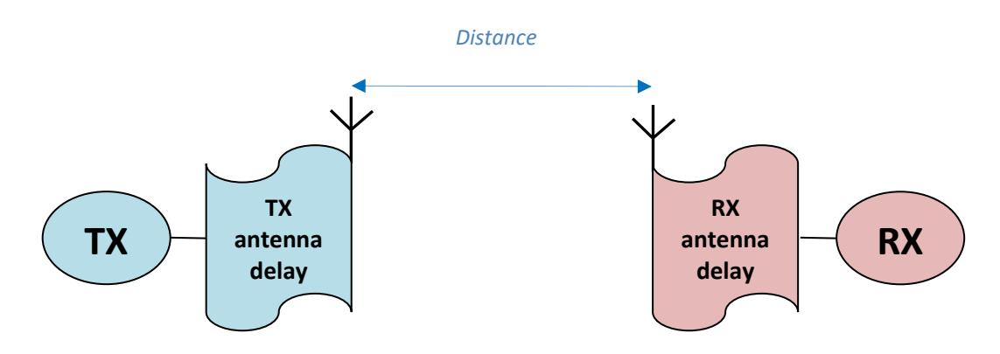
See API and examples [3], and Application Note APS014
For proper device operation, when using channel 9, the PLL will need to be re-calibrated if the device temperature changes by 20° C, using the steps below:
This only applies to channel 9. When using channel 5 the PLL does not need to be re-calibrated if temperature changes.
This part of the discussion on operational design choices relates to RTLS location schemes. Some of the ideas and points discussed may be more generally applicable.
In general to locate a mobile node measurements are needed to be referenced to a number of fixed known location "anchor" nodes. Typically a minimum of three anchor nodes are needed to locate a mobile node in two dimensions, while a minimum four non-coplanar anchors are needed to locate a mobile node in three dimensions. The spacing of anchors nodes in an installation has to be such that four anchors are always in communication range of the mobile tag no matter where it is within the operating space. The communication range is dependent on data rate and preamble length, the choice of which is influenced by the node density requirements and perhaps also power consumption.
There are three general methods of doing location. These are time difference of arrival (TDoA) based location, time of flight (ToF) based location and Phase Difference of Arrival (PDoA). The main operational points of each are outlined below. In either case the calculation of location, combining measurements from multiple anchors, is typically done by a software functionality called the central location engine .
Time of flight location requires two-way communication from the mobile node (tag) to each of the anchor nodes in its vicinity. Periodic message exchanges are used to measure the round trip delay and hence calculate the one way flight time between tag and anchor. The ToF times multiplied by the speed of light (and radio waves) gives the distance between the tag and the anchor. Each distance estimate defines a spherical surface, centred on the anchor, on which the tag must lie. The tag's 3D location is yielded by the intersection of the spheres resulting from ToF measurements to the four anchors.
In time difference of arrival (TDoA) location the mobile tag blinks periodically and the blink message is received by the anchor nodes in its vicinity. When the anchor nodes have synchronised clocks so that the arrival time of the blink message at all nodes can be compared, then for each pair of anchors the time difference in the arrival of the blink message defines a hyperbolic surface on which the sending tag must lie. The tag's 3D location is yielded by the intersection of the hyperbolic surfaces defined by the TDoA of the blink at four pairs of anchors.
Phase Difference of Arrival involves determining the phase difference at which the radio signal from the tag arrives at the anchor relative to a predefined direction. By measuring PDoA at a number of anchors whose position is known the source of the transmission can be determined. For low power RTLS deployments the TDoA scheme has benefits in that the tag needs to only send a single message in order for it to be located. In contrast in the ToF scheme the tag has to send and receive multiple messages with multiple anchors, and it needs to know what anchors are in the vicinity so it can address each of them in turn correctly. ToF does not need synchronised anchors, and may suit the case where a hand held device calculates its own location as part of a navigation system. The TDoA is a lower power solution as there are fewer messages involved, and this also suits higher density deployments. The TDoA anchor clock synchronisation may be achieved via a wired clock distribution. Alternatively there are wireless techniques for clock synchronisation. Wired synchronisation may suit higher tag densities as it allows anchors to listen all the time so no tag blinks are missed or collide with the wireless clock sync messages (potentially disrupting synchronisation). Anchors should be wired for power and also with Ethernet to communicate the arrival times to the central location engine.
Two-way ranging (ToF) is good for proximity detection and separation alarms, especially when both parties in the exchange are mobile nodes.
In an RTLS the accuracy of the DW3000's RX timestamps can give sub 10 cm resolution. Note, however that the geometry of anchors with respect to the tag can smear the accuracy of the calculated location when individual measurements are combined. Having additional anchors in range of the tag can offset this if it allows the system to select anchors with best geometry and best receive signal quality with respect to the tag being located.
This appendix is for information only and describes various methods of implementing a two-way ranging scheme between two nodes.
The chosen two-way ranging algorithm is implemented by host system software and is not a feature of the DW3000. The DW3000 just provides the facilities for message time-stamping and precise control of message transmission times that enable these algorithms. See section 4.1.7 – RX message timestamp, 3.2 – Transmission timestamp and 3.3 – Delayed transmission for details of this.
In all of the schemes that follow one node acts as Initiator , initiating a range measurement, while the other node acts as a Responder listening and responding to the initiator, and calculating the range.
Single-sided two-way ranging (SS-TWR) involves a simple measurement of the round trip delay of a single message from one node to another and a response sent back to the original node.
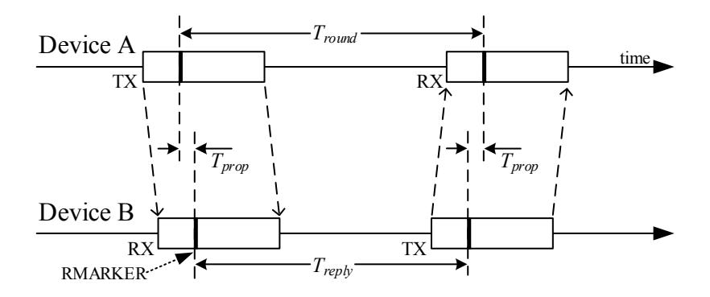
Figure 31: Single-sided two-way ranging
The operation of SS-TWR is as shown i n Figure 31, where device A initiates the exchange and device B responds to complete the exchange and each device precisely timestamps the transmission and reception times of the packets, and thus can calculate times Tround and Treply by simple subtraction. And the resultant time-of-flight, Tprop may be estimated by the equation:
The times Tround and Treply are measured independently by device A and B using their respective local clocks, which both have some clock offset error e A and e B from their nominal frequency, and so the resulting timeof-flight estimate has a considerable error that increases as Treply increases. DW3000 however is able to measure the clock offset of the remote transmitter, (see REG_DRX_DIAG3), and this may be used to compensate for that error, using the modified equation below, to produce results that are as good as can be achieved using DS-TWR where the reply times are not too long, (i.e. < 5 ms).
Double-sided two-way ranging (DS-TWR) is an extension of the basic single-sided two-way ranging in which two round trip time measurements are used and combined to give a time-of-flight result which has a reduced error even for quite long response delays.
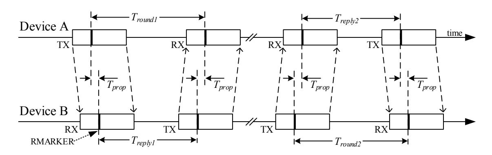
Figure 32: Double-sided two-way ranging with four messages
The operation of DS-TWR is as shown in Figure 32, where device A initiates the first round trip measurement to which device B responds, after which device B initiates the second round trip measurement to which device A responds completing the full DS-TWR exchange. Each device precisely timestamps the transmission and reception times of the messages.
The four messages of DS-TWR, shown in Figure 32, can be reduced to three messages by using the reply of the first round-trip measurement as the initiator of the second round-trip measurement. This is shown in Figure 33.
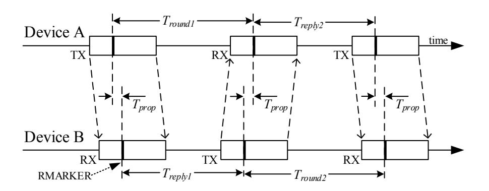
Figure 33: Double-sided two-way ranging with three messages
The resultant time-of-flight estimate, Tprop, in both the three and four message cases may be calculated using the expression:
This scheme is denoted ASYMMETRIC because it does not require the reply times from each device to be the same. Using this scheme, the typical clock induced error is in the low picosecond range even with 20 ppm crystals.
The asymmetric method allows complex ranging schemes to be achieved with a small number of messages. For example ranging from a tag to three anchors, can be achieved as per i n Figure 34 where the tag can be located after sending only 2 messages and receiving 3.
This represents a substantial saving in message traffic thereby saving battery power and air-time. This assumes that the anchors are networked and pool the range measurements in some centralised location engine function that calculates the estimate of the tag's location.
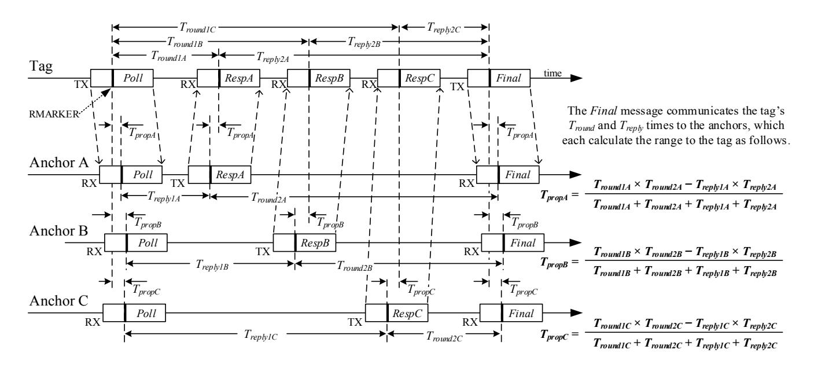
Figure 34: Ranging to 3 anchors with just 5 messages where each anchor calculates its own range result
| Abbreviation | Full Title | Explanation | |
|---|---|---|---|
| AGC |
automatic gain
control |
A scheme that automatically adjusts the gain of the receiver depending
on the power in the received signal |
|
| ACK |
acknowledgement
(frame) |
A frame sent in response to a received frame indicating successful
reception. DW3000 allows the automatic generation of such frames when appropriately configured. |
|
| AES |
advanced
encryption standard |
AES is a symmetric block cipher used to encrypt data. In the DW3000
this is implemented in a dedicated hardware block. |
|
| AON |
always-on block
(for saving configuration) |
A section of memory in DW3000 whose contents are retained provided
VDD1 is maintained above the minimum limit specified in the DW3000 Datasheet [5]. Intended for saving device configuration during the SLEEP and DEEPSLEEP states and restoring it thereafter. |
|
| BPM |
burst position
modulation |
A modulation scheme in which information is conveyed by the position
of a burst of pulses in one of a number of possible positions in a symbol |
|
| BPSK |
binary phase-shift
keying |
A modulation scheme in which information is conveyed by whether
pulses are positive or negative |
|
| CRC |
cyclic redundancy
check (an FCS) |
Error detecting code appended to the frame in the transmitter to allow
detection of errors at the receiver. |
|
| CIR |
channel impulse
response |
The impulse response of the communications channel between the
transmitter and receiver as detected by DW3000 for the most recently received packet. Really this is a channel impulse response estimate (CIRE) but the abbreviation CIR is used to mean the same thing throughout this manual. |
|
| CIA |
channel impulse
analyser |
This is the algorithm that processes the CIR (in the accumulator) to find
the leading edge during the process of estimating the RX timestamp for a received packet. The CIA may be applied to CIR resulting from preamble and/or STS sequences. |
|
| DPS |
dynamic
preamble select |
Anti-spoofing mechanism to allow IEEE 802.15.4 [1] devices change their
preamble codes during ranging from those in normal use. |
|
| ESD |
electrostatic
discharge |
A sudden flow of electrical current between two electrically charged
objects caused by contact, an electrical short circuit or dielectric breakdown. Can cause failure of semiconductor devices. DW3000 is resistant to ESD up to the limits specified in the Datasheet. |
|
| EUI |
extended unique
identifier |
64-bit IEEE device address. Refer to Sub-register 0x00:04 – Extended
Unique Identifier. |
|
| FCS |
frame check
sequence (the CRC) |
A CRC appended to the frame in the transmitter to allow detection of
errors at the receiver. |
|
| FAST_RC | fast RC oscillator | Fast RC oscillator which runs at approx. 120 MHz. | |
| IF |
intermediate
frequency |
A frequency to which a carrier frequency is shifted as an intermediate
step in transmission or reception. |
|
| Abbreviation | Full Title | Explanation | |
|---|---|---|---|
| LCSS |
Low
cross-correlation sum set |
This is a block in the DW3000 receiver that modifies the STS correlation
function to reduce side-lobes and produce a cleaner CIR accumulation of the STS. |
|
| LDC | low duty-cycle |
Certain regulatory jurisdictions define rules that limit the duration of
UWB transmissions per unit time in certain channels. These rules are generally referred to as low duty cycle rules |
|
| LDO |
low drop-out
voltage regulator |
Linear voltage regulator that requires only a small differential between
its input source voltage and its output regulated voltage below which it can no longer regulate correctly. DW3000 uses a number of such regulators. |
|
| LNA |
low noise
amplifier |
Circuit normally found at the front-end of a radio receiver designed to
amplify very low level signals while keeping any added noise to as low a level as possible |
|
| LOS | line of sight |
Physical radio channel configuration in which there is a direct line of
sight between the transmitter and the receiver |
|
| NLOS | non line of sight |
Physical radio channel configuration in which there is no direct line of
sight between the transmitter and the receiver |
|
| OTP |
one-time
programmable (memory) |
Internal memory in DW3000 that can be programmed once to store
various identification and calibration values |
|
| PAC |
preamble
acquisition chunk |
A group of preamble symbols which are correlated together in the
preamble detection process in the receiver. The size of the PAC is configurable – see DTUNE0. |
|
| PDoA |
phase difference
of arrival |
The difference in the phase of a signal as received at a pair of antennas,
which can provide information on the bearing of the transmitting device. |
|
| PHR | PHY header | Part of the packet that comes before the PHY payload. | |
| PHY | physical layer |
Defined in the context of the OSI 7-layer model for communications
systems in general and the IEEE802.15.4 [1] standard in particular, the PHY layer is the lowest layer in the 7-layermodel and defines the physical interface to the communications medium |
|
| PLL | phase locked loop |
Phase locked loop used to generate stable frequency clocks. These are
used in DW3000 to generate carrier frequencies and system clocks. |
|
| PRF |
pulse repetition
frequency |
Defined in the context of the IEEE802.15.4 [1] standard. This is the
frequency at which pulses are repeated in the preamble and data portions of a packet depending on the chosen configuration. |
|
| PSR |
preamble symbol
repetitions |
Used to define the overall preamble length. A larger number of
preamble symbol repetitions give a longer preamble. |
|
| RF | radio frequency |
Generally used to refer to signals in the range of 3 kHz to 300 GHz. In
the context of a radio receiver, the term is generally used to refer to circuits in a receiver before down-conversion takes place and in a transmitter after up-conversion takes place |
|
| RMARKER | ranging marker |
The RMARKER is the time when the peak pulse location associated with
the first chip period following the SFD is at the local antenna. |
|
| Abbreviation | Full Title | Explanation | |
|---|---|---|---|
| RSSI |
received signal
strength indication |
An abbreviation for the measured (or estimated) receive power level. | |
| RTLS |
real time location
systems |
System intended to provide information on the location of various items
in real-time. |
|
| RX |
receive or
receiver |
Term used to refer to the receiver section of a transceiver or the
operation of receiving signals |
|
| SAR |
Successive
Approximation Register ADC |
A type of Analog to Digital converter that used a digital binary search to
converge on the correct digital representation of the analog input level. |
|
| SECDED |
single error
correct, double error detect |
A parity check sequence (used in the PHR) that allows the:
• detection and correction of a single bit error in a group of bits or • the detection but not the correction of a double bit error |
|
| SFD |
start of frame
delimiter |
Defined in IEEE802.15.4 [1]. The SFD marks the completion of the
preamble section of the packet and the start of the payload or STS section depending on the packet type. |
|
| SHR |
synchronisation
header |
Defined in the context of the IEEE802.15.4 standard. The SHR consists
of the preamble and the SFD. |
|
| SPI |
serial peripheral
interface |
An industry accepted method for interfacing between IC's using a
synchronous serial scheme first introduced by Motorola |
|
| SP3 |
STS packet
configuration 3 |
A packet configuration where the packet consists of just preamble, SFD
and STS. |
|
| STS |
scrambled
timestamp sequence |
A term used to refer to a sequence of pseudo-randomized pulses
generated using a deterministic random bit generator (DRBG) and included in the UWB packet as per Figure 13 depending on the STS packet configuration. |
|
| TDoA |
time difference of
arrival |
Method of deriving information on the location of a transmitter. The
time of arrival of a packet at physically different locations whose clocks are synchronized is noted and the difference in the arrival times provides information on the location of the transmitter. A number of such TDoA measurements at different locations can be used to uniquely determine the position of the transmitter. Refer to Decawave's website for further information. |
|
| ToA | Time of arrival |
The receive time of a packet, generally referenced to the RMARKER,
sometimes called the receive timestamp. |
|
| ToF | time of flight |
The time taken for a radio signal to travel between the transmitting
antenna and the receiving antenna |
|
| TX |
transmit or
transmitter |
Term used to refer to the transmitter section of a transceiver or the
operation of transmitting signals |
|
| UWB | ultra wide-band |
A radio scheme employing channel bandwidths of, or in excess of,
500MHz |
|
| WSN |
wireless sensor
networks |
A network of wireless nodes intended to enable the monitoring and
control of the physical environment |
|
| [1] |
IEEE Std 802.15.4™‐2020. IEEE Standard for Low‐Rate Wireless Networks. Developed by the LAN/MAN
Standards Committee of the IEEE Computer Society. Available from: http://standards.ieee.org/ |
|---|---|
| [2] |
IEEE Std 802.15.4z™-2020 (Amendment to IEEE Std 802.15.4™-2020). IEEE Standard for Low-Rate Wireless
Networks. Amendment 1: Enhanced Ultra Wideband (UWB) Physical Layers (PHYs) and Associated Ranging Techniques. Developed by the LAN/MAN Standards Committee of the IEEE Computer Society. Approved 4 June 2020 IEEE SA Standards Board. Available from: http://standards.ieee.org/ |
| [3] | DW3000 APIs and Simple examples release – source code available from www.decawave.com |
| [4] |
IEEE Std 802.15.8™-2017. IEEE Standard for Wireless Medium Access Control (MAC) and Physical Layer
(PHY) Specifications for Peer Aware Communications (PAC). Developed by the LAN/MAN Standards Committee of the IEEE Computer Society. Available from: http://standards.ieee.org/ |
| [5] | DW3000 Datasheet |
| [6] | APS312 Production tests for DW3000 based products – application note available from www.decawave.com |
| Revision | Date | Description |
|---|---|---|
| 1.1 | 28th May 2021 | Improved feature descriptions across entire document |
| 1.0 |
st Sep 2020
1 |
First release |
Decawave develops semiconductors solutions, software, modules, reference designs - that enable real-time, ultra-accurate, ultra-reliable local area micro-location services. Decawave's technology enables an entirely new class of easy to implement, highly secure, intelligent location functionality and services for IoT and smart consumer products and applications.
For further information on this or any other Decawave product, please refer to our website www.decawave.com